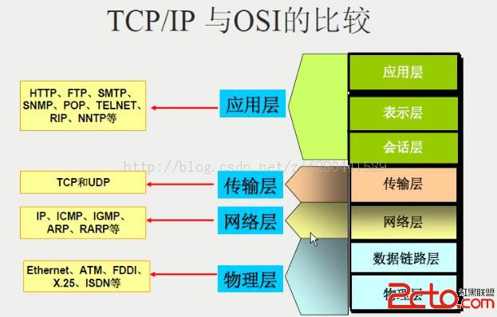

muduo中的Channel和Poller
Channel
每一个Channel对象只负责一个文件描述符的IO时间分发，但她并不拥有这个文件描述符，也不会在析构的时候关闭该文件描述符。channel把不同的IO事件分发为不同的回调，例如readCallBack，writeCallback等，而回调用boost::function表示，用户无需继承channel。用户一般不直接使用，而回使用更上一层的封装，如TcpConnection。
channel的部分代码如下：1
2
3
4
5
6
7
8
9
10
11
12
13
14
15
16
17
18
19
20
21
22
23
24
25
26
27
28
29
30
31
32
33
34
35
36
37
38
39
40
41
42
43
44
45
46
47
48
49
50
51
52
53
54
55
56
57
58
59
60
61
62
63
64
65
66
67
68
69
70
71
72
73
74
75
76
77
78
79
80
81
82
83namespace muduo
{
namespace net
{
class EventLoop;
class Channel : boost::noncopyable
{
public:
typedef boost::function<void()> EventCallback;
typedef boost::function<void(Timestamp)> ReadEventCallback;
Channel(EventLoop* loop, int fd);
~Channel();
void handleEvent(Timestamp receiveTime);
void setReadCallback(const ReadEventCallback& cb)
{ readCallback_ = cb; }
void setWriteCallback(const EventCallback& cb)
{ writeCallback_ = cb; }
void setCloseCallback(const EventCallback& cb)
{ closeCallback_ = cb; }
void setErrorCallback(const EventCallback& cb)
{ errorCallback_ = cb; }
void enableReading() { events_ |= kReadEvent; update(); }
void disableReading() { events_ &= ~kReadEvent; update(); }
void enableWriting() { events_ |= kWriteEvent; update(); }
void disableWriting() { events_ &= ~kWriteEvent; update(); }
void disableAll() { events_ = kNoneEvent; update(); }
bool isWriting() const { return events_ & kWriteEvent; }
bool isReading() const { return events_ & kReadEvent; }
private:
EventLoop* loop_;
const int fd_;
int events_;
int revents_; // it's the received event types of epoll or poll
int index_; // used by Poller.
ReadEventCallback readCallback_;
EventCallback writeCallback_;
EventCallback closeCallback_;
EventCallback errorCallback_;
};
}
}
//revents_由poller来设置，根据触发的事件类型来执行相应的回调
void Channel::handleEventWithGuard(Timestamp receiveTime)
{
eventHandling_ = true;
LOG_TRACE << reventsToString();
if ((revents_ & POLLHUP) && !(revents_ & POLLIN))
{
if (logHup_)
{
LOG_WARN << "fd = " << fd_ << " Channel::handle_event() POLLHUP";
}
if (closeCallback_) closeCallback_();
}
if (revents_ & POLLNVAL)
{
LOG_WARN << "fd = " << fd_ << " Channel::handle_event() POLLNVAL";
}
if (revents_ & (POLLERR | POLLNVAL))
{
if (errorCallback_) errorCallback_();
}
if (revents_ & (POLLIN | POLLPRI | POLLRDHUP))
{
if (readCallback_) readCallback_(receiveTime);
}
if (revents_ & POLLOUT)
{
if (writeCallback_) writeCallback_();
}
eventHandling_ = false;
}
Poller
Poller calss为IO multiplexing的封装。Poller并不拥有channel，channel在析构前必须自己unregister(EventLoop::removeChannel()),避免空悬指针。
Poller使用两个数据结构来记录需要监听的channel：1
2
3
4typedef std::map<int, Channel*> ChannelMap;
typedef std::vector<struct pollfd> PollFdList;
ChannelMap channels_;
PollFdList pollfds_;
pollfds用来记录需要监听的文件描述符以及对应监听的事件，每一个channel在这里面都有一个元素与之对应，元素的下标就是channel成员变量中的index,poller可以跟根据每一个channel中的index来对pollfds_进行更新(removeChannel, updateChannel等操作)。
channels用来记录每一个文件描述符对应的channel指针，这里的key为channel的文件描述符，不可以为channel的index,因为index会改变。当Poller获得文件描述符的监听事件后，就根据channels来获得有时间发生的文件描述符的channel，并设置对应channel的revents_(实际发生的事件),接着将每一个有事件的channel放进一个vector里面，最后将vector返回给EventLoop，作为activateChannels。
之所以需要返回activateChannels，而不是在遍历发生事件的文件描述符的同时执行对应的channel中的handleEvent函数，是因为handleEvent函数有可能会对pollfds进行修改，如删除channel，使得在迭代期间pollfds大小发生改变，这是一件很危险的事情。另一个原因就是简化Poller的职责，Poller只负责监听，不负责事件的分发与处理。
如果某一个channel暂时不关心任何事件，那么可以吧pollfd.fd设置为负数，这样poll会忽略此文件描述符。不能将pollfd.events设置为0，因为无法屏蔽POLLERR事件。muduo的改进做法是吧pollfd.fd设为channel->fd()的相反数减一（文件描述符从0开始，减一是为了兼容0，因为0的相反数还是0）。
但需要删除channel时，由于pollfds使用的是vector来存储channel的，可以根据channle本身的index来确定该channel在vector中所在的位置。如果直接删除该位置的话，那么后面的channel都需要上移一个位置，导致后面的channel都需要更新自己的index,这样效率会很低。这里有一个小技巧，就是直接将vector最后的元素A与该位置进行呼唤，只需要修改A的index就好，其他的channel不受影响。1
2
3
4
5
6
7
8
9
10
11
12
13
14
15
16
17
18
19
20
21
22
23
24
25
26
27
28
29void PollPoller::removeChannel(Channel* channel)
{
Poller::assertInLoopThread();
LOG_TRACE << "fd = " << channel->fd();
assert(channels_.find(channel->fd()) != channels_.end());
assert(channels_[channel->fd()] == channel);
assert(channel->isNoneEvent());
int idx = channel->index();
assert(0 <= idx && idx < static_cast<int>(pollfds_.size()));
const struct pollfd& pfd = pollfds_[idx]; (void)pfd;
assert(pfd.fd == -channel->fd()-1 && pfd.events == channel->events());
size_t n = channels_.erase(channel->fd());
assert(n == 1); (void)n;
if (implicit_cast<size_t>(idx) == pollfds_.size()-1)
{
pollfds_.pop_back();
}
else
{
int channelAtEnd = pollfds_.back().fd;
iter_swap(pollfds_.begin()+idx, pollfds_.end()-1);
if (channelAtEnd < 0)
{
channelAtEnd = -channelAtEnd-1;
}
channels_[channelAtEnd]->set_index(idx);
pollfds_.pop_back();
}
}
muduo中的EventLoop
muduo主要采用Reactor模式来实现C++网络库。一个EventLoop对应一个线程。服务器就是在EventLoop中来实现对网络连接的管理的，所有的socket的读写都在该loop中实现。EventLoop的执行大体步骤如下：

代码为：1
2
3
4
5
6
7
8
9
10
11
12
13
14
15
16
17
18
19
20
21
22
23
24
25
26
27
28
29
30
31
32
33void EventLoop::loop()
{
assert(!looping_);
assertInLoopThread();
looping_ = true;
quit_ = false; // FIXME: what if someone calls quit() before loop() ?
LOG_TRACE << "EventLoop " << this << " start looping";
while (!quit_)
{
activeChannels_.clear();
pollReturnTime_ = poller_->poll(kPollTimeMs, &activeChannels_);
++iteration_;
if (Logger::logLevel() <= Logger::TRACE)
{
printActiveChannels();
}
// TODO sort channel by priority
eventHandling_ = true;
for (ChannelList::iterator it = activeChannels_.begin();
it != activeChannels_.end(); ++it)
{
currentActiveChannel_ = *it;
currentActiveChannel_->handleEvent(pollReturnTime_);
}
currentActiveChannel_ = NULL;
eventHandling_ = false;
doPendingFunctors();
}
LOG_TRACE << "EventLoop " << this << " stop looping";
looping_ = false;
}
pendingFunctors的定义如下：
1 | typedef boost::function<void()> Functor; |
在EventLoop中，只有pendingFunctors暴露给其他的线程，所以对于该成员的修改需要mutex来保护
1 | void EventLoop::runInLoop(Functor&& cb) |
在遍历pendingFunctors的时候，采用的是先剪切，再遍历：1
2
3
4
5
6
7
8
9
10
11
12
13
14
15
16void EventLoop::doPendingFunctors()
{
std::vector<Functor> functors;
callingPendingFunctors_ = true;
{
MutexLockGuard lock(mutex_);
functors.swap(pendingFunctors_);
}
for (size_t i = 0; i < functors.size(); ++i)
{
functors[i]();
}
callingPendingFunctors_ = false;
}
这样可以在遍历的时候，不会阻塞其他线程往EventLoop里面注册函数，并且，由于回调函数里面有可能也会调用queueInLoop函数，所以这样也可以避免死循环，先剪切后，遍历的是新的functors，原来的pendingfunctors为空，如果回调函数又执行queueInLoop的话，注册的是pendingFunctors，跟新的Functors无关。所以可以安全的遍历新的Functors。
由于EventLoop有可能会一直阻塞在poll中，此时如果有回调函数需要EventLoop马上执行的话，那么需要立马唤醒EventLoop的阻塞，为了实现该功能，EventLoop使用了Linux现有的eventfd。
eventfd：实现了线程之间事件通知的方式，eventfd的缓冲区大小是sizeof(uint64_t)；向其write可以递增这个计数器，read操作可以读取，并进行清零；eventfd也可以放到监听队列中，当计数器不是0时，有可读事件发生，可以进行读取。1
2
3
4
5
6
7
8
9
10
11
12
13
14
15
16
17
18
19
20
21
22
23
24
25
26
27
28
29
30
31
32
33
34
35
36
37
38
39
40
41
42
43
44
45
46
47
48
49
50
51
52
53
54
55
56
57
58
59EventLoop::EventLoop()
: looping_(false),
quit_(false),
eventHandling_(false),
callingPendingFunctors_(false),
iteration_(0),
threadId_(CurrentThread::tid()),
poller_(Poller::newDefaultPoller(this)),
timerQueue_(new TimerQueue(this)),
wakeupFd_(createEventfd()),
wakeupChannel_(new Channel(this, wakeupFd_)),
currentActiveChannel_(NULL)
{
LOG_DEBUG << "EventLoop created " << this << " in thread " << threadId_;
if (t_loopInThisThread)
{
LOG_FATAL << "Another EventLoop " << t_loopInThisThread
<< " exists in this thread " << threadId_;
}
else
{
t_loopInThisThread = this;
}
wakeupChannel_->setReadCallback(
boost::bind(&EventLoop::handleRead, this));
// we are always reading the wakeupfd
wakeupChannel_->enableReading();
}
int createEventfd()
{
int evtfd = ::eventfd(0, EFD_NONBLOCK | EFD_CLOEXEC);
if (evtfd < 0)
{
LOG_SYSERR << "Failed in eventfd";
abort();
}
return evtfd;
}
void EventLoop::wakeup()
{
uint64_t one = 1;
ssize_t n = sockets::write(wakeupFd_, &one, sizeof one);
if (n != sizeof one)
{
LOG_ERROR << "EventLoop::wakeup() writes " << n << " bytes instead of 8";
}
}
void EventLoop::handleRead()
{
uint64_t one = 1;
ssize_t n = sockets::read(wakeupFd_, &one, sizeof one);
if (n != sizeof one)
{
LOG_ERROR << "EventLoop::handleRead() reads " << n << " bytes instead of 8";
}
}
EventLoop提供一个接口来直接退出EventLoop循环，该接口为public，允许外面的对象访问：1
2
3
4
5
6
7
8
9
10
11void EventLoop::quit()
{
quit_ = true;
// There is a chance that loop() just executes while(!quit_) and exits,
// then EventLoop destructs, then we are accessing an invalid object.
// Can be fixed using mutex_ in both places.
if (!isInLoopThread())
{
wakeup();
}
}
muduo中的buffer
muduo在应用层上加了一个缓存机制，用户发送接受数据只需要与buffer打交道就好，底层的网络通信由buffer来实现。
为什么non-blocking网络编程中应用层buffer是必须的
non-blocking IO的核心思想就是避免阻塞在read()或write()或其他的IO系统调用上，这样可以最大限度的复用thread-of-control，让一个线程能服务于多个sockets链接。IO线程只能阻塞在IO multiplexing函数上，如select/poll/epoll_wait.这样一来，应用层的缓存是必须的。每一个TCP socket都要有stateful的input buffer和output buffer。
TCPConnection必须要有output buffer
考虑一个常见的场景：程序想要通过TCP联系发送100KB的数据，但是write()调用中，操作系统只接受80KB的，此时如果直接让应用程序发送的话，那么剩下的20KB数据就发不出去，应用程序可以等到发送缓冲区有空间的时候继续发送，但是不知道什么时候有空间，此时将会阻塞，如果不等待的话，应用程序需要记录剩下的20KB，等到下一次发，然后继续循环上面的操作。但是应用程序只是负责生产数据，对于数据什么时候发送，以怎样的大小发送，应用程序并不关心，这些事情应该都由网络库来实现，所以需要有output buffer。
TcpConnection必须要有input buffer
TCP是一个无边界的字节流协议，接受方必须要处理“收到的数据尚不构成一条完整的消息”和“一次性收到两条消息的数据”等情况。网络库在处理socket可读事件的时候，必须一次性吧socket里的数据读完，否则会反复触发POLLIN事件，造成busy-loop。那么网络库就需要应对数据不完整的情况，需要将收到的数据放在input buffer中，等构成一条完整的消息后，在通知应用程序。也就是应用层的消息分包
Buffer的类图
buffer内部数据存储结构为vector
Buffer::readFD()
在非阻塞网络编程中，对于缓冲去大小的设定需要根据不同应用的场景来决定。为了减少系统调用，一次性读的数据越多约好，但是需要一个比较大的缓冲区。另一方面，为了减少系统的内存占用，应该将缓冲区设的小一点比较好，不然的话，如果一个连接的缓冲区大小为1M，那么1000个连接就需要21G的内存，但是在大多数情况下，buffer的使用率很低，此时大的buffer会造成内存的浪费。
在muduo里面，readFD函数的实现为：在栈上准备一个65536字节的extrabuf，然后利用readv()来读取数据，iovec有两块，一个指向input buffer的writable字节，一个指向extrabuf。如果读入的数据很多，那么可以放在extrabuf里面，然后程序再把extrabuf里面的数据append到buffer中，如果读取数据比较少，那么数据直接存在buffer里面，不需要额外的操作。
buffer数据结构

prependable = readIndex
readable = writeIndex-readIndex
writable = size()-writeIndex
数据结构的初始化如下：
在数据的读取过程中，readIndex和writeIndex随着读取操作的进行而改变。
自动增长和内部腾挪
当当前的可写空间不够的时候，那么需要分配一个更大的内存，在分配好内存进行数据的复制时，顺便进行碎片回收，将所有数据负载到新内存的kCheapPrependable个字节后面。由于vector重新分配了内存，原有的指向其元素的指针会失效，所以buffer中采用的是readIndex和writeIndex来表示可读和可写的其实下标。


具体的代码如下：1
2
3
4
5
6
7
8
9
10
11
12
13
14
15
16
17
18
19
20void makeSpace(size_t len)
{
if (writableBytes() + prependableBytes() < len + kCheapPrepend)
{
// FIXME: move readable data
buffer_.resize(writerIndex_+len);
}
else
{
// move readable data to the front, make space inside buffer
assert(kCheapPrepend < readerIndex_);
size_t readable = readableBytes();
std::copy(begin()+readerIndex_,
begin()+writerIndex_,
begin()+kCheapPrepend);
readerIndex_ = kCheapPrepend;
writerIndex_ = readerIndex_ + readable;
assert(readable == readableBytes());
}
}
前方添加
prependable的作用就是实现高效率的前方添加。预留一定的小空间，但需要在数据的前面添加数据时，就可以直接的添加了，否则的话，需要对整个buffer进行操作。
例如：程序以固定的4字节表示数据的长度，但需要序列化一个消息的时候，不知道该消息的长度，那么可以一直append直到序列化完成为止，然后就可以在前面添加最终的长度。
多线程与fork()
fork一般不能在多线程程序中调用，因为Linux的fork()只克隆当前线程的thread of control，不克隆其他的线程。fork()之后，除了当前的线程之外，其他的线程都消失。也就是说fork不能一下子得到一个与父进程一样的多线程子进程。
fork()之后，子进程中已有一个线程，其他的线程都消失了，这就造成一个危险的局面。在执行fork前，有一个mutex被线程锁住了，此时调用fork，子进程空间的mutex会处于锁住状态，由于父进程中的mutex与子进程中的muetx属于不同的空间，即使父进程中的mutex别解锁了，此时子进程中的mutex也是处于锁住状态，在子进程中根本就没有谁拥有该锁，这就导致子进程的mutex一直处于锁住状态，此时如果子进程对mutex加锁的话，那么就会进入死锁。
Linux上的线程标识
POSIX threads库提供了pthread_self接口，可以获得进程里面的线程id，其类型为pthread_t类型。pthread_t不一定是一个数值类型，也有可能是一个结构体，它是一个非可移植性的类型，也就是说，在这个系统中，可能是unsigned int类型，在别的系统可能是long，double，或者甚至就是个结构体，都不得而知，所以非可移植。因此Pthreads专门提供了pthread_equal函数用于比较两个线程标识符是否相等。这就带来了一系列问题：
- 无法打印输出pthread_t，因为不知道其正真的类型。
- 无法比较pthread_t的大小或是hash值，所以不能作为关联容器的key
- pthread_t只是在进程内有意义，与操作系统的任务调度之间无法建立有效的关联。在/proc文件系统中找不到pthread_t对应的task。
因此，pthread_t并不适合作为程序中对线程的标识符。
在Linux上，可以使用gettid系统调用来获得线程的id，这么做的好处为：
- 他的类型为pid_t, 其值通常是一个小的整数型，便于在日志中输出
- 在现代的Linux操作系统中，她直接表示内核的任务调度id，因此在/proc文件系统中可以轻易找到其对应项
- 在其他的系统工具中容易定位到具体的线程。例如在top命令中，可以按照线程列出任务，可以根据CPU或是内存的使用率定位到具体的线程
- 任何时刻都是全局唯一的。
- 0为非法值，因为操作系统第一个进程init的pid为1。
如何获取线程的TID（thread ID）?
通过查看man得到如下描述：
(1) The gettid() system call first appeared on Linux in kernel 2.4.11.
(2) gettid() returns the thread ID of the current process. This is equal to the process ID (as returned by getpid(2)),
unless the process is part of a thread group (created by specifying the CLONE_THREAD flag to the clone(2) system call). All processes in the same thread group have the same PID, but each one has a unique TID.
(3) gettid() is Linux specific and should not be used in programs that are intended to be portable.
（如果考虑移植性，不应该使用此接口）
1 | #include <sys/syscall.h> |
C++中线程安全的单例实现
单例模式的实现理论上采用double checked locking 不会出现线程安全问题，但是有可能编译器会对程序进行优化，使得程序乱序执行，导致出现错误。在Java中，可以借助类的转载阶段初始化静态区域来避免该问题，但是C++没有这个机制。在C++的单例实现中，可以使用pthread_once()函数来实现。
1 | /* |
条件变量的使用
条件变量的正确使用方式一般为：
- 必须与mutex一起使用，该布尔表达式的读写需要受到mutex的保护
- 在mutex已上锁的时候才能用 wait()
- 吧判断布尔条件和wait()放到while循环中
写成代码为：1
2
3
4
5
6
7
8
9
10
11
12
13
14mudo::MutexLock mutex;
mudo::Condition cond(mutex);
std::dequeue<int> queue;
int dequeue(){
MutexLockGuard lock(mutex);
while(queue.empty()){
cond.wait(); //会原子的unlock mutex进入等待，不会与enqueue形成死锁，当wait出来后，会自动加锁
}
assert(!queue.empty());
int top = queue.front();
queue.pop_front();
return top;
}
使用while循环来等待条件变量，而不能使用if的原因就是在linux下有时会出现虚假唤醒，在多核的情况下，一个noify有可能会唤醒多个wait函数，造成虚假唤醒。还有一个原因就是，如果使用if语句的话，那么有可能在enqueue的时候不小心使用了broadcast，造成所有等待wait的线程被唤醒，每一个线程都加锁后进行pop操作，就有可能导致队列为空的情况下还在pop，从而出现错误。
对于signal和broadcast端：
- 在signal之前一定要修改布尔表达式
- 修改布尔表达式要在mutex的保护下
- 注意区分signal和broadcast：broadcast通常用于表明状态变化，signal通常用于表示资源可用
代码为：1
2
3
4
5void enqueue(int x){
MutexLockGuard lock(mutex);
queue.push_back(x);
cond.notify() //notify可以移出临界区之外
}
在上面的代码中，enqueue每一次push都会调用notify，能不能在队列从0变为1的时候才调用notify？
对于只有一个dequeue的线程的话可以这么做，但对于有多个dequeue的话，就不行。因为只有在0变1
的情况下调用notify，此时只有一个线程被唤醒，即使队列有很多资源可以使用，其他线程也会一直
阻塞在wait里面。造成线程浪费，程序并发性得不到应用。
LCA之DFS+ST算法
DFS+ST算法可以在线的查询两个节点的最近公共祖先。由于任意两点的最近公共祖先必定在这两点的最短路径上，所以也可以根据这个特性来查找任意两点的最近路径。
DFS：深度优先遍历树的每一个节点，用数组deep按照遍历顺序记录下每一个节点的深度，另外需要记录每一个节点在数组中所对应的第一个出现的下标。
ST：有了深度数组，利用ST算法计算每一个偶数段的区间的最小深度的下标。
对于每一个查询(a, b), 先获得a和b在深度数组中第一次出现的下标firsta和firstb，接下来就是求出在深度数组中下标从firsta到firstb的最小值的下标，改下标对应的节点就是最近公共祖先。求最小值的下标ST算法可以在线的以常数的时间给出。如果需要求出两点之前的最短路径长度，那么可以直接的deep[a]+deep[b]-2*deep[最近公共祖先下标]。
例题：

采用DFS遍历整棵树，得到以下数据：
（1）遍历序列p：0 1 3 1 4 7 4 8 4 1 5 1 0 2 6 2 0
（2）各节点的深度序列 depth: 0 1 1 2 2 2 2 3 3
（3）各节点在序列p中首次出现的位置序列pos: 0 1 13 2 4 10 14 5 7
使用ST算法，假设现在我们要求节点7和5的最短路径，我们可以这样做：
（1）首先，从pos序列中获得节点7和节点5在p序列中第一次出现的位置分别为：pos[7] = 5, pos[5] = 10;
（2）得到p序列中[5, 10]这一段子序列s：7 4 8 4 1 5
（3）s序列中深度最小的点即节点1就是我们要找的节点7和节点5的LCA。
例子：最近公共祖先·三
描述
上上回说到，小Hi和小Ho使用了Tarjan算法来优化了他们的“最近公共祖先”网站，但是很快这样一个离线算法就出现了问题：如果只有一个人提出了询问，那么小Hi和小Ho很难决定到底是针对这个询问就直接进行计算还是等待一定数量的询问一起计算。毕竟无论是一个询问还是很多个询问，使用离线算法都是只需要做一次深度优先搜索就可以了的。
那么问题就来了，如果每次计算都只针对一个询问进行的话，那么这样的算法事实上还不如使用最开始的朴素算法呢！但是如果每次要等上很多人一起的话，因为说不准什么时候才能够凑够人——所以事实上有可能要等上很久很久才能够进行一次计算，实际上也是很慢的！
“那到底要怎么办呢？在等到10分钟，或者凑够一定数量的人两个条件满足一个时就进行运算？”小Ho想出了一个折衷的办法。
“哪有这么麻烦！别忘了和离线算法相对应的可是有一个叫做在线算法的东西呢！”小Hi笑道。
小Ho面临的问题还是和之前一样：假设现在小Ho现在知道了N对父子关系——父亲和儿子的名字，并且这N对父子关系中涉及的所有人都拥有一个共同的祖先（这个祖先出现在这N对父子关系中），他需要对于小Hi的若干次提问——每次提问为两个人的名字（这两个人的名字在之前的父子关系中出现过），告诉小Hi这两个人的所有共同祖先中辈分最低的一个是谁？
提示：最近公共祖先无非就是两点连通路径上高度最小的点嘛！
输入
每个测试点（输入文件）有且仅有一组测试数据。
每组测试数据的第1行为一个整数N，意义如前文所述。
每组测试数据的第2~N+1行，每行分别描述一对父子关系，其中第i+1行为两个由大小写字母组成的字符串Father_i, Son_i，分别表示父亲的名字和儿子的名字。
每组测试数据的第N+2行为一个整数M，表示小Hi总共询问的次数。
每组测试数据的第N+3~N+M+2行，每行分别描述一个询问，其中第N+i+2行为两个由大小写字母组成的字符串Name1_i, Name2_i，分别表示小Hi询问中的两个名字。
对于100%的数据，满足N<=10^5，M<=10^5, 且数据中所有涉及的人物中不存在两个名字相同的人（即姓名唯一的确定了一个人），所有询问中出现过的名字均在之前所描述的N对父子关系中出现过，且每个输入文件中第一个出现的名字所确定的人是其他所有人的公共祖先。
输出
对于每组测试数据，对于每个小Hi的询问，按照在输入中出现的顺序，各输出一行，表示查询的结果：他们的所有共同祖先中辈分最低的一个人的名字。
样例输入
4
Adam Sam
Sam Joey
Sam Micheal
Adam Kevin
3
Sam Sam
Adam Sam
Micheal Kevin
样例输出
Sam
Adam
Adam
1 | #include <iostream> |
代码来自hiho一下 第十七周的排名第一参赛者laekov
LCA之Tarjan算法
寻找最近公共祖先有两种效率高的算法，一种是离线算法Tarjan算法，用户输入所有查询，算法给出所有查询结果，算法在运行的时候就已经知道用户的所有查询了，时间复杂度为O(nlogn)。另外一种是在线算法DFS+ST算法，算法运行不需要知道用户的输入，每一次查询可以在常数时间内给出结果。时间复杂度为DFS->O(n), ST->O(nlogn)。这里主要讲一下Tarjan算法。
Tarjan算法是DFS搜索和并查集的思想的结合，深度搜索每一个节点，对于当前的节点x，将其看做一个新的集合，并将其作为该集合的代表，查询处理与该节点有关的查询，接着递归遍历该节点的所有子节点，在遍历完所有子节点后，将该集合与root集合合并，也就是并查集的Union操作。在查询的过程中还可以使用路径压缩的方法来提高查询效率。例如：如果有查询（a, b）,那么当遍历到a节点的时候，如果b节点已经遍历过了，那么分两种情况，如果b在另外一个子树上，那么查找b的时候，b所在的结合的代表就是a和b的最近公共祖先。如果b不在另一颗子树上，而是与a同在一颗子树，那么此时的b就是最近公共祖先。这也就是为什么在需要在遍历完节点的所有子节点后才可以将当前节点与root合并的原因。
例子：Nearest Common Ancestors
Description
A rooted tree is a well-known data structure in computer science and engineering. An example is shown below:

In the figure, each node is labeled with an integer from {1, 2,…,16}. Node 8 is the root of the tree. Node x is an ancestor of node y if node x is in the path between the root and node y. For example, node 4 is an ancestor of node 16. Node 10 is also an ancestor of node 16. As a matter of fact, nodes 8, 4, 10, and 16 are the ancestors of node 16. Remember that a node is an ancestor of itself. Nodes 8, 4, 6, and 7 are the ancestors of node 7. A node x is called a common ancestor of two different nodes y and z if node x is an ancestor of node y and an ancestor of node z. Thus, nodes 8 and 4 are the common ancestors of nodes 16 and 7. A node x is called the nearest common ancestor of nodes y and z if x is a common ancestor of y and z and nearest to y and z among their common ancestors. Hence, the nearest common ancestor of nodes 16 and 7 is node 4. Node 4 is nearer to nodes 16 and 7 than node 8 is.
For other examples, the nearest common ancestor of nodes 2 and 3 is node 10, the nearest common ancestor of nodes 6 and 13 is node 8, and the nearest common ancestor of nodes 4 and 12 is node 4. In the last example, if y is an ancestor of z, then the nearest common ancestor of y and z is y.
Write a program that finds the nearest common ancestor of two distinct nodes in a tree.
Input
The input consists of T test cases. The number of test cases (T) is given in the first line of the input file. Each test case starts with a line containing an integer N , the number of nodes in a tree, 2<=N<=10,000. The nodes are labeled with integers 1, 2,…, N. Each of the next N -1 lines contains a pair of integers that represent an edge –the first integer is the parent node of the second integer. Note that a tree with N nodes has exactly N - 1 edges. The last line of each test case contains two distinct integers whose nearest common ancestor is to be computed.
Output
Print exactly one line for each test case. The line should contain the integer that is the nearest common ancestor.
Sample Input
2
16
1 14
8 5
10 16
5 9
4 6
8 4
4 10
1 13
6 15
10 11
6 7
10 2
16 3
8 1
16 12
16 7
5
2 3
3 4
3 1
1 5
3 5
Sample Output
4
3
1 | #include<stdio.h> |
代码转载自这里
例子：CD操作
Problem Description
在Windows下我们可以通过cmd运行DOS的部分功能，其中CD是一条很有意思的命令，通过CD操作，我们可以改变当前目录。
这里我们简化一下问题，假设只有一个根目录，CD操作也只有两种方式：
- CD 当前目录名...\目标目录名 (中间可以包含若干目录，保证目标目录通过绝对路径可达)
- CD .. (返回当前目录的上级目录)
现在给出当前目录和一个目标目录，请问最少需要几次CD操作才能将当前目录变成目标目录？
Input
输入数据第一行包含一个整数T(T<=20)，表示样例个数；
每个样例首先一行是两个整数N和M(1<=N,M<=100000)，表示有N个目录和M个询问；
接下来N-1行每行两个目录名A B(目录名是只含有数字或字母，长度小于40的字符串)，表示A的父目录是B。
最后M行每行两个目录名A B，表示询问将当前目录从A变成B最少要多少次CD操作。
数据保证合法，一定存在一个根目录，每个目录都能从根目录访问到。
Output
请输出每次询问的结果，每个查询的输出占一行。
Sample Input
2
3 1
B A
C A
B C
3 2
B A
C B
A C
C A
Sample Output
2
1
21
2
3
4
5
6
7
8
9
10
11
12
13
14
15
16
17
18
19
20
21
22
23
24
25
26
27
28
29
30
31
32
33
34
35
36
37
38
39
40
41
42
43
44
45
46
47
48
49
50
51
52
53
54
55
56
57
58
59
60
61
62
63
64
65
66
67
68
69
70
71
72
73
74
75
76
77
78
79
80
81
82
83
84
85
86
87
88
89
90
91
92
93
94
95
96
97
98
99
100
101
102
103
104
105
106
107
108
109
110
111
112
113
114
115
116
117
118
119
120
121
122
123
124
125
126
127
128
129
130
131
132
133
134
135
136
137
138
139
140
141
142
143
144
145
146
147
148
149
150
151
152
153
154
155
156//思路：
// 求出a和b的最近公共祖先,然后分4种情况讨论
// ①. a和b有一个公共祖先c，则用 c时间戳-a的时间戳+1(1步可以直接从c到b)
// ②. a是b的祖先，则只用1步就可以到达b点
// ③. b是a的祖先，则用a的时间戳-b的时间戳
// ④. a和b是同一个点，则答案是0
#include<stdio.h>
#include<vector>
#include<string.h>
#include<map>
#include<math.h>
#include<string>
using namespace std;
#define Size 111111 //节点个数
struct Query
{
int nd,id;
}temp;
struct out
{
int s,e;
}out[Size];
vector<int> node[Size];
vector<struct Query>que[Size];
int n,m,pare[Size],ance[Size],in[Size],rank[Size],dis[Size],ans[Size],vis[Size];
map<string,int>mp;
void init()
{
int i;
for(i=1;i<=n;i++)
{
node[i].clear();
que[i].clear();
rank[i]=1;
pare[i]=i;///
}
memset(vis,0,sizeof(vis));
memset(in,0,sizeof(in));
memset(ance,0,sizeof(ance));
memset(dis,0,sizeof(dis));
mp.clear();
}
int aabs(int aa)
{
if(aa>0) return aa;
else return -aa;
}
int find(int nd)//并查集操作 不解释
{
return pare[nd]==nd?nd:pare[nd]=find(pare[nd]);
}
int Union(int nd1,int nd2)//并查集操作 不解释
{
int a=find(nd1);
int b=find(nd2);
if(a==b) return 0;
else if(rank[a]<=rank[b])
{
pare[a]=b;
rank[b]+=rank[a];
}
else
{
pare[b]=a;
rank[a]+=rank[b];
}
return 1;
}
void LCA(int root,int num)
{
int i,sz;
ance[root]=root;//首先自成一个集合
dis[root]=num;
sz=node[root].size();
for(i=0;i<sz;i++)
{
LCA(node[root][i],num+1);//递归子树
Union(root,node[root][i]);//将子树和root并到一块
ance[find(node[root][i])]=root;//修改子树的祖先也指向root
}
vis[root]=1;
sz=que[root].size();
for(i=0;i<sz;i++)
{
int nd1,nd2,idx,ancestor;
nd1=root;nd2=que[root][i].nd;idx=que[root][i].id;
if(vis[nd2])
{
ans[idx]=ance[find(nd2)];
}
}
return ;
}
int main()
{
int cas,i;
scanf("%d",&cas);
while(cas--)
{
char ss[100],ee[100];
int s,e,cnt=1;
scanf("%d %d",&n,&m);
init();
for(i=0;i<n-1;i++)
{
scanf("%s %s",ee,ss);
if(mp.find(ss)==mp.end())
{
s=cnt;mp[ss]=cnt++;
}
else s=mp[ss];
if(mp.find(ee)==mp.end())
{
e=cnt;mp[ee]=cnt++;
}
else e=mp[ee];
if(s!=e)
{
node[s].push_back(e);
in[e]++;
}
}
for(i=0;i<m;i++)
{
scanf("%s %s",ss,ee);
s=mp[ss];e=mp[ee];
out[i].s=s;out[i].e=e;
temp.nd=e;temp.id=i;
que[s].push_back(temp);
temp.nd=s;temp.id=i;
que[e].push_back(temp);
}
for(i=1;i<=n;i++) if(in[i]==0) break;//寻找根节点
LCA(i,0);
for(i=0;i<m;i++)
{
if(out[i].s==out[i].e)
printf("0\n");
else
if(out[i].s==ans[i])
printf("1\n");
else if(out[i].e==ans[i])
printf("%d\n",dis[out[i].s]-dis[ans[i]]);
else
printf("%d\n",dis[out[i].s]-dis[ans[i]]+1);
}
}
return 0;
}
代码转载自这里
例子：Connections between cities
Problem Description
After World War X, a lot of cities have been seriously damaged, and we need to rebuild those cities. However, some materials needed can only be produced in certain places. So we need to transport these materials from city to city. For most of roads had been totally destroyed during the war, there might be no path between two cities, no circle exists as well.
Now, your task comes. After giving you the condition of the roads, we want to know if there exists a path between any two cities. If the answer is yes, output the shortest path between them.
Input
Input consists of multiple problem instances.For each instance, first line contains three integers n, m and c, 2<=n<=10000, 0<=m<10000, 1<=c<=1000000. n represents the number of cities numbered from 1 to n. Following m lines, each line has three integers i, j and k, represent a road between city i and city j, with length k. Last c lines, two integers i, j each line, indicates a query of city i and city j.
Output
For each problem instance, one line for each query. If no path between two cities, output “Not connected”, otherwise output the length of the shortest path between them.
Sample Input
5 3 2
1 3 2
2 4 3
5 2 3
1 4
4 5
Sample Output
Not connected
6
Hint
Huge input, scanf recommended.
1 | #include<stdio.h> |
代码转载自这里
ST算法
ST（Sparse Table）算法是一个非常有名的在线处理RMQ问题的算法，它可以在O(nlogn)时间内进行预处理，然后在O(1)时间内回答每个查询。
ST（Sparse Table）算法是基于动态规划的，用f[i][j]表示区间起点为j长度为2^i的区间内的最小值所在下标，通俗的说，就是区间[j, j + 2^i)的区间内的最小值的下标。
从定义可知，这种表示法的区间长度一定是2的幂，所以除了单位区间(长度为1的区间)以外，任意一个区间都能够分成两份，并且同样可以用这种表示法进行表示，[j, j + 2^i)的区间可以分成[j, j+2^(i-1))和[j + 2^i)，于是可以列出状态转移方程为： f[i][j] = RMQ( f[i-1][j], f[i-1][j+2^(i-1)] )。
f数组记录的是长度为偶数的子串的最值，对于正常的查询的话，并不可能每一次都是查询偶数长的区间，所以还需要在进一步的处理一下。对于查询区间[a, b], 可以将其划分为两个长度相等的偶数的子区间[a, a+2^k],[b-2^k, b],这两个区间有可能是相交的，但是不影响对区间最值的求解。现在只要根据a、b求出k，就可以知道[a, b]区间的最值了，为：min/max{f[k][a], f[k][b-(1<<k)+1]}.
对于K，需要满足a+2^k-1 >= b-2^k，则2^(k+1) >= (b-a+1), 两边取对数（以2为底），得 k+1 >= lg(b-a+1)，则k >= lg(b-a+1) - 1，k只要需要取最小的满足条件的整数即可。
初始化：1
2
3
4
5
6
7
8
9
10//n为元数的个数
//bitn为n的二进制位数，取下整(int)(log(n)/log(2))
for (int i=0; i<n; ++i)
f[i][0]=input[i];
for (int j=1; j<bitn; ++j)
for (int i=0; i<n; ++i)
{
if (i+(1<<(j-1))>=n) break;
f[i][j]=max(f[i][j-1],f[i+(1<<(j-1))][j-1]);
}
查询：
1 | int query(int s,int e) //查询区间[s,e]的最值 |
线段树
是一种二叉搜索树，它将一个区间划分成一些单元区间，每个单元区间对应线段树中的一个叶结点。
对于线段树中的每一个非叶子节点[a,b]，它的左子树表示的区间为[a,(a+b)/2]，右子树表示的区间为[(a+b)/2+1,b]。因此线段树是平衡二叉树。叶节点数目为N，即整个线段区间的长度。
线段树主要的操作有建树、更新节点、查找三种操作
build
线段树使用数组来表示二叉树，其建树代码如下：1
2
3
4
5
6
7
8#define lchild rt << 1, l, m
#define rchild rt << 1 | 1, m + 1, r
void build(int rt = 1, int l = 1, int r = N) {
if (l == r) { std::cin >> tree[rt]; return; }
int m = (l + r) >> 1;
build(lchild); build(rchild);
push_up(rt);
}
节点数据向上更新
线段树的作用有很多种，可以表示区间的最大值或是最小值，也可以表示区间的和等，所以具体的更新操作update或是push_up操作需要根据功能来决定。下面是两种不用功能时的push_up操作：1
2
3
4
5
6
7
8
9/* 对于区间求和 */
void push_up(int rt) {
tree[rt] = tree[rt << 1] + tree[rt << 1 | 1];
}
/* 对于区间求最大值 */
void push_up(int rt) {
tree[rt] = max(tree[rt << 1], tree[rt << 1 | 1]);
}
节点懒惰标记下推
对于区间求和, 原子数组值需要加上lazy标记乘以子树所统计的区间长度。 len为父节点统计的区间长度, 则len - (len >> 1)为左子树区间长度, len >> 1为右子树区间长度。1
2
3
4
5
6
7void push_down(int rt, int len) {
tree[rt << 1] += lazy[rt] * (len - (len >> 1));
lazy[rt << 1] += lazy[rt];
tree[rt << 1 | 1] += lazy[rt] * (len >> 1);
lazy[rt << 1 | 1] += lazy[rt];
lazy[rt] = 0;
}
对于区间求最大值, 子树的值不需要乘以长度, 所以不需要传递参数len。1
2
3
4
5
6
7void push_down(int rt) {
tree[rt << 1] += lazy[rt];
lazy[rt << 1] += lazy[rt];
tree[rt << 1 | 1] += lazy[rt];
lazy[rt << 1 | 1] += lazy[rt];
lazy[rt] = 0;
}
update
update操作也是根据具体功能来决定，下面的代码为单点更新：1
2
3
4
5
6
7
8
9
10
11
12#define lchild rt << 1, l, m
#define rchild rt << 1 | 1, m + 1, r
void update(int p, int delta, int rt = 1, int l = 1, int r = N) {
if (l == r) {
tree[rt] += delta;
return;
}
int m = (l + r) >> 1;
if (p <= m) update(p, delta, lchild);
else update(p, delta, rchild);
push_up(rt);
}
成段更新，需要用到lazy来提高效率,下面代码是区间和的情况：1
2
3
4
5
6
7
8
9
10
11
12
13
14#define lchild rt << 1, l, m
#define rchild rt << 1 | 1, m + 1, r
void update(int L, int R, int delta, int rt = 1, int l = 1, int r = N) {
if (L <= l && r <= R) {
tree[rt] += delta * (r - l + 1);
lazy[rt] += delta;
return;
}
if (lazy[rt]) push_down(rt, r - l + 1);
int m = (l + r) >> 1;
if (L <= m) update(L, R, delta, lchild);
if (R > m) update(L, R, delta, rchild);
push_up(rt);
}
query
查询也是要根据具体功能来实现，下面是查询区间和的代码1
2
3
4
5
6
7
8
9
10#define lchild rt << 1, l, m
#define rchild rt << 1 | 1, m + 1, r
int query(int L, int R, int rt = 1, int l = 1, int r = N) {
if (L <= l && r <= R) return tree[rt];
if (lazy[rt]) push_down(rt, r - l + 1);
int m = (l + r) >> 1, ret = 0;
if (L <= m) ret += query(L, R, lchild);
if (R > m) ret += query(L, R, rchild);
return ret;
}
例子：hdu 1394 Minimum Inversion Number（线段树）
Problem Description
The inversion number of a given number sequence a1, a2, …, an is the number of pairs (ai, aj) that satisfy i < j and ai > aj.
For a given sequence of numbers a1, a2, …, an, if we move the first m >= 0 numbers to the end of the seqence, we will obtain another sequence. There are totally n such sequences as the following:
a1, a2, …, an-1, an (where m = 0 - the initial seqence)
a2, a3, …, an, a1 (where m = 1)
a3, a4, …, an, a1, a2 (where m = 2)
…
an, a1, a2, …, an-1 (where m = n-1)
You are asked to write a program to find the minimum inversion number out of the above sequences.
Input
The input consists of a number of test cases. Each case consists of two lines: the first line contains a positive integer n (n <= 5000); the next line contains a permutation of the n integers from 0 to n-1.
Output
For each case, output the minimum inversion number on a single line.
Sample Input
10
1 3 6 9 0 8 5 7 4 2
Sample Output
16
1 | #include <cstdio> |
例子：Billboard
Problem Description
At the entrance to the university, there is a huge rectangular billboard of size h*w (h is its height and w is its width). The board is the place where all possible announcements are posted: nearest programming competitions, changes in the dining room menu, and other important information.
On September 1, the billboard was empty. One by one, the announcements started being put on the billboard.
Each announcement is a stripe of paper of unit height. More specifically, the i-th announcement is a rectangle of size 1 * wi.
When someone puts a new announcement on the billboard, she would always choose the topmost possible position for the announcement. Among all possible topmost positions she would always choose the leftmost one.
If there is no valid location for a new announcement, it is not put on the billboard (that’s why some programming contests have no participants from this university).
Given the sizes of the billboard and the announcements, your task is to find the numbers of rows in which the announcements are placed.
Input
There are multiple cases (no more than 40 cases).
The first line of the input file contains three integer numbers, h, w, and n (1 <= h,w <= 10^9; 1 <= n <= 200,000) - the dimensions of the billboard and the number of announcements.
Each of the next n lines contains an integer number wi (1 <= wi <= 10^9) - the width of i-th announcement.
Output
For each announcement (in the order they are given in the input file) output one number - the number of the row in which this announcement is placed. Rows are numbered from 1 to h, starting with the top row. If an announcement can’t be put on the billboard, output “-1” for this announcement.
Sample Input
3 5 5
2
4
3
3
3
Sample Output
1
2
1
3
-1
1 | #include <cstdio> |
例子：Just a Hook
Problem Description
In the game of DotA, Pudge’s meat hook is actually the most horrible thing for most of the heroes. The hook is made up of several consecutive metallic sticks which are of the same length.

Now Pudge wants to do some operations on the hook.
Let us number the consecutive metallic sticks of the hook from 1 to N. For each operation, Pudge can change the consecutive metallic sticks, numbered from X to Y, into cupreous sticks, silver sticks or golden sticks.
The total value of the hook is calculated as the sum of values of N metallic sticks. More precisely, the value for each kind of stick is calculated as follows:
For each cupreous stick, the value is 1.
For each silver stick, the value is 2.
For each golden stick, the value is 3.
Pudge wants to know the total value of the hook after performing the operations.
You may consider the original hook is made up of cupreous sticks.
Input
The input consists of several test cases. The first line of the input is the number of the cases. There are no more than 10 cases.
For each case, the first line contains an integer N, 1<=N<=100,000, which is the number of the sticks of Pudge’s meat hook and the second line contains an integer Q, 0<=Q<=100,000, which is the number of the operations.
Next Q lines, each line contains three integers X, Y, 1<=X<=Y<=N, Z, 1<=Z<=3, which defines an operation: change the sticks numbered from X to Y into the metal kind Z, where Z=1 represents the cupreous kind, Z=2 represents the silver kind and Z=3 represents the golden kind.
Output
For each case, print a number in a line representing the total value of the hook after the operations. Use the format in the example.
Sample Input
1
10
2
1 5 2
5 9 3
Sample Output
Case 1: The total value of the hook is 24.1
2
3
4
5
6
7
8
9
10
11
12
13
14
15
16
17
18
19
20
21
22
23
24
25
26
27
28
29
30
31
32
33
34
35
36
37
38
39
40
41
42
43
44
45
46
47
48
49
50
51
52
53
54
55
56
57#include <cstdio>
#include <algorithm>
using namespace std;
#define lson l , m , rt << 1
#define rson m + 1 , r , rt << 1 | 1
const int maxn = 111111;
int h , w , n;
int col[maxn<<2];
int sum[maxn<<2];
void PushUp(int rt) {
sum[rt] = sum[rt<<1] + sum[rt<<1|1];
}
void PushDown(int rt,int m) {
if (col[rt]) {
col[rt<<1] = col[rt<<1|1] = col[rt];
sum[rt<<1] = (m - (m >> 1)) * col[rt];
sum[rt<<1|1] = (m >> 1) * col[rt];
col[rt] = 0;
}
}
void build(int l,int r,int rt) {
col[rt] = 0;
sum[rt] = 1;
if (l == r) return ;
int m = (l + r) >> 1;
build(lson);
build(rson);
PushUp(rt);
}
void update(int L,int R,int c,int l,int r,int rt) {
if (L <= l && r <= R) {
col[rt] = c;
sum[rt] = c * (r - l + 1);
return ;
}
PushDown(rt , r - l + 1);
int m = (l + r) >> 1;
if (L <= m) update(L , R , c , lson);
if (R > m) update(L , R , c , rson);
PushUp(rt);
}
int main() {
int T , n , m;
scanf("%d",&T);
for (int cas = 1 ; cas <= T ; cas ++) {
scanf("%d%d",&n,&m);
build(1 , n , 1);
while (m --) {
int a , b , c;
scanf("%d%d%d",&a,&b,&c);
update(a , b , c , 1 , n , 1);
}
printf("Case %d: The total value of the hook is %d.\n",cas , sum[1]);
}
return 0;
}
例子：A Simple Problem with Integers
Description
You have N integers, A1, A2, … , AN. You need to deal with two kinds of operations. One type of operation is to add some given number to each number in a given interval. The other is to ask for the sum of numbers in a given interval.
Input
The first line contains two numbers N and Q. 1 ≤ N,Q ≤ 100000.
The second line contains N numbers, the initial values of A1, A2, … , AN. -1000000000 ≤ Ai ≤ 1000000000.
Each of the next Q lines represents an operation.
“C a b c” means adding c to each of Aa, Aa+1, … , Ab. -10000 ≤ c ≤ 10000.
“Q a b” means querying the sum of Aa, Aa+1, … , Ab.
Output
You need to answer all Q commands in order. One answer in a line.
Sample Input
10 5
1 2 3 4 5 6 7 8 9 10
Q 4 4
Q 1 10
Q 2 4
C 3 6 3
Q 2 4
Sample Output
4
55
9
151
2
3
4
5
6
7
8
9
10
11
12
13
14
15
16
17
18
19
20
21
22
23
24
25
26
27
28
29
30
31
32
33
34
35
36
37
38
39
40
41
42
43
44
45
46
47
48
49
50
51
52
53
54
55
56
57
58
59
60
61
62
63
64
65
66
67
68
69
70
71
72
73
74#include <cstdio>
#include <algorithm>
using namespace std;
#define lson l , m , rt << 1
#define rson m + 1 , r , rt << 1 | 1
#define LL long long
const int maxn = 111111;
LL add[maxn<<2];
LL sum[maxn<<2];
void PushUp(int rt) {
sum[rt] = sum[rt<<1] + sum[rt<<1|1];
}
void PushDown(int rt,int m) {
if (add[rt]) {
add[rt<<1] += add[rt];
add[rt<<1|1] += add[rt];
sum[rt<<1] += add[rt] * (m - (m >> 1));
sum[rt<<1|1] += add[rt] * (m >> 1);
add[rt] = 0;
}
}
void build(int l,int r,int rt) {
add[rt] = 0;
if (l == r) {
scanf("%lld",&sum[rt]);
return ;
}
int m = (l + r) >> 1;
build(lson);
build(rson);
PushUp(rt);
}
void update(int L,int R,int c,int l,int r,int rt) {
if (L <= l && r <= R) {
add[rt] += c;
sum[rt] += (LL)c * (r - l + 1);
return ;
}
PushDown(rt , r - l + 1);
int m = (l + r) >> 1;
if (L <= m) update(L , R , c , lson);
if (m < R) update(L , R , c , rson);
PushUp(rt);
}
LL query(int L,int R,int l,int r,int rt) {
if (L <= l && r <= R) {
return sum[rt];
}
PushDown(rt , r - l + 1);
int m = (l + r) >> 1;
LL ret = 0;
if (L <= m) ret += query(L , R , lson);
if (m < R) ret += query(L , R , rson);
return ret;
}
int main() {
int N , Q;
scanf("%d%d",&N,&Q);
build(1 , N , 1);
while (Q --) {
char op[2];
int a , b , c;
scanf("%s",op);
if (op[0] == 'Q') {
scanf("%d%d",&a,&b);
printf("%lld\n",query(a , b , 1 , N , 1));
} else {
scanf("%d%d%d",&a,&b,&c);
update(a , b , c , 1 , N , 1);
}
}
return 0;
}
并查集
并查集主要是以数组的形式来记录一个森林结构，数组中存储每一个元素对应的父元素。在森林结构中，一棵树代表一个集合，树的根节点为该集合的代表。并查集主要有三中操作：MakeSet、find和Union。
MakeSet
该操作组要初始化并查集，具体代码为：1
2
3
4
5
6#define NODESIZE 1000
int father[NODESIZE];
void makeSet(int size){ //初始的集合个数
for(int i=0; i<size; i++)
father[i] = i;
}
find
该操作用来查找一个元素所在集合的代表元素。具体操作为：1
2
3
4
5int find(int x){
while(father[x] != x)
x = father[x];
return x;
}
由于并查集只需要得到每一个元素所在的集合的代表，所以在查找的时候可以采用路劲压缩的方法，对每一个元素的father直接指向对应的代表节点，以后在查找代表节点的时候，就可以在常数时间内得到。
1
2
3
4
5
6
7
8
9
10
11
12//路径压缩的查找
int find(int x){
int p = x;
while(father[x] != x)
x = father[x];
while(father[p] != x){
int temp = father[p];
father[p] = x;
p = temp;
}
return x;
}
Union
该操作主要用来合并两个集合，为了使得合并后的树高度尽量小，从而保证查找的效率，我们可以使用一个数组来记录每一棵树的高度，在合并的时候，将高度小的树合并到高度大的树。
具体代码为：1
2
3
4
5
6
7
8
9
10
11
12
13void union(int x, int y){
//x和y处于同一个集合中，直接忽略
if((x=find(x)) == (y=find(y))) return; //这里的对x和y的赋值，方便下面的操作，此时的x和y为其所在集合的代表
if(rank[x] < rank[y]){
father[x] = y;
}
else{
father[y] = x;
if(rank[y] == rank[x])
rank[x]++;
}
}
UDP之connect
在UDP中，也是可以调用connect系统调用的。但是其作用并不是TCP中的与服务器发起三次握手，他只是在系统中注册对端的地址，以供后面使用。
因为在udp编程中，如果需要发送数据给对端，那么需要使用sendTo函数，在参数中指明对端的地址，此时系统所做的事情是，先调用connect函数（注册对端），接着再发送数据，然后再调用connect函数（取消注册）。如果先调用connect函数的话，那么在以后的发送数据时，就不需要使用sendTo函数了（也不能使用），直接使用send和receive函数就可以进行数据的发送和接受了。因为调用connect注册后，此时系统默认该UDP只能与注册的对端发生数据交互，不能与其他的对端进行通信，所以在发送数据的时候就不需要使用sendto了。而至于receive，在调用connect后，如果不是所注册的对端发来的数据，系统会默认将其丢掉，只接受所注册的对端发来的数据。UDP编程使用connect系统调用，具体有以下几个特点：
TCP中调用connect会引起三次握手,client与server建立连结.UDP中调用connect内核仅仅把对端ip&port记录下来.
UDP中可以多次调用connect,TCP只能调用一次connect.（UDP多次调用connect有两种用途:1,指定一个新的ip&port连结. 2,断开和之前的ip&port的连结）
- 对于连续向相同的对端发送数据时，调用connect可以提高效率，因为每一次的sendto都需要经过三个阶段：建立连接-》发送数据-》断开连接
- 采用connect的UDP发送接受报文可以调用send,write和recv,read操作.当然也可以调用sendto,recvfrom. 调用sendto的时候第五个参数必须是NULL,第六个参数是0.调用recvfrom,recv,read系统调用只能获取到先前connect的ip&port发送的报文.
- 由已连接的UDP套接口引发的异步错误，返回给他们所在的进程。相反未连接UDP套接口不接收任何异步错误给一个UDP套接口。如果对端没启动，默认情况下发送的包对应的ICMP回射包不会给调用进程，调用了connect之后就可以收到该错误。
第6点主要是因为在UDP规则中，如果收到UDP数据报而且目的端口与某个正在使用的进程不相符，那么UDP返回一个ICMP不可达报文。所有的ICMP差错报告报文中的数据字段都具有同样的格式。将收到的需要进行差错报告IP数据报的首部和数据字段的前8个字节提取出来，作为ICMP报文的数据字段。再加上响应的ICMP差错报告报文的前8个字节，就构成了ICMP差错报告报文。提取收到的数据报的数据字段的前8个字节是为了得到运输层的端口号（对于TCP和UDP）以及运输层报文的发送序号（对于TCP）。
从发送到收到icmp是有一定的时延的， 如果是Sendto往二个目的地址写数据报,此时1成功1失败，这种情况下如果这时候内核收到icmp报文，就不知道是哪个sendto。虽然icmp可以获得传输层的端口，但是在sendTo的目的ip和端口一样的情况下，也不能辨别出是哪一个sendto造成的。
JVM调优
JVM的调优主要在垃圾回收上，于是调优的主要工作主要集中在两个部分：堆空间的设置和垃圾回收器的选择
堆大小设置
JVM中最大堆大小有三方面限制：相关操作系统的数据模型（32-bt还是64-bit）限制；系统的可用虚拟内存限 制；系统的可用物理内存限制。32位系统下，一般限制在1.5G~2G；64为操作系统对内存无限制。在 Windows Server 2003 系统，3.5G物理内存，JDK5.0下测试，最大可设置为1478m。
典型设置：1
2
3
4java -Xmx3550m -Xms3550m -Xmn2g –Xss128k
-Xmx3550m：设置JVM最大可用内存为3550M。
-Xms3550m：设置JVM促使内存为3550m。此值可以设置与-Xmx相同，以避免每次垃圾回收完成 后JVM重新分配内存。
-Xmn2g：设置年轻代大小为2G。整个堆大小=年轻代大小 + 年老代大小 + 持久代大小。
持久代一般 固定大小为64m，所以增大年轻代后，将会减小年老代大小。此值对系统性能影响较大，Sun官方推荐配置为整个堆的3/8。
-Xss128k：设置每个线程的堆栈大小。JDK5.0以后每个线程堆栈大小为1M，以前每个线程堆栈大小 为256K。更具应用的线程所需内存大小进行调整。在相同物理内存下，减小这个值能生成更多的线 程。但是操作系统对一个进程内的线程数还是有限制的，不能无限生成，经验值在3000~5000左右。1
2java -Xmx3550m -Xms3550m -Xss128k -XX:NewRatio=4 -XX:SurvivorRatio=4
-XX:MaxPermSize=16m -XX:MaxTenuringThreshold=0
-XX:NewRatio=4:设置年轻代（包括Eden和两个Survivor区）与年老代的比值（除去持久代）。设 置为4，则年轻代与年老代所占比值为1：4，年轻代占整个堆栈的1/5
-XX:SurvivorRatio=4：设置年轻代中Eden区与Survivor区的大小比值。设置为4，则两个Survivor 区与一个Eden区的比值为2:4，一个Survivor区占整个年轻代的1/6
-XX:MaxPermSize=16m:设置持久代大小为16m。
-XX:MaxTenuringThreshold=0：设置垃圾最大年龄。如果设置为0的话，则年轻代对象不经过 Survivor区，直接进入年老代。对于年老代比较多的应用，可以提高效率。如果将此值设置为一个较大 值，则年轻代对象会在Survivor区进行多次复制，这样可以增加对象再年轻代的存活时间，增加在年轻代即被回收的概论。
回收器选择
JVM给了三种选择：串行收集器、并行收集器、并发收集器，但是串行收集器只适用于小数据量的情况，所以 这里的选择主要针对并行收集器和并发收集器。默认情况下，JDK5.0以前都是使用串行收集器，如果想使用其 他收集器需要在启动时加入相应参数。JDK5.0以后，JVM会根据当前系统配置进行判断。
吞吐量优先的并行收集器
如上文所述，并行收集器主要以到达一定的吞吐量为目标，适用于科学技术和后台处理等。
典型配置：1
2
3
4
5
6
7
8
9
10
11
12
13
14
15
16
17
18
19java -Xmx3800m -Xms3800m -Xmn2g -Xss128k -XX:+UseParallelGC -XX:ParallelGCThreads=20
-XX:+UseParallelGC：选择垃圾收集器为并行收集器。此配置仅对年轻代有效。即上述配置下，
年轻代使用并发收集，而年老代仍旧使用串行收集。
-XX:ParallelGCThreads=20：配置并行收集器的线程数，即：同时多少个线程一起进行垃圾回收。
此值最好配置与处理器数目相等。
java -Xmx3550m -Xms3550m -Xmn2g -Xss128k -XX:+UseParallelGC -XX:ParallelGCThreads=20
-XX:+UseParallelOldGC
-XX:+UseParallelOldGC：配置年老代垃圾收集方式为并行收集。JDK6.0支持对年老代并行收集。
java -Xmx3550m -Xms3550m -Xmn2g -Xss128k -XX:+UseParallelGC -XX:MaxGCPauseMillis=100
-XX:MaxGCPauseMillis=100:设置每次年轻代垃圾回收的最长时间，如果无法满足此时间，
JVM会自动调整年轻代大小，以满足此值
java -Xmx3550m -Xms3550m -Xmn2g -Xss128k -XX:+UseParallelGC XX:MaxGCPauseMillis=100
-XX:+UseAdaptiveSizePolicy
-XX:+UseAdaptiveSizePolicy：设置此选项后，并行收集器会自动选择年轻代区大小和相应的Survivor区比例，
以达到目标系统规定的最低相应时间或者收集频率等，此值建议使用并行收集器时，
一直打开。
响应时间优先的并发收集器
如上文所述，并发收集器主要是保证系统的响应时间，减少垃圾收集时的停顿时间。适用于应用服务器、电信 领域等。
典型配置：1
2
3
4
5
6
7
8
9
10
11
12java -Xmx3550m -Xms3550m -Xmn2g -Xss128k -XX:ParallelGCThreads=20
-XX:+UseConcMarkSweepGC -XX:+UseParNewGC
-XX:+UseConcMarkSweepGC：设置年老代为并发收集。测试中配置这个以后，-XX:NewRatio=4
的配置失效了，原因不明。所以，此时年轻代大小最好用-Xmn设置。
-XX:+UseParNewGC: 设置年轻代为并行收集。可与CMS收集同时使用。JDK5.0以上，
JVM会根据系统配置自行设置，所以无需再设置此值。
java -Xmx3550m -Xms3550m -Xmn2g -Xss128k -XX:+UseConcMarkSweepGC -XX:CMSFullGCsBeforeCompaction=5
-XX:+UseCMSCompactAtFullCollection
-XX:CMSFullGCsBeforeCompaction：由于并发收集器不对内存空间进行压缩、整理，所以运行一段时间以后会产生“碎片”，
使得运行效率降低。此值设置运行多少次GC以后对内存空间进行压缩、整理。
-XX:+UseCMSCompactAtFullCollection：打开对年老代的压缩。可能会影响性能，但是可以消除 碎片
常见配置汇总
堆设置
1 | -Xms:初始堆大小 |
收集器设置
1 | -XX:+UseSerialGC:设置串行收集器 |
垃圾回收统计信息
1 | -XX:+PrintGC |
并行收集器设置
1 | -XX:ParallelGCThreads=n:设置并行收集器收集时使用的CPU数。并行收集线程数。 |
并发收集器设置
1 | -XX:+CMSIncrementalMode:设置为增量模式。适用于单CPU情况。 |
异常分析
持久代被占满
异常：java.lang.OutOfMemoryError: PermGen space
说明：
Perm空间被占满。无法为新的class分配存储空间而引发的异常。这个异常以前是没有的，但是在Java反射 大量使用的今天这个异常比较常见了。主要原因就是大量动态反射生成的类不断被加载，最终导致Perm区被占 满。
更可怕的是，不同的classLoader即便使用了相同的类，但是都会对其进行加载，相当于同一个东西，如果有 N个classLoader那么他将会被加载N次。因此，某些情况下，这个问题基本视为无解。当然，存在大量 classLoader和大量反射类的情况其实也不多。
解决：
- -XX:MaxPermSize=16m
- 换用JDK。比如JRocket。
堆栈溢出
异常：java.lang.StackOverflowError
说明：
这个就不多说了，一般就是递归没返回，或者循环调用造成线程堆栈满
异常：Fatal: Stack size too small
说明：
java中一个线程的空间大小是有限制的。JDK5.0以后这个值是1M。与这个线程相关的数据将会保存在其 中。但是当线程空间满了以后，将会出现上面异常。
解决：
增加线程栈大小。-Xss2m。但这个配置无法解决根本问题，还要看代码部分是否有造成泄漏的部分。
系统内存被占满
异常：java.lang.OutOfMemoryError: unable to create new native thread
说明：
这个异常是由于操作系统没有足够的资源来产生这个线程造成的。系统创建线程时，除了要在Java堆中分配 内存外，操作系统本身也需要分配资源来创建线程。因此，当线程数量大到一定程度以后，堆中或许还有空 间，但是操作系统分配不出资源来了，就出现这个异常了。
分配给Java虚拟机的内存愈多，系统剩余的资源就越少，因此，当系统内存固定时，分配给Java虚拟机的内存 越多，那么，系统总共能够产生的线程也就越少，两者成反比的关系。同时，可以通过修改-Xss来减少分配给 单个线程的空间，也可以增加系统总共内生产的线程数。
解决：
- 重新设计系统减少线程数量。
- 线程数量不能减少的情况下，通过-Xss减小单个线程大小。以便能生产更多的线程。
以上的内容转载自JavaEye上的文章,感谢作者的总结。下面的链接是该作者在JVM调优上的一系列文章，个人觉得写的很好，于是在这里也分享一下。
JVM调优总结.pdf
垃圾回收
java垃圾回收机制主要有两个步骤：标记和回收
标记
标记过程主要标记那些当前还在使用的对象，主要有两种方法：引用计数器和跟踪遍历
引用计数器
引用计数是垃圾收集器中的早期策略。在这种方法中，堆中每个对象（不是引用）都有一个引用计数。当一个对象被创建时，且将该对象分配给一个变量，该变量计数设置为1。当任何其它变量被赋值为这个对象的引用时，计数加1（a = b,则b引用的对象+1），但当一个对象的某个引用超过了生命周期或者被设置为一个新值时，对象的引用计数减1。任何引用计数为0的对象可以被当作垃圾收集。当一个对象被垃圾收集时，它引用的任何对象计数减1。
优点：引用计数收集器可以很快的执行，交织在程序运行中。对程序不被长时间打断的实时环境比较有利。
缺点： 无法检测出循环引用。如父对象有一个对子对象的引用，子对象反过来引用父对象。这样，他们的引用计数永远不可能为0.
跟踪遍历
现在大多数JVM采用对象引用遍历。对象引用遍历从一组对象开始，沿着整个对象图上的每条链接，递归确定可到达（reachable）的对象。如果某对象不能从这些根对象的一个（至少一个）到达，则将它作为垃圾收集。在对象遍历阶段，GC必须记住哪些对象可以到达，以便删除不可到达的对象，这称为标记（marking）对象。
回收
采用引用计数器的GC一般可以混合在程序运行过程中，对没有被引用的对象及时清除，不需要打断程序的运行，但是除了无法删除循环引用的对象之外，这种垃圾回收会使得内存出现碎片。这种机制回收与标记一起执行，两个阶段区分不大。但对于跟踪遍历，回收阶段就有不同的回收算法。
标记－清除收集器
这种收集器首先遍历对象图并标记可到达的对象，然后扫描堆栈以寻找未标记对象并释放它们的内存。这种收集器一般使用单线程工作并停止其他操作。并且，由于它只是清除了那些未标记的对象，而并没有对标记对象进行压缩，导致会产生大量内存碎片，从而浪费内存。
标记－压缩收集器
有时也叫标记－清除－压缩收集器，与标记－清除收集器有相同的标记阶段。在第二阶段，则把标记对象复制到堆栈的新域中以便压缩堆栈。这种收集器也停止其他操作。
复制收集器
这种收集器将堆栈分为两个域，常称为半空间。每次仅使用一半的空间，JVM生成的新对象则放在另一半空间中。GC运行时，它把可到达对象复制到另一半空间，从而压缩了堆栈。这种方法适用于短生存期的对象，持续复制长生存期的对象则导致效率降低。并且对于指定大小堆来说，需要两倍大小的内存，因为任何时候都只使用其中的一半。
增量收集器
增量收集器把堆栈分为多个域，每次仅从一个域收集垃圾，也可理解为把堆栈分成一小块一小块，每次仅对某一个块进行垃圾收集。这会造成较小的应用程序中断时间，使得用户一般不能觉察到垃圾收集器正在工作。
分代收集器
复制收集器的缺点是：每次收集时，所有的标记对象都要被拷贝，从而导致一些生命周期很长的对象被来回拷贝多次，消耗大量的时间。而分代收集器则可解决这个问题，分代收集器把堆栈分为两个或多个域，用以存放不同寿命的对象。JVM生成的新对象一般放在其中的某个域中。过一段时间，继续存在的对象(非短命对象)将获得使用期并转入更长寿命的域中。分代收集器对不同的域使用不同的算法以优化性能。
分代的垃圾回收策略，是基于这样一个事实：不同的对象的生命周期是不一样的。因此，不同生命周期的对象可以采取不同的回收算法，以便提高回收效率。
年轻代（Young Generation）
1、所有新生成的对象首先都是放在年轻代的。年轻代的目标就是尽可能快速的收集掉那些生命周期短的对象。
2、新生代内存按照8:1:1的比例分为一个eden区和两个survivor(survivor0,survivor1)区。一个Eden区，两个 Survivor区(一般而言)。大部分对象在Eden区中生成。回收时先将eden区存活对象复制到一个survivor0区，然后清空eden区，当这个survivor0区也存放满了时，则将eden区和survivor0区存活对象复制到另一个survivor1区，然后清空eden和这个survivor0区，此时survivor0区是空的，然后将survivor0区和survivor1区交换，即保持survivor1区为空， 如此往复。
3、当survivor1区不足以存放 eden和survivor0的存活对象时，就将存活对象直接存放到老年代。若是老年代也满了就会触发一次Full GC，也就是新生代、老年代都进行回收
4、新生代发生的GC也叫做Minor GC，MinorGC发生频率比较高(不一定等Eden区满了才触发)
年老代（Old Generation）
1、在年轻代中经历了N次垃圾回收后仍然存活的对象，就会被放到年老代中。因此，可以认为年老代中存放的都是一些生命周期较长的对象。
2、内存比新生代也大很多(大概比例是1:2)，当老年代内存满时触发Major GC即Full GC，Full GC发生频率比较低，老年代对象存活时间比较长，存活率标记高。
持久代（Permanent Generation）
用于存放静态文件，如Java类、方法等。持久代对垃圾回收没有显著影响，但是有些应用可能动态生成或者调用一些class，例如Hibernate 等，在这种时候需要设置一个比较大的持久代空间来存放这些运行过程中新增的类。
由于对象进行了分代处理，因此垃圾回收区域、时间也不一样。GC有两种类型：Scavenge GC和Full GC。
GC的执行机制
由于对象进行了分代处理，因此垃圾回收区域、时间也不一样。GC有两种类型：Scavenge GC和Full GC。
Scavenge GC
一般情况下，当新对象生成，并且在Eden申请空间失败时，就会触发Scavenge GC，对Eden区域进行GC，清除非存活对象，并且把尚且存活的对象移动到Survivor区。然后整理Survivor的两个区。这种方式的GC是对年轻代的Eden区进行，不会影响到年老代。因为大部分对象都是从Eden区开始的，同时Eden区不会分配的很大，所以Eden区的GC会频繁进行。因而，一般在这里需要使用速度快、效率高的算法，使Eden去能尽快空闲出来。
Full GC
对整个堆进行整理，包括Young、Tenured和Perm。Full GC因为需要对整个堆进行回收，所以比Scavenge GC要慢，因此应该尽可能减少Full GC的次数。在对JVM调优的过程中，很大一部分工作就是对于FullGC的调节。有如下原因可能导致Full GC：
1、年老代（Tenured）被写满
2、持久代（Perm）被写满
3、System.gc()被显示调用
4、上一次GC之后Heap的各域分配策略动态变化
内存管理
Java虚拟机在执行Java程序的过程中会把它所管理的内存划分为若干不同的数据区域，这些区域都有各自的用途以及创建和销毁的时间。Java虚拟机所管理的内存将会包括以下几个运行时数据区域，如下图所示：
程序计数器
程序计数器，可以看做是当前线程所执行的字节码的行号指示器。在虚拟机的概念模型里，字节码解释器工作就是通过改变程序计数器的值来选择下一条需要执行的字节码指令，分支、循环、跳转、异常处理、线程恢复等基础功能都要依赖这个计数器来完成。
多线程中，为了让线程切换后能恢复到正确的执行位置，每条线程都需要有一个独立的程序计数器，各条线程之间互不影响、独立存储，因此这块内存是 线程私有 的。
当线程正在执行的是一个Java方法，这个计数器记录的是在正在执行的虚拟机字节码指令的地址；当执行的是Native方法，这个计数器值为空。
此内存区域是唯一一个没有规定任何OutOfMemoryError情况的区域 。
Java虚拟机栈
Java虚拟机栈也是线程私有的 ，它的生命周期与线程相同。虚拟机栈描述的是Java方法执行的内存模型：每个方法在执行的同时都会创建一个栈帧用于存储局部变量表、操作数栈、动态链表、方法出口信息等。每一个方法从调用直至执行完成的过程，就对应着一个栈帧在虚拟机栈中入栈到出栈的过程。
局部变量表中存放了编译器可知的各种基本数据类型(boolean、byte、char、short、int、float、long、double)、对象引用和returnAddress类型(指向了一条字节码指令的地址)。
如果扩展时无法申请到足够的内存，就会抛出OutOfMemoryError异常。
本地方法栈
本地方法栈与虚拟机的作用相似，不同之处在于虚拟机栈为虚拟机执行的Java方法服务，而本地方法栈则为虚拟机使用到的Native方法服务。有的虚拟机直接把本地方法栈和虚拟机栈合二为一。
会抛出stackOverflowError和OutOfMemoryError异常。
Java堆
Java堆是所有线程共享的一块内存区域，在虚拟机启动时创建，此内存区域的唯一目的就是存放对象实例 。
Java堆是垃圾收集器管理的主要区域。由于现在收集器基本采用分代回收算法，所以Java堆还可细分为：新生代和老年代。从内存分配的角度来看，线程共享的Java堆中可能划分出多个线程私有的分配缓冲区(TLAB)。
Java堆可以处于物理上不连续的内存空间，只要逻辑上连续的即可。在实现上，既可以实现固定大小的，也可以是扩展的。
如果堆中没有内存完成实例分配，并且堆也无法完成扩展时，将会抛出OutOfMemoryError异常。
方法区
方法区是各个线程共享的内存区域，它用于存储已被虚拟机加载的类信息、常量、静态变量、即时编译器编译后的代码等数据 。
相对而言，垃圾收集行为在这个区域比较少出现，但并非数据进了方法区就永久的存在了，这个区域的内存回收目标主要是针对常量池的回收和对类型的卸载，
当方法区无法满足内存分配需要时，将抛出OutOfMemoryError异常。
运行时常量池：
是方法区的一部分，它用于存放编译期生成的各种字面量和符号引用。
以上内容来自这里
垃圾回收
Sun的JVM Generational Collecting(垃圾回收)原理是这样的：把对象分为年青代(Young)、年老代(Tenured)、持久代(Perm)，对不同生命周期的对象使用不同的算法。(基于对对象生命周期分析)
Yong(新生代)

对象的内存分配，往大方向上讲就是在堆上分配，对象主要分配在新生代的Eden Space和From Space，少数情况下会直接分配在老年代。如果新生代的Eden Space和From Space的空间不足，则会发起一次GC，如果进行了GC之后，Eden Space和From Space能够容纳该对象就放在Eden Space和From Space。在GC的过程中，会将Eden Space和From Space中的存活对象移动到To Space，然后将Eden Space和From Space进行清理。如果在清理的过程中，To Space无法足够来存储某个对象，就会将该对象移动到老年代中。在进行了GC之后，使用的便是Eden space和To Space了，下次GC时会将存活对象复制到From Space，如此反复循环。当对象在Survivor区躲过一次GC的话，其对象年龄便会加1，默认情况下，如果对象年龄达到15岁，就会移动到老年代中。
一般来说，大对象会被直接分配到老年代，所谓的大对象是指需要大量连续存储空间的对象，最常见的一种大对象就是大数组，比如：1
byte[] data = new byte[4*1024*1024]
这种一般会直接在老年代分配存储空间。
当然分配的规则并不是百分之百固定的，这要取决于当前使用的是哪种垃圾收集器组合和JVM的相关参数。
Tenured(年老代)
年老代存放从年轻代存活的对象。一般来说年老代存放的都是生命期较长的对象。
Perm(持久代)
用于存放静态文件，如今Java类、方法等。持久代对垃圾回收没有显著影响，但是有些应用可能动态生成或者调用一些class，例如hibernate等，在这种时候需要设置一个比较大的持久代空间来存放这些运行过程中新增的类。持久代大小通过-XX:MaxPermSize=进行设置。持久代也就是下面所说的非堆内存，也是上面所说的方法区。
简单的概念：
堆(Heap)和非堆(Non-heap)内存
按照官方的说法：“Java 虚拟机具有一个堆，堆是运行时数据区域，所有类实例和数组的内存均从此处分配。堆是在 Java 虚拟机启动时创建的。”“在JVM中堆之外的内存称为非堆内存(Non-heap memory)”。可以看出JVM主要管理两种类型的内存：堆和非堆。简单来说堆就是Java代码可及的内存，是留给开发人员使用的；非堆就是JVM留给 自己用的，所以方法区、JVM内部处理或优化所需的内存(如JIT编译后的代码缓存)、每个类结构(如运行时常数池、字段和方法数据)以及方法和构造方法 的代码都在非堆内存中。
堆内存分配
JVM初始分配的内存由-Xms指定，默认是物理内存的1/64；JVM最大分配的内存由 -Xmx指定，默认是物理内存的1/4。默认空余堆内存小于40%时，JVM就会增大堆直到-Xmx的最大限制；空余堆内存大于70%时，JVM会减少堆 直到-Xms的最小限制。因此服务器一般设置-Xms、-Xmx相等以避免在每次GC 后调整堆的大小。
非堆内存分配
JVM使用-XX:PermSize设置非堆内存初始值，默认是物理内存的1/64；由XX:MaxPermSize设置最大非堆内存的大小，默认是物理内存的1/4。
JVM内存限制(最大值)
首先JVM内存限制于实际的最大物理内存(废话！呵呵)，假设物理内存无限 大的话，JVM内存的最大值跟操作系统有很大的关系。简单的说就32位处理器虽然可控内存空间有4GB,但是具体的操作系统会给一个限制，这个限制一般是 2GB-3GB（一般来说Windows系统下为1.5G-2G，Linux系统下为2G-3G），而64bit以上的处理器就不会有限制了
以上内容来自这里
类的反射机制
在java中，类、接口、Enum等编译后，都会生成.class文件，用来记录每一个类的具体信息。在加载.class文件时，JVM会产生一个Class实例来代表该.class文件，Class实例记录了每一个类的所有信息。通多Class实例，我们就可以实现反射机制了。
可以通过三种方法来获得java.lang.Class的实例
- 通过对象的成员函数
getClass()来获得，该函数为java.lang.Object类的public函数，由于每一个类都是继承Object的，所以每一个类都会有该函数 - 通过
类名.class来获得。 - 通过
Class.forName()来获得。Class.forName有两个版本，Class.forName("类名")和Class.forName("类名"， bool值是否加载初始化，类加载器)
对于基本类型，也可以使用对应打包类上加.TYPE来取得Class对象，例如：
使用Integer.TYPE可取得代表int基本类型的Class，如果需要取得代表Integer.class文档的Class，那么必须使用Integer.class.
拥有Class实例后，就可以通过Class实例所记录的信息来获得对应类的信息以及生成类实例。可以得到类的所有构造方法、成员函数(包括静态方法)以及成员属性(包括静态属性)，还可以访问以及修改对象的私有成员属性。
1 | package chb.test.reflect; |
调用方法
在方法调用中，参数类型必须正确，这里需要注意的是不能使用包装类替换基本类型，比如不能使用Integer.class代替int.class1
2
3
4
5
6
7
8Class cls = Class.forName("chb.test.reflect.Student");
Method m = cls.getDeclaredMethod("hi",new Class[]{int.class,String.class});
m.invoke(cls.newInstance(),20,"chb");
//static方法调用时，不必得到对象
Class cls = Class.forName("chb.test.reflect.Student");
Method staticMethod = cls.getDeclaredMethod("hi",int.class,String.class);
staticMethod.invoke(cls,20,"chb");//这里不需要newInstance
private的成员变量赋值
如果直接通过反射给类的private成员变量赋值，是不允许的，这时我们可以通过setAccessible方法解决。代码示例：1
2
3
4
5
6Class cls = Class.forName("chb.test.reflect.Student");
Object student = cls.newInstance();
Field field = cls.getDeclaredField("age");
field.setAccessible(true);//设置允许访问
field.set(student, 10);
System.out.println(field.get(student));
其实，在某些场合下(类中有get,set方法)，可以先反射调用set方法，再反射调用get方法达到如上效果，代码示例：1
2
3
4
5
6
7
8Class cls = Class.forName("chb.test.reflect.Student");
Object student = cls.newInstance();
Method setMethod = cls.getDeclaredMethod("setAge",Integer.class);
setMethod.invoke(student, 15);//调用set方法
Method getMethod = cls.getDeclaredMethod("getAge");
System.out.println(getMethod.invoke(student));//再调用get方法
以上的代码来自这里
类的加载到执行
在命令行中输入java xxx指令后，java执行程序会在JRE安装目录中寻找JVM启动文件，如果在windows中，就是jvm.dll文件，启动JVM后，接着JVM产生Bootstrap Loader类加载器，Bootstrap Loader类加载器接着产生Extended Loader，并且设置该加载器的父加载器为Bootstrap Loader，接着有产生System Loader，并且设置其父加载器为Extended Loader.
在java中，除了Bootstrap Loader之外，其他的类加载器都有父加载器。Bootstrap由C语言编写，其他的由java语言编写。
三种类型的加载器的主要功能如下：
- 引导类加载器（bootstrap class loader）：它用来加载 Java 的核心库，是用原生代码来实现的，并不继承自 java.lang.ClassLoader。
- 扩展类加载器（extensions class loader）：它用来加载 Java 的扩展库。Java 虚拟机的实现会提供一个扩展库目录。该类加载器在此目录里面查找并加载 Java 类。
- 系统类加载器（system class loader）：它根据 Java 应用的类路径（CLASSPATH）来加载 Java 类。一般来说，Java 应用的类都是由它来完成加载的。可以通过 ClassLoader.getSystemClassLoader()来获取它。
加载
当以上过程完成后，System Loader就开始加载运行类了，也就是在运行中，需要用到新的类时，在默认情况下就由System Loader来负责加载。每一个类加载器在加载类时，都会把加载工作交给其父类加载器来完成，一层一层的往上提交，如果父类加载器不能完成加载工作，才由当前的类加载器来完成加载工作。这就是所谓的”类加载代理模式”。之所以采用该模式主要是为了保证java核心库的类型安全。在java虚拟机中，判定两个类是否相同，Java 虚拟机不仅要看类的全名是否相同，还要看加载此类的类加载器是否一样。只有两者都相同的情况，才认为两个类是相同的。即便是同样的字节代码，被不同的类加载器加载之后所得到的类，也是不同的。比如一个 Java 类 com.example.Sample，编译之后生成了字节代码文件 Sample.class。两个不同的类加载器 ClassLoaderA和 ClassLoaderB分别读取了这个 Sample.class文件，并定义出两个 java.lang.Class类的实例来表示这个类。这两个实例是不相同的。对于 Java 虚拟机来说，它们是不同的类。试图对这两个类的对象进行相互赋值，会抛出运行时异常 ClassCastException。1
2
3
4
5
6
7
8
9
10
11
12
13
14
15
16
17
18
19
20
21
22
23
24
25
26
27
28
29
30
31
32
33
34
35
36
37
38
39package com.example;
public class Sample {
private Sample instance;
public void setSample(Object instance) {
this.instance = (Sample) instance;
}
}
//测试类是否相同
public void testClassIdentity() {
String classDataRootPath = "C:\\workspace\\Classloader\\classData";
FileSystemClassLoader fscl1 = new FileSystemClassLoader(classDataRootPath);
FileSystemClassLoader fscl2 = new FileSystemClassLoader(classDataRootPath);
String className = "com.example.Sample";
try {
Class<?> class1 = fscl1.loadClass(className);
Object obj1 = class1.newInstance();
Class<?> class2 = fscl2.loadClass(className);
Object obj2 = class2.newInstance();
Method setSampleMethod = class1.getMethod("setSample", java.lang.Object.class);
setSampleMethod.invoke(obj1, obj2);
} catch (Exception e) {
e.printStackTrace();
}
}
//运行错误输出
java.lang.reflect.InvocationTargetException
at sun.reflect.NativeMethodAccessorImpl.invoke0(Native Method)
at sun.reflect.NativeMethodAccessorImpl.invoke(NativeMethodAccessorImpl.java:39)
at sun.reflect.DelegatingMethodAccessorImpl.invoke(DelegatingMethodAccessorImpl.java:25)
at java.lang.reflect.Method.invoke(Method.java:597)
at classloader.ClassIdentity.testClassIdentity(ClassIdentity.java:26)
at classloader.ClassIdentity.main(ClassIdentity.java:9)
Caused by: java.lang.ClassCastException: com.example.Sample
cannot be cast to com.example.Sample
at com.example.Sample.setSample(Sample.java:7)
... 6 more
所有 Java 应用都至少需要引用 java.lang.Object类，也就是说在运行的时候，java.lang.Object这个类需要被加载到 Java 虚拟机中。如果这个加载过程由 Java 应用自己的类加载器来完成的话，很可能就存在多个版本的 java.lang.Object类，而且这些类之间是不兼容的。通过代理模式，对于 Java 核心库的类的加载工作由引导类加载器来统一完成，保证了 Java 应用所使用的都是同一个版本的 Java 核心库的类，是互相兼容的。
不同的类加载器为相同名称的类创建了额外的名称空间。相同名称的类可以并存在 Java 虚拟机中，只需要用不同的类加载器来加载它们即可。不同类加载器加载的类之间是不兼容的，这就相当于在 Java 虚拟机内部创建了一个个相互隔离的 Java 类空间。
当类对应的.class文件加载到JVM后，会创建一个java.lang.Class对象，一个Class对象对应一个.class文件，主要记录该文件的关于类的所有信息。我们可以通过该对象的newInstance()函数来生成类的实例，这种情况只适合在类具有无参数构造函数的情况下。默认情况下，JVM只会用一个Class实例来代表一个.class文件（确切说，应该是通过同一类加载器载入的.class文件），每一个类的实例都会知道自己由哪一个Class实例生成，可以听过对象.getClass()或是类名.class或是Class.forName("类名")来获得类的Class实例。Class实例记录了类的所有信息，可以通过该实例来得到具体类的对象，java的反射机制就是通过Class来实现的。
链接
当类被加载后，系统就为之创建一个对应的Class对象，接着就会进入连接阶段。连接阶段会负责吧类的二进制数据合并到JRE中。类连接又可以分为如下三个阶段：
验证：检验被加载的类是否有正确的内部结构，并和其它类协调一致。
准备：负责为类的静态属性分配内存，并设置默认初始值。
解析：将类的二进制数据中的符号引用替换成直接引用。
初始化
JVM负责对类进行初始化，也就是对静态属性进行初始化。在Java类中，对静态属性指定初始值的方式有两种：（1）声明静态属性时指定初始值；（2）使用静态初始化块为静态属性指定初始值。
默认情况下都是在Class实例生成后，对类进行初始化。但是也可以对其推迟，直到需要生成类的实例时，才进行初始化，而且只在第一次生成类的实例前才执行初始化。Class.forName("类名"， bool值初始化与否， 类加载器)可以自定义初始化的时间。
完成以上工作后，程序就可以继续执行了。
设计模式之单例模式
单例模式的定义：确保一个类只有一个实例，并提供一个全局访问点
经典单例模式
1 | public class Singleton{ |
以上代码在单线程的环境下运行的很好，但是在多线程的情况下，就会出现问题。主要在于getInstance函数在多线程情况下会出现资源竞争，可以对getInstance函数变成同步的方法1
2
3
4
5public static synchronized Singleton getInstance(){ //获得单例对象的全局访问点
if(uniqueInstance == null)
uniqueInstance = new Singleton();
return uniqueInstance;
}
但是同步一个方法可能造成程序执行效率降低100倍，而且其实在getInstance函数中，并不是整一个方法都属于资源竞争的范围，只有uniqueInstance = new Singleton()语句才是，而且只有在单例对象第一次初始化的时候才会执行该语句，其余的都不会进入到该语句中，所以直接对整一个方法进行同步有点浪费。
可以双重检查加锁，在getInstance函数中减少同步1
2
3
4
5
6
7
8
9
10
11
12
13
14
15
16
17public class Singleton{
//volatile 表明该变量是易变的，编译器不要对其进行优化，每一个反问的时候都要在内存中进行读取，不要存放在寄存器中
private static volatile Singleton uniqueInstance;
public static Singleton getInstance(){
if(uniqueInstance == null){
synchronized(Singleton.class){
//在执行到这里面是，并不知道uniqueInstance对象会不会被其他的线程改变，所以需要在检查一下
//以确保在null的情况下才实例化一个对象
//volatile关键字表明每一次对uniqueInstance变量的读取都是直接在内存中读的
if(uniqueInstance == null)
uniqueInstance = new Singleton();
}
}
return uniqueInstance;
}
}
以上代码可以在多线程的情况下保证代码的正确运行同时对程序执行效率没有影响，只有在第一次初始化是才会执行同步方法。
以上的单例程序都是在程序调用getInstance方法时，才会实例化Singleton对象的，这也就是所谓的”延迟实例化”，这样可以保证资源不被浪费。如果单例对象所占有的资源不大，那么也可以直接的实例化——“急切”实例化。1
2
3
4
5
6
7public class Singleton{
//在类加载的时候直接的实例化，不存在多线程的问题
private static Singleton uniqueInstance = new Singleton();
public static Singleton getInstance(){
return uniqueInstance;
}
}
在这个方法中，我们依赖JVM在加载这个类的时候就直接创建单例实例。JVM确保在任何线程反问uniqueInstance静态变量前，一定先创建此实例。
设计模式之观察者模式
观察者模式有由两部分组成：主题和观察者。主题负责生产数据，观察者通过订阅主题来获得需要观察的数据
观察者模式定义：定义了对象之间的一对多依赖，这样一来，当一个对象改变状态时，他的所有依赖者都收到通知并自动更新。1
2
3
4
5
6
7
8
9
10
11
12
13
14
15
16
17
18
19
20
21
22
23
24
25
26
27
28
29
30
31
32
33
34//主题接口
public Interface Subject{
registerObserver(Observer);
removeObserver(Observer);
notifyObservers(); //有新数据的时候，调用该函数
}
//观察者接口
public Interface Observer{
//在主题有数据更新时，在notifyObservers函数里面，
//会对每一个已经注册的Observer调用该函数，实现对Observer的通知
void update();
}
//具体主题类
public class ASubject implements Subject{
public void registerObserver(Observer ob){...};
public void removeObserver(Observer ob){...};
public void notifyObservers(){ //有新数据的时候，调用该函数
for(Observer ob : Observers){
ob.update();
}
};
...
...
}
//具体的观察者类
public class AObserver implements Observer{
private Subject sbj; //对主题的应用，以实现对所感兴趣的主题的订阅与取消订阅
public void update(){...};
...
...
}
题外话
“在Java里面参数传递都是按值传递”这句话的意思是：按值传递是传递的值的拷贝，按引用传递其实传递的是引用的地址值，所以统称按值传递。
在Java里面只有基本类型和按照下面这种定义方式的String是按值传递，其它的都是按引用传递。就是直接使用双引号定义的字符串方式：String str = “Java String”;
设计模式之工厂模式
工厂模式分为两种：工厂方法模式和抽象工厂模式
一个Pizaa店的订单：1
2
3
4
5
6
7
8
9
10
11
12
13
14public class PizzaStore{
public Pizza orderPizza(String type){
Pizza p;
if("aa".equals(type))
p = new AAPizaa(); //AAPizza为Pizaa的子类
if("bb".equals(type))
p = BBPizaa(); //BBPizza为Pizaa的子类
if ...
...
...
return p;
}
}
简单工厂
简单工厂只是一种编程习惯，并不是真正的设计模式。他只是把类中实例化一个对象的工作给抽出来，用一个工厂类来负责对象的实例化1
2
3
4
5
6
7
8
9
10
11
12
13
14
15
16
17
18
19
20
21
22
23
24
25
26//实例化的工作被抽离出来
public class SimplePizzaFactory{
public SimplePizzaFactory(){};
public Pizza createPizza(String type){
if("aa".equals(type))
reutrn new AAPizza(); //AAPizza为Pizza的子类
if("bb".equals(type))
return BBPizza(); //BBPizza为Pizza的子类
if ...
...
}
}
public class PizzaStore{
SimplePizzaFactory spf;
public PizzaStore(SimplePizzaFactory spf){
this.spf = spf;
}
public Pizza orderPizza(String type){
Pizza p;
p = spf.createPizza(type);
...
...
return p;
}
}
工厂方法模式
工厂方法模式只是定义一个实例化子类的接口，具体子类的实例化由其派生类来决定实现
工厂方法模式定义：定义一个创建对象的接口，但由子类决定要实例化的类是哪一个类，工厂方法让类把实例化推迟到子类里。1
2
3
4
5
6
7
8
9
10
11
12
13
14
15
16
17
18
19
20
21
22
23
24
25
26
27
28
29
30
31
32
33
34
35public abstract class PizzaStore(){
abstract Pizza createPizza(String type); //工厂方法，具体pizza类的实例化由派生类来实现
public Pizza orderPizza(String type){
Pizza p;
p = createPizza(type);
}
}
//具体的对象实例化由派生类决定
public class AAPizzaStore() extends PizzaStore{
Pizza createPizza(String type){
System.out.println("I'm AAPizzaStore");
if("aa".equals(type))
reutrn new AA1Pizza(); //AA1Pizza为Pizza的子类
if("bb".equals(type))
return AA2Pizza(); //AA2Pizza为Pizza的子类
if ...
...
}
}
public class BBPizzaStore() extends PizzaStore{
Pizza createPizza(String type){
System.out.println("I'm BBPizzaStore");
if("aa".equals(type))
reutrn new BB1Pizza(); //BB1Pizza为Pizza的子类
if("bb".equals(type))
return BB2Pizza(); //BB2Pizza为Pizza的子类
if ...
...
}
}
抽象工厂模式
抽象工厂模式里面有很多个工厂方法，每一个工厂方法就是一个用来实例化类的接口
抽象工厂模式定义：提供一个接口，用于创建相关或依赖对象的家族，而不需要明确指定具体类
抽象工厂允许客户使用抽象的接口来创建一组相关的产品，而不需要知道实际产出来的具体产品是什么。1
2
3
4
5
6
7
8
9
10
11
12
13
14
15
16
17
18
19
20
21
22
23
24
25
26
27
28
29
30
31
32
33
34
35
36
37
38
39
40
41
42
43
44
45
46
47//抽象工厂接口
public Interface PizzaIngredientFactory{
Dough createDough();
Sauce createSauce();
Cheese crateCheese();
Clam CreateClam();
...
}
//派生类
public class NYPizzaIngredientFactory implements PizzaIngredientFactory{
public Dough createDough(){
return NYDough(); //NYDough 为 Dough的子类
}
public Sauce createSauce(){
return NYSauce(); //NYSauce 为 Sauce的子类
}
public Cheese createCheese(){
return NYCheese(); //NYCheese 为 Cheese的子类
}
public Clam createClam(){
return NYClam(); //NYClam 为 Clam的子类
}
}
//派生类
public class ChicagoPizzaIngredientFactory implements PizzaIngredientFactory{
public Dough createDough(){
return ChicagoDough(); //ChicagoDough 为 Dough的子类
}
public Sauce createSauce(){
return ChicagoSauce(); //ChicagoSauce 为 Sauce的子类
}
public Cheese createCheese(){
return ChicagoCheese(); //ChicagoCheese 为 Cheese的子类
}
public Clam createClam(){
return ChicagoClam(); //ChicagoClam 为 Clam的子类
}
}
C++11常规特性之auto和decltype
在C++11之前，auto用来声明对象的存储期，修饰普通局部栈变量，是自动存储，这种对象会自动创建和销毁。在C++11新特性中，用来实现类型的推判。auto现在成了一个类型的占位符，通知编译器去根据初始化代码推断所声明变量的真实类型。特别是在循环遍历容器的时候，auto会显得很有用。1
2
3
4
5
6
7
8
9auto i = 42;
auto a = 3.14;
auto p = new Ptr();
auto i=0,&r=i;
auto a=r;//a为int，因为r是i的别名，i为int。
vector<int> v;
auto b = v.begin();
std::map<std::string, std::vector<int>> map;
for(auto it = begin(map); it != end(map); ++it) {};
需要注意的是，auto不能用来声明函数的返回值。但如果函数有一个尾随的返回类型时，auto是可以出现在函数声明中返回值位置。这种情况下，auto并不是告诉编译器去推断返回类型，而是指引编译器去函数的末端寻找返回值类型。在下面这个例子中，函数的返回值类型就是operator+操作符作用在T1、T2类型变量上的返回值类型。1
2
3
4
5
6template <typename T1, typename T2>
auto compose(T1 t1, T2 t2) -> decltype(t1 + t2)
{
return t1+t2;
}
auto v = compose(2, 3.14); // v's type is double
使用auto时,你只是需要一个变量的类型初始化。如果你需要一个类型不是一个变量，那么你需要用到decltype,例如返回类型。decltype是根据变量推导获取出变量的类型。目的是选择并返回操作数的数据类型，重要的是，在此过程中编译器分析表达式并得到它的类型，却不实际计算表达式的值。1
2
3
4
5
6
7
8
9decltype(f()) sum=x; //sum的类型就是f返回值的类型， 但是这里不执行函数f()
auto x= 12;
auto y = 13;
typedef decltype(x*y) Type;
decltype(x*y) xy; //xy的类型为int
//decltype声明函数指针的时，关键是要记住decltype返回的是一个函数的类型的，因此要加上*声明符才能构成完整的函数指针的类型
int f(int a, int b){return a+b;};
decltype(f)* k = f; //直接decltype(f) k = f 是不可以的
k(1, 2);
如果decltype使用表达式的结果类型可以作为一条赋值语句的左值，那么decltype返回一个引用类型，例如解引用操作和变量加括号的类型。1
2
3
4
5
6int k=9;
decltype(*p) c=k; //c为int&，必须初始化
decltype((i)) d = k; //d为int&，必须初始化
decltype(++i) e = k //e为int&, 必须初始化
decltype(i++) f; //f 为int类型
tecltype(f=k) g //g为int&类型，必须初始化
auto和decltype的区别
const和引用
auto和const的推断与decltype不一样，对于auto，变量顶层的const会被忽略，只保留底层的const1
2
3
4
5
6
7
8onst int ci=i,&cr=i;
auto a=ci; //a为int（忽略顶层const)
auto b=cr; //b为int（忽略顶层const，cr是引用）
auto c=&i; //c为int *
auto d=&ci; //d是pointer to const int(&ci为底层const）
//要声明顶层const，前面要加上const关键字；要声明引用要加上&标识符
const auto f=ci; //ci的推演类型是int,f是const int
auto &g=ci;// g是一个绑定到ci的引用
对于decltype，其对const和应用的处理如下1
2
3
4
5
6const int ci=0;
decltype(ci) x=0; //x的类型是const int
int i=42,*p=&i,&r=i;
decltype(r+0) b; //b为int
const int &cj=ci;
decltype(cj) y=x; //y的类型是const int&，y绑定到x上
C++11常规特性之统一初始化和初始化器列表
在c++11以前，程序员，或者初学者经常会感到疑惑关于怎样去初始化一个变量或者是一个对象。
初始化经常使用括号，或者是使用大括号，或者是复赋值操作。
因为这个原因，c++11提出了统一初始化，以为着使用这初始化列表，下面的做法都是正确的。1
2
3
4int value[] {1 , 2 , 3};
std::vector<int> vi {2 , 3 , 4 , 56, 7};
std::vector<std::string> cities {"Berlin" , "New York " , "london " , "cairo"};
std::complex<double> c{4.0 , 3.0}; //相当于c（4.0 ， 3.0）；
一个初始化列表强制使用赋值操作， 也就是为每个变量设置一个默认的初始化值，被初始化为0（NULL 或者是 nullptr）
如下：1
2
3
4int i; //这是一个未定义的行为
int i{}； //i调用默认的构造函数为i赋值为0
int *p； //这是一个未定义的行为
int *p{} ;// p被初始化为一个nullptr
初始化类表不会进行隐式转换
例如：1
2
3
4
5
6int x1（5.3）； // 5
int x2 = 5.3 //5
int xi{5.0} //精确地 所以会出现error
int x4 = {5.3} // 精确地 所以会出现error
char ci{7};
char c9{9999}; //error 9999不合适是一个char类型
如果是自己想实现初始化列表构造函数，拷贝函数，赋值函数，需要包含initializer_list 这个头文件。1
2
3
4
5
6
7
8
9
10
11
12
13
14
15
16
17
18
19
20
21
22
23
24
25
26class MyClass{
public:
MyClass(int a):a_(a){
std::cout << "normal initializer list\n";
}
MyClass(std::initializer_list<int> a):b_(a) {
std::cout << "initializer list constructor\n";
}
MyClass(MyClass& my) {
std::cout << "copy constructor\n";
this->a_ = my.a_;
this->b_ = my.b_;
}
MyClass& operator=(MyClass& my) {
std::cout << "operator = constructor\n";
this->a_ = my.a_;
this->b_ = my.b_;
return *this;
}
private:
int a_;
std::initializer_list<int> b_;
};
下面是初始化以及输出结果：1
2
3
4
5
6
7
8
9MyClass ma{1}; // (a)
MyClass mb = {1, 2, 3}; // (b)
MyClass mc(2); // (c)
MyClass md = b; // (d)
MyClass me(c); // (e)
MyClass mf{e}; // (f)
auto l{2, 2, 3,3};
MyClass mh{l}; // (e)
ma = mb; // (h)
输出结果：1
2
3
4
5
6
7
8
9
10
11
12
13
14
15initializer list constructor
initializer list constructor
normal constructor list
copy constructor
copy constructor
copy constructor
initializer list constructor
operator = constructor
C++11常规特性之右值引用和move语义
C++11加入了右值引用(rvalue reference)的概念（用&&标识），用来区分对左值和右值的引用。左值就是一个有名字的对象，而右值则是一个无名对象（临时对象）。move语义允许修改右值（以前右值被看作是不可修改的，等同于const T&类型）。
C++的class或者struct以前都有一些隐含的成员函数：默认构造函数（仅当没有显示定义任何其他构造函数时才存在），拷贝构造函数，析构函数还有拷贝赋值操作符。拷贝构造函数和拷贝赋值操作符提供bit-wise的拷贝（浅拷贝），也就是逐个bit拷贝对象。也就是说，如果你有一个类包含指向其他对象的指针，拷贝时只会拷贝指针的值而不会管指向的对象。在某些情况下这种做法是没问题的，但在很多情况下，实际上你需要的是深拷贝，也就是说你希望拷贝指针所指向的对象。而不是拷贝指针的值。这种情况下，你需要显示地提供拷贝构造函数与拷贝赋值操作符来进行深拷贝。
如果你用来初始化或拷贝的源对象是个右值（临时对象）会怎么样呢？你仍然需要拷贝它的值，但随后很快右值就会被释放。这意味着产生了额外的操作开销，包括原本并不需要的空间分配以及内存拷贝。
现在说说move constructor和move assignment operator。这两个函数接收T&&类型的参数，也就是一个右值。在这种情况下，它们可以修改右值对象，例如“偷走”它们内部指针所指向的对象。举个例子，一个容器的实现（例如vector或者queue）可能包含一个指向元素数组的指针。当用一个临时对象初始化一个对象时，我们不需要分配另一个数组，从临时对象中把值复制过来，然后在临时对象析构时释放它的内存。我们只需要将指向数组内存的指针值复制过来，由此节约了一次内存分配，一次元数组的复制以及后来的内存释放。
以下代码实现了一个简易的buffer。这个buffer有一个成员记录buffer名称（为了便于以下的说明），一个指针（封装在unique_ptr中）指向元素为T类型的数组，还有一个记录数组长度的变量。
1 | template <typename T> |
默认的copy constructor以及copy assignment operator大家应该很熟悉了。C++11中新增的是move constructor以及move assignment operator，这两个函数根据上文所描述的move语义实现。如果你运行这段代码，你就会发现b4构造时，move constructor会被调用。同样，对b1赋值时，move assignment operator会被调用。原因就在于getBuffer()的返回值是一个临时对象——也就是右值。
你也许注意到了，move constuctor中当我们初始化变量name和指向buffer的指针时，我们使用了std::move。name实际上是一个string，std::string实现了move语义。std::unique_ptr也一样。但是如果我们写_name(temp._name)，那么copy constructor将会被调用。不过对于_buffer来说不能这么写，因为std::unique_ptr没有copy constructor。但为什么std::string的move constructor此时没有被调到呢？这是因为虽然我们使用一个右值调用了Buffer的move constructor，但在这个构造函数内，它实际上是个左值。为什么？因为它是有名字的——“temp”。一个有名字的对象就是左值。为了再把它变为右值（以便调用move constructor)必须使用std::move。这个函数仅仅是把一个左值引用变为一个右值引用。
更新：虽然这个例子是为了说明如何实现move constructor以及move assignment operator，但具体的实现方式并不是唯一的。在本文的回复中Member 7805758同学提供了另一种可能的实现。为了方便查看，我把它也列在下面：1
2
3
4
5
6
7
8
9
10
11
12
13
14
15
16
17
18
19
20
21
22
23
24
25
26
27
28
29
30
31
32
33
34
35
36
37
38
39
40
41
42
43
44
45
46
47template <typename T>
class Buffer
{
std::string _name;
size_t _size;
std::unique_ptr<T[]> _buffer;
public:
// constructor
Buffer(const std::string& name = "", size_t size = 16):
_name(name),
_size(size),
_buffer(size? new T[size] : nullptr)
{}
// copy constructor
Buffer(const Buffer& copy):
_name(copy._name),
_size(copy._size),
_buffer(copy._size? new T[copy._size] : nullptr)
{
T* source = copy._buffer.get();
T* dest = _buffer.get();
std::copy(source, source + copy._size, dest);
}
// copy assignment operator
Buffer& operator=(Buffer copy)
{
swap(*this, copy);
return *this;
}
// move constructor
Buffer(Buffer&& temp):Buffer()
{
swap(*this, temp);
}
friend void swap(Buffer& first, Buffer& second) noexcept
{
using std::swap;
swap(first._name , second._name);
swap(first._size , second._size);
swap(first._buffer, second._buffer);
}
};
move语义不仅仅用于右值，也用于左值。标准库提供了std::move方法，将左值转换成右值。因此，对于swap函数，我们可以这样实现1
2
3
4
5
6
7template<class T>
void swap(T& a, T& b)
{
T temp(std::move(a));
a = std::move(b);
b = std::move(temp);
}
以上内容转自这里
C++11常规特性之lambda
很多语言都提供了 lambda 表达式，如 Python，Java 8。lambda 表达式可以方便地构造匿名函数，如果你的代码里面存在大量的小函数，而这些函数一般只被调用一次，那么不妨将他们重构成 lambda 表达式。举一个例子。标准 C++ 库中有一个常用算法的库，其中提供了很多算法函数，比如 sort() 和 find()。这些函数通常需要提供一个“谓词函数 predicate function”。所谓谓词函数，就是进行一个操作用的临时函数。比如 find() 需要一个谓词，用于查找元素满足的条件；能够满足谓词函数的元素才会被查找出来。这样的谓词函数，使用临时的匿名函数，既可以减少函数数量，又会让代码变得清晰易读。1
2
3
4
5
6
7
8
9
10
11
12
13
14
15
16
17/*
mutable:当capture为传值的时候，函数不能修改外部的局部变量，如果需要修改，可以使用该关键字，
但是由于是传值，即使修改，也不会影响到capture的变量；传引用的时候，是可以修改变量的
而且会影响到所capture的变量
exception：说明 lambda 表达式是否抛出异常(noexcept)，以及抛出何种异常，类似于void f() throw(X, Y)。
attribute: 用来声明属性
returnType: lambda函数的返回类型，可以不需要，lambda可以根据返回表达式自己推导
mutable exception attribute三个属性可以省略
capture 指定了在可见域范围内 lambda 表达式的代码内可见得外部变量的列表，具体解释如下：
[a,&b] a变量以值的方式呗捕获，b以引用的方式被捕获。
[this] 以值的方式捕获 this 指针。
[&] 以引用的方式捕获所有的外部自动变量。
[=] 以值的方式捕获所有的外部自动变量。
[] 不捕获外部的任何变量。
*/
[ capture ] ( params ) mutable exception attribute -> returnType { body }
使用例子：1
2
3
4
5
6
7
8
9
10
11
12
13
14
15
16std::cout << [](float f) { return std::abs(f); } (-3.5);
std::cout << [](float f) -> int { return std::abs(f); } (-3.5);
//当我们想引用一个 lambda 表达式时，我们可以使用auto关键字
auto lambda = [] () -> int { return val * 100; };
//auto关键字实际会将 lambda表达式转换成一种类似于std::function的内部类型
//（但并不是std::function类型，虽然与std::function“兼容”）。所以，我们也可以这么写：
std::function<int()> lambda = [] () -> int { return val * 100; };
//传值方式，改变capture变量
float f0 = 1.0;
std::cout << [=](float f) mutable { return f0 += std::abs(f); } (-3.5); //f0仍然是1.0
//对于[=]或[&]的形式，lambda 表达式可以直接使用 this 指针。
//但是，对于[]的形式，如果要使用 this 指针，必须显式传入：
[this]() { this->someFunc(); }();
C++11常规特性之noexcept
在异常处理的代码中，程序员有可能看到过如下的异常声明表达形式：1
void excpt_func() throw(int, double) { ... }
在excpt_func函数声明之后，我们定义了一个动态异常声明throw(int, double)，该声明指出了excpt_func可能抛出的异常的类型。事实上，该特性很少被使用，因此在C++11中被弃用了（参见附录B），而表示函数不会抛出异常的动态异常声明throw()也被新的noexcept异常声明所取代。
noexcept形如其名地，表示其修饰的函数不会抛出异常。不过与throw()动态异常声明不同的是，在C++11中如果noexcept修饰的函数抛出了异常，编译器可以选择直接调用std::terminate()函数来终止程序的运行，这比基于异常机制的throw()在效率上会高一些。这是因为异常机制会带来一些额外开销，比如函数抛出异常，会导致函数栈被依次地展开（unwind），并依帧调用在本帧中已构造的自动变量的析构函数等。
从语法上讲，noexcept修饰符有两种形式，一种就是简单地在函数声明后加上noexcept关键字。比如：1
void excpt_func() noexcept;
另外一种则可以接受一个常量表达式作为参数，如下所示：1
void excpt_func() noexcept (常量表达式);
常量表达式的结果会被转换成一个bool类型的值。该值为true，表示函数不会抛出异常，反之，则有可能抛出异常。这里，不带常量表达式的noexcept相当于声明了noexcept(true)，即不会抛出异常。
在通常情况下，在C++11中使用noexcept可以有效地阻止异常的传播与扩散。我们可以看看下面这个例子1
2
3
4
5
6
7
8
9
10
11
12
13
14
15
16
17
18
19
20
21
22
23
24
25
26
27
28
29#include <iostream>
using namespace std;
void Throw() { throw 1; }
void NoBlockThrow() { Throw(); }
void BlockThrow() noexcept { Throw(); }
int main() {
try {
Throw();
}
catch(...) {
cout << "Found throw." << endl; // Found throw.
}
try {
NoBlockThrow();
}
catch(...) {
cout << "Throw is not blocked." << endl; // Throw is not blocked.
}
try {
BlockThrow(); // terminate called after throwing an instance of 'int'
}
catch(...) {
cout << "Found throw 1." << endl;
}
}
// 编译选项:g++ -std=c++11 2-6-1.cpp
在代码清单2-12中，我们定义了Throw函数，该函数的唯一作用是抛出一个异常。而NoBlockThrow是一个调用Throw的普通函数，BlockThrow则是一个noexcept修饰的函数。从main的运行中我们可以看到，NoBlockThrow会让Throw函数抛出的异常继续抛出，直到main中的catch语句将其捕捉。而BlockThrow则会直接调用std::terminate中断程序的执行，从而阻止了异常的继续传播。从使用效果上看，这与C++98中的throw()是一样的。
而noexcept作为一个操作符时，通常可以用于模板。比如：1
2template <class T>
void fun() noexcept(noexcept(T())) {}
这里，fun函数是否是一个noexcept的函数，将由T()表达式是否会抛出异常所决定。这里的第二个noexcept就是一个noexcept操作符。当其参数是一个有可能抛出异常的表达式的时候，其返回值为false，反之为true（实际noexcept参数返回false还包括一些情况，这里就不展开讲了）。这样一来，我们就可以使模板函数根据条件实现noexcept修饰的版本或无noexcept修饰的版本。从泛型编程的角度看来，这样的设计保证了关于“函数是否抛出异常”这样的问题可以通过表达式进行推导。因此这也可以视作C++11为了更好地支持泛型编程而引入的特性。
虽然noexcept修饰的函数通过std::terminate的调用来结束程序的执行的方式可能会带来很多问题，比如无法保证对象的析构函数的正常调用，无法保证栈的自动释放等，但很多时候，“暴力”地终止整个程序确实是很简单有效的做法。事实上，noexcept被广泛地、系统地应用在C++11的标准库中，用于提高标准库的性能，以及满足一些阻止异常扩散的需求。
比如在C++98中，存在着使用throw()来声明不抛出异常的函数。1
2
3
4
5
6template<class T> class A {
public:
static constexpr T min() throw() { return T(); }
static constexpr T max() throw() { return T(); }
static constexpr T lowest() throw() { return T(); }
...
而在C++11中，则使用noexcept来替换throw()。1
2
3
4
5
6template<class T> class A {
public:
static constexpr T min() noexcept { return T(); }
static constexpr T max() noexcept { return T(); }
static constexpr T lowest() noexcept { return T(); }
...
又比如，在C++98中，new可能会包含一些抛出的std::bad_alloc异常。1
2void* operator new(std::size_t) throw(std::bad_alloc);
void* operator new[](std::size_t) throw(std::bad_alloc);
而在C++11中，则使用noexcept(false)来进行替代。1
2void* operator new(std::size_t) noexcept(false);
void* operator new[](std::size_t) noexcept(false);
当然，noexcept更大的作用是保证应用程序的安全。比如一个类析构函数不应该抛出异常，那么对于常被析构函数调用的delete函数来说，C++11默认将delete函数设置成noexcept，就可以提高应用程序的安全性。1
2void operator delete(void*) noexcept;
void operator delete[](void*) noexcept;
而同样出于安全考虑，C++11标准中让类的析构函数默认也是noexcept(true)的。当然，如果程序员显式地为析构函数指定了noexcept，或者类的基类或成员有noexcept(false)的析构函数，析构函数就不会再保持默认值。我们可以看看下面的例子:1
2
3
4
5
6
7
8
9
10
11
12
13
14
15
16
17
18
19
20
21
22
23
24
25
26
27
28
29
30
31
32
33
34
35
36
37
38
39
40
41
42#include <iostream>
using namespace std;
struct A {
~A() { throw 1; }
};
struct B {
~B() noexcept(false) { throw 2; }
};
struct C {
B b;
};
int funA() { A a; }
int funB() { B b; }
int funC() { C c; }
int main() {
try {
funB();
}
catch(...){
cout << "caught funB." << endl; // caught funB.
}
try {
funC();
}
catch(...){
cout << "caught funC." << endl; // caught funC.
}
try {
funA(); // terminate called after throwing an instance of 'int'
}
catch(...){
cout << "caught funA." << endl;
}
}
// 编译选项:g++ -std=c++11 2-6-2.cpp
在代码中，无论是析构函数声明为noexcept(false)的类B，还是包含了B类型成员的类C，其析构函数都是可以抛出异常的。只有什么都没有声明的类A，其析构函数被默认为noexcept(true)，从而阻止了异常的扩散。这在实际的使用中，应该引起程序员的注意。
C++11常规特性之其他一些新特性
C++11有很多的新特性，这里只记录一下一些比较会常用到的新特性，有：auto和decltype、nullptr、noexcept、lambda、基于范围的for语句、初始化器列表、右值引用和move语义、constexpr、override和final、强类型枚举（Strong-type enums）、智能指针（Smart Pointers）、非成员begin()和end()以及static_assert和type traits
nullptr
以前都是用0来表示空指针的，但由于0可以被隐式类型转换为整形，这就会存在一些问题。关键字nullptr是std::nullptr_t类型的值，用来指代空指针。nullptr和任何指针类型以及类成员指针类型的空值之间可以发生隐式类型转换，同样也可以隐式转换为bool型（取值为false）。但是不存在到整形的隐式类型转换。但是为了向前兼容，0仍然是个合法的空指针值。1
2
3
4
5
6
7
8
9
10
11
12
13
14
15void foo(int* p) {}
void bar(std::shared_ptr<int> p) {}
int* p1 = NULL;
int* p2 = nullptr;
if(p1 == p2)
{
}
foo(nullptr);
bar(nullptr);
bool f = nullptr;
int i = nullptr; // error: A native nullptr can only be converted to bool or, using reinterpret_cast, to an integral type
Range-based for loops （基于范围的for循环）
为了在遍历容器时支持”foreach”用法，C++11扩展了for语句的语法。用这个新的写法，可以遍历C类型的数组、初始化列表以及任何重载了非成员的begin()和end()函数的类型。1
2
3
4
5
6
7
8
9
10for (const auto x : { 1,2,3,5,8,13,21,34 }) cout << x << '\n';
void f(vector<double>& v)
{
for (auto x : v) cout << x << '\n';
for (auto& x : v) ++x; // using a reference to allow us to change the value
}
int arr[] = {1,2,3,4,5};
for(int& e : arr) {e=e*e;};
constexpr和const
const并未区分出编译期常量和运行期常量
constexpr限定在了编译期常量1
2
3constexpr int mf = 20; // 常量表达式
constexpr int limit = mf + 1; // 常量表达式
constexpr int sz = size(); // 如果size()是常量表达式则编译通过，否则报错
constexpr修饰的函数，返回值不一定是编译期常量。1
2
3
4
5
6
7
8
9
10
11
12
13
14
15
16
17
18
19
20#include <iostream>
#include <array>
using namespace std;
constexpr int foo(int i)
{
return i + 5;
}
int main()
{
int i = 10;
std::array<int, foo(5)> arr; // OK
foo(i); // Call is Ok
// But...
std::array<int, foo(i)> arr1; // Error
}
constexpr修饰的函数，简单的来说，如果其传入的参数可以在编译时期计算出来，那么这个函数就会产生编译时期的值。但是，传入的参数如果不能在编译时期计算出来，那么constexpr修饰的函数就和普通函数一样了。不过，我们不必因此而写两个版本，所以如果函数体适用于constexpr函数的条件，可以尽量加上constexpr。
而检测constexpr函数是否产生编译时期值的方法很简单，就是利用std::array需要编译期常值才能编译通过的小技巧。这样的话，即可检测你所写的函数是否真的产生编译期常值了。
以上内容来自知乎
通常，我们希望编译时期计算可以保护全局或者名字空间内的对象，对名字空间内的对象，我们希望它保存在只读空间内。
对于那些构造函数比较简单，可以成为常量表达式（也就是可以使用constexpr进行修饰）的对象可以做到这一点1
2
3
4
5
6
7
8struct Point {
int x,y;
constexpr Point(int xx, int yy) : x(xx), y(yy) { }
};
constexpr Point origo(0,0);
constexpr int z = origo.x;
constexpr Point a[] = {Point(0,0), Point(1,1), Point(2,2) };
constexpr int x = a[1].x; // x becomes 1
- const的主要功能是修饰一个对象而不是通过一个接口（即使对象很容易通过其他接口修改）。只不过声明一个对象常量为编译器提供了优化的机会。特别是，如果一个声明了一个对象常量而他的地址没有取到，编译器通常可以在编译时对他进行初始化（尽管这不是肯定的）保证这个对象在他的列表里而不是把它添加到生成代码里。
- constexpr的主要功能可以在编译时计算表达式的值进行了范围扩展，这是一种计算安全而且可以用在编译时期（如初始化枚举或者整体模板参数）。constexpr声明对象可以在初始化编译的时候计算出结果来。他们基本上只保存在编译器的列表，如果需要的话会释放到生成的代码里。
以上内容来自知乎
override和final
我总觉得C++中虚函数的设计很差劲，因为时至今日仍然没有一个强制的机制来标识虚函数会在派生类里被改写。vitual关键字是可选的，这使得阅读代码变得很费劲。因为可能需要追溯到继承体系的源头才能确定某个方法是否是虚函数。为了增加可读性，我总是在派生类里也写上virtual关键字，并且也鼓励大家都这么做。即使这样，仍然会产生一些微妙的错误。看下面这个例子：1
2
3
4
5
6
7
8
9
10
11class B
{
public:
virtual void f(short) {std::cout << "B::f" << std::endl;}
};
class D : public B
{
public:
virtual void f(int) {std::cout << "D::f" << std::endl;}
};
D::f 按理应当重写 B::f。然而二者的声明是不同的，一个参数是short，另一个是int。因此D::f（原文为B::f，可能是作者笔误——译者注）只是拥有同样名字的另一个函数（重载）而不是重写。当你通过B类型的指针调用f()可能会期望打印出D::f，但实际上则会打出 B::f 。
另一个很微妙的错误情况：参数相同，但是基类的函数是const的，派生类的函数却不是。1
2
3
4
5
6
7
8
9
10
11class B
{
public:
virtual void f(int) const {std::cout << "B::f " << std::endl;}
};
class D : public B
{
public:
virtual void f(int) {std::cout << "D::f" << std::endl;}
};
同样，这两个函数是重载而不是重写，所以你通过B类型指针调用f()将打印B::f，而不是D::f。
幸运的是，现在有一种方式能描述你的意图。新标准加入了两个新的标识符（不是关键字）:：
- override，表示函数应当重写基类中的虚函数。
- final，表示派生类不应当重写这个虚函数。
第一个的例子如下：1
2
3
4
5
6
7
8
9
10
11class B
{
public:
virtual void f(short) {std::cout << "B::f" << std::endl;}
};
class D : public B
{
public:
virtual void f(int) override {std::cout << "D::f" << std::endl;}
};
现在这将触发一个编译错误（后面那个例子，如果也写上override标识，会得到相同的错误提示）：1
'D::f' : method with override specifier 'override' did not override any base class methods
另一方面，如果你希望函数不要再被派生类进一步重写，你可以把它标识为final。可以在基类或任何派生类中使用final。在派生类中，可以同时使用override和final标识。1
2
3
4
5
6
7
8
9
10
11
12
13
14
15
16
17
18class B
{
public:
virtual void f(int) {std::cout << "B::f" << std::endl;}
};
class D : public B
{
public:
virtual void f(int) override final {std::cout << "D::f" << std::endl;}
};
class F : public D
{
public:
virtual void f(int) override {std::cout << "F::f" << std::endl;}
};
被标记成final的函数将不能再被F::f重写。
Strongly-typed enums 强类型枚举
传统的C++枚举类型存在一些缺陷：它们会将枚举常量暴露在外层作用域中（这可能导致名字冲突，如果同一个作用域中存在两个不同的枚举类型，但是具有相同的枚举常量就会冲突），而且它们会被隐式转换为整形，无法拥有特定的用户定义类型。
在C++11中通过引入了一个称为强类型枚举的新类型，修正了这种情况。强类型枚举由关键字enum class标识。它不会将枚举常量暴露到外层作用域中，也不会隐式转换为整形，并且拥有用户指定的特定类型（传统枚举也增加了这个性质）。1
2enum class Options {None, One, All};
Options o = Options::All;
在标准C++中，枚举类型不是类型安全的。枚举类型被视为整数，这使得两种不同的枚举类型之间可以进行比较。C++03 唯一提供的安全机制是一个整数或一个枚举型值不能隐式转换到另一个枚举别型。 此外，枚举所使用整数类型及其大小都由实现方法定义，皆无法明确指定。 最后，枚举的名称全数暴露于一般范围中，因此C++03两个不同的枚举，不可以有相同的枚举名。 (好比 enum Side{ Right, Left }; 和 enum Thing{ Wrong, Right }; 不能一起使用。)1
2
3
4
5
6
7enum class Enumeration
{
Val1,
Val2,
Val3 = 100,
Val4 /* = 101 */,
};
此种枚举为类型安全的。枚举类型不能隐式地转换为整数；也无法与整数数值做比较。 (表示式 Enumeration::Val4 == 101 会触发编译期错误)。
枚举类型所使用类型必须显式指定。在上面的示例中，使用的是默认类型 int，但也可以指定其他类型：1
enum class Enum2 : unsigned int {Val1, Val2};
枚举类型的语汇范围(scoping)定义于枚举类型的名称范围中。 使用枚举类型的枚举名时，必须明确指定其所属范围。 由前述枚举类型 Enum2 为例，Enum2::Val1是有意义的表示法， 而单独的 Val1 则否。
此外，C++11 允许为传统的枚举指定使用类型：1
enum Enum3 : unsigned long {Val1 = 1, Val2};
枚举名 Val1 定义于 Enum3 的枚举范围中(Enum3::Val1)，但为了兼容性， Val1 仍然可以于一般的范围中单独使用。
在 C++11 中，枚举类型的前置声明 (forward declaration) 也是可行的，只要使用可指定类型的新式枚举即可。 之前的 C++ 无法写出枚举的前置声明，是由于无法确定枚举参数所占的空间大小， C++11 解决了这个问题：1
2
3
4
5enum Enum1; // 不合法的 C++ 與 C++11; 無法判別大小
enum Enum2 : unsigned int; // 合法的 C++11
enum class Enum3; // 合法的 C++11，列舉類別使用預設型別 int
enum class Enum4: unsigned int; // 合法的 C++11
enum Enum2 : unsigned short; // 不合法的 C++11，Enum2 已被聲明為 unsigned int
static_assert和 type traits
static_assert提供一个编译时的断言检查。如果断言为真，什么也不会发生。如果断言为假，编译器会打印一个特殊的错误信息。是在编译的时候进行断言，所以在实时编译的环境下编辑代码的时候，如果断言为假的话，就会直接提示错误1
2
3
4
5
6const int sj = 4;
static_assert(sj<9, "Size is too small"); //OK and assert is true
int a = 4;
// error 因为是在编译期的断言，所以在编译期必须能够对断言的内容进行确定，由于a是运行时动态确定的，所以这里编译错误
static_assert(a<9, "Size is too small");
static_assert和type traits一起使用能发挥更大的威力。type traits是一些class，在编译时提供关于类型的信息。在头文件
下面这段代码原本期望只做用于整数类型。1
2
3
4
5template <typename T1, typename T2>
auto add(T1 t1, T2 t2) -> decltype(t1 + t2)
{
return t1 + t2;
}
但是如果有人写出如下代码，编译器并不会报错1
2std::cout << add(1, 3.14) << std::endl;
std::cout << add("one", 2) << std::endl;
程序会打印出4.14和”e”。但是如果我们加上编译时断言，那么以上两行将产生编译错误。1
2
3
4
5
6
7
8template <typename T1, typename T2>
auto add(T1 t1, T2 t2) -> decltype(t1 + t2)
{
static_assert(std::is_integral<T1>::value, "Type T1 must be integral");
static_assert(std::is_integral<T2>::value, "Type T2 must be integral");
return t1 + t2;
}
1 | error C2338: Type T2 must be integral |
套接字
消息队列、信号灯、共享内存等，都是基于Sys V的IPC机制进行讨论的，它们的应用局限在单一计算机内的进程间通信；基于BSD套接口不仅可以实现单机内的进程间通信，还可以实现不同计算机进程之间的通信。
一个套接口可以看作是进程间通信的端点（endpoint），每个套接口的名字都是唯一的（唯一的含义是不言而喻的），其他进程可以发现、连接并且与之通信。通信域用来说明套接口通信的协议，不同的通信域有不同的通信协议以及套接口的地址结构等等，因此，创建一个套接口时，要指明它的通信域。比较常见的是unix域套接口（采用套接口机制实现单机内的进程间通信）及网际通信域。
1、背景知识
linux目前的网络内核代码主要基于伯克利的BSD的unix实现，整个结构采用的是一种面向对象的分层机制。层与层之间有严格的接口定义。这里我们引用[1]中的一个图表来描述linux支持的一些通信协议：
我们这里只关心IPS，即因特网协议族，也就是通常所说的TCP/IP网络。我们这里假设读者具有网络方面的一些背景知识，如了解网络的分层结构，通常所说的7层结构；了解IP地址以及路由的一些基本知识。
目前linux网络API是基于BSD套接口的（系统V提供基于流I/O子系统的用户接口，但是linux内核目前不支持流I/O子系统）。套接口可以说是网络编程中一个非常重要的概念，linux以文件的形式实现套接口，与套接口相应的文件属于sockfs特殊文件系统，创建一个套接口就是在sockfs中创建一个特殊文件，并建立起为实现套接口功能的相关数据结构。换句话说，对每一个新创建的BSD套接口，linux内核都将在sockfs特殊文件系统中创建一个新的inode。描述套接口的数据结构是socket，将在后面给出。
2、重要数据结构
下面是在网络编程中比较重要的几个数据结构，读者可以在后面介绍编程API部分再回过头来了解它们。
（1）表示套接口的数据结构struct socket
套接口是由socket数据结构代表的，形式如下：1
2
3
4
5
6
7
8
9
10
11
12
13
14
15struct socket
{
socket_state state; /* 指明套接口的连接状态，一个套接口的连接状态可以有以下几种
套接口是空闲的，还没有进行相应的端口及地址的绑定；还没有连接；正在连接中；已经连接；正在解除连接。 */
unsigned long flags;
struct proto_ops ops; /* 指明可对套接口进行的各种操作 */
struct inode inode; /* 指向sockfs文件系统中的相应inode */
struct fasync_struct *fasync_list; /* Asynchronous wake up list */
struct file *file; /* 指向sockfs文件系统中的相应文件 */
struct sock sk; /* 任何协议族都有其特定的套接口特性，该域就指向特定协议族的套接口对
象。 */
wait_queue_head_t wait;
short type;
unsigned char passcred;
};
（2）描述套接口通用地址的数据结构struct sockaddr
由于历史的缘故，在bind、connect等系统调用中，特定于协议的套接口地址结构指针都要强制转换成该通用的套接口地址结构指针。结构形式如下：1
2
3
4struct sockaddr {
sa_family_t sa_family; /* address family, AF_xxx */
char sa_data[14]; /* 14 bytes of protocol address */
};
（3）描述因特网地址结构的数据结构struct sockaddr_in（这里局限于IP4）：
1 | struct sockaddr_in |
一般来说，读者最关心的是前三个域，即通信协议、端口号及地址。
3、套接口编程的几个重要步骤：
（1）创建套接口，由系统调用socket实现：
1 | int socket( int domain, int type, int ptotocol); |
参数domain指明通信域，如PF_UNIX（unix域），PF_INET（IPv4），PF_INET6(IPv6)等；type指明通信类型，如SOCK_STREAM(面向连接方式)、SOCK_DGRAM(非面向连接方式)等。一般来说，参数protocol可设置为0，除非用在原始套接口上（原始套接口有一些特殊功能，后面还将介绍）。
注：socket（）系统调用为套接口在sockfs文件系统中分配一个新的文件和dentry对象，并通过文件描述符把它们与调用进程联系起来。进程可以像访问一个已经打开的文件一样访问套接口在sockfs中的对应文件。但进程绝不能调用open()来访问该文件（sockfs文件系统没有可视安装点，其中的文件永远不会出现在系统目录树上），当套接口被关闭时，内核会自动删除sockfs中的inodes。
（2）绑定地址
根据传输层协议（TCP、UDP）的不同，客户机及服务器的处理方式也有很大不同。但是，不管通信双方使用何种传输协议，都需要一种标识自己的机制。
通信双方一般由两个方面标识：地址和端口号（通常，一个IP地址和一个端口号常常被称为一个套接口）。根据地址可以寻址到主机，根据端口号则可以寻址到主机提供特定服务的进程，实际上，一个特定的端口号代表了一个提供特定服务的进程。
对于使用TCP传输协议通信方式来说，通信双方需要给自己绑定一个唯一标识自己的套接口，以便建立连接；对于使用UDP传输协议，只需要服务器绑定一个标识自己的套接口就可以了，用户则不需要绑定(在需要时，如调用connect时[注1]，内核会自动分配一个本地地址和本地端口号)。绑定操作由系统调用bind()完成：1
int bind( int sockfd, const struct sockaddr * my_addr, socklen_t my_addr_len)
第二个参数对于Ipv4来说，实际上需要填充的结构是struct sockaddr_in，前面已经介绍了该结构。这里只想强调该结构的第一个域，它表明该套接口使用的通信协议，如AF_INET。联系socket系统调用的第一个参数，读者可能会想到PF_INET与AF_INET究竟有什么不同？实际上，原来的想法是每个通信域（如PF_INET）可能对应多个协议（如AFINET），而事实上支持多个协议的通信域一直没有实现。因此，在linux内核中，AF与PF_被定义为同一个常数，因此，在编程时可以不加区分地使用他们。
注1：在采用非面向连接通信方式时，也会用到connect()调用，不过与在面向连接中的connect（）调用有本质的区别：在非面向连接通信中，connect调用只是先设置一下对方的地址，内核为本地套接口记下对方的地址，然后采用send()来发送数据，这样避免每次发送时都要提供相同的目的地址。其中的connect()调用不涉及握手过程；而在面向连接的通信方式中，connect()要完成一个严格的握手过程。
（3）请求建立连接（由TCP客户发起）
对于采用面向连接的传输协议TCP实现通信来说，一个比较重要的步骤就是通信双方建立连接（如果采用udp传输协议则不需要），由系统调用connect()完成：1
int connect( int sockfd, const struct sockaddr * servaddr, socklen_t addrlen)
第一个参数为本地调用socket后返回的描述符，第二个参数为服务器的地址结构指针。connect（）向指定的套接口请求建立连接。
注：与connect（）相对应，在服务器端，通过系统调用listen()，指定服务器端的套接口为监听套接口，监听每一个向服务器套接口发出的连接请求，并通过握手机制建立连接。内核为listen()维护两个队列：已完成连接队列和未完成连接队列。
（4）接受连接请求（由TCP服务器端发起）
服务器端通过监听套接口，为所有连接请求建立了两个队列：已完成连接队列和未完成连接队列（每个监听套接口都对应这样两个队列，当然，一般服务器只有一个监听套接口）。通过accept()调用，服务器将在监听套接口的已连接队列头中，返回用于代表当前连接的套接口描述字。1
int accept( int sockfd, struct sockaddr * cliaddr, socklen_t * addrlen)
第一个参数指明哪个监听套接口，一般是由listen（）系统调用指定的（由于每个监听套接口都对应已连接和未连接两个队列，因此它的内部机制实质是通过sockfd指定在哪个已连接队列头中返回一个用于当前客户的连接，如果相应的已连接队列为空，accept进入睡眠）。第二个参数指明客户的地址结构，如果对客户的身份不感兴趣，可指定其为空。
注：对于采用TCP传输协议进行通信的服务器和客户机来说，一定要经过客户请求建立连接，服务器接受连接请求这一过程；而对采用UDP传输协议的通信双方则不需要这一步骤。
（5）通信
客户机可以通过套接口接收服务器传过来的数据，也可以通过套接口向服务器发送数据。前面所有的准备工作（创建套接口、绑定等操作）都是为这一步骤准备的。
常用的从套接口中接收数据的调用有：recv、recvfrom、recvmsg等，常用的向套接口中发送数据的调用有send、sendto、sendmsg等。1
2
3
4
5
6
7
8
9
10
11
12
13
14
15
16
17
18
19
20
21
22
23
24
25
26int recv(int s, void *
buf, size_t
len, int
flags)
int recvfrom(int s, void *
buf, size_t
len, int
flags, struct sockaddr *
from, socklen_t *
fromlen)
int recvmsg(int s, struct msghdr *
msg, int
flags)
int send(int s,const void *
msg, size_t
len, int
flags)
int sendto(int s, const void *
msg, size_t
len, int
flags const struct sockaddr *
to, socklen_t
tolen)
int sendmsg(int s, const struct msghdr *
msg, int
flags)
这里不再对这些调用作具体的说明，只想强调一下，recvfrom（）以及recvmsg（）可用于面向连接的套接口，也可用于面向非连接的套接口；而recv（）一般用于面向连接的套接口。另外，在调用了connect()之后，就应给调用send()而不是sendto()了，因为调用了connect之后，目标就已经确定了。
前面讲到，socket（）系统调用返回套接口描述字，实际上它是一个文件描述符。所以，可以对套接口进行通常的读写操作，即使用read()及write()方法。在实际应用中，由于面向连接的通信（采用TCP传输协议）是可靠的，同时又保证字节流原有的顺序，所以更适合用read及write方法。而非面向连接的通信（采用UDP传输协议）是不可靠的，字节流也不一定保持原有的顺序，所以一般不宜用read及write方法。
（6）通信的最后一步是关闭套接口
由close()来完成此项功能，它唯一的参数是套接口描述字，不再赘述。
4、典型调用代码：
到处可以发现基于套接口的客户机及服务器程序，这里不再给出完整的范例代码，只是给出它们的典型调用代码，并给出简要说明。
（1）典型的TCP服务器代码：
1 | ... ... |
注：端口号的分配是有一些惯例的，不同的端口号对应不同的服务或进程。比如一般都把端口号21分配给FTP服务器的TCP/IP实现。端口号一般分为3段，0-1023（受限的众所周知的端口，由分配数值的权威机构IANA管理），1024-49151（可以从IANA那里申请注册的端口），49152-65535（临时端口，这就是为什么代码中的端口号为49152）。
对于多字节整数在内存中有两种存储方式：一种是低字节在前，高字节在后，这样的存储顺序被称为低端字节序（little-endian）；高字节在前，低字节在后的存储顺序则被称为高端字节序（big-endian）。网络协议在处理多字节整数时，采用的是高端字节序，而不同的主机可能采用不同的字节序。因此在编程时一定要考虑主机字节序与网络字节序间的相互转换。这就是程序中使用htons函数的原因，它返回网络字节序的整数。
（2）典型的TCP客户代码：
1 | ... ... |
对比两段代码可以看出，许多调用是服务器或客户机所特有的。另外，对于非面向连接的传输协议，代码还有简单些，没有连接的发起请求和接收请求部分。
5、网络编程中的其他重要概念
下面列出了网络编程中的其他重要概念，基本上都是给出这些概念能够实现的功能，读者在编程过程中如果需要这些功能，可查阅相关概念。
（1）、I/O复用的概念
I/O复用提供一种能力，这种能力使得当一个I/O条件满足时，进程能够及时得到这个信息。I/O复用一般应用在进程需要处理多个描述字的场合。它的一个优势在于，进程不是阻塞在真正的I/O调用上，而是阻塞在select()调用上，select()可以同时处理多个描述字，如果它所处理的所有描述字的I/O都没有处于准备好的状态，那么将阻塞；如果有一个或多个描述字I/O处于准备好状态，则select()不阻塞，同时会根据准备好的特定描述字采取相应的I/O操作。
（2）、Unix通信域
前面主要介绍的是PF_INET通信域，实现网际间的进程间通信。基于Unix通信域（调用socket时指定通信域为PF_LOCAL即可）的套接口可以实现单机之间的进程间通信。采用Unix通信域套接口有几个好处：Unix通信域套接口通常是TCP套接口速度的两倍；另一个好处是，通过Unix通信域套接口可以实现在进程间传递描述字。所有可用描述字描述的对象，如文件、管道、有名管道及套接口等，在我们以某种方式得到该对象的描述字后，都可以通过基于Unix域的套接口来实现对描述字的传递。接收进程收到的描述字值不一定与发送进程传递的值一致（描述字是特定于进程的），但是特们指向内核文件表中相同的项。
（3）、原始套接口
原始套接口提供一般套接口所不提供的功能：
原始套接口可以读写一些用于控制的控制协议分组，如ICMPv4等，进而可实现一些特殊功能。
原始套接口可以读写特殊的IPv4数据包。内核一般只处理几个特定协议字段的数据包，那么一些需要不同协议字段的数据包就需要通过原始套接口对其进行读写；
通过原始套接口可以构造自己的Ipv4头部，也是比较有意思的一点。
创建原始套接口需要root权限。
（4）、对数据链路层的访问
对数据链路层的访问，使得用户可以侦听本地电缆上的所有分组，而不需要使用任何特殊的硬件设备，在linux下读取数据链路层分组需要创建SOCK_PACKET类型的套接口，并需要有root权限。
（5）、带外数据（out-of-band data）
如果有一些重要信息要立刻通过套接口发送（不经过排队），请查阅与带外数据相关的文献。
（6）、多播
linux内核支持多播，但是在默认状态下，多数linux系统都关闭了对多播的支持。因此，为了实现多播，可能需要重新配置并编译内核。具体请参考[4]及[2]。
结论：linux套接口编程的内容可以说是极大丰富，同时它涉及到许多的网络背景知识，有兴趣的读者可在[2]中找到比较系统而全面的介绍。
参考资料
- Understanding the Linux Kernel, 2nd Edition, By Daniel P. Bovet, Marco Cesati , 对各主题阐述得重点突出，脉络清晰。网络部分分析集中在TCP/IP协议栈的数据连路层、网络层以及传输层。
- UNIX网络编程第一卷：套接口API和X/Open传输接口API，作者：W.Richard Stevens，译者：杨继张，清华大学出版社。不仅对套接口网络编程有极好的描述，而且极为详尽的阐述了相关的网络背景知识。不论是入门还是深入研究，都是不可多得的好资料。
- Linux内核源代码情景分析（下），毛德操、胡希明著，浙江大学出版社，给出了unix域套接口部分的内核代码分析。
- GNU/Linux编程指南，入门、应用、精通，第二版，Kurt Wall等著，张辉译
本文转载自这里
信号灯
信号灯与其他进程间通信方式不大相同，它主要提供对进程间共享资源访问控制机制。相当于内存中的标志，进程可以根据它判定是否能够访问某些共享资源，同时，进程也可以修改该标志。除了用于访问控制外，还可用于进程同步。
一、信号灯概述
信号灯与其他进程间通信方式不大相同，它主要提供对进程间共享资源访问控制机制。相当于内存中的标志，进程可以根据它判定是否能够访问某些共享资源，同时，进程也可以修改该标志。除了用于访问控制外，还可用于进程同步。信号灯有以下两种类型：
- 二值信号灯：最简单的信号灯形式，信号灯的值只能取0或1，类似于互斥锁。
注：二值信号灯能够实现互斥锁的功能，但两者的关注内容不同。信号灯强调共享资源，只要共享资源可用，其他进程同样可以修改信号灯的值；互斥锁更强调进程，占用资源的进程使用完资源后，必须由进程本身来解锁。 - 计算信号灯：信号灯的值可以取任意非负值（当然受内核本身的约束）。
二、Linux信号灯
linux对信号灯的支持状况与消息队列一样，在red had 8.0发行版本中支持的是系统V的信号灯。因此，本文将主要介绍系统V信号灯及其相应API。在没有声明的情况下，以下讨论中指的都是系统V信号灯。
注意，通常所说的系统V信号灯指的是计数信号灯集。
三、信号灯与内核
系统V信号灯是随内核持续的，只有在内核重起或者显示删除一个信号灯集时，该信号灯集才会真正被删除。因此系统中记录信号灯的数据结构（struct ipc_ids sem_ids）位于内核中，系统中的所有信号灯都可以在结构sem_ids中找到访问入口。
下图说明了内核与信号灯是怎样建立起联系的：
其中：struct ipc_ids sem_ids是内核中记录信号灯的全局数据结构；描述一个具体的信号灯及其相关信息。
其中，struct sem结构如下：1
2
3
4struct sem{
int semval; // current value
int sempid // pid of last operation
}
从上图可以看出，全局数据结构struct ipc_ids sem_ids可以访问到struct kern_ipc_perm的第一个成员：struct kern_ipc_perm；而每个struct kern_ipc_perm能够与具体的信号灯对应起来是因为在该结构中，有一个key_t类型成员key，而key则唯一确定一个信号灯集；同时，结构struct kern_ipc_perm的最后一个成员sem_nsems确定了该信号灯在信号灯集中的顺序，这样内核就能够记录每个信号灯的信息了。1
2
3
4
5
6
7
8
9
10
11/*系统中的每个信号灯集对应一个sem_array 结构 */
struct sem_array {
struct kern_ipc_perm sem_perm; /* permissions .. see ipc.h */
time_t sem_otime; /* last semop time */
time_t sem_ctime; /* last change time */
struct sem *sem_base; /* ptr to first semaphore in array */
struct sem_queue *sem_pending; /* pending operations to be processed */
struct sem_queue **sem_pending_last; /* last pending operation */
struct sem_undo *undo; /* undo requests on this array */
unsigned long sem_nsems; /* no. of semaphores in array */
};
其中，sem_queue结构如下：1
2
3
4
5
6
7
8
9
10
11
12
13
14
15/* 系统中每个因为信号灯而睡眠的进程，都对应一个sem_queue结构*/
struct sem_queue {
struct sem_queue * next; /* next entry in the queue */
struct sem_queue ** prev;
/* previous entry in the queue, *(q->prev) == q */
struct task_struct* sleeper; /* this process */
struct sem_undo * undo; /* undo structure */
int pid; /* process id of requesting process */
int status; /* completion status of operation */
struct sem_array * sma; /* semaphore array for operations */
int id; /* internal sem id */
struct sembuf * sops; /* array of pending operations */
int nsops; /* number of operations */
int alter; /* operation will alter semaphore */
};
四、操作信号灯
对消息队列的操作无非有下面三种类型：
打开或创建信号灯
与消息队列的创建及打开基本相同，不再详述。信号灯值操作
linux可以增加或减小信号灯的值，相应于对共享资源的释放和占有。具体参见后面的semop系统调用。获得或设置信号灯属性：
系统中的每一个信号灯集都对应一个struct sem_array结构，该结构记录了信号灯集的各种信息，存在于系统空间。为了设置、获得该信号灯集的各种信息及属性，在用户空间有一个重要的联合结构与之对应，即union semun。
1 | union semun { |
信号灯API
1、文件名到键值
1 | #include <sys/types.h> |
它返回与路径pathname相对应的一个键值.
2、linux特有的ipc()调用：
1 | int ipc(unsigned int call, int first, int second, int third, void \*ptr, long fifth); |
参数call取不同值时，对应信号灯的三个系统调用：
- 当call为SEMOP时，对应int semop(int semid, struct sembuf *sops, unsigned nsops)调用；
- 当call为SEMGET时，对应int semget(key_t key, int nsems, int semflg)调用；
- 当call为SEMCTL时，对应int semctl(int semid，int semnum，int cmd，union semun arg)调用；
这些调用将在后面阐述。
3、系统V信号灯API
系统V消息队列API只有三个，使用时需要包括几个头文件：
1
2
3#include <sys/types.h>
#include <sys/ipc.h>
#include <sys/sem.h>
1）int semget(key_t key, int nsems, int semflg)
参数key是一个键值，由ftok获得，唯一标识一个信号灯集，用法与msgget()中的key相同；参数nsems指定打开或者新创建的信号灯集中将包含信号灯的数目；semflg参数是一些标志位。参数key和semflg的取值，以及何时打开已有信号灯集或者创建一个新的信号灯集与msgget()中的对应部分相同，不再祥述。
该调用返回与健值key相对应的信号灯集描述字。
调用返回：成功返回信号灯集描述字，否则返回-1。
注：如果key所代表的信号灯已经存在，且semget指定了IPC_CREAT|IPC_EXCL标志，那么即使参数nsems与原来信号灯的数目不等，返回的也是EEXIST错误；如果semget只指定了IPC_CREAT标志，那么参数nsems必须与原来的值一致，在后面程序实例中还要进一步说明。
2）int semop(int semid, struct sembuf *sops, unsigned nsops);
semid是信号灯集ID，sops指向数组的每一个sembuf结构都刻画一个在特定信号灯上的操作。nsops为sops指向数组的大小。
sembuf结构如下：1
2
3
4
5struct sembuf {
unsigned short sem_num; /* semaphore index in array */
short sem_op; /* semaphore operation */
short sem_flg; /* operation flags */
};
sem_num对应信号集中的信号灯，0对应第一个信号灯。sem_flg可取IPC_NOWAIT以及SEM_UNDO两个标志。如果设置了SEM_UNDO标志，那么在进程结束时，相应的操作将被取消，这是比较重要的一个标志位。如果设置了该标志位，那么在进程没有释放共享资源就退出时，内核将代为释放。如果为一个信号灯设置了该标志，内核都要分配一个sem_undo结构来记录它，为的是确保以后资源能够安全释放。事实上，如果进程退出了，那么它所占用就释放了，但信号灯值却没有改变，此时，信号灯值反映的已经不是资源占有的实际情况，在这种情况下，问题的解决就靠内核来完成。这有点像僵尸进程，进程虽然退出了，资源也都释放了，但内核进程表中仍然有它的记录，此时就需要父进程调用waitpid来解决问题了。
sem_op的值大于0，等于0以及小于0确定了对sem_num指定的信号灯进行的三种操作。具体请参考linux相应手册页。
这里需要强调的是semop同时操作多个信号灯，在实际应用中，对应多种资源的申请或释放。semop保证操作的原子性，这一点尤为重要。尤其对于多种资源的申请来说，要么一次性获得所有资源，要么放弃申请，要么在不占有任何资源情况下继续等待，这样，一方面避免了资源的浪费；另一方面，避免了进程之间由于申请共享资源造成死锁。
也许从实际含义上更好理解这些操作：信号灯的当前值记录相应资源目前可用数目；sem_op>0对应相应进程要释放sem_op数目的共享资源；sem_op=0可以用于对共享资源是否已用完的测试；sem_op<0相当于进程要申请-sem_op个共享资源。再联想操作的原子性，更不难理解该系统调用何时正常返回，何时睡眠等待。
调用返回：成功返回0，否则返回-1。
3) int semctl(int semid，int semnum，int cmd，union semun arg)
该系统调用实现对信号灯的各种控制操作，参数semid指定信号灯集，参数cmd指定具体的操作类型；参数semnum指定对哪个信号灯操作，只对几个特殊的cmd操作有意义；arg用于设置或返回信号灯信息。
该系统调用详细信息请参见其手册页，这里只给出参数cmd所能指定的操作。
IPC_STAT
获取信号灯信息，信息由arg.buf返回；
IPC_SET 设置信号灯信息，待设置信息保存在arg.buf中（在manpage中给出了可以设置哪些信息）；
GETALL 返回所有信号灯的值，结果保存在arg.array中，参数sennum被忽略；
GETNCNT 返回等待semnum所代表信号灯的值增加的进程数，相当于目前有多少进程在等待semnum代表的信号灯所代表的共享资源；
GETPID 返回最后一个对semnum所代表信号灯执行semop操作的进程ID；
GETVAL 返回semnum所代表信号灯的值；
GETZCNT 返回等待semnum所代表信号灯的值变成0的进程数；
SETALL 通过arg.array更新所有信号灯的值；同时，更新与本信号集相关的semid_ds结构的sem_ctime成员；
SETVAL 设置semnum所代表信号灯的值为arg.val；调用返回：调用失败返回-1，成功返回与cmd相关：
Cmd return value
GETNCNT Semncnt
GETPID Sempid
GETVAL Semval
GETZCNT Semzcnt
五、信号灯的限制
一次系统调用semop可同时操作的信号灯数目SEMOPM，semop中的参数nsops如果超过了这个数目，将返回E2BIG错误。SEMOPM的大小特定与系统，redhat 8.0为32。
信号灯的最大数目：SEMVMX，当设置信号灯值超过这个限制时，会返回ERANGE错误。在redhat 8.0中该值为32767。
系统范围内信号灯集的最大数目SEMMNI以及系统范围内信号灯的最大数目SEMMNS。超过这两个限制将返回ENOSPC错误。redhat 8.0中该值为32000。
每个信号灯集中的最大信号灯数目SEMMSL，redhat 8.0中为250。 SEMOPM以及SEMVMX是使用semop调用时应该注意的；SEMMNI以及SEMMNS是调用semget时应该注意的。SEMVMX同时也是semctl调用应该注意的。
六、竞争问题
第一个创建信号灯的进程同时也初始化信号灯，这样，系统调用semget包含了两个步骤：创建信号灯；初始化信号灯。由此可能导致一种竞争状态：第一个创建信号灯的进程在初始化信号灯时，第二个进程又调用semget，并且发现信号灯已经存在，此时，第二个进程必须具有判断是否有进程正在对信号灯进行初始化的能力。在参考文献[1]中，给出了绕过这种竞争状态的方法：当semget创建一个新的信号灯时，信号灯结构semid_ds的sem_otime成员初始化后的值为0。因此，第二个进程在成功调用semget后，可再次以IPC_STAT命令调用semctl，等待sem_otime变为非0值，此时可判断该信号灯已经初始化完毕。下图描述了竞争状态产生及解决方法：
实际上，这种解决方法也是基于这样一个假定：第一个创建信号灯的进程必须调用semop，这样sem_otime才能变为非零值。另外，因为第一个进程可能不调用semop，或者semop操作需要很长时间，第二个进程可能无限期等待下去，或者等待很长时间。
七、信号灯应用实例
本实例有两个目的：1、获取各种信号灯信息；2、利用信号灯实现共享资源的申请和释放。并在程序中给出了详细注释。1
2
3
4
5
6
7
8
9
10
11
12
13
14
15
16
17
18
19
20
21
22
23
24
25
26
27
28
29
30
31
32
33
34
35
36
37
38
39
40
41
42
43
44
45
46
47
48
49
50
51
52
53
54
55
56
57
58
59
60
61
62
63
64
65
66
67
68
69
70
71
72
73
74
75
76
77
78
79
80
81
82
83
84
85
86
87
88
89
90
91
92
93
94
95
96
97
98
99
100
101
102
103
104#include <linux/sem.h>
#include <stdio.h>
#include <errno.h>
#define SEM_PATH "/unix/my_sem"
#define max_tries 3
int semid;
main()
{
int flag1,flag2,key,i,init_ok,tmperrno;
struct semid_ds sem_info;
struct seminfo sem_info2;
union semun arg; //union semun： 请参考附录2
struct sembuf askfor_res, free_res;
flag1=IPC_CREAT|IPC_EXCL|00666;
flag2=IPC_CREAT|00666;
key=ftok(SEM_PATH,'a');
//error handling for ftok here;
init_ok=0;
semid=semget(key,1,flag1);
//create a semaphore set that only includes one semphore.
if(semid<0)
{
tmperrno=errno;
perror("semget");
if(tmperrno==EEXIST)
//errno is undefined after a successful library call( including perror call)
//so it is saved in tmperrno.
{
semid=semget(key,1,flag2);
//flag2 只包含了IPC_CREAT标志, 参数nsems(这里为1)必须与原来的信号灯数目一致
arg.buf=&sem_info;
for(i=0; i<max_tries; i++)
{
if(semctl(semid, 0, IPC_STAT, arg)==-1)
{ perror("semctl error"); i=max_tries;}
else
{
if(arg.buf->sem_otime!=0){ i=max_tries; init_ok=1;}
else sleep(1);
}
}
if(!init_ok)
// do some initializing, here we assume that the first process that creates the sem
// will finish initialize the sem and run semop in max_tries*1 seconds. else it will
// not run semop any more.
{
arg.val=1;
if(semctl(semid,0,SETVAL,arg)==-1) perror("semctl setval error");
}
}
else
{perror("semget error, process exit"); exit(); }
}
else //semid>=0; do some initializing
{
arg.val=1;
if(semctl(semid,0,SETVAL,arg)==-1)
perror("semctl setval error");
}
//get some information about the semaphore and the limit of semaphore in redhat8.0
arg.buf=&sem_info;
if(semctl(semid, 0, IPC_STAT, arg)==-1)
perror("semctl IPC STAT");
printf("owner's uid is %d\n", arg.buf->sem_perm.uid);
printf("owner's gid is %d\n", arg.buf->sem_perm.gid);
printf("creater's uid is %d\n", arg.buf->sem_perm.cuid);
printf("creater's gid is %d\n", arg.buf->sem_perm.cgid);
arg.__buf=&sem_info2;
if(semctl(semid,0,IPC_INFO,arg)==-1)
perror("semctl IPC_INFO");
printf("the number of entries in semaphore map is %d \n", arg.__buf->semmap);
printf("max number of semaphore identifiers is %d \n", arg.__buf->semmni);
printf("mas number of semaphores in system is %d \n", arg.__buf->semmns);
printf("the number of undo structures system wide is %d \n", arg.__buf->semmnu);
printf("max number of semaphores per semid is %d \n", arg.__buf->semmsl);
printf("max number of ops per semop call is %d \n", arg.__buf->semopm);
printf("max number of undo entries per process is %d \n", arg.__buf->semume);
printf("the sizeof of struct sem_undo is %d \n", arg.__buf->semusz);
printf("the maximum semaphore value is %d \n", arg.__buf->semvmx);
//now ask for available resource:
askfor_res.sem_num=0;
askfor_res.sem_op=-1;
askfor_res.sem_flg=SEM_UNDO;
if(semop(semid,&askfor_res,1)==-1)//ask for resource
perror("semop error");
sleep(3);
//do some handling on the sharing resource here, just sleep on it 3 seconds
printf("now free the resource\n");
//now free resource
free_res.sem_num=0;
free_res.sem_op=1;
free_res.sem_flg=SEM_UNDO;
if(semop(semid,&free_res,1)==-1)//free the resource.
if(errno==EIDRM)
printf("the semaphore set was removed\n");
//you can comment out the codes below to compile a different version:
if(semctl(semid, 0, IPC_RMID)==-1)
perror("semctl IPC_RMID");
else printf("remove sem ok\n");
}
注：读者可以尝试一下注释掉初始化步骤，进程在运行时会出现何种情况（进程在申请资源时会睡眠），同时可以像程序结尾给出的注释那样，把该程序编译成两个不同版本。下面是本程序的运行结果（操作系统redhat8.0）：1
2
3
4
5
6
7
8
9
10
11
12
13
14
15owner's uid is 0
owner's gid is 0
creater's uid is 0
creater's gid is 0
the number of entries in semaphore map is 32000
max number of semaphore identifiers is 128
mas number of semaphores in system is 32000
the number of undo structures system wide is 32000
max number of semaphores per semid is 250
max number of ops per semop call is 32
max number of undo entries per process is 32
the sizeof of struct sem_undo is 20
the maximum semaphore value is 32767
now free the resource
remove sem ok
Summary：信号灯与其它进程间通信方式有所不同，它主要用于进程间同步。通常所说的系统V信号灯实际上是一个信号灯的集合，可用于多种共享资源的进程间同步。每个信号灯都有一个值，可以用来表示当前该信号灯代表的共享资源可用（available）数量，如果一个进程要申请共享资源，那么就从信号灯值中减去要申请的数目，如果当前没有足够的可用资源，进程可以睡眠等待，也可以立即返回。当进程要申请多种共享资源时，linux可以保证操作的原子性，即要么申请到所有的共享资源，要么放弃所有资源，这样能够保证多个进程不会造成互锁。Linux对信号灯有各种各样的限制，程序中给出了输出结果。另外，如果读者想对信号灯作进一步的理解，建议阅读sem.h源代码，该文件不长，但给出了信号灯相关的重要数据结构。
本文转载自这里
消息队列
消息队列（也叫做报文队列）能够克服早期unix通信机制的一些缺点。作为早期unix通信机制之一的信号能够传送的信息量有限，后来虽然POSIX 1003.1b在信号的实时性方面作了拓广，使得信号在传递信息量方面有了相当程度的改进，但是信号这种通信方式更像”即时”的通信方式，它要求接受信号的进程在某个时间范围内对信号做出反应，因此该信号最多在接受信号进程的生命周期内才有意义，信号所传递的信息是接近于随进程持续的概念（process-persistent），见 附录 1；管道及有名管道及有名管道则是典型的随进程持续IPC，并且，只能传送无格式的字节流无疑会给应用程序开发带来不便，另外，它的缓冲区大小也受到限制。
消息队列就是一个消息的链表。可以把消息看作一个记录，具有特定的格式以及特定的优先级。对消息队列有写权限的进程可以向中按照一定的规则添加新消息；对消息队列有读权限的进程则可以从消息队列中读走消息。消息队列是随内核持续的（参见 附录 1）。
目前主要有两种类型的消息队列：POSIX消息队列以及系统V消息队列，系统V消息队列目前被大量使用。考虑到程序的可移植性，新开发的应用程序应尽量使用POSIX消息队列。
在本系列专题的序（深刻理解Linux进程间通信（IPC））中，提到对于消息队列、信号灯、以及共享内存区来说，有两个实现版本：POSIX的以及系统V的。Linux内核（内核2.4.18）支持POSIX信号灯、POSIX共享内存区以及POSIX消息队列，但对于主流Linux发行版本之一redhad8.0（内核2.4.18），还没有提供对POSIX进程间通信API的支持，不过应该只是时间上的事。
因此，本文将主要介绍系统V消息队列及其相应API。 在没有声明的情况下，以下讨论中指的都是系统V消息队列。
消息队列基本概念
1、系统V消息队列是随内核持续的，只有在内核重起或者显示删除一个消息队列时，该消息队列才会真正被删除。因此系统中记录消息队列的数据结构（struct ipc_ids msg_ids）位于内核中，系统中的所有消息队列都可以在结构msg_ids中找到访问入口。
2、消息队列就是一个消息的链表。每个消息队列都有一个队列头，用结构struct msg_queue来描述（参见 附录 2）。队列头中包含了该消息队列的大量信息，包括消息队列键值、用户ID、组ID、消息队列中消息数目等等，甚至记录了最近对消息队列读写进程的ID。读者可以访问这些信息，也可以设置其中的某些信息。
3、下图说明了内核与消息队列是怎样建立起联系的：
其中：struct ipc_ids msg_ids是内核中记录消息队列的全局数据结构；struct msg_queue是每个消息队列的队列头。

从上图可以看出，全局数据结构 struct ipc_ids msg_ids 可以访问到每个消息队列头的第一个成员：struct kern_ipc_perm；而每个struct kern_ipc_perm能够与具体的消息队列对应起来是因为在该结构中，有一个key_t类型成员key，而key则唯一确定一个消息队列。kern_ipc_perm结构如下：1
2
3
4
5
6
7
8
9struct kern_ipc_perm{ //内核中记录消息队列的全局数据结构msg_ids能够访问到该结构；
key_t key; //该键值则唯一对应一个消息队列
uid_t uid;
gid_t gid;
uid_t cuid;
gid_t cgid;
mode_t mode;
unsigned long seq;
}
操作消息队列
对消息队列的操作无非有下面三种类型：
1、 打开或创建消息队列
消息队列的内核持续性要求每个消息队列都在系统范围内对应唯一的键值，所以，要获得一个消息队列的描述字，只需提供该消息队列的键值即可；
注：消息队列描述字是由在系统范围内唯一的键值生成的，而键值可以看作对应系统内的一条路经。
2、 读写操作
消息读写操作非常简单，对开发人员来说，每个消息都类似如下的数据结构：1
2
3
4struct msgbuf{
long mtype;
char mtext[1];
};
mtype成员代表消息类型，从消息队列中读取消息的一个重要依据就是消息的类型；mtext是消息内容，当然长度不一定为1。因此，对于发送消息来说，首先预置一个msgbuf缓冲区并写入消息类型和内容，调用相应的发送函数即可；对读取消息来说，首先分配这样一个msgbuf缓冲区，然后把消息读入该缓冲区即可。
3、 获得或设置消息队列属性：
消息队列的信息基本上都保存在消息队列头中，因此，可以分配一个类似于消息队列头的结构(struct msqid_ds，见 附录 2)，来返回消息队列的属性；同样可以设置该数据结构。 
消息队列API
1、文件名到键值
1 | #include <sys/types.h> |
它返回与路径pathname相对应的一个键值。该函数不直接对消息队列操作，但在调用ipc(MSGGET,…)或msgget()来获得消息队列描述字前，往往要调用该函数。典型的调用代码是：1
2
3key=ftok(path_ptr, 'a');
ipc_id=ipc(MSGGET, (int)key, flags,0,NULL,0);
…
2、linux为操作系统V进程间通信的三种方式（消息队列、信号灯、共享内存区）提供了一个统一的用户界面：
1 | int ipc(unsigned int call, int first, int second, int third, void * ptr, long fifth); |
注：本人不主张采用系统调用ipc()，而更倾向于采用系统V或者POSIX进程间通信API。原因如下：
系统V消息队列API
系统V消息队列API共有四个，使用时需要包括几个头文件：1
2
3#include <sys/types.h>
#include <sys/ipc.h>
#include <sys/msg.h>
int msgget(key_t key, int msgflg)
参数key是一个键值，由ftok获得；msgflg参数是一些标志位。该调用返回与健值key相对应的消息队列描述字。
在以下两种情况下，该调用将创建一个新的消息队列：
参数msgflg可以为以下：IPC_CREAT、IPC_EXCL、IPC_NOWAIT或三者的或结果。
调用返回：成功返回消息队列描述字，否则返回-1。
注：参数key设置成常数IPC_PRIVATE并不意味着其他进程不能访问该消息队列，只意味着即将创建新的消息队列。
int msgrcv(int msqid, struct msgbuf *msgp, int msgsz, long msgtyp, int msgflg);
该系统调用从msgid代表的消息队列中读取一个消息，并把消息存储在msgp指向的msgbuf结构中。
msqid为消息队列描述字；消息返回后存储在msgp指向的地址，msgsz指定msgbuf的mtext成员的长度（即消息内容的长度），msgtyp为请求读取的消息类型；读消息标志msgflg可以为以下几个常值的或：
msgrcv手册中详细给出了消息类型取不同值时(>0; <0; =0)，调用将返回消息队列中的哪个消息。
msgrcv()解除阻塞的条件有三个：
1.消息队列中有了满足条件的消息；
2.msqid代表的消息队列被删除；
3.调用msgrcv（）的进程被信号中断；
调用返回：成功返回读出消息的实际字节数，否则返回-1。
int msgsnd(int msqid, struct msgbuf *msgp, int msgsz, int msgflg);
向msgid代表的消息队列发送一个消息，即将发送的消息存储在msgp指向的msgbuf结构中，消息的大小由msgze指定。
对发送消息来说，有意义的msgflg标志为IPC_NOWAIT，指明在消息队列没有足够空间容纳要发送的消息时，msgsnd是否等待。造成msgsnd()等待的条件有两种：
当前消息的大小与当前消息队列中的字节数之和超过了消息队列的总容量；
当前消息队列的消息数（单位”个”）不小于消息队列的总容量（单位”字节数”），此时，虽然消息队列中的消息数目很多，但基本上都只有一个字节。
msgsnd()解除阻塞的条件有三个：
1.不满足上述两个条件，即消息队列中有容纳该消息的空间；
2.msqid代表的消息队列被删除；
3.调用msgsnd（）的进程被信号中断；
调用返回：成功返回0，否则返回-1。
int msgctl(int msqid, int cmd, struct msqid_ds *buf);
该系统调用对由msqid标识的消息队列执行cmd操作，共有三种cmd操作：IPC_STAT、IPC_SET 、IPC_RMID。
- IPC_STAT：该命令用来获取消息队列信息，返回的信息存贮在buf指向的msqid结构中；
- IPC_SET：该命令用来设置消息队列的属性，要设置的属性存储在buf指向的msqid结构中；可设置属性包括：msg_perm.uid、msg_perm.gid、msg_perm.mode以及msg_qbytes，同时，也影响msg_ctime成员。
- IPC_RMID：删除msqid标识的消息队列；
调用返回：成功返回0，否则返回-1。
消息队列的限制
每个消息队列的容量（所能容纳的字节数）都有限制，该值因系统不同而不同。在后面的应用实例中，输出了redhat 8.0的限制，结果参见 附录 3。
另一个限制是每个消息队列所能容纳的最大消息数：在redhad 8.0中，该限制是受消息队列容量制约的：消息个数要小于消息队列的容量（字节数）。
注：上述两个限制是针对每个消息队列而言的，系统对消息队列的限制还有系统范围内的最大消息队列个数，以及整个系统范围内的最大消息数。一般来说，实际开发过程中不会超过这个限制。
消息队列应用实例
消息队列应用相对较简单，下面实例基本上覆盖了对消息队列的所有操作，同时，程序输出结果有助于加深对前面所讲的某些规则及消息队列限制的理解。1
2
3
4
5
6
7
8
9
10
11
12
13
14
15
16
17
18
19
20
21
22
23
24
25
26
27
28
29
30
31
32
33
34
35
36
37
38
39
40
41
42
43
44
45
46
47
48
49
50
51
52
53
54
55
56
57
58
59
60
61
62
63
64
65
66
67
68
69
70
71
72
73
74
75
76
77
78
79
80
81
82
83
84
85
86
87
88
89
90
91
92#include <sys/types.h>
#include <sys/msg.h>
#include <unistd.h>
void msg_stat(int,struct msqid_ds );
main()
{
int gflags,sflags,rflags;
key_t key;
int msgid;
int reval;
struct msgsbuf{
int mtype;
char mtext[1];
}msg_sbuf;
struct msgmbuf
{
int mtype;
char mtext[10];
}msg_rbuf;
struct msqid_ds msg_ginfo,msg_sinfo;
char* msgpath="/unix/msgqueue";
key=ftok(msgpath,'a');
gflags=IPC_CREAT|IPC_EXCL;
msgid=msgget(key,gflags|00666);
if(msgid==-1)
{
printf("msg create error\n");
return;
}
//创建一个消息队列后，输出消息队列缺省属性
msg_stat(msgid,msg_ginfo);
sflags=IPC_NOWAIT;
msg_sbuf.mtype=10;
msg_sbuf.mtext[0]='a';
reval=msgsnd(msgid,&msg_sbuf,sizeof(msg_sbuf.mtext),sflags);
if(reval==-1)
{
printf("message send error\n");
}
//发送一个消息后，输出消息队列属性
msg_stat(msgid,msg_ginfo);
rflags=IPC_NOWAIT|MSG_NOERROR;
reval=msgrcv(msgid,&msg_rbuf,4,10,rflags);
if(reval==-1)
printf("read msg error\n");
else
printf("read from msg queue %d bytes\n",reval);
//从消息队列中读出消息后，输出消息队列属性
msg_stat(msgid,msg_ginfo);
msg_sinfo.msg_perm.uid=8;//just a try
msg_sinfo.msg_perm.gid=8;//
msg_sinfo.msg_qbytes=16388;
//此处验证超级用户可以更改消息队列的缺省msg_qbytes
//注意这里设置的值大于缺省值
reval=msgctl(msgid,IPC_SET,&msg_sinfo);
if(reval==-1)
{
printf("msg set info error\n");
return;
}
msg_stat(msgid,msg_ginfo);
//验证设置消息队列属性
reval=msgctl(msgid,IPC_RMID,NULL);//删除消息队列
if(reval==-1)
{
printf("unlink msg queue error\n");
return;
}
}
void msg_stat(int msgid,struct msqid_ds msg_info)
{
int reval;
sleep(1);//只是为了后面输出时间的方便
reval=msgctl(msgid,IPC_STAT,&msg_info);
if(reval==-1)
{
printf("get msg info error\n");
return;
}
printf("\n");
printf("current number of bytes on queue is %d\n",msg_info.msg_cbytes);
printf("number of messages in queue is %d\n",msg_info.msg_qnum);
printf("max number of bytes on queue is %d\n",msg_info.msg_qbytes);
//每个消息队列的容量（字节数）都有限制MSGMNB，值的大小因系统而异。在创建新的消息队列时，//msg_qbytes的缺省值就是MSGMNB
printf("pid of last msgsnd is %d\n",msg_info.msg_lspid);
printf("pid of last msgrcv is %d\n",msg_info.msg_lrpid);
printf("last msgsnd time is %s", ctime(&(msg_info.msg_stime)));
printf("last msgrcv time is %s", ctime(&(msg_info.msg_rtime)));
printf("last change time is %s", ctime(&(msg_info.msg_ctime)));
printf("msg uid is %d\n",msg_info.msg_perm.uid);
printf("msg gid is %d\n",msg_info.msg_perm.gid);
}
程序输出结果见 附录 3。
小结：
消息队列与管道以及有名管道相比，具有更大的灵活性，首先，它提供有格式字节流，有利于减少开发人员的工作量；其次，消息具有类型，在实际应用中，可作为优先级使用。这两点是管道以及有名管道所不能比的。同样，消息队列可以在几个进程间复用，而不管这几个进程是否具有亲缘关系，这一点与有名管道很相似；但消息队列是随内核持续的，与有名管道（随进程持续）相比，生命力更强，应用空间更大。
附录 1： 在参考文献[1]中，给出了IPC随进程持续、随内核持续以及随文件系统持续的定义：
- 随进程持续：IPC一直存在到打开IPC对象的最后一个进程关闭该对象为止。如管道和有名管道；
- 随内核持续：IPC一直持续到内核重新自举或者显示删除该对象为止。如消息队列、信号灯以及共享内存等；
- 随文件系统持续：IPC一直持续到显示删除该对象为止。
附录 2：
结构msg_queue用来描述消息队列头，存在于系统空间：1
2
3
4
5
6
7
8
9
10
11
12
13
14struct msg_queue {
struct kern_ipc_perm q_perm;
time_t q_stime; /* last msgsnd time */
time_t q_rtime; /* last msgrcv time */
time_t q_ctime; /* last change time */
unsigned long q_cbytes; /* current number of bytes on queue */
unsigned long q_qnum; /* number of messages in queue */
unsigned long q_qbytes; /* max number of bytes on queue */
pid_t q_lspid; /* pid of last msgsnd */
pid_t q_lrpid; /* last receive pid */
struct list_head q_messages;
struct list_head q_receivers;
struct list_head q_senders;
};
结构msqid_ds用来设置或返回消息队列的信息，存在于用户空间；1
2
3
4
5
6
7
8
9
10
11
12
13
14
15struct msqid_ds {
struct ipc_perm msg_perm;
struct msg *msg_first; /* first message on queue,unused */
struct msg *msg_last; /* last message in queue,unused */
__kernel_time_t msg_stime; /* last msgsnd time */
__kernel_time_t msg_rtime; /* last msgrcv time */
__kernel_time_t msg_ctime; /* last change time */
unsigned long msg_lcbytes; /* Reuse junk fields for 32 bit */
unsigned long msg_lqbytes; /* ditto */
unsigned short msg_cbytes; /* current number of bytes on queue */
unsigned short msg_qnum; /* number of messages in queue */
unsigned short msg_qbytes; /* max number of bytes on queue */
__kernel_ipc_pid_t msg_lspid; /* pid of last msgsnd */
__kernel_ipc_pid_t msg_lrpid; /* last receive pid */
};
可以看出上述两个结构很相似。
附录 3： 消息队列实例输出结果：
1 | current number of bytes on queue is 0 |
参考文献
- UNIX网络编程第二卷：进程间通信，作者：W.Richard Stevens，译者：杨继张，清华大学出版社。对POSIX以及系统V消息队列都有阐述，对Linux环境下的程序开发有极大的启发意义
本文转载自这里
共享内存
共享内存可以说是最有用的进程间通信方式，也是最快的IPC形式。两个不同进程A、B共享内存的意思是，同一块物理内存被映射到进程A、B各自的进程地址空间。进程A可以即时看到进程B对共享内存中数据的更新，反之亦然。由于多个进程共享同一块内存区域，必然需要某种同步机制，互斥锁和信号量都可以。
采用共享内存通信的一个显而易见的好处是效率高，因为进程可以直接读写内存，而不需要任何数据的拷贝。对于像管道和消息队列等通信方式，则需要在内核和用户空间进行四次的数据拷贝，而共享内存则只拷贝两次数据[1]：一次从输入文件到共享内存区，另一次从共享内存区到输出文件。实际上，进程之间在共享内存时，并不总是读写少量数据后就解除映射，有新的通信时，再重新建立共享内存区域。而是保持共享区域，直到通信完毕为止，这样，数据内容一直保存在共享内存中，并没有写回文件。共享内存中的内容往往是在解除映射时才写回文件的。因此，采用共享内存的通信方式效率是非常高的。
Linux的2.2.x内核支持多种共享内存方式，如mmap()系统调用，Posix共享内存，以及系统V共享内存。linux发行版本如Redhat 8.0支持mmap()系统调用及系统V共享内存，但还没实现Posix共享内存，本文将主要介绍mmap()系统调用及系统V共享内存API的原理及应用。
一、内核怎样保证各个进程寻址到同一个共享内存区域的内存页面
1、page cache及swap cache中页面的区分：一个被访问文件的物理页面都驻留在page cache或swap cache中，一个页面的所有信息由struct page来描述。struct page中有一个域为指针mapping ，它指向一个struct address_space类型结构。page cache或swap cache中的所有页面就是根据address_space结构以及一个偏移量来区分的。
2、文件与address_space结构的对应：一个具体的文件在打开后，内核会在内存中为之建立一个struct inode结构，其中的i_mapping域指向一个address_space结构。这样，一个文件就对应一个address_space结构，一个address_space与一个偏移量能够确定一个page cache 或swap cache中的一个页面。因此，当要寻址某个数据时，很容易根据给定的文件及数据在文件内的偏移量而找到相应的页面。
3、进程调用mmap()时，只是在进程空间内新增了一块相应大小的缓冲区，并设置了相应的访问标识，但并没有建立进程空间到物理页面的映射。因此，第一次访问该空间时，会引发一个缺页异常。
4、对于共享内存映射情况，缺页异常处理程序首先在swap cache中寻找目标页（符合address_space以及偏移量的物理页），如果找到，则直接返回地址；如果没有找到，则判断该页是否在交换区(swap area)，如果在，则执行一个换入操作；如果上述两种情况都不满足，处理程序将分配新的物理页面，并把它插入到page cache中。进程最终将更新进程页表。
注：对于映射普通文件情况（非共享映射），缺页异常处理程序首先会在page cache中根据address_space以及数据偏移量寻找相应的页面。如果没有找到，则说明文件数据还没有读入内存，处理程序会从磁盘读入相应的页面，并返回相应地址，同时，进程页表也会更新。
5、所有进程在映射同一个共享内存区域时，情况都一样，在建立线性地址与物理地址之间的映射之后，不论进程各自的返回地址如何，实际访问的必然是同一个共享内存区域对应的物理页面。
注：一个共享内存区域可以看作是特殊文件系统shm中的一个文件，shm的安装点在交换区上。
上面涉及到了一些数据结构，围绕数据结构理解问题会容易一些。
二、mmap()及其相关系统调用
mmap()系统调用使得进程之间通过映射同一个普通文件实现共享内存。普通文件被映射到进程地址空间后，进程可以向访问普通内存一样对文件进行访问，不必再调用read()，write（）等操作。
注：实际上，mmap()系统调用并不是完全为了用于共享内存而设计的。它本身提供了不同于一般对普通文件的访问方式，进程可以像读写内存一样对普通文件的操作。而Posix或系统V的共享内存IPC则纯粹用于共享目的，当然mmap()实现共享内存也是其主要应用之一。
mmap()系统调用形式如下：
1 | void* mmap ( void * addr , size_t len , int prot , int flags , int fd , off_t offset ) |
参数fd为即将映射到进程空间的文件描述字，一般由open()返回，同时，fd可以指定为-1，此时须指定flags参数中的MAP_ANON，表明进行的是匿名映射（不涉及具体的文件名，避免了文件的创建及打开，很显然只能用于具有亲缘关系的进程间通信）。len是映射到调用进程地址空间的字节数，它从被映射文件开头offset个字节开始算起。prot 参数指定共享内存的访问权限。可取如下几个值的或：PROT_READ（可读） , PROT_WRITE （可写）, PROT_EXEC （可执行）, PROT_NONE（不可访问）。flags由以下几个常值指定：MAP_SHARED , MAP_PRIVATE , MAP_FIXED，其中，MAP_SHARED , MAP_PRIVATE必选其一，而MAP_FIXED则不推荐使用。offset参数一般设为0，表示从文件头开始映射。参数addr指定文件应被映射到进程空间的起始地址，一般被指定一个空指针，此时选择起始地址的任务留给内核来完成。函数的返回值为最后文件映射到进程空间的地址，进程可直接操作起始地址为该值的有效地址。这里不再详细介绍mmap()的参数，读者可参考mmap()手册页获得进一步的信息。
系统调用mmap()用于共享内存的两种方式：
（1）使用普通文件提供的内存映射：适用于任何进程之间； 此时，需要打开或创建一个文件，然后再调用mmap()；典型调用代码如下：1
2
3fd=open(name, flag, mode);
if(fd<0)
...
ptr=mmap(NULL, len , PROT_READ|PROT_WRITE, MAP_SHARED , fd , 0); 通过mmap()实现共享内存的通信方式有许多特点和要注意的地方，我们将在范例中进行具体说明。
（2）使用特殊文件提供匿名内存映射：适用于具有亲缘关系的进程之间； 由于父子进程特殊的亲缘关系，在父进程中先调用mmap()，然后调用fork()。那么在调用fork()之后，子进程继承父进程匿名映射后的地址空间，同样也继承mmap()返回的地址，这样，父子进程就可以通过映射区域进行通信了。注意，这里不是一般的继承关系。一般来说，子进程单独维护从父进程继承下来的一些变量。而mmap()返回的地址，却由父子进程共同维护。
对于具有亲缘关系的进程实现共享内存最好的方式应该是采用匿名内存映射的方式。此时，不必指定具体的文件，只要设置相应的标志即可，参见范例2。
系统调用munmap()
1 | int munmap( void * addr, size_t len ) |
该调用在进程地址空间中解除一个映射关系，addr是调用mmap()时返回的地址，len是映射区的大小。当映射关系解除后，对原来映射地址的访问将导致段错误发生。
系统调用msync()
1 | int msync ( void * addr , size_t len, int flags) |
一般说来，进程在映射空间的对共享内容的改变并不直接写回到磁盘文件中，往往在调用munmap（）后才执行该操作。可以通过调用msync()实现磁盘上文件内容与共享内存区的内容一致。
三、mmap()范例
下面将给出使用mmap()的两个范例：范例1给出两个进程通过映射普通文件实现共享内存通信；范例2给出父子进程通过匿名映射实现共享内存。系统调用mmap()有许多有趣的地方，下面是通过mmap（）映射普通文件实现进程间的通信的范例，我们通过该范例来说明mmap()实现共享内存的特点及注意事项。
范例1：两个进程通过映射普通文件实现共享内存通信
范例1包含两个子程序：map_normalfile1.c及map_normalfile2.c。编译两个程序，可执行文件分别为map_normalfile1及map_normalfile2。两个程序通过命令行参数指定同一个文件来实现共享内存方式的进程间通信。map_normalfile2试图打开命令行参数指定的一个普通文件，把该文件映射到进程的地址空间，并对映射后的地址空间进行写操作。map_normalfile1把命令行参数指定的文件映射到进程地址空间，然后对映射后的地址空间执行读操作。这样，两个进程通过命令行参数指定同一个文件来实现共享内存方式的进程间通信。
下面是两个程序代码：1
2
3
4
5
6
7
8
9
10
11
12
13
14
15
16
17
18
19
20
21
22
23
24
25
26
27
28
29
30
31
32
33
34
35
36
37
38
39
40
41
42
43
44
45
46
47
48
49
50
51
52
53
54
55
56/*-------------map_normalfile1.c-----------*/
#include <sys/mman.h>
#include <sys/types.h>
#include <fcntl.h>
#include <unistd.h>
typedef struct{
char name[4];
int age;
}people;
main(int argc, char** argv) // map a normal file as shared mem:
{
int fd,i;
people *p_map;
char temp;
fd=open(argv[1],O_CREAT|O_RDWR|O_TRUNC,00777);
lseek(fd,sizeof(people)*5-1,SEEK_SET);
write(fd,"",1);
p_map = (people*) mmap( NULL,sizeof(people)*10,PROT_READ|PROT_WRITE,
MAP_SHARED,fd,0 );
close( fd );
temp = 'a';
for(i=0; i<10; i++)
{
temp += 1;
memcpy( ( *(p_map+i) ).name, &temp,2 );
( *(p_map+i) ).age = 20+i;
}
printf(" initialize over \n ")；
sleep(10);
munmap( p_map, sizeof(people)*10 );
printf( "umap ok \n" );
}
/*-------------map_normalfile2.c-----------*/
#include <sys/mman.h>
#include <sys/types.h>
#include <fcntl.h>
#include <unistd.h>
typedef struct{
char name[4];
int age;
}people;
main(int argc, char** argv) // map a normal file as shared mem:
{
int fd,i;
people *p_map;
fd=open( argv[1],O_CREAT|O_RDWR,00777 );
p_map = (people*)mmap(NULL,sizeof(people)*10,PROT_READ|PROT_WRITE,
MAP_SHARED,fd,0);
for(i = 0;i<10;i++)
{
printf( "name: %s age %d;\n",(*(p_map+i)).name, (*(p_map+i)).age );
}
munmap( p_map,sizeof(people)*10 );
}
map_normalfile1.c首先定义了一个people数据结构，（在这里采用数据结构的方式是因为，共享内存区的数据往往是有固定格式的，这由通信的各个进程决定，采用结构的方式有普遍代表性）。map_normfile1首先打开或创建一个文件，并把文件的长度设置为5个people结构大小。然后从mmap()的返回地址开始，设置了10个people结构。然后，进程睡眠10秒钟，等待其他进程映射同一个文件，最后解除映射。
map_normfile2.c只是简单的映射一个文件，并以people数据结构的格式从mmap()返回的地址处读取10个people结构，并输出读取的值，然后解除映射。
分别把两个程序编译成可执行文件map_normalfile1和map_normalfile2后，在一个终端上先运行./map_normalfile2 /tmp/test_shm，程序输出结果如下：
1 | initialize over |
在map_normalfile1输出initialize over 之后，输出umap ok之前，在另一个终端上运行map_normalfile2 /tmp/test_shm，将会产生如下输出(为了节省空间，输出结果为稍作整理后的结果)：1
2name: b age 20; name: c age 21; name: d age 22; name: e age 23; name: f age 24;
name: g age 25; name: h age 26; name: I age 27; name: j age 28; name: k age 29;
在map_normalfile1 输出umap ok后，运行map_normalfile2则输出如下结果：1
2name: b age 20; name: c age 21; name: d age 22; name: e age 23; name: f age 24;
name: age 0; name: age 0; name: age 0; name: age 0; name: age 0;
从程序的运行结果中可以得出的结论
1、最终被映射文件的内容的长度不会超过文件本身的初始大小，即映射不能改变文件的大小；
2、可以用于进程通信的有效地址空间大小大体上受限于被映射文件的大小，但不完全受限于文件大小。打开文件被截短为5个people结构大小，而在map_normalfile1中初始化了10个people数据结构，在恰当时候（map_normalfile1输出initialize over 之后，输出umap ok之前）调用map_normalfile2会发现map_normalfile2将输出全部10个people结构的值，后面将给出详细讨论。
注：在linux中，内存的保护是以页为基本单位的，即使被映射文件只有一个字节大小，内核也会为映射分配一个页面大小的内存。当被映射文件小于一个页面大小时，进程可以对从mmap()返回地址开始的一个页面大小进行访问，而不会出错；但是，如果对一个页面以外的地址空间进行访问，则导致错误发生，后面将进一步描述。因此，可用于进程间通信的有效地址空间大小不会超过文件大小及一个页面大小的和。
3、文件一旦被映射后，调用mmap()的进程对返回地址的访问是对某一内存区域的访问，暂时脱离了磁盘上文件的影响。所有对mmap()返回地址空间的操作只在内存中有意义，只有在调用了munmap()后或者msync()时，才把内存中的相应内容写回磁盘文件，所写内容仍然不能超过文件的大小。
范例2：父子进程通过匿名映射实现共享内存
1 | #include <sys/mman.h> |
考察程序的输出结果，体会父子进程匿名共享内存：1
2
3
4
5
6
7
8child read: the 1 people's age is 20
child read: the 2 people's age is 21
child read: the 3 people's age is 22
child read: the 4 people's age is 23
child read: the 5 people's age is 24
parent read: the first people,s age is 100
umap
umap ok
四、对mmap()返回地址的访问
前面对范例运行结构的讨论中已经提到，linux采用的是页式管理机制。对于用mmap()映射普通文件来说，进程会在自己的地址空间新增一块空间，空间大小由mmap()的len参数指定，注意，进程并不一定能够对全部新增空间都能进行有效访问。进程能够访问的有效地址大小取决于文件被映射部分的大小。简单的说，能够容纳文件被映射部分大小的最少页面个数决定了进程从mmap()返回的地址开始，能够有效访问的地址空间大小。超过这个空间大小，内核会根据超过的严重程度返回发送不同的信号给进程。可用如下图示说明：
注意：文件被映射部分而不是整个文件决定了进程能够访问的空间大小，另外，如果指定文件的偏移部分，一定要注意为页面大小的整数倍。下面是对进程映射地址空间的访问范例：1
2
3
4
5
6
7
8
9
10
11
12
13
14
15
16
17
18
19
20
21
22
23
24
25
26
27
28
29
30
31
32
33
34#include <sys/mman.h>
#include <sys/types.h>
#include <fcntl.h>
#include <unistd.h>
typedef struct{
char name[4];
int age;
}people;
main(int argc, char** argv)
{
int fd,i;
int pagesize,offset;
people *p_map;
pagesize = sysconf(_SC_PAGESIZE);
printf("pagesize is %d\n",pagesize);
fd = open(argv[1],O_CREAT|O_RDWR|O_TRUNC,00777);
lseek(fd,pagesize*2-100,SEEK_SET);
write(fd,"",1);
offset = 0; //此处offset = 0编译成版本1；offset = pagesize编译成版本2
p_map = (people*)mmap(NULL,pagesize*3,PROT_READ|PROT_WRITE,MAP_SHARED,fd,offset);
close(fd);
for(i = 1; i<10; i++)
{
(*(p_map+pagesize/sizeof(people)*i-2)).age = 100;
printf("access page %d over\n",i);
(*(p_map+pagesize/sizeof(people)*i-1)).age = 100;
printf("access page %d edge over, now begin to access page %d\n",i, i+1);
(*(p_map+pagesize/sizeof(people)*i)).age = 100;
printf("access page %d over\n",i+1);
}
munmap(p_map,sizeof(people)*10);
}
如程序中所注释的那样，把程序编译成两个版本，两个版本主要体现在文件被映射部分的大小不同。文件的大小介于一个页面与两个页面之间（大小为：pagesize2-99），版本1的被映射部分是整个文件，版本2的文件被映射部分是文件大小减去一个页面后的剩余部分，不到一个页面大小(大小为：pagesize-99)。程序中试图访问每一个页面边界，两个版本都试图在进程空间中映射pagesize3的字节数。
版本1的输出结果如下：
1 | pagesize is 4096 |
版本2的输出结果如下：
1 | pagesize is 4096 |
结论：采用系统调用mmap()实现进程间通信是很方便的，在应用层上接口非常简洁。内部实现机制区涉及到了linux存储管理以及文件系统等方面的内容，可以参考一下相关重要数据结构来加深理解。在本专题的后面部分，将介绍系统v共享内存的实现。
系统V共享内存原理
系统调用mmap()通过映射一个普通文件实现共享内存。系统V则是通过映射特殊文件系统shm中的文件实现进程间的共享内存通信。也就是说，每个共享内存区域对应特殊文件系统shm中的一个文件（这是通过shmid_kernel结构联系起来的），后面还将阐述。
进程间需要共享的数据被放在一个叫做IPC共享内存区域的地方，所有需要访问该共享区域的进程都要把该共享区域映射到本进程的地址空间中去。系统V共享内存通过shmget获得或创建一个IPC共享内存区域，并返回相应的标识符。内核在保证shmget获得或创建一个共享内存区，初始化该共享内存区相应的shmid_kernel结构注同时，还将在特殊文件系统shm中，创建并打开一个同名文件，并在内存中建立起该文件的相应dentry及inode结构，新打开的文件不属于任何一个进程（任何进程都可以访问该共享内存区）。所有这一切都是系统调用shmget完成的。
注：每一个共享内存区都有一个控制结构struct shmid_kernel，shmid_kernel是共享内存区域中非常重要的一个数据结构，它是存储管理和文件系统结合起来的桥梁，定义如下：1
2
3
4
5
6
7
8
9
10
11
12
13struct shmid_kernel /* private to the kernel */
{
struct kern_ipc_perm shm_perm;
struct file * shm_file;
int id;
unsigned long shm_nattch;
unsigned long shm_segsz;
time_t shm_atim;
time_t shm_dtim;
time_t shm_ctim;
pid_t shm_cprid;
pid_t shm_lprid;
};
该结构中最重要的一个域应该是shm_file，它存储了将被映射文件的地址。每个共享内存区对象都对应特殊文件系统shm中的一个文件，一般情况下，特殊文件系统shm中的文件是不能用read()、write()等方法访问的，当采取共享内存的方式把其中的文件映射到进程地址空间后，可直接采用访问内存的方式对其访问。
这里我们采用下图表给出与系统V共享内存相关数据结构：
正如消息队列和信号灯一样，内核通过数据结构struct ipc_ids shm_ids维护系统中的所有共享内存区域。上图中的shm_ids.entries变量指向一个ipc_id结构数组，而每个ipc_id结构数组中有个指向kern_ipc_perm结构的指针。到这里读者应该很熟悉了，对于系统V共享内存区来说，kern_ipc_perm的宿主是shmid_kernel结构，shmid_kernel是用来描述一个共享内存区域的，这样内核就能够控制系统中所有的共享区域。同时，在shmid_kernel结构的file类型指针shm_file指向文件系统shm中相应的文件，这样，共享内存区域就与shm文件系统中的文件对应起来。
在创建了一个共享内存区域后，还要将它映射到进程地址空间，系统调用shmat()完成此项功能。由于在调用shmget()时，已经创建了文件系统shm中的一个同名文件与共享内存区域相对应，因此，调用shmat()的过程相当于映射文件系统shm中的同名文件过程，原理与mmap()大同小异。
系统V共享内存API
对于系统V共享内存，主要有以下几个API：shmget()、shmat()、shmdt()及shmctl()。1
2#include <sys/ipc.h>
#include <sys/shm.h>
shmget（）用来获得共享内存区域的ID，如果不存在指定的共享区域就创建相应的区域。shmat()把共享内存区域映射到调用进程的地址空间中去，这样，进程就可以方便地对共享区域进行访问操作。shmdt()调用用来解除进程对共享内存区域的映射。shmctl实现对共享内存区域的控制操作。这里我们不对这些系统调用作具体的介绍，读者可参考相应的手册页面，后面的范例中将给出它们的调用方法。
注：shmget的内部实现包含了许多重要的系统V共享内存机制；shmat在把共享内存区域映射到进程空间时，并不真正改变进程的页表。当进程第一次访问内存映射区域访问时，会因为没有物理页表的分配而导致一个缺页异常，然后内核再根据相应的存储管理机制为共享内存映射区域分配相应的页表。
系统V共享内存限制
在/proc/sys/kernel/目录下，记录着系统V共享内存的一下限制，如一个共享内存区的最大字节数shmmax，系统范围内最大共享内存区标识符数shmmni等，可以手工对其调整，但不推荐这样做。
系统V共享内存范例
本部分将给出系统V共享内存API的使用方法，并对比分析系统V共享内存机制与mmap()映射普通文件实现共享内存之间的差异，首先给出两个进程通过系统V共享内存通信的范例：1
2
3
4
5
6
7
8
9
10
11
12
13
14
15
16
17
18
19
20
21
22
23
24
25
26
27
28
29
30
31
32
33
34
35
36
37
38
39
40
41
42
43
44
45
46
47
48
49
50
51
52
53
54
55
56
57
58
59
60
61
62
63
64
65
66
67
68
69/***** testwrite.c *******/
#include <sys/ipc.h>
#include <sys/shm.h>
#include <sys/types.h>
#include <unistd.h>
typedef struct{
char name[4];
int age;
} people;
main(int argc, char** argv)
{
int shm_id,i;
key_t key;
char temp;
people *p_map;
char* name = "/dev/shm/myshm2";
key = ftok(name,0);
if(key==-1)
perror("ftok error");
shm_id=shmget(key,4096,IPC_CREAT);
if(shm_id==-1)
{
perror("shmget error");
return;
}
p_map=(people*)shmat(shm_id,NULL,0);
temp='a';
for(i = 0;i<10;i++)
{
temp+=1;
memcpy((*(p_map+i)).name,&temp,1);
(*(p_map+i)).age=20+i;
}
if(shmdt(p_map)==-1)
perror(" detach error ");
}
/********** testread.c ************/
#include <sys/ipc.h>
#include <sys/shm.h>
#include <sys/types.h>
#include <unistd.h>
typedef struct{
char name[4];
int age;
} people;
main(int argc, char** argv)
{
int shm_id,i;
key_t key;
people *p_map;
char* name = "/dev/shm/myshm2";
key = ftok(name,0);
if(key == -1)
perror("ftok error");
shm_id = shmget(key,4096,IPC_CREAT);
if(shm_id == -1)
{
perror("shmget error");
return;
}
p_map = (people*)shmat(shm_id,NULL,0);
for(i = 0;i<10;i++)
{
printf( "name:%s\n",(*(p_map+i)).name );
printf( "age %d\n",(*(p_map+i)).age );
}
if(shmdt(p_map) == -1)
perror(" detach error ");
}
testwrite.c创建一个系统V共享内存区，并在其中写入格式化数据；testread.c访问同一个系统V共享内存区，读出其中的格式化数据。分别把两个程序编译为testwrite及testread，先后执行./testwrite及./testread 则./testread输出结果如下：1
2name: b age 20; name: c age 21; name: d age 22; name: e age 23; name: f age 24;
name: g age 25; name: h age 26; name: I age 27; name: j age 28; name: k age 29;
通过对试验结果分析，对比系统V与mmap()映射普通文件实现共享内存通信，可以得出如下结论：
1、 系统V共享内存中的数据，从来不写入到实际磁盘文件中去；而通过mmap()映射普通文件实现的共享内存通信可以指定何时将数据写入磁盘文件中。 注：前面讲到，系统V共享内存机制实际是通过映射特殊文件系统shm中的文件实现的，文件系统shm的安装点在交换分区上，系统重新引导后，所有的内容都丢失。
2、 系统V共享内存是随内核持续的，即使所有访问共享内存的进程都已经正常终止，共享内存区仍然存在（除非显式删除共享内存），在内核重新引导之前，对该共享内存区域的任何改写操作都将一直保留。
3、 通过调用mmap()映射普通文件进行进程间通信时，一定要注意考虑进程何时终止对通信的影响。而通过系统V共享内存实现通信的进程则不然。 注：这里没有给出shmctl的使用范例，原理与消息队列大同小异。
结论：
共享内存允许两个或多个进程共享一给定的存储区，因为数据不需要来回复制，所以是最快的一种进程间通信机制。共享内存可以通过mmap()映射普通文件（特殊情况下还可以采用匿名映射）机制实现，也可以通过系统V共享内存机制实现。应用接口和原理很简单，内部机制复杂。为了实现更安全通信，往往还与信号灯等同步机制共同使用。
共享内存涉及到了存储管理以及文件系统等方面的知识，深入理解其内部机制有一定的难度，关键还要紧紧抓住内核使用的重要数据结构。系统V共享内存是以文件的形式组织在特殊文件系统shm中的。通过shmget可以创建或获得共享内存的标识符。取得共享内存标识符后，要通过shmat将这个内存区映射到本进程的虚拟地址空间。
本文转载自这里
管道
管道及有名管道
管道和有名管道是最早的进程间通信机制之一，管道可用于具有亲缘关系进程间的通信，有名管道克服了管道没有名字的限制，因此，除具有管道所具有的功能外，它还允许无亲缘关系进程间的通信。
管道概述及相关API应用
管道相关的关键概念
管道是Linux支持的最初Unix IPC形式之一，具有以下特点：
管道的创建：
1 | #include <unistd.h> |
该函数创建的管道的两端处于一个进程中间，在实际应用中没有太大意义，因此，一个进程在由pipe()创建管道后，一般再fork一个子进程，然后通过管道实现父子进程间的通信（因此也不难推出，只要两个进程中存在亲缘关系，这里的亲缘关系指的是具有共同的祖先，都可以采用管道方式来进行通信）。
管道的读写规则：
管道两端可分别用描述字fd[0]以及fd[1]来描述，需要注意的是，管道的两端是固定了任务的。即一端只能用于读，由描述字fd[0]表示，称其为管道读端；另一端则只能用于写，由描述字fd[1]来表示，称其为管道写端。如果试图从管道写端读取数据，或者向管道读端写入数据都将导致错误发生。一般文件的I/O函数都可以用于管道，如close、read、write等等。
从管道中读取数据：
关于管道的读规则验证：
1 | /************** |
向管道中写入数据：
注：只有在管道的读端存在时，向管道中写入数据才有意义。否则，向管道中写入数据的进程将收到内核传来的SIFPIPE信号，应用程序可以处理该信号，也可以忽略（默认动作则是应用程序终止）。
对管道的写规则的验证1：写端对读端存在的依赖性1
2
3
4
5
6
7
8
9
10
11
12
13
14
15
16
17
18
19
20
21
22
23
24
25
26
27
28
29
30
31
32
33
34
35
36
37
38#include <unistd.h>
#include <sys/types.h>
main()
{
int pipe_fd[2];
pid_t pid;
char r_buf[4];
char* w_buf;
int writenum;
int cmd;
memset(r_buf,0,sizeof(r_buf));
if(pipe(pipe_fd)<0)
{
printf("pipe create error\n");
return -1;
}
if((pid=fork())==0)
{
close(pipe_fd[0]);
close(pipe_fd[1]);
sleep(10);
exit();
}
else if(pid>0)
{
sleep(1); //等待子进程完成关闭读端的操作
close(pipe_fd[0]);//write
w_buf="111";
if((writenum=write(pipe_fd[1],w_buf,4))==-1)
printf("write to pipe error\n");
else
printf("the bytes write to pipe is %d \n", writenum);
close(pipe_fd[1]);
}
}
则输出结果为： Broken pipe,原因就是该管道以及它的所有fork()产物的读端都已经被关闭。如果在父进程中保留读端，即在写完pipe后，再关闭父进程的读端，也会正常写入pipe，读者可自己验证一下该结论。因此，在向管道写入数据时，至少应该存在某一个进程，其中管道读端没有被关闭，否则就会出现上述错误（管道断裂,进程收到了SIGPIPE信号，默认动作是进程终止）
对管道的写规则的验证2：linux不保证写管道的原子性验证1
2
3
4
5
6
7
8
9
10
11
12
13
14
15
16
17
18
19
20
21
22
23
24
25
26
27
28
29
30
31
32
33
34
35
36
37
38
39
40
41
42
43
44
45
46
47
48
49
50
51
52
53#include <unistd.h>
#include <sys/types.h>
#include <errno.h>
main(int argc,char**argv)
{
int pipe_fd[2];
pid_t pid;
char r_buf[4096];
char w_buf[4096*2];
int writenum;
int rnum;
memset(r_buf,0,sizeof(r_buf));
if(pipe(pipe_fd)<0)
{
printf("pipe create error\n");
return -1;
}
if((pid=fork())==0)
{
close(pipe_fd[1]);
while(1)
{
sleep(1);
rnum=read(pipe_fd[0],r_buf,1000);
printf("child: readnum is %d\n",rnum);
}
close(pipe_fd[0]);
exit();
}
else if(pid>0)
{
close(pipe_fd[0]);//write
memset(r_buf,0,sizeof(r_buf));
if((writenum=write(pipe_fd[1],w_buf,1024))==-1)
printf("write to pipe error\n");
else
printf("the bytes write to pipe is %d \n", writenum);
writenum=write(pipe_fd[1],w_buf,4096);
close(pipe_fd[1]);
}
}
输出结果：
the bytes write to pipe 1000
the bytes write to pipe 1000 //注意，此行输出说明了写入的非原子性
the bytes write to pipe 1000
the bytes write to pipe 1000
the bytes write to pipe 1000
the bytes write to pipe 120 //注意，此行输出说明了写入的非原子性
the bytes write to pipe 0
the bytes write to pipe 0
......
结论：
写入数目小于4096时写入是非原子的！
如果把父进程中的两次写入字节数都改为5000，则很容易得出下面结论：
写入管道的数据量大于4096字节时，缓冲区的空闲空间将被写入数据（补齐），直到写完所有数据为止，如果没有进程读数据，则一直阻塞。
管道应用实例：
实例一：用于shell
管道可用于输入输出重定向，它将一个命令的输出直接定向到另一个命令的输入。比如，当在某个shell程序（Bourne shell或C shell等）键入who│wc -l后，相应shell程序将创建who以及wc两个进程和这两个进程间的管道。考虑下面的命令行：1
2
3
4
5
6
7
8
9$kill -l 运行结果见 附一。
$kill -l | grep SIGRTMIN 运行结果如下：
30) SIGPWR 31) SIGSYS 32) SIGRTMIN 33) SIGRTMIN+1
34) SIGRTMIN+2 35) SIGRTMIN+3 36) SIGRTMIN+4 37) SIGRTMIN+5
38) SIGRTMIN+6 39) SIGRTMIN+7 40) SIGRTMIN+8 41) SIGRTMIN+9
42) SIGRTMIN+10 43) SIGRTMIN+11 44) SIGRTMIN+12 45) SIGRTMIN+13
46) SIGRTMIN+14 47) SIGRTMIN+15 48) SIGRTMAX-15 49) SIGRTMAX-14
实例二：用于具有亲缘关系的进程间通信
下面例子给出了管道的具体应用，父进程通过管道发送一些命令给子进程，子进程解析命令，并根据命令作相应处理。1
2
3
4
5
6
7
8
9
10
11
12
13
14
15
16
17
18
19
20
21
22
23
24
25
26
27
28
29
30
31
32
33
34
35
36
37
38
39
40
41
42
43
44
45
46
47
48
49
50
51
52
53
54
55
56
57
58
59
60
61
62
63
64
65
66
67#include <unistd.h>
#include <sys/types.h>
main()
{
int pipe_fd[2];
pid_t pid;
char r_buf[4];
char** w_buf[256];
int childexit=0;
int i;
int cmd;
memset(r_buf,0,sizeof(r_buf));
if(pipe(pipe_fd)<0)
{
printf("pipe create error\n");
return -1;
}
if((pid=fork())==0)
//子进程：解析从管道中获取的命令，并作相应的处理
{
printf("\n");
close(pipe_fd[1]);
sleep(2);
while(!childexit)
{
read(pipe_fd[0],r_buf,4);
cmd=atoi(r_buf);
if(cmd==0)
{
printf("child: receive command from parent over\n now child process exit\n");
childexit=1;
}
else if(handle_cmd(cmd)!=0)
return;
sleep(1);
}
close(pipe_fd[0]);
exit();
}
else if(pid>0)
//parent: send commands to child
{
close(pipe_fd[0]);
w_buf[0]="003";
w_buf[1]="005";
w_buf[2]="777";
w_buf[3]="000";
for(i=0;i<4;i++)
write(pipe_fd[1],w_buf[i],4);
close(pipe_fd[1]);
}
}
//下面是子进程的命令处理函数（特定于应用）：
int handle_cmd(int cmd)
{
if((cmd<0)||(cmd>256))
//suppose child only support 256 commands
{
printf("child: invalid command \n");
return -1;
}
printf("child: the cmd from parent is %d\n", cmd);
return 0;
}
管道的局限性
管道的主要局限性正体现在它的特点上：
有名管道概述及相关API应用
有名管道相关的关键概念
管道应用的一个重大限制是它没有名字，因此，只能用于具有亲缘关系的进程间通信，在有名管道（named pipe或FIFO）提出后，该限制得到了克服。FIFO不同于管道之处在于它提供一个路径名与之关联，以FIFO的文件形式存在于文件系统中。这样，即使与FIFO的创建进程不存在亲缘关系的进程，只要可以访问该路径，就能够彼此通过FIFO相互通信（能够访问该路径的进程以及FIFO的创建进程之间），因此，通过FIFO不相关的进程也能交换数据。值得注意的是，FIFO严格遵循先进先出（first in first out），对管道及FIFO的读总是从开始处返回数据，对它们的写则把数据添加到末尾。它们不支持诸如lseek()等文件定位操作。
有名管道的创建
1 | #include <sys/types.h> |
该函数的第一个参数是一个普通的路径名，也就是创建后FIFO的名字。第二个参数与打开普通文件的open()函数中的mode 参数相同。 如果mkfifo的第一个参数是一个已经存在的路径名时，会返回EEXIST错误，所以一般典型的调用代码首先会检查是否返回该错误，如果确实返回该错误，那么只要调用打开FIFO的函数就可以了。一般文件的I/O函数都可以用于FIFO，如close、read、write等等。
有名管道的打开规则
有名管道比管道多了一个打开操作：open。
FIFO的打开规则：
如果当前打开操作是为读而打开FIFO时，若已经有相应进程为写而打开该FIFO，则当前打开操作将成功返回；否则，可能阻塞直到有相应进程为写而打开该FIFO（当前打开操作设置了阻塞标志）；或者，成功返回（当前打开操作没有设置阻塞标志）。
如果当前打开操作是为写而打开FIFO时，如果已经有相应进程为读而打开该FIFO，则当前打开操作将成功返回；否则，可能阻塞直到有相应进程为读而打开该FIFO（当前打开操作设置了阻塞标志）；或者，返回ENXIO错误（当前打开操作没有设置阻塞标志）。
对打开规则的验证：1
2
3
4
5
6
7
8
9
10
11
12
13
14
15
16
17
18
19
20
21
22
23
24
25
26
27
28
29
30
31
32
33
34
35
36
37
38
39
40
41
42
43
44
45
46
47
48
49
50
51
52
53
54
55
56
57
58
59
60
61
62#include <sys/types.h>
#include <sys/stat.h>
#include <errno.h>
#include <fcntl.h>
#define FIFO_SERVER "/tmp/fifoserver"
int handle_client(char*);
main(int argc,char** argv)
{
int r_rd;
int w_fd;
pid_t pid;
if((mkfifo(FIFO_SERVER,O_CREAT|O_EXCL)<0)&&(errno!=EEXIST))
printf("cannot create fifoserver\n");
handle_client(FIFO_SERVER);
}
int handle_client(char* arg)
{
int ret;
ret=w_open(arg);
switch(ret)
{
case 0:
{
printf("open %s error\n",arg);
printf("no process has the fifo open for reading\n");
return -1;
}
case -1:
{
printf("something wrong with open the fifo except for ENXIO");
return -1;
}
case 1:
{
printf("open server ok\n");
return 1;
}
default:
{
printf("w_no_r return ----\n");
return 0;
}
}
unlink(FIFO_SERVER);
}
int w_open(char*arg)
//0 open error for no reading
//-1 open error for other reasons
//1 open ok
{
if(open(arg,O_WRONLY|O_NONBLOCK,0)==-1)
{ if(errno==ENXIO)
{
return 0;
}
else
return -1;
}
return 1;
}
有名管道的读写规则
从FIFO中读取数据：
约定：如果一个进程为了从FIFO中读取数据而阻塞打开FIFO，那么称该进程内的读操作为设置了阻塞标志的读操作。
注：如果FIFO中有数据，则设置了阻塞标志的读操作不会因为FIFO中的字节数小于请求读的字节数而阻塞，此时，读操作会返回FIFO中现有的数据量。
向FIFO中写入数据：
约定：如果一个进程为了向FIFO中写入数据而阻塞打开FIFO，那么称该进程内的写操作为设置了阻塞标志的写操作。
对于设置了阻塞标志的写操作：
对于没有设置阻塞标志的写操作：
对FIFO读写规则的验证：
下面提供了两个对FIFO的读写程序，适当调节程序中的很少地方或者程序的命令行参数就可以对各种FIFO读写规则进行验证。
程序1：写FIFO的程序
1 | #include <sys/types.h> |
程序2：与程序1一起测试写FIFO的规则，第一个命令行参数是请求从FIFO读出的字节数
1 | #include <sys/types.h> |
程序应用说明：
把读程序编译成两个不同版本：
把写程序编译成两个四个版本：
下面将使用br、nbr、w代替相应程序中的阻塞读、非阻塞读
验证阻塞写操作：
1.当请求写入的数据量大于PIPE_BUF时的非原子性：
nbr 1000
bwg
2.当请求写入的数据量不大于PIPE_BUF时的原子性：
nbr 1000
bw
验证非阻塞写操作：
1.当请求写入的数据量大于PIPE_BUF时的非原子性：
nbr 1000
nbwg
2.请求写入的数据量不大于PIPE_BUF时的原子性：
nbr 1000
nbw
不管写打开的阻塞标志是否设置，在请求写入的字节数大于4096时，都不保证写入的原子性。但二者有本质区别：
对于阻塞写来说，写操作在写满FIFO的空闲区域后，会一直等待，直到写完所有数据为止，请求写入的数据最终都会写入FIFO；
而非阻塞写则在写满FIFO的空闲区域后，就返回(实际写入的字节数)，所以有些数据最终不能够写入。
对于读操作的验证则比较简单，不再讨论。
小结：
管道常用于两个方面：
（1）在shell中时常会用到管道（作为输入输入的重定向），在这种应用方式下，管道的创建对于用户来说是透明的；
（2）用于具有亲缘关系的进程间通信，用户自己创建管道，并完成读写操作。
FIFO可以说是管道的推广，克服了管道无名字的限制，使得无亲缘关系的进程同样可以采用先进先出的通信机制进行通信。
管道和FIFO的数据是字节流，应用程序之间必须事先确定特定的传输”协议”，采用传播具有特定意义的消息。
要灵活应用管道及FIFO，理解它们的读写规则是关键。
以上内容转自这里
TCP Nagel算法
- Nagel算法
TCP/IP协议中，无论发送多少数据，总是要在数据前面加上协议头，同时，对方接收到数据，也需要发送ACK表示确认。为了尽可能的利用网络带宽，TCP总是希望尽可能的发送足够大的数据。（一个连接会设置MSS参数，因此，TCP/IP希望每次都能够以MSS尺寸的数据块来发送数据）。Nagle算法就是为了尽可能发送大块数据，避免网络中充斥着许多小数据块。
Nagle算法的基本定义是任意时刻，最多只能有一个未被确认的小段。 所谓“小段”，指的是小于MSS尺寸的数据块，所谓“未被确认”，是指一个数据块发送出去后，没有收到对方发送的ACK确认该数据已收到。Nagle算法的规则（可参考tcp_output.c文件里tcp_nagle_check函数注释）：
（1）如果包长度达到MSS，则允许发送；
（2）如果该包含有FIN，则允许发送；
（3）设置了TCP_NODELAY选项，则允许发送；
（4）未设置TCP_CORK选项时，若所有发出去的小数据包（包长度小于MSS）均被确认，则允许发送；
（5）上述条件都未满足，但发生了超时（一般为200ms），则立即发送。
Nagle算法只允许一个未被ACK的包存在于网络，它并不管包的大小，因此它事实上就是一个扩展的停-等协议，只不过它是基于包停-等的，而不是基于字节停-等的。Nagle算法完全由TCP协议的ACK机制决定，这会带来一些问题，比如如果对端ACK回复很快的话，Nagle事实上不会拼接太多的数据包，虽然避免了网络拥塞，网络总体的利用率依然很低。
Nagle算法是silly window syndrome(SWS)预防算法的一个半集。SWS算法预防发送少量的数据，Nagle算法是其在发送方的实现，而接收方要做的时不要通告缓冲空间的很小增长，不通知小窗口，除非缓冲区空间有显著的增长。这里显著的增长定义为完全大小的段（MSS）或增长到大于最大窗口的一半。
注意：BSD的实现是允许在空闲链接上发送大的写操作剩下的最后的小段，也就是说，当超过1个MSS数据发送时，内核先依次发送完n个MSS的数据包，然后再发送尾部的小数据包，其间不再延时等待。（假设网络不阻塞且接收窗口足够大）举个例子，比如之前的blog中的实验，一开始client端调用socket的write操作将一个int型数据（称为A块）写入到网络中，由于此时连接是空闲的（也就是说还没有未被确认的小段），因此这个int型数据会被马上发送到server端，接着，client端又调用write操作写入‘\r\n’（简称B块），这个时候，A块的ACK没有返回，所以可以认为已经存在了一个未被确认的小段，所以B块没有立即被发送，一直等待A块的ACK收到（大概40ms之后），B块才被发送。
这里还隐藏了一个问题，就是A块数据的ACK为什么40ms之后才收到？这是因为TCP/IP中不仅仅有nagle算法，还有一个TCP确认延迟机制 。当Server端收到数据之后，它并不会马上向client端发送ACK，而是会将ACK的发送延迟一段时间（假设为t），它希望在t时间内server端会向client端发送应答数据，这样ACK就能够和应答数据一起发送，就像是应答数据捎带着ACK过去。在我之前的时间中，t大概就是40ms。这就解释了为什么’\r\n’（B块）总是在A块之后40ms才发出。
当然，TCP确认延迟40ms并不是一直不变的，TCP连接的延迟确认时间一般初始化为最小值40ms，随后根据连接的重传超时时间（RTO）、上次收到数据包与本次接收数据包的时间间隔等参数进行不断调整。另外可以通过设置TCP_QUICKACK选项来取消确认延迟。
TCP_NODELAY 选项
默认情况下，发送数据采用Negale 算法。这样虽然提高了网络吞吐量，但是实时性却降低了，在一些交互性很强的应用程序来说是不允许的，使用TCP_NODELAY选项可以禁止Negale 算法。
此时，应用程序向内核递交的每个数据包都会立即发送出去。需要注意的是，虽然禁止了Negale 算法，但网络的传输仍然受到TCP确认延迟机制的影响。
TCP_CORK 选项
所谓的CORK就是塞子的意思，形象地理解就是用CORK将连接塞住，使得数据先不发出去，等到拔去塞子后再发出去。设置该选项后，内核会尽力把小数据包拼接成一个大的数据包（一个MTU）再发送出去，当然若一定时间后（一般为200ms，该值尚待确认），内核仍然没有组合成一个MTU时也必须发送现有的数据（不可能让数据一直等待吧）。
然而，TCP_CORK的实现可能并不像你想象的那么完美，CORK并不会将连接完全塞住。内核其实并不知道应用层到底什么时候会发送第二批数据用于和第一批数据拼接以达到MTU的大小，因此内核会给出一个时间限制，在该时间内没有拼接成一个大包（努力接近MTU）的话，内核就会无条件发送。也就是说若应用层程序发送小包数据的间隔不够短时，TCP_CORK就没有一点作用，反而失去了数据的实时性（每个小包数据都会延时一定时间再发送）。
Nagle算法与CORK算法区别
Nagle算法和CORK算法非常类似，但是它们的着眼点不一样，Nagle算法主要避免网络因为太多的小包（协议头的比例非常之大）而拥塞，而CORK算法则是为了提高网络的利用率，使得总体上协议头占用的比例尽可能的小。如此看来这二者在避免发送小包上是一致的，在用户控制的层面上，Nagle算法完全不受用户socket的控制，你只能简单的设置TCP_NODELAY而禁用它，CORK算法同样也是通过设置或者清除TCP_CORK使能或者禁用之，然而Nagle算法关心的是网络拥塞问题，只要所有的ACK回来则发包，而CORK算法却可以关心内容，在前后数据包发送间隔很短的前提下（很重要，否则内核会帮你将分散的包发出），即使你是分散发送多个小数据包，你也可以通过使能CORK算法将这些内容拼接在一个包内，如果此时用Nagle算法的话，则可能做不到这一点。
以上内容转自这里
连续发送多份小数据时40ms延迟问题
连续发送多份小数据时40ms延迟问题
以及TCP_NODELAY、TCP_CORK失效问题的定位与解决
提到TCP_NODELAY和TCP_CORK，相信很多人都很熟悉。然而由于Linux实现上的问题，这两个参数在实际使用中，并不像书里介绍的那么简单。最近DTS在解决一个TCP超时问题时，对这两个参数和它们背后所隐藏的问题有了比较深刻的认识，在此与同学们分享一下我们的经验和教训。
问题描述
和许多经典的分布式程序类似，DTS使用TCP长连接用于client和server的数据交互：client发送请求给server，然后等待server回应。有时候出于数据结构上的考虑，client需要先连续发送多份数据，再等待server的回应。测试发现这种情况下，server端有时会出现接收数据延迟。比如说某个case里，client会先发送275个字节，接着发送24个字节，然后再发送292字节数据等等；此时如果该TCP连接被复用过，则server端在收取24字节这批数据时会很容易出现40ms延迟。
由于client每次发送的数据都很小，很自然想到是nagle算法延迟了client端的数据发送，于是在client端和server端都设置了TCP_NODELAY。然而测试发现，此时server虽然顺利接受了24字节数据，却在接受随后292字节数据时依然出现了40ms延迟。难道是数据太多导致TCP_NODELAY失效？因此又在client端添加了TCP_CORK选项：即如果client需要连续发送多次数据，则先关闭TCP_NODELAY，打开TCP_CORK；所有数据write完后，再关闭TCP_CORK，打开TCP_NODELAY。按照设想，client应该会把所有数据打包在一起发送，但测试结果依然和以前一样，server还是在收取第三份数据时出现了40ms的延迟。
不得已使用tcpdump进行分析，结果如下：
1 | 18:18:01.640134 IP jx-dp-wk11.jx.baidu.com.36989 > tc-dpf-rd-in.tc.baidu.com.licensedaemon: P 551:826(275) ack 141 win 1460 <nop,nop,timestamp 2551499424 1712127318> |
注意红色的部分，可见client并没有将所有数据打成一个包，每次write的数据还是作为单独的包发送；此外，client在发送完24字节的数据后，一直等到server告知ack才接着发送剩下的292字节。由于server延迟了40ms才告知ack，因此导致了其接收292字节数据时也出现了40ms延迟。
既然查出了延迟是server端delayed ack的原因，通过设置server端TCP_QUICKACK，40ms延迟的问题得到了解决。
原因定位
虽然DTS的延时问题暂时得到了解决，但其内在原因却使人百思不得其解：为什么TCP_NODELAY会失效？为什么TCP_CORK无作为？…… 在STL同学的帮助下，我们逐渐对这些困惑有了答案。
首先介绍下delayed ack算法：当协议栈接受到TCP数据时，并不一定会立刻发送ACK响应，而是倾向于等待一个超时或者满足特殊条件时再发送。对于Linux实现，这些特殊条件如下：
1）收到的数据已经超过了full frame size
2）或者处于快速回复模式
3）或者出现了乱序的包
4）或者接收窗口的数据足够多
如果接收方有数据回写，则ACK也会搭车一起发送。当以上条件都不满足时，接收方会延迟40ms再回应ACK。
1.为什么TCP_NODELAY失效
UNIX网络编程这本书介绍说，TCP_NODELAY同时禁止了nagle算法和delayed ACK算法，因此小块数据可以直接发送。然而Linux实现中，TCP_NODELAY只禁止了nagle算法。另一方面，协议栈在发送包的时候，不仅受到TCP_NODELAY的影响，还受到协议栈里面拥塞窗口的影响。由于server端delayed ack，client迟迟无法收到ack应答，拥塞窗口堵满，从而无法继续发送更多数据；一直到40ms后ack达到，才能继续发送（题外话： TCP_NODELAY在FREEBSD上性能优于Linux上，因为FREEBSD并不像Linux一样需要第一个包到达后就响应ACK）。
这也解释了为什么延时现象在重用过的TCP连接上特别容易出现：目前使用的52bs内核中，连接刚建立时拥塞窗口默认是3，因此可以发送3个数据包，而后拥塞窗口变为2，就会导致第3个292字节的包发不出去。
2.为什么TCP_CORK失效
TCP_CORK会将发送端多份数据打成一个包，待到TCP_CORK关闭后一起发送。Linux Man手册上也描述了TCP_CORK选项和TCP_NODELAY一起使用的情形。然而根据之前tcpdump的结果，client端设置TCP_CORK后并没有发挥效果。继续测试发现，只要设置过TCP_NODELAY选项，即使随后关闭也会导致TCP_CORK无效；如果从未设置过TCP_NODELAY，则TCP_CORK可以产生效果。
根据STL同学对协议栈代码的调研，发现这个是Linux实现上的问题。在内核中，设置启动TCP_NODELAY选项后，内核会为socket增加两个标志位TCP_NAGLE_OFF和TCP_NAGLE_PUSH，关闭TCP_NODELAY的时候，内核只去掉了TCP_NAGLE_OFF标志位。而在发包的时候判断的却恰恰是TCP_NAGLE_PUSH标志位，如果该位置位设置，就直接把包发出去，从而导致TCP_CORK发挥不了作用。这很可能是这一版本Linux内核实现上的bug。
3.TCP_QUICKACK的作用和限制
前面介绍delayed ack算法时，讲到协议栈迅速回复ack的情形之一就是进入到快速回复模式。而TCP_QUICKACK选项就是向内核建议进入快速回复模式。快速回复ack模式的判断条件如下：(tp->ack.quick && tp->ack.pingpong)，其中设置QUICKACK选项会置pingpong=0。
然而，随着TCP连接的重用和数据的不断收发，快速回复模式有可能失效。例如在后续的交互过程当中，pingpong变为1的条件就有：1.收到fin后；2. 发送方发送数据时，发现当前时间与上次接收数据的时间小于40ms。此外，发送方发现数据包带有ack标志位时，也会减小ack.quick值。这些都会导致快速回复模式的退出。因此，即使每次接受数据前都设置TCP_QUICKACK选项，也不能完全解决delayed ack问题。
解决方案
经过上述的测试与分析，可以认识到当连续发送多个小数据时，TCP_NODELAY作用并不明显，TCP_CORK无法像宣传的那样和TCP_NODELAY混合使用，而TCP_QUICKACK也不能完全解决问题。因此，我们最终的解决方案如下：
（1）在client端多次发送数据时，先打开TCP_CORK选项，发送完后再关闭TCP_CORK，将多份小数据打成一个包发送；此外，client端不能设置TCP_NODELAY选项，以避免TCP_CORK失效。
（2）server端开启TCP_QUICKACK选项，尽量快速回复ack。
通过这个延时问题的解决，可以看到由于Linux实现策略上的问题，TCP_NODELAY和TCP_CORK还是暗藏了不少陷阱。实际应用中，其实也可以绕过这些参数，在应用层将多份数据序列化到一个buffer中，或者使用writev系列函数。然而，这些方法需要额外的内存拷贝，或者让传输对象对外暴露过多的数据结构信息，并不一定容易实现，也会添加代码重构的代价。
另一方面，考虑到那些使用TCP进行异步请求的应用，由于多个请求需要同时复用一个TCP连接，也很容易出现延时问题；而无论是通过TCP_CORK还是writev哪种方法，都不太适合这种异步场景。最近STL推出的新内核添加了一个禁止delayed ack的系统参数，使用该参数理论上讲可以彻底根除40ms的延迟问题。
以上内容转自这里
ICMP 协议
ICMP 经常被认为是 IP 层的一个组成部分，它传递差错报文以及其他需要注意的信息。ICMP 报文通常被 IP 层或更高层协议(TCP 或 UDP)使用。ICMP 报文是在 IP 数据报内部传输的。IP 协议是不可靠协议，不能保证 IP 数据报能够成功的到达目的主机，无法进行差错控制，而 ICMP 协议能够协助 IP 协议完成这些功能。下面是 ICMP 报文的数据结构：
类型：一个 8 位类型字段，表示 ICMP 数据包类型;
代码：一个 8 位代码域，表示指定类型中的一个功能，如果一个类型中只有一种功能，代码域置为 0;
检验和：数据包中 ICMP 部分上的一个 16 位检验和;

以下针对 ICMP 差错报文的类型进行分析：
1、ICMP 目标不可达消息：IP 路由器无法将 IP 数据报发送给目的地址时，会给发送端主机返回一个目标不可达 ICMP 消息，并在这个消息中显示不可达的具体原因。
2、ICMP 重定向消息：如果路由器发现发送端主机使用次优的路径发送数据时，那么它会返回一个 ICMP 重定向消息给这个主机，这个消息包含了最合适的路由信息和源数据。主要发生在路由器持有更好的路由信息的情况下，路由器会通过这个 ICMP 重定向消息给发送端主机一个更合适的发送路由。
3、ICMP 超时消息：IP 数据包中有一个字段 TTL(Time to live，生存周期)，它的值随着每经过一个路由器就会减 1，直到减到 0 时该 IP 数据包被丢弃。此时，IP 路由器将发送一个 ICMP 超时消息给发送端主机，并通知该包已被丢弃。
4、源抑制消息：当 TCP/IP 主机发送数据到另一主机时，如果速度达到路由器或者链路的饱和状态，路由器发出一个 ICMP 源抑制消息。
ICMP 查询报文
ICMP 回送消息：用于进行通信的主机或路由之间，判断发送数据包是否成功到达对端的消息。可以向对端主机发送回送请求消息，也可以接收对端主机回来的回送应答消息。
ICMP 地址掩码消息：主要用于主机或路由想要了解子网掩码的情况。可以向那些主机或路由器发送 ICMP 地址掩码请求消息，然后通过接收 ICMP 地址掩码应答消息获取子网掩码信息。
ICMP 时间戳消息：可以向那些主机或路由器发送 ICMP 时间戳请求消息，然后通过接收 ICMP 时间戳应答消息获取时间信息。
Ping 程序
Ping 程序利用 ICMP 回显请求报文和回显应答报文(而不用经过传输层)来测试目标主机是否可达。它是一个检查系统连接性的基本诊断工具。
ICMP 回显请求和 ICMP 回显应答报文是配合工作的。当源主机向目标主机发送了 ICMP 回显请求数据包后，它期待着目标主机的回答。目标主机在收到一个 ICMP 回显请求数据包后，它会交换源、目的主机的地址，然后将收到的 ICMP 回显请求数据包中的数据部分原封不动地封装在自己的 ICMP 回显应答数据包中，然后发回给发送 ICMP 回显请求的一方。如果校验正确，发送者便认为目标主机的回显服务正常，也即物理连接畅通。
Traceroute 程序
Traceroute 程序主要用来侦测源主机到目的主机之间所经过的路由的情况。
Traceroute 使用 ICMP 报文和 IP 首部中的 TTL 字段，它充分利用了 ICMP 超时消息。其原理很简单，开始时发送一个 TTL 字段为 1 的 UDP 数据报，而后每次收到 ICMP 超时萧后，按顺序再发送一个 TTL 字段加 1 的 UDP 数据报，以确定路径中的每个路由器，而每个路由器在丢弃 UDP 数据报时都会返回一个 ICMP 超时报文，而最终到达目的主机后，由于 ICM P选择了一个不可能的值作为 UDP 端口(大于30000)。这样目的主机就会发送一个端口不可达的 ICMP 差错报文。
DDOS攻击简介
DDOs攻击主要有两种类型：流量攻击和占用服务器资源攻击
针对于TCP/IP协议的不同，ddos可以利用好几个协议的漏洞进行攻击。
基于TCP协议的攻击
SYN Flood 攻击
基于TCP协议的攻击主要利用的是TCP的三次握手漏洞，由于TCP建立连接的时候需要三次握手，当服务器收到一个SYN包后，服务器会处于SYN_Received状态，并且在系统中保存半连接的数据，同时发送SYN-ACK包给客户端，但是此时客户端消失了，而处于这个状态的服务器会有一个定时器，在收不到客户端的回复的时候，会重新的发送SYN-ACk数据包（3-5次，并且等待一个SYN-time，一般是30秒到2分钟），此时半连接的数据一直占着系统资源，这样的话，如果有大量这种行为就会导致服务器资源被一直占用着，而正常连接行为的客户却得不到处理。这就是所谓的SYN攻击
ACK Flood 攻击
ACK Flood攻击是在TCP连接建立之后，所有的数据传输TCP报文都是带有ACK标志位的，主机在接收到一个带有ACK标志位的数据包的时候，需要检查该数据包所表示的连接四元组是否存在，如果存在则检查该数据包所表示的状态是否合法，然后再向应用层传递该数据包。如果在检查中发现该数据包不合法，例如该数据包所指向的目的端口在本机并未开放，则主机操作系统协议栈会回应RST包告诉对方此端口不存在。
这里，服务器要做两个动作：查表、回应 ACK/RST。这种攻击方式显然没有SYN Flood给服务器带来的冲击大，因此攻击者一定要用大流量ACK小包冲击才会对服务器造成影响。按照我们对TCP协议的理解，随机源IP的ACK小包应该会被Server很快丢弃，因为在服务器的TCP堆栈中没有这些ACK包的状态信息。但是实际上通过测试，发现有一些TCP服务会对ACK Flood比较敏感，比如说JSP Server，在数量并不多的ACK小包的打击下，JSP Server就很难处理正常的连接请求。对于Apache或者IIS来说，10kpps的ACK Flood不构成危胁，但是更高数量的ACK Flood会造成服务器网卡中断频率过高，负载过重而停止响应。可以肯定的是，ACK Flood不但可以危害路由器等网络设备，而且对服务器上的应用有不小的影响。
也有另外一种攻击：connection 攻击，就是大量的肉机与服务器建立连接，占用服务器的资源不放，而一台服务器的连接数量是有限的，大量的连接都被占用了，新的正常连接得不到服务。
基于UDP的攻击
UDP Flood是日渐猖厥的流量型DoS攻击，原理也很简单。常见的情况是利用大量UDP小包冲击DNS服务器或Radius认证服务器、流媒体视频服务器。 100k pps的UDP Flood经常将线路上的骨干设备例如防火墙打瘫，造成整个网段的瘫痪。由于UDP协议是一种无连接的服务，在UDP FLOOD攻击中，攻击者可发送大量伪造源IP地址的小UDP包。但是，由于UDP协议是无连接性的，所以只要开了一个UDP的端口提供相关服务的话，那么就可针对相关的服务进行攻击。
基于ICMP的攻击
死亡之ping
IP协议规定IP包最大尺寸为65536，大部分的处理程序在处理IP包的时候，会假定报文不会超过最大的尺寸，利用该漏洞，可以发送大于65536的数据包，使得系统在处理报文的时候发生内存溢出，从而使得系统崩溃。这就是死亡之ping的实现原理，发送大于限制长度的报文来使得服务器出现系统奔溃
echo攻击
利用ICMP的echo机制，对服务器发送大量的ICMP包，占用服务器的带宽，也可以利用ICMP的广播机制，将源端IP伪造成服务器的IP，向网络广播ICMP echo request，从而使得大量的网络机器向服务器发送ICMP echo应答包，占用服务器的大量带宽。
针对链接的ICMP DoS
针对连接的DoS攻击，可以终止现有的网络连接。针对网络连接的DoS攻击会影响所有的IP设备，因为它使用了合法的ICMP消息。Nuke通过发送一个伪造的ICMP Destination Unreachable或Redirect消息来终止合法的网络连接。更具恶意的攻击，如puke和smack，会给某一个范围内的端口发送大量的数据包，毁掉大量的网络连接，同时还会消耗受害主机CPU的时钟周期。
基于ICMP重定向的路由欺骗技术
攻击者可利用ICMP重定向报文破坏路由，并以此增强其窃听能力。除了路由器，主机必须服从ICMP重定向。如果一台机器想网络中的另一台机器发送了一个ICMP重定向消息，这就可能引起其他机器具有一张无效的路由表。如果一台机器伪装成路由器截获所有到某些目标网络或全部目标网络的IP数据包，这样就形成了窃听。通过ICMP技术还可以抵达防火墙后的机器进行攻击和窃听。
注：重定向路由欺骗技术尚无实际应用。
HTTP Get 攻击
这种攻击主要是针对存在ASP、JSP、PHP、CGI等脚本程序，并调用MSSQLServer、MySQLServer、Oracle等数据库的网站系统而设计的，特征是和服务器建立正常的TCP连接，并不断的向脚本程序提交查询、列表等大量耗费数据库资源的调用，典型的以小博大的攻击方法。一般来说，提交一个GET或POST指令对客户端的耗费和带宽的占用是几乎可以忽略的，而服务器为处理此请求却可能要从上万条记录中去查出某个记录，这种处理过程对资源的耗费是很大的，常见的数据库服务器很少能支持数百个查询指令同时执行，而这对于客户端来说却是轻而易举的，因此攻击者只需通过Proxy代理向主机服务器大量递交查询指令，只需数分钟就会把服务器资源消耗掉而导致拒绝服务，常见的现象就是网站慢如蜗牛、ASP程序失效、PHP连接数据库失败、数据库主程序占用CPU偏高。
内网穿透简介
NAT的类型
NAT一般有两种大的类型：cone（漏斗）类型和symmetric（对称）类型
cone
cone类型又分为三种小的类型，分别为：full cone、restricted cone和port restricted cone
在cone类型中，内网ip-port对在NAT中的映射是不变的，即使所访问的外网ip-port端口不一样，这也是其命名为cone的原因。
full cone
full cone是限制最少的类型，在NAT服务器上，一个内网的ip-port对只映射到一个公网的ip-port对，而不管内网主机访问的外网ip-port对的不同。
restricted cone
restricted cone相对于full cone类型增加了外网ip的限制，只有内网的机器访问了某个外网的机器，该外网机器的数据包才可以通过NAT的限制。在NAT的映射中，NAT维持一个映射关系：
{对端外网ip：内网ip：内网port}—->{公网ip：公网port}，同一个外网ip的机器不同的port都可以通过该映射，从而实现与内网的通讯。
port restricted cone
port restricted cone类型在restricted cone类型的基础上增加了port的限制，必须又内网的机器访问外网机器的某个端口，该外网机器的对应端口发出的数据包才可以通过NAT。NAT维持的映射关系如下：
{对端外网ip：对端外网port：内网ip：内网port}—->{公网ip：公网port}，同一个机器的特定端口才可以通过该映射。
symmetric
该类型的限制最严格，端口对端口的通讯都会有一个特定的映射，就拿port restricted cone来说，对于映射：{对端外网ip：对端外网port：内网ip：内网port}—->{公网ip：公网port}， 只要是四元组中的内网ip：内网port不变，那么所有的四元组都会被映射到同一个{公网ip：公网port}，而在symmetric类型下，只要四元组中有一个是变化的，都会被映射到不同的而且唯一的{公网ip：公网port}。
cone 的映射是多对一的映射，类似于一个漏斗，而symmetric的映射是一个一对一的映射，也就是对称的映射。
NAT穿透
根据NAT的类型不同，具体的实现细节也是不同的。但是不管是NAT类型不同，还是所采用的打洞技术不同，都需要使用到第三方服务器作为彼此信息的转发者。采用UDP来实现打洞，成功率会比较高，实现起来也比较容易。而采用TCP来打洞的话，成功率较低，而且实现起来会比较的麻烦，主要的原因就是对于TCP来说，既要打洞又要建立监听，而两者所使用的端口都是一样的，而且如果两端同时收到对端的SYN，那么两端都会处于SYN-Received状态，具体进一步的处理就要看不同的系统的TCP栈处理程序了，这个也就会导致TCP在打洞方面的成功率低于UDP。
typedef与define的区别
typedef
typedef故名思意就是类型定义的意思，但是它并不是定义一个新的类型而是给已有的类型起一个别名，在这一点上与引用的含义类似，引用是变量或对象的别名，而typedef定义的是类型的别名。typedef的作用主要有两点：
1.1 简化复杂的类型声明
简化复杂的类型声明，或给已有类型起一含义明确的别名；如：1
2
3
4
5//声明了一个返回 bool 类型并带有两个(int和double)形参的函数的指针类型FuncPointer
typedef bool (*FuncPointer)(int, double);
//声明了一个FuncPointer类型的函数指针对象pFunc
FuncPointer pFunc;
1.2 定义与平台无关的类型
定义与平台无关的类型，屏蔽不同平台的类型差异化；如：
用typedef来定义与平台无关的类型。
比如定义一个叫 REAL 的浮点类型，在目标平台一上，让它表示最高精度的类型为：
typedef long double REAL;
在不支持 long double 的平台二上，改为：
typedef double REAL;
在连 double 都不支持的平台三上，改为：
typedef float REAL;
也就是说，当跨平台时，只要改下 typedef 本身就行，不用对其他源码做任何修改。
标准库就广泛使用了这个技巧，比如size_t。另外，因为typedef是定义了一种类型的新别名，不是简单的字符串替换，所以它比宏来得稳健。
1.3 与struct的结合使用
在C++中，struct与class的作用相同，就是默认的访问权限不同，struct默认为public，而class默认为private的。
1 | struct Person |
定义一个Struct的类型Person，定义一个Person的对象person。
1 | struct Person |
定义一个Struct的类型Person，在定义的同时还声明了一个Person的对象person。
但是在C语言中，struct的定义和声明要用typedef。1
2
3
4
5
6
7typedef struct __Person
{
string name;
int age;
float height;
}Person; //这是Person是结构体的一个别名
Person person;
如果没有typedef就必须用struct Person person;来声明，如：1
2
3
4
5
6
7struct Person
{
string name;
int age;
float height;
};
struct Person person;
或1
2
3
4
5
6struct Person
{
string name;
int age;
float height;
}person; //person是Person的对象
typedef与#define的区别
2.1. 执行时间不同
关键字typedef在编译阶段有效，由于是在编译阶段，因此typedef有类型检查的功能。
#define则是宏定义，发生在预处理阶段，也就是编译之前，它只进行简单而机械的字符串替换，而不进行任何检查。
typedef会做相应的类型检查：1
2
3
4
5
6typedef unsigned int UINT;
void func()
{
UINT value = "abc"; // error C2440: 'initializing' : cannot convert from 'const char [4]' to 'UINT'
cout << value << endl;
}
#define不做类型检查：
1 | //#define用法例子： |
程序的输出结果是: 36，根本原因就在于#define只是简单的字符串替换。
2.2. 功能有差异
typedef用来定义类型的别名，定义与平台无关的数据类型，与struct的结合使用等。
#define不只是可以为类型取别名，还可以定义常量、变量、编译开关等。
2.3．作用域不同
#define没有作用域的限制，只要是之前预定义过的宏，在以后的程序中都可以使用。
而typedef有自己的作用域。
【例2.3.1】没有作用域的限制，只要是之前预定义过就可以1
2
3
4
5
6
7
8
9
10void func1()
{
#define HW "HelloWorld";
}
void func2()
{
string str = HW;
cout << str << endl;
}
1 | 【例2.3.2】而typedef有自己的作用域 |
【例2.3.3】1
2
3
4
5
6
7
8
9
10
11
12
13class A
{
typedef unsigned int UINT;
UINT valueA;
A() : valueA(0){}
};
class B
{
UINT valueB;
//error C2146: syntax error : missing ';' before identifier 'valueB'
//error C4430: missing type specifier - int assumed. Note: C++ does not support default-int
};
上面例子在B类中使用UINT会出错，因为UINT只在类A的作用域中。此外，在类中用typedef定义的类型别名还具有相应的访问权限1
2
3
4
5
6
7
8
9
10
11
12class A
{
typedef unsigned int UINT;
UINT valueA;
A() : valueA(0){}
};
void func3()
{
A::UINT i = 1;
// error C2248: 'A::UINT' : cannot access private typedef declared in class 'A'
}
而给UINT加上public访问权限后，则可编译通过。1
2
3
4
5
6
7
8
9
10
11
12
13class A
{
public:
typedef unsigned int UINT;
UINT valueA;
A() : valueA(0){}
};
void func3()
{
A::UINT i = 1;
cout << i << endl;
}
2.4． 对指针的操作
二者修饰指针类型时，作用不同。1
2
3
4
5
6
7
8
9
10
11
12
13
14
15
16
17
18
19
20
21
22
23
24
25
26
27
28
29typedef int * pint;
#define PINT int *
int i1 = 1, i2 = 2;
const pint p1 = &i1; //p不可更改，p指向的内容可以更改，相当于 int * const p;
const PINT p2 = &i2; //p可以更改，p指向的内容不能更改，相当于 const int *p；或 int const *p；
pint s1, s2; //s1和s2都是int型指针
PINT s3, s4; //相当于int * s3，s4；只有一个是指针。
void TestPointer()
{
cout << "p1:" << p1 << " *p1:" << *p1 << endl;
//p1 = &i2; //error C3892: 'p1' : you cannot assign to a variable that is const
*p1 = 5;
cout << "p1:" << p1 << " *p1:" << *p1 << endl;
cout << "p2:" << p2 << " *p2:" << *p2 << endl;
//*p2 = 10; //error C3892: 'p2' : you cannot assign to a variable that is const
p2 = &i1;
cout << "p2:" << p2 << " *p2:" << *p2 << endl;
}
结果：
p1:00EFD094 *p1:1
p1:00EFD094 *p1:5
p2:00EFD098 *p2:2
p2:00EFD094 *p2:5
以上内容转自这里
epoll之ET和LT编程
在一个非阻塞的socket上调用read/write函数, 返回EAGAIN或者EWOULDBLOCK(注: EAGAIN就是EWOULDBLOCK)
从字面上看, 意思是:EAGAIN: 再试一次，EWOULDBLOCK: 如果这是一个阻塞socket, 操作将被block，perror输出: Resource temporarily unavailable
总结:
这个错误表示资源暂时不够，能read时，读缓冲区没有数据，或者write时，写缓冲区满了。遇到这种情况，如果是阻塞socket，read/write就要阻塞掉。而如果是非阻塞socket，read/write立即返回-1， 同时errno设置为EAGAIN。
所以，对于阻塞socket，read/write返回-1代表网络出错了。但对于非阻塞socket，read/write返回-1不一定网络真的出错了。可能是Resource temporarily unavailable。这时你应该再试，直到Resource available。
综上，对于non-blocking的socket，正确的读写操作为:
读：忽略掉errno = EAGAIN的错误，下次继续读
写：忽略掉errno = EAGAIN的错误，下次继续写
对于select和epoll的LT模式，这种读写方式是没有问题的。但对于epoll的ET模式，这种方式还有漏洞。
epoll的两种模式LT和ET
二者的差异在于level-trigger模式下只要某个socket处于readable/writable状态，无论什么时候进行epoll_wait都会返回该socket；而edge-trigger模式下只有某个socket从unreadable变为readable或从unwritable变为writable时，epoll_wait才会返回该socket。
所以，在epoll的ET模式下，正确的读写方式为:
读：只要可读，就一直读，直到返回0，或者 errno = EAGAIN
写:只要可写，就一直写，直到数据发送完，或者 errno = EAGAIN
正确的读1
2
3
4
5
6
7n = 0;
while ((nread = read(fd, buf + n, BUFSIZ-1)) > 0) {
n += nread;
}
if (nread == -1 && errno != EAGAIN) {
perror("read error");
}
正确的写
1 | int nwrite, data_size = strlen(buf); |
正确的accept，accept 要考虑 2 个问题
(1) 阻塞模式 accept 存在的问题
考虑这种情况：TCP连接被客户端夭折，即在服务器调用accept之前，客户端主动发送RST终止连接，导致刚刚建立的连接从就绪队列中移出，如果套接口被设置成阻塞模式，服务器就会一直阻塞在accept调用上，直到其他某个客户建立一个新的连接为止。但是在此期间，服务器单纯地阻塞在accept调用上，就绪队列中的其他描述符都得不到处理。
解决办法是把监听套接口设置为非阻塞，当客户在服务器调用accept之前中止某个连接时，accept调用可以立即返回-1，这时源自Berkeley的实现会在内核中处理该事件，并不会将该事件通知给epool，而其他实现把errno设置为ECONNABORTED或者EPROTO错误，我们应该忽略这两个错误。
(2)ET模式下accept存在的问题
考虑这种情况：多个连接同时到达，服务器的TCP就绪队列瞬间积累多个就绪连接，由于是边缘触发模式，epoll只会通知一次，accept只处理一个连接，导致TCP就绪队列中剩下的连接都得不到处理。
解决办法是用while循环抱住accept调用，处理完TCP就绪队列中的所有连接后再退出循环。如何知道是否处理完就绪队列中的所有连接呢？accept返回-1并且errno设置为EAGAIN就表示所有连接都处理完。
综合以上两种情况，服务器应该使用非阻塞地accept，accept在ET模式下的正确使用方式为：1
2
3
4
5
6
7while ((conn_sock = accept(listenfd,(struct sockaddr *) &remote, (size_t *)&addrlen)) > 0) {
handle_client(conn_sock);
}
if (conn_sock == -1) {
if (errno != EAGAIN && errno != ECONNABORTED && errno != EPROTO && errno != EINTR)
perror("accept");
}
epoll ET 模式简单HTTP服务器代码：1
2
3
4
5
6
7
8
9
10
11
12
13
14
15
16
17
18
19
20
21
22
23
24
25
26
27
28
29
30
31
32
33
34
35
36
37
38
39
40
41
42
43
44
45
46
47
48
49
50
51
52
53
54
55
56
57
58
59
60
61
62
63
64
65
66
67
68
69
70
71
72
73
74
75
76
77
78
79
80
81
82
83
84
85
86
87
88
89
90
91
92
93
94
95
96
97
98
99
100
101
102
103
104
105
106
107
108
109
110
111
112
113
114
115
116
117
118
119
120
121
122
123
124
125
126
127
128
129
130
131
132#include <sys/socket.h>
#include <sys/wait.h>
#include <netinet/in.h>
#include <netinet/tcp.h>
#include <sys/epoll.h>
#include <sys/sendfile.h>
#include <sys/stat.h>
#include <unistd.h>
#include <stdio.h>
#include <stdlib.h>
#include <string.h>
#include <strings.h>
#include <fcntl.h>
#include <errno.h>
#define MAX_EVENTS 10
#define PORT 8080
//设置socket连接为非阻塞模式
void setnonblocking(int sockfd) {
int opts;
opts = fcntl(sockfd, F_GETFL);
if(opts < 0) {
perror("fcntl(F_GETFL)\n");
exit(1);
}
opts = (opts | O_NONBLOCK);
if(fcntl(sockfd, F_SETFL, opts) < 0) {
perror("fcntl(F_SETFL)\n");
exit(1);
}
}
int main(){
struct epoll_event ev, events[MAX_EVENTS];
int addrlen, listenfd, conn_sock, nfds, epfd, fd, i, nread, n;
struct sockaddr_in local, remote;
char buf[BUFSIZ];
//创建listen socket
if( (listenfd = socket(AF_INET, SOCK_STREAM, 0)) < 0) {
perror("sockfd\n");
exit(1);
}
setnonblocking(listenfd);
bzero(&local, sizeof(local));
local.sin_family = AF_INET;
local.sin_addr.s_addr = htonl(INADDR_ANY);;
local.sin_port = htons(PORT);
if( bind(listenfd, (struct sockaddr *) &local, sizeof(local)) < 0) {
perror("bind\n");
exit(1);
}
listen(listenfd, 20);
epfd = epoll_create(MAX_EVENTS);
if (epfd == -1) {
perror("epoll_create");
exit(EXIT_FAILURE);
}
ev.events = EPOLLIN;
ev.data.fd = listenfd;
if (epoll_ctl(epfd, EPOLL_CTL_ADD, listenfd, &ev) == -1) {
perror("epoll_ctl: listen_sock");
exit(EXIT_FAILURE);
}
for (;;) {
nfds = epoll_wait(epfd, events, MAX_EVENTS, -1);
if (nfds == -1) {
perror("epoll_pwait");
exit(EXIT_FAILURE);
}
for (i = 0; i < nfds; ++i) {
fd = events[i].data.fd;
if (fd == listenfd) {
while ((conn_sock = accept(listenfd,(struct sockaddr *) &remote,
(size_t *)&addrlen)) > 0) {
setnonblocking(conn_sock);
ev.events = EPOLLIN | EPOLLET;
ev.data.fd = conn_sock;
if (epoll_ctl(epfd, EPOLL_CTL_ADD, conn_sock,
&ev) == -1) {
perror("epoll_ctl: add");
exit(EXIT_FAILURE);
}
}
if (conn_sock == -1) {
if (errno != EAGAIN && errno != ECONNABORTED
&& errno != EPROTO && errno != EINTR)
perror("accept");
}
continue;
}
if (events[i].events & EPOLLIN) {
n = 0;
while ((nread = read(fd, buf + n, BUFSIZ-1)) > 0) {
n += nread;
}
if (nread == -1 && errno != EAGAIN) {
perror("read error");
}
ev.data.fd = fd;
ev.events = events[i].events | EPOLLOUT;
if (epoll_ctl(epfd, EPOLL_CTL_MOD, fd, &ev) == -1) {
perror("epoll_ctl: mod");
}
}
if (events[i].events & EPOLLOUT) {
sprintf(buf, "HTTP/1.1 200 OK\r\nContent-Length: %d\r\n\r\nHello World", 11);
int nwrite, data_size = strlen(buf);
n = data_size;
while (n > 0) {
nwrite = write(fd, buf + data_size - n, n);
if (nwrite < n) {
if (nwrite == -1 && errno != EAGAIN) {
perror("write error");
}
break;
}
n -= nwrite;
}
close(fd);
}
}
}
return 0;
}
以上内容转自这里
socket非阻塞读写
读操作
对于阻塞的socket,当socket的接收缓冲区中没有数据时，read调用会一直阻塞住，直到有数据到来才返回。当socket缓冲区中的数据量小于期望读取的数据量时，返回实际读取的字节数。当sockt的接收缓冲区中的数据大于期望读取的字节数时，读取期望读取的字节数，返回实际读取的长度。对于非阻塞socket而言，socket的接收缓冲区中有没有数据，read调用都会立刻返回。接收缓冲区中有数据时，与阻塞socket有数据的情况是一样的，如果接收缓冲区中没有数据，则返回-1，错误号为EWOULDBLOCK或EAGAIN,表示该操作本来应该阻塞的，但是由于本socket为非阻塞的socket，因此立刻返回，遇到这样的情况，可以在下次接着去尝试读取。如果返回值是其它负值，则表明读取错误。因此，非阻塞的read调用一般这样写:1
2
3
4
5
6
7
8
9
10
11
12
13
14
15if(read(sock_fd, buffer, len) < 0)
{
if(errno == EWOULDBLOCK || errno == EAGAIN)
{
//没有读到数据
}
else
{
//读取失败
}
}
else
{
//读到数据
}
写操作
对于写操作write,原理是类似的，非阻塞socket在发送缓冲区没有空间时会直接返回-1，错误号EWOULDBLOCK或EAGA,表示没有空间可写数据，如果错误号是别的值，则表明发送失败。如果发送缓冲区中有足够空间或者是不足以拷贝所有待发送数据的空间的话，则拷贝前面N个能够容纳的数据，返回实际拷贝的字节数。而对于阻塞Socket而言，如果发送缓冲区没有空间或者空间不足的话，write操作会直接阻塞住，如果有足够空间，则拷贝所有数据到发送缓冲区，然后返回.非阻塞的write操作一般写法是:1
2
3
4
5
6
7
8
9
10
11
12
13
14
15
16
17
18
19
20
21
22int write_pos = 0;
int nLeft = nLen;
while(nLeft > 0)
{
int nWrite = 0;
if( (nWrite = write(sock_fd, data+write_pos, nLeft)) <= 0)
{
if(errno == EWOULDBLOCK || errno == EAGAIN)
{
nWrite = 0;
}
else
{
//写失败
}
}
else
{
nLeft -= nWrite;
wirte_pos += nWrite;
}
}
以上内容转自这里
C++之auto、static、extern、register
extern
extern 用来声明一个外部变量或是函数，表示该变量已经在其他的地方定义了，这里只是做一个引用而已，不会产生新的变量。对于extern修饰的变量，编译器会在所在的文件先看看有没有对该变量的定义，有的话，直接应用，没有的话再到其他的文件里面进行查找。由于变量已经在其他的地方定义了，所以extern int a = 10;这种写法是不对的，会造成重定义错误！
static
static可以用来修饰变量和函数。
修饰变量
static修饰的变量都存在静态数据区里面，由于静态数据区内存都是被系统初始化为0的，所以static修饰的变量默认初始值为0。
static修饰的变量的作用域只限制于该变量所在的文件，外面的文件不可以使用该变量，所以多个文件可以有相同的变量名（需要使用static修饰），只要在编译的最后链接阶段，在全局情况下，不出现相同的变量名就好。
修饰函数
static修饰的函数主要有两个作用：限定该函数的作用域为本文件可见以及static函数在内存中只有一份，普通函数在每个被调用中维持一份拷贝，因此对于static函数的调用会比普通函数快很多。
类中的static
在类中，static修饰的成员变量或是函数表明该变量或是函数是属于类的，所以没有对应的this指针。static修饰的函数只能访问类的static修饰的成员变量，并且static修饰的函数不能是虚函数。
auto
普通局部栈变量，是自动存储，这种对象会自动创建和销毁 ，建议这个变量要放在堆栈上面，调用函数时分配内存，函数结束时释放内存。一般隐藏auto默认为自动存储类别。我们程序都变量大多是自动变量。auto不能修饰全局变量，因为该变量的内存是放在栈上面的，有系统自动创建和销毁，所以不能用来修饰全局变量。在函数里面，一般所声明的变量都是直接的默认为auto的。
register
寄存器变量，请求编译器将这个变量保存在CPU的寄存器中，从而加快程序的运行。系统的寄存器是有限制的,声明变量时如:register int i.这种存储类型可以用于频繁使用的变量。实际上现在一般的编译器都忽略auto和register申明，现在的编译器自己能够区分最好将那些变量放置在寄存器中，那些放置在堆栈中；甚至于将一些变量有时存放在堆栈，有时存放在寄存器中。
使用register修饰符有几点限制
（1）register变量必须是能被CPU所接受的类型。这通常意味着register变量必须是一个单个的值，并且长度应该小于或者等于整型的长度。不过，有些机器的寄存器也能存放浮点数。最好不要这样去用
（2）因为register变量可能不存放在内存中，所以不能用“&”来获取register变量的地址。
（3）只有局部自动变量和形式参数可以作为寄存器变量，其它（如全局变量）不行。在调用一个函数时占用一些寄存器以存放寄存器变量的值，函数调用结束后释放寄存器。此后，在调用另外一个函数时又可以利用这些寄存器来存放该函数的寄存器变量。所以说不要用register修饰全局变量等，因为他长时间的占用寄存器不允许再被使用了。
（4）局部静态变量不能定义为寄存器变量。不能写成：register static int a, b, c，同样的道理，因为static变量函数结束不会被销毁，下面进入还会使用之前的数据，生命周期直到程序退出才结束，数据存放在静态区。
（5）由于寄存器的数量有限（不同的cpu寄存器数目不一），不能定义任意多个寄存器变量，而且某些寄存器只能接受特定类型的数据（如指针和浮点数），因此真正起作用的register修饰符的数目和类型都依赖于运行程序的机器，而任何多余的register修饰符都将被编译程序所忽略。
auto register 是用来修饰变量的,static extern 变量函数都可以
Linux IO 读写函数
Linux IO 读取分两种类型，一种是本地文件的读取，一种是网络通信的读取
本地文件的读取函数
对于本地文件的读取，Linux有两种方式，一种是有缓存的，另一种是没有缓存的。
带缓存的文件读取
该类型会在内存开辟一个“缓冲区”，为程序中的每一个文件使用；当执行读文件的操作时，从磁盘文件将数据先读入内存“缓冲区”，装满后再从内存“缓冲区”依此读出需要的数据。执行写文件的操作时，先将数据写入内存“缓冲区”，待内存“缓冲区”装满后再写入文件。由此可以看出，内存“缓冲区”的大小，影响着实际操作外存的次数，内存“缓冲区”越大，则操作外存的次数就少，执行速度就快、效率高。一般来说，文件“缓冲区”的大小随机器而定。
主要的函数有：fopen, fclose, fread, fwrite, fgetc, fgets, fputc, fputs, freopen, fseek, ftell, rewind等。
不带缓存的文件读取
依赖于操作系统，通过操作系统的功能对文件进行读写，是系统级的输入输出，它不设文件结构体指针，只能读写二进制文件，但效率高、速度快。主要的函数有：open, close, read, write, getc, getchar, putc, putchar, feof, ferror等
两者区别
来源
- open是UNIX系统调用函数（包括LINUX等），返回的是文件描述符（File Descriptor），它是文件在文件描述符表里的索引。
- fopen是ANSIC标准中的C语言库函数，在不同的系统中应该调用不同的内核api。返回的是一个指向文件结构的指针。
移植性
这一点从上面的来源就可以推断出来，fopen是C标准函数，因此拥有良好的移植性；而open是UNIX系统调用，移植性有限。如windows下相似的功能使用API函数CreateFile。
适用范围
- open返回文件描述符，而文件描述符是UNIX系统下的一个重要概念，UNIX下的一切设备都是以文件的形式操作。如网络套接字、硬件设备等。当然包括操作普通正规文件（Regular File）。
- fopen是用来操纵普通正规文件（Regular File）的。
文件IO层次
如果从文件IO的角度来看，前者属于低级IO函数，后者属于高级IO函数。低级和高级的简单区分标准是：谁离系统内核更近。低级文件IO运行在内核态，高级文件IO运行在用户态。
使用fopen函数，由于在用户态下就有了缓冲，因此进行文件读写操作的时候就减少了用户态和内核态的切换（切换到内核态调用还是需要调用系统调用API:read，write）；而使用open函数，在文件读写时则每次都需要进行内核态和用户态的切换；表现为，如果顺序访问文件，fopen系列的函数要比直接调用open系列的函数快；如果随机访问文件则相反。
网络IO的读取
网络IO的读取主要针对的是socket，主要有：1
2
3
4
5ssize_t write(int fd, const void*buf,size_t nbytes);
ssize_t read(int fd,void *buf,size_t nbyte)
int recv(int sockfd,void *buf,int len,int flags)
int send(int sockfd,void *buf,int len,int flags)
recv和send与read和write的不同就是函数参数多了一个标志，该标志如果为0的话，那么其作用就相当于read和write函数了。
flag的取值可以为0或是下面的组合：
MSG_DONTROUTE:是send函数使用的标志.这个标志告诉IP.目的主机在本地网络上面,没有必要查找表.这个标志一般用网络诊断和路由程序里面.
MSG_OOB:表示可以接收和发送带外的数据.关于带外数据我们以后会解释的.
MSG_PEEK:是recv函数的使用标志,表示只是从系统缓冲区中读取内容,而不清除系统缓冲区的内容.这样下次读的时候,仍然是一样的内容.一般在有多个进程读写数据时可以使用这个标志.
MSG_WAITALL是recv函数的使用标志,表示等到所有的信息到达时才返回.使用这个标志的时候recv回一直阻塞,直到指定的条件满足,或者是发生了错误. 1)当读到了指定的字节时,函数正常返回.返回值等于len 2)当读到了文件的结尾时,函数正常返回.返回值小于len 3)当操作发生错误时,返回-1,且设置错误为相应的错误号(errno)
以上四个函数只适合与面向连接的套接字。对于UDP这样的非连接，需要使用下面的函数
1 | #include "sys/socket.h" |
成功时候返回读写字节数，出错时候返回-1.
这2个函数只用于套接口，不能用于普通的I/O读写，参数sockfd则是指明要读写的套接口。
flags用于传入控制信息，一般包括以下几个
MSG_DONTROUTE send可用
MSG_DONWAIT send与recv都可用
MSG_PEEK recv可用
MSG_WAITALL recv可用
MSG_OOB send可用
MSG_EOR send recv可用
返回信息都记录在struct msghdr * msg中。
1 | struct msghdr { |
下面是该函数使用的例子：
下面的源码来自这里
服务器
1 | #define MAXSIZE 100 |
客户端
1 | #define MAXSIZE 100 |
这里控制信息都设置成0，主要是初始化返回信息struct msghdr结构。
未连接的UDP套接口
服务器
1 | #include "/programe/net/head.h" |
客户端
1 | #include "/programe/net/head.h" |
sendto和recvfrom1
2
3
4
5
6#include <sys/types.h>
#include <sys/socket.h>
int sendto (int s, const void *buf, int len, unsigned int flags, const struct sockaddr *to, int tolen);
int recvfrom(int s, void *buf, int len, unsigned int flags, struct sockaddr *from, int *fromlen);
对于sendto()函数，成功则返回实际传送出去的字符数，失败返回-1，错误原因存于errno 中。
对于recvfrom()函数，成功则返回接收到的字符数，失败则返回-1，错误原因存于errno中。
如果需要在TCP的socket中使用该函数，那么可以直接的对函数最后的两个参数设为NULL。
UDP Server和Client源码实例:
一下源码来自这里
服务端：1
2
3
4
5
6
7
8
9
10
11
12
13
14
15
16
17
18
19
20
21
22
23
24
25
26
27
28
29
30
31
32
33
34
35
36
37
38
39
40
41
42
43
44
45
46
47
48
49
50
51
52#include <sys/types.h>
#include <sys/socket.h>
#include <netinet/in.h>
#include <arpa/inet.h>
#include <unistd.h>
#include <stdlib.h>
#include <string.h>
#include <stdio.h>
#define UDP_TEST_PORT 50001
int main(int argC, char* arg[])
{
struct sockaddr_in addr;
int sockfd, len = 0;
int addr_len = sizeof(struct sockaddr_in);
char buffer[256];
/* 建立socket，注意必须是SOCK_DGRAM */
if ((sockfd = socket(AF_INET, SOCK_DGRAM, 0)) < 0) {
perror ("socket");
exit(1);
}
/* 填写sockaddr_in 结构 */
bzero(&addr, sizeof(addr));
addr.sin_family = AF_INET;
addr.sin_port = htons(UDP_TEST_PORT);
addr.sin_addr.s_addr = htonl(INADDR_ANY) ;// 接收任意IP发来的数据
/* 绑定socket */
if (bind(sockfd, (struct sockaddr *)&addr, sizeof(addr))<0) {
perror("connect");
exit(1);
}
while(1) {
bzero(buffer, sizeof(buffer));
len = recvfrom(sockfd, buffer, sizeof(buffer), 0,
(struct sockaddr *)&addr ,&addr_len);
/* 显示client端的网络地址和收到的字符串消息 */
printf("Received a string from client %s, string is: %s\n",
inet_ntoa(addr.sin_addr), buffer);
/* 将收到的字符串消息返回给client端 */
sendto(sockfd,buffer, len, 0, (struct sockaddr *)&addr, addr_len);
}
return 0;
}
// ----------------------------------------------------------------------------
// End of udp_server.c
UDP 客户端
1 | #include <sys/types.h> |
Boost智能指针
Boost 只能指针常用的有四种，分别为：shared_ptr、weak_ptr、auto_ptr以及scoped_ptr指针。
shared_ptr指针
shared_ptr指针就是所谓的只能计数指针，用来管理非栈上的内存指针。它可以从一个裸指针、另一个shared_ptr、一个auto_ptr、或者一个weak_ptr构造。还可以传递第二个参数给shared_ptr的构造函数，它被称为删除器（deleter）。删除器用于处理共享资源的释放，这对于管理那些不是用new分配也不是用delete释放的资源时非常有用。shared_ptr被创建后，就可以像普通指针一样使用了，除了一点，它不能被显式地删除。
shared_ptr指针的使用如下：1
2
3
4
5
6
7
8
9
10
11
12
13
14{
shared_ptr<int> pInt1;
assert(pInt1.use_count() == 0); // 还没有引用指针
{
shared_ptr<int> pInt2(new int(5));
assert(pInt2.use_count() == 1); // new int(5)这个指针被引用1次
pInt1 = pInt2;
assert(pInt2.use_count() == 2); // new int(5)这个指针被引用2次
assert(pInt1.use_count() == 2);
} //pInt2离开作用域, 所以new int(5)被引用次数-1
assert(pInt1.use_count() == 1);
} // pInt1离开作用域，引用次数-1,现在new int(5)被引用0次，所以销毁它
如果资源的创建销毁不是以new和delete的方式进行的，该怎么办呢？通过前面的接口可以看到，shared_ptr的构造函数中可以指定删除器。示例代码如下：1
2
3
4
5
6
7
8
9
10
11
12
13
14class FileCloser
{
public:
void operator()(FILE \*pf)
{
if (pf != NULL)
{
fclose(pf);
pf = NULL;
}
}
};
shared_ptr<FILE> fp(fopen(pszConfigFile, "r"), FileCloser());
在使用shared_ptr时，需要避免同一个对象指针被两次当成shard_ptr构造函数里的参数的情况。考虑如下代码：
1 | { |
正确的做法是将原始指针赋给智能指针后，以后的操作都要针对智能指针了。参考代码如下：1
2
3
4
5
6{
shared_ptr<int> temp1(new int(5));
assert(temp1.use_count() == 1);
shared_ptr<int> temp2(temp1);
assert(temp2.use_count() == 2);
} // temp1和temp2都离开作用域，引用次数变为0，指针被销毁。
另外，使用shared_ptr来包装this时，也会产生与上面类似的问题。考虑如下代码：1
2
3
4
5
6
7
8
9
10
11class A
{
public:
shared_ptr<A> Get()
{
return shared_ptr<A>(this);
}
}
shared_ptr<A> pA(new A());
shared_ptr<A> pB = pA->Get();
当pA和pB离开作用域时，会将堆上的对象释放两次。如何解决上述问题呢？C++ 11提供了如下机制：将类从enable_shared_from_this类派生，获取shared_ptr时使用shared_from_this接口。参考代码如下：1
2
3
4
5
6
7
8class A ：public enable_shared_from_this<A>
{
public:
shared_ptr<A> Get()
{
return shared_from_this();
}
}
在多线程中使用shared_ptr时，如果存在拷贝或赋值操作，可能会由于同时访问引用计数而导致计数无效。解决方法是向每个线程中传递公共的week_ptr，线程中需要使用shared_ptr时，将week_ptr转换成shared_ptr即可。
以上例子来自这里
weak_ptr指针
weak_ptr是为配合shared_ptr而引入的一种智能指针，它更像是shared_ptr的一个助手，而不是智能指针，因为它不具有普通指针的行为，没有重载operator*和operator->，它的最大作用在于协助shared_ptr，像旁观者那样观测资源的使用情况。
1 | template<class T> class weak_ptr{ |
weak_ptr是一个“弱”指针，但它能够完成一些特殊的工作，足以证明它的存在价值。
weak_ptr被设计为与shared_ptr共同工作，可以从一个shared_ptr或者另一个weak_ptr对象构造，获得资源的观测权。但weak_ptr没有共享资源，它的构造不会引起指针引用计数的增加。同样，在weak_ptr析构时也不会导致引用计数的减少，它只是一个静静地观察者。
使用weak_ptr的成员函数use_count()可以观测资源的引用计数，另一个成员函数expired()的功能等价于use_count() == 0，但更快，表示观测的资源（也就是shared_ptr管理的资源）已经不复存在了。
weak_ptr 没有重载operator*和->，这是特意的，因为它不共享指针，不能操作资源，这是它弱的原因。但它可以使用一个非常重要的成员函数lock()从被观测的shared_ptr获得一个可用的shared_ptr对象，从而操作资源。当expired() == true的时候，lock()函数将返回一个存储空指针的shared_ptr。
1 | int main(){ |
获得this的shared_ptr
weak_ptr的一个重要用途是获得this指针的shared_ptr,使对象自己能够生产shared_ptr管理自己：对象使用weak_ptr观测this指，这并不影响引用计数，在需要的时候就调用lock()函数，返回一个符合要求的shared_ptr使外界使用。
这个解决方案被实现为一个惯用法，在头文件1
2
3
4
5
6template<class T>
class enable_shared_from_this
{
public:
shared_ptr<T> shared_from_this();
}
使用的时候只需要让想被shared_ptr管理的类从它继承即可，成员函数shared_from_this()会返回this的shared_ptr
1 | #include <iostream> |
运行结果：1
2self_shared:315
self_shared:100
需要注意的是千万不能从一个普通对象（非shared_ptr）使用shared_from_this ()获取shared_ptr，如1
2
3self_shared ss;
shaerd_ptr<self_shared> p = ss.shared_from_this();//error
这样虽然语法上能通过，编译也无问题，但在运行时会导致shared_ptr析构时企图删除一个栈上分配的对象，发生未定义行为。
以上内容来自这里
auto_ptr指针
auto_ptr通过在栈上构建一个对象a，对象a中wrap了动态分配内存的指针p，所有对指针p的操作都转为对对象a的操作。而在a的析构函数中会自动释放p的空间，而该析构函数是编译器自动调用的，无需程序员操心。
1 | 用法一： |
对于上面的代码：m_example2=m_example1; 则C++会把m_example所指向的内存回收，使m_example1 的值为NULL，所以在C++中，应绝对避免把auto_ptr放到容器中。即应避免下列代码：
vector
当用算法对容器操作的时候，你很难避免STL内部对容器中的元素实现赋值传递，这样便会使容器中多个元素被置位NULL，而这不是我们想看到的。
示例：1
2
3
4
5
6
7// 示例1(a)：原始代码
void f()
{
T* pt( new T );
/*...更多的代码...*/
delete pt;
}
以上代码需要手动的delete掉堆上的内存，如果使用auto_ptr指针的话，就不需要：1
2
3
4
5
6// 示例1(b)：安全代码，使用了auto_ptr
void f()
{
auto_ptr<T> pt( new T );
/*...更多的代码...*/
} // 酷：当pt出了作用域时析构函数被调用，从而对象被自动删除
使用一个auto_ptr就像使用一个内建的指针一样容易，而且如果想要“撤销”资源，重新采用手动的所有权，我们只要调用release()。1
2
3
4
5
6
7
8
9
10
11
12
13
14
15
16
17
18
19// 示例2：使用一个auto_ptr
void g()
{
// 现在，我们有了一个分配好的对象
T* pt1 = new T;
// 将所有权传给了一个auto_ptr对象
auto_ptr<T> pt2(pt1);
// 使用auto_ptr就像我们以前使用简单指针一样，
*pt2 = 12; // 就像*pt1 = 12
pt2->SomeFunc(); // 就像pt1->SomeFunc();
// 用get()来获得指针的值
assert( pt1 == pt2.get() );
// 用release()来撤销所有权
T* pt3 = pt2.release();
// 自己删除这个对象，因为现在没有任何auto_ptr拥有这个对象
delete pt3;
} // pt2不再拥有任何指针，所以不要试图删除它...OK，不要重复删除
```
我们可以使用auto_ptr的reset()函数来重置auto_ptr使之拥有另一个对象。如果这个auto_ptr已经拥有了一个对象，那么，它会先删除已经拥有的对象，因此调用reset()就如同销毁这个auto_ptr，然后新建一个并拥有一个新对象：1
2
3
4
5
6// 示例 3：使用reset()
void h()
{
auto_ptr<T> pt( new T(1) );
pt.reset( new T(2) ); // 删除由"new T(1)"分配出来的第一个T
} // 最后pt出了作用域，第二个T也被删除了
以上原文来自这里
scoped_ptr指针
scoped_ptr和std::auto_ptr非常类似，是一个简单的智能指针，它能够保证在离开作用域后对象被自动释放。下列代码演示了该指针的基本应用：
1 | #include <string> |
该代码的输出结果是：
1 | Test Begin ... |
可以看到：当implementation类离其开impl作用域的时候，会被自动删除，这样就会避免由于忘记手动调用delete而造成内存泄漏了。
scoped_ptr的实现和std::auto_ptr非常类似，都是利用了一个栈上的对象去管理一个堆上的对象，从而使得堆上的对象随着栈上的对象销毁时自动删除。不同的是，boost::scoped_ptr有着更严格的使用限制——不能拷贝。这就意味着：boost::scoped_ptr指针是不能转换其所有权的。
不能转换所有权
boost::scoped_ptr所管理的对象生命周期仅仅局限于一个区间（该指针所在的”{}”之间），无法传到区间之外，这就意味着boost::scoped_ptr对象是不能作为函数的返回值的（std::auto_ptr可以）。不能共享所有权
这点和std::auto_ptr类似。这个特点一方面使得该指针简单易用。另一方面也造成了功能的薄弱——不能用于stl的容器中。不能用于管理数组对象
由于boost::scoped_ptr是通过delete来删除所管理对象的，而数组对象必须通过deletep[]来删除，因此boost::scoped_ptr是不能管理数组对象的，如果要管理数组对象需要使用boost::scoped_array类。
scoped_ptr的定义：1
2
3
4
5
6
7
8
9
10
11
12
13
14
15
16
17
18
19
20namespace boost {
template<typename T> class scoped_ptr : noncopyable {
public:
explicit scoped_ptr(T* p = 0);
~scoped_ptr();
void reset(T* p = 0);
T& operator*() const;
T* operator->() const;
T* get() const;
void swap(scoped_ptr& b);
};
template<typename T>
void swap(scoped_ptr<T> & a, scoped_ptr<T> & b);
}
```
示例：1
2
3
4
5
6
7
8
9
10
11
12
13
14
15
16
17
18
19
20
21
22
23
24
25
26
27
28
29
30
31
32
33
34
35
36
37
38#include <string>
#include <iostream>
#include <boost/scoped_ptr.hpp>
#include <boost/scoped_array.hpp>
#include <boost/config.hpp>
#include <boost/detail/lightweight_test.hpp>
void test()
{
// test scoped_ptr with a built-in type
long * lp = new long;
boost::scoped_ptr<long> sp ( lp );
BOOST_TEST( sp.get() == lp );
BOOST_TEST( lp == sp.get() );
BOOST_TEST( &\*sp == lp );
\*sp = 1234568901L;
BOOST_TEST( \*sp == 1234568901L );
BOOST_TEST( \*lp == 1234568901L );
long * lp2 = new long;
boost::scoped_ptr<long> sp2 ( lp2 );
sp.swap(sp2);
BOOST_TEST( sp.get() == lp2 );
BOOST_TEST( sp2.get() == lp );
sp.reset(NULL);
BOOST_TEST( sp.get() == NULL );
}
void main()
{
test();
}
boost::scoped_ptr和std::auto_ptr的选取：
boost::scoped_ptr和std::auto_ptr的功能和操作都非常类似，如何在他们之间选取取决于是否需要转移所管理的对象的所有权（如是否需要作为函数的返回值）。如果没有这个需要的话，大可以使用boost::scoped_ptr，让编译器来进行更严格的检查，来发现一些不正确的赋值操作。
以上原文来自这里
Linux任务调度机制
在Linux中，每一个CPU都会有一个队列来存储处于TASK_RUNNING状态的任务，任务调度就是从这些队列中取出优先级最高的任务作为下一个放入CPU执行的任务。
任务的调度需要进过两个过程：上下文切换和选择算法
上下文切换
从一个进程的上下文切换到另一个进程的上下文，因为其发生频率很高，所以通常都是调度器效率高低的关键。schedule()函数中调用了switch_to宏，这个宏实现了进程之间的真正切换，其代码存放于include/i386/system.h。switch_to宏是用嵌入式汇编写成的，较难理解。由switch_to()实现，而它的代码段在schedule()过程中调用，以一个宏实现。switch_to()函数正常返回，栈上的返回地址是新进程的task_struct::thread::eip，即新进程上一次被挂起时设置的继续运行的位置（上一次执行switch_to()时的标号”1:”位置）。至此转入新进程的上下文中运行。这其中涉及到wakeup，sleepon等函数来对进程进行睡眠与唤醒操作。
选择算法
Linux schedule()函数将遍历就绪队列中的所有进程，调用goodness()函数计算每一个进程的权值weight，从中选择权值最大的进程投入运行。Linux的调度器主要实现在schedule()函数中。
调度步骤：
Schedule函数工作流程如下：
（1）清理当前运行中的进程
（2）选择下一个要运行的进程（pick_next_task）
（3）设置新进程的运行环境
（4） 进程上下文切换
Linux 调度器将进程分为三类
进程调度是操作系统的核心功能。调度器只是调度过程中的一部分，进程调度是非常复杂的过程，需要多个系统协同工作完成。本文所关注的仅为调度器，它的主要工作是在所有RUNNING 进程中选择最合适的一个。作为一个通用操作系统，Linux 调度器将进程分为三类：
交互式进程
此类进程有大量的人机交互，因此进程不断地处于睡眠状态，等待用户输入。典型的应用比如编辑器 vi。此类进程对系统响应时间要求比较高，否则用户会感觉系统反应迟缓。批处理进程
此类进程不需要人机交互，在后台运行，需要占用大量的系统资源。但是能够忍受响应延迟。比如编译器。实时进程
实时对调度延迟的要求最高，这些进程往往执行非常重要的操作，要求立即响应并执行。比如视频播放软件或飞机飞行控制系统，很明显这类程序不能容忍长时间的调度延迟，轻则影响电影放映效果，重则机毁人亡。
调度时机：调度什么时候发生？即：schedule()函数什么时候被调用？
调度的发生主要有两种方式：
1：主动式调度(自愿调度)
在内核中主动直接调用进程调度函数schedule()，当进程需要等待资源而暂时停止运行时，会把状态置于挂起（睡眠），并主动请求调度，让出cpu。
2：被动式调度（抢占式调度、强制调度）
用户抢占（2.4 2.6）
内核抢占（2.6）
(1)用户抢占发生在：从系统调用返回用户空间；从中断处理程序返回用户空间。
内核即将返回用户空间的时候，如果need_resched标志被设置，会导致schedule()被调用，此时就会发生用户抢占。主动式调度是用户程序自己调度schedule，也许有人会觉得自己的代码中能引用schedule吗？也许不行吧，但大家知道wait4我们是可以调用的，前面我们没有给出wait4的代码，但我们知道在执行了wait4效果是父进程被挂起，所谓的挂起就是不运行了，放弃了CPU，这里发生了进程调度是显而易见的，其实在代码中有如下几行：1
current>state = TASK_INTERRUPIBLE;schedule();
还有exit也有1
current>state = TASK_ZOMBIE; schedule();
这2种发生了进程调度，从代码上也可以看出（状态被改成了睡眠和僵死，然后去调度可运行进程，当前进程自然不会再占有CPU运行了），从效果中也能看出。这说明用户程序自己可以执行进程调度。
(2)内核抢占
在不支持内核抢占的系统中，进程/线程一旦运行于内核空间，就可以一直执行，直到它主动放弃或时间片耗尽为止。这样一些非常紧急的进程或线程将长时间得不到运行。在支持内核抢占的系统中，更高优先级的进程/线程可以抢占正在内核空间运行的低优先级的进程/线程。关于抢占式调度(强制调度），需要知道的是，CPU在执行了当前指令之后，在执行下一条指令之前，CPU要判断在当前指令执行之后是否发生了中断或异常，如果发生了，CPU将比较到来的中断优先级和当前进程的优先级（有硬件参与实现，如中断控制器8259A芯片；通过比较寄存器的值来判断优先级；中断服务程序的入口地址形成有硬件参与实现，等等，具体实现请见相关资料和书籍），如果新来任务的优先级更高，则执行中断服务程序，在返回中断时，将执行进程调度函数schedule。
在支持内核抢占的系统中,某些特例下是不允许内核被抢占的：
（a）内核正在运行中断处理程序，进程调度函数schedule（）会对此作出判断，如果是在中断中调用，会打印出错误信息。
（b） 内核正在进行中断上下文的bottom half（中断的底半部）处理，硬件中断返回前会执行软中断，此时仍然处于中断上下文。
（c） 进程正持有spinlock自旋锁，writelock/readlock读写锁等，当持有这些锁时，不应该被抢占，否则由于抢占将导致其他cpu长时间不能获得锁而死锁。
（d） 内核正在执行调度程序scheduler
为了保证linux内核在以上情况下不会被抢占，抢占式内核使用了一个变量preempt_count,称为内核抢占计数。这一变量被设置在进程的thread_info结构体中，每当内核要进入以上几种状态时，变量preempt_count就加1，指示内核不允许抢占，反之减1。
Linux任务调度策略
Linux支持SCHED_FIFO、SCHED_RR和SCHED_OTHER的调度策略。
linux用函数goodness（）统一计算进程（包括普通进程和实时进程）的优先级权值，该权值衡量一个处于可运行状态的进程值得运行的程度，权值越大，进程优先级越高。 每个进程的task_struct结构中，与goodness（）计算权值相关的域有以下四项：policy、nice(2.2版内核该项为priority)、counter、rt_priority。其中，policy是进程的调度策略，其可用来区分实时进程和普通进程，实时进程优先于普通进程运行。nice从最初的UNIX沿用而来，表示进程的静态负向优先级，其取值范围为19~-20，以-20优先级最高。counter表示进程剩余的时间片计数值，由于counter在计算goodness（）时起重要作用，因此，counter也可以看作是进程的动态优先级。rt_priority是实时进程特有的，表示实时优先级。
首先，linux根据调度策略policy从整体上区分实时进程和普通进程。对于policy为SCHED_OTHER的普通进程，linux采用动态优先级调，其优先级权值取决于(20-nice)和进程当前的剩余时间片计数counter之和。进程创建时，子进程继承父进程的nice值，而父进程的counter值则被分为二半，子进程和父进程各得一半。时间片计数器每次清零后由(20-nice)经过换算重新赋值。字面上看，nice是“优先级”、counter是“计数器”的意思，然而实际上，它们表达的是同个意思：nice决定了分配给该进程的时间片计数，nice优先级越高的进程分到的时间片越长，用户通过系统调用nice（）或setpriority（）改变进程静态优先级nice值的同时，也改变了该进程的时间片长度；counter表示该进程剩余的时间片计数值，而nice和counter综合起来又决定进程可运行的优先级权值。在进程运行过程中，counter不断减少，而nice保持相对不变；当一个普通进程的时间片用完以后，并不马上根据nice对counter进行重新赋值，只有所有处于可运行状态的普通进程的时间片都用完了以后（counter等于0），才根据nice对counter重新赋值，这个普通进程才有了再次被调度的机会。这说明，普通进程运行过程中，counter的减小给了其它进程得以运行的机会，直至counter减为0时才完全放弃对CPU的使用，这就相当于优先级在动态变化，所以称之为动态优先调度。
对于实时进程，linux采用了两种调度策略，即SCHED_FIFO(先来先服务调度)和SCHED_RR（时间片轮转调度）。因为实时进程具有一定程度的紧迫性，所以衡量一个实时进程是否应该运行，采用了一个比较固定的标准，即参考rt_priority的值。用函数goodness（）计算进程的优先级权值时，对实时进程是在1000的基础上加上rt_priority的值，而非实时进程的动态优先级综合起来的调度权值始终在以下，所以goodness（）的优先级权值计算方法确保实时进程的调度权值始终比所有的非实时进程都要大，这就保证了实时进程的优先运行。实时进程的counter与nice都与其优先级权值无关，这和普通进程是有区别的，实时进程task_struct中的counter和nice只与SCHED_RR调度策略进程的时间片计数相关；而对于SCHED_FIFO调度策略的实时进程没有调度的参考意义。
进程状态说明
R (task_running) : 可执行状态
只有在该状态的进程才可能在CPU上运行。而同一时刻可能有多个进程处于可执行状态，这些进程的task_struct结构（进程控制块）被放入对应CPU的可执行队列中（一个进程最多只能出现在一个CPU的可执行队列中）。进程调度器的任务就是从各个CPU的可执行队列中分别选择一个进程在该CPU上运行。
很多操作系统教科书将正在CPU上执行的进程定义为RUNNING状态、而将可执行但是尚未被调度执行的进程定义为READY状态，这两种状态在linux下统一为 TASK_RUNNING状态。
S (task_interruptible): 可中断的睡眠状态
处于这个状态的进程因为等待某某事件的发生（比如等待socket连接、等待信号量），而被挂起。这些进程的task_struct结构被放入对应事件的等待队列中。当这些事件发生时（由外部中断触发、或由其他进程触发），对应的等待队列中的一个或多个进程将被唤醒。
通过ps命令我们会看到，一般情况下，进程列表中的绝大多数进程都处于task_interruptible状态（除非机器的负载很高）。毕竟CPU就这么一两个，进程动辄几十上百个，如果不是绝大多数进程都在睡眠，CPU又怎么响应得过来。
D (task_uninterruptible): 不可中断的睡眠状态
与task_interruptible状态类似，进程处于睡眠状态，但是此刻进程是不可中断的。不可中断，指的并不是CPU不响应外部硬件的中断，而是指进程不响应异步信号。
绝大多数情况下，进程处在睡眠状态时，总是应该能够响应异步信号的。但是uninterruptible sleep 状态的进程不接受外来的任何信号，因此无法用kill杀掉这些处于D状态的进程，无论是”kill”, “kill -9″还是”kill -15″，这种情况下，一个可选的方法就是reboot。
处于uninterruptible sleep状态的进程通常是在等待IO，比如磁盘IO，网络IO，其他外设IO，如果进程正在等待的IO在较长的时间内都没有响应，那么就被ps看到了，同时也就意味着很有可能有IO出了问题，可能是外设本身出了故障，也可能是比如挂载的远程文件系统已经不可访问了.
而task_uninterruptible状态存在的意义就在于，内核的某些处理流程是不能被打断的。如果响应异步信号，程序的执行流程中就会被插入一段用于处理异步信号的流程（这个插入的流程可能只存在于内核态，也可能延伸到用户态），于是原有的流程就被中断了。
在进程对某些硬件进行操作时（比如进程调用read系统调用对某个设备文件进行读操作，而read系统调用最终执行到对应设备驱动的代码，并与对应的物理设备进行交互），可能需要使用task_uninterruptible状态对进程进行保护，以避免进程与设备交互的过程被打断，造成设备陷入不可控的状态。这种情况下的task_uninterruptible状态总是非常短暂的，通过ps命令基本上不可能捕捉到。
我们通过vmstat 命令中procs下的b 可以来查看是否有处于uninterruptible 状态的进程。 该命令只能显示数量。
In computer operating systems terminology, a sleeping process can either be interruptible (woken via signals) or uninterruptible (woken explicitly). An uninterruptible sleep state is a sleep state that cannot handle a signal (such as waiting for disk or network IO (input/output)).
When the process is sleeping uninterruptibly, the signal will be noticed when the process returns from the system call or trap.
– 这句是关键。 当处于uninterruptibly sleep 状态时，只有当进程从system 调用返回时，才通知signal。
A process which ends up in “D” state for any measurable length of time is trapped in the midst of a system call (usually an I/O operation on a device — thus the initial in the ps output).
Such a process cannot be killed — it would risk leaving the kernel in an inconsistent state, leading to a panic. In general you can consider this to be a bug in the device driver that the process is accessing.
T(task_stopped or task_traced)：暂停状态或跟踪状态
向进程发送一个sigstop信号，它就会因响应该信号而进入task_stopped状态（除非该进程本身处于task_uninterruptible状态而不响应信号）。（sigstop与sigkill信号一样，是非常强制的。不允许用户进程通过signal系列的系统调用重新设置对应的信号处理函数。）
向进程发送一个sigcont信号，可以让其从task_stopped状态恢复到task_running状态。
当进程正在被跟踪时，它处于task_traced这个特殊的状态。“正在被跟踪”指的是进程暂停下来，等待跟踪它的进程对它进行操作。比如在gdb中对被跟踪的进程下一个断点，进程在断点处停下来的时候就处于task_traced状态。而在其他时候，被跟踪的进程还是处于前面提到的那些状态。
对于进程本身来说，task_stopped和task_traced状态很类似，都是表示进程暂停下来。
而task_traced状态相当于在task_stopped之上多了一层保护，处于task_traced状态的进程不能响应sigcont信号而被唤醒。只能等到调试进程通过ptrace系统调用执行ptrace_cont、ptrace_detach等操作（通过ptrace系统调用的参数指定操作），或调试进程退出，被调试的进程才能恢复task_running状态。
Z (task_dead - exit_zombie)：退出状态，进程成为僵尸进程
在Linux进程的状态中，僵尸进程是非常特殊的一种，它是已经结束了的进程，但是没有从进程表中删除。太多了会导致进程表里面条目满了，进而导致系统崩溃，倒是不占用其他系统资源。
它已经放弃了几乎所有内存空间，没有任何可执行代码，也不能被调度，仅仅在进程列表中保留一个位置，记载该进程的退出状态等信息供其他进程收集，除此之外，僵尸进程不再占有任何内存空间。
进程在退出的过程中，处于TASK_DEAD状态。在这个退出过程中，进程占有的所有资源将被回收，除了task_struct结构（以及少数资源）以外。于是进程就只剩下task_struct这么个空壳，故称为僵尸。
之所以保留task_struct，是因为task_struct里面保存了进程的退出码、以及一些统计信息。而其父进程很可能会关心这些信息。比如在shell中，$?变量就保存了最后一个退出的前台进程的退出码，而这个退出码往往被作为if语句的判断条件。
当然，内核也可以将这些信息保存在别的地方，而将task_struct结构释放掉，以节省一些空间。但是使用task_struct结构更为方便，因为在内核中已经建立了从pid到task_struct查找关系，还有进程间的父子关系。释放掉task_struct，则需要建立一些新的数据结构，以便让父进程找到它的子进程的退出信息。
子进程在退出的过程中，内核会给其父进程发送一个信号，通知父进程来“收尸”。 父进程可以通过wait系列的系统调用（如wait4、waitid）来等待某个或某些子进程的退出，并获取它的退出信息。然后wait系列的系统调用会顺便将子进程的尸体（task_struct）也释放掉。
这个信号默认是SIGCHLD，但是在通过clone系统调用创建子进程时，可以设置这个信号。
如果他的父进程没安装SIGCHLD信号处理函数调用wait或waitpid()等待子进程结束，又没有显式忽略该信号，那么它就一直保持僵尸状态，子进程的尸体（task_struct）也就无法释放掉。
如果这时父进程结束了，那么init进程自动会接手这个子进程，为它收尸，它还是能被清除的。但是如果如果父进程是一个循环，不会结束，那么子进程就会一直保持僵尸状态，这就是为什么系统中有时会有很多的僵尸进程。
当进程退出的时候，会将它的所有子进程都托管给别的进程（使之成为别的进程的子进程）。托管的进程可能是退出进程所在进程组的下一个进程（如果存在的话），或者是1号进程。所以每个进程、每时每刻都有父进程存在。除非它是1号进程。1号进程，pid为1的进程，又称init进程。
linux系统启动后，第一个被创建的用户态进程就是init进程。它有两项使命：
1、执行系统初始化脚本，创建一系列的进程（它们都是init进程的子孙）；
2、在一个死循环中等待其子进程的退出事件，并调用waitid系统调用来完成“收尸”工作；
init进程不会被暂停、也不会被杀死（这是由内核来保证的）。它在等待子进程退出的过程中处于task_interruptible状态，“收尸”过程中则处于task_running状态。
X (task_dead - exit_dead)：退出状态，进程即将被销毁
进程在退出过程中也可能不会保留它的task_struct。比如这个进程是多线程程序中被detach过的进程。或者父进程通过设置sigchld信号的handler为sig_ign，显式的忽略了sigchld信号。（这是posix的规定，尽管子进程的退出信号可以被设置为sigchld以外的其他信号。）
此时，进程将被置于exit_dead退出状态，这意味着接下来的代码立即就会将该进程彻底释放。所以exit_dead状态是非常短暂的，几乎不可能通过ps命令捕捉到。
进程状态变化说明
进程的初始状态
进程是通过fork系列的系统调用（fork、clone、vfork）来创建的，内核（或内核模块）也可以通过kernel_thread函数创建内核进程。这些创建子进程的函数本质上都完成了相同的功能——将调用进程复制一份，得到子进程。（可以通过选项参数来决定各种资源是共享、还是私有。）
那么既然调用进程处于task_running状态（否则，它若不是正在运行，又怎么进行调用？），则子进程默认也处于task_running状态。
另外，在系统调用调用clone和内核函数kernel_thread也接受clone_stopped选项，从而将子进程的初始状态置为 task_stopped。
进程状态变迁
进程自创建以后，状态可能发生一系列的变化，直到进程退出。而尽管进程状态有好几种，但是进程状态的变迁却只有两个方向——从task_running状态变为非task_running状态、或者从非task_running状态变为task_running状态。
也就是说，如果给一个task_interruptible状态的进程发送sigkill信号，这个进程将先被唤醒（进入task_running状态），然后再响应sigkill信号而退出（变为task_dead状态）。并不会从task_interruptible状态直接退出。
进程从非task_running状态变为task_running状态，是由别的进程（也可能是中断处理程序）执行唤醒操作来实现的。执行唤醒的进程设置被唤醒进程的状态为task_running，然后将其task_struct结构加入到某个cpu的可执行队列中。于是被唤醒的进程将有机会被调度执行。
而进程从task_running状态变为非task_running状态，则有两种途径：
1、响应信号而进入task_stoped状态、或task_dead状态；
2、执行系统调用主动进入task_interruptible状态（如nanosleep系统调用）、或task_dead状态（如exit系统调用）；或由于执行系统调用需要的资源得不到满足，而进入task_interruptible状态或task_uninterruptible状态（如select系统调用）。
显然，这两种情况都只能发生在进程正在cpu上执行的情况下。
链接库以及编译过程
在Linux中，链接库有两种，静态链接库和动态链接库。静态链接库文件以.a作为后缀，动态链接库以.so作为文件名。
一个源文件编程一个可运行的程序，需要进过两个步骤，编译跟链接。编译就是编译器将源文件编译成目标文件，以.o作为文件名后缀，生成目标文件后，接下来就是链接器的工作了。
对于静态链接库，连接器将目标文件和所涉及到的库函数（引用的是静态链接库的函数）连接起来合成一个可执行的文件，此时的库函数数据是直接存在可运行文件里面，这样的可运行程序在在生成后，就可以脱离静态库函数而成功运行了。但是所生成的可执行文件会比较大。对于动态链接库，只是做一下符号标记，在程序运行需要用到库函数的时候，才会将动态库里面的函数加载在内存中，由于不是直接的将库函数代码拷贝到自己的空间，只是一个符号链接，所生成的可运行文件就会比较小。
静态链接库、动态链接库各自的特点
动态链接库有利于进程间资源共享
什么概念呢？就是说，某个程序的在运行中要调用某个动态链接库函数的时候，操作系统首先会查看所有正在运行的程序，看在内存里是否已有此库函数的拷贝了。如果有，则让其共享那一个拷贝；只有没有时才链接载入。这样的模式虽然会带来一些“动态链接”额外的开销，却大大的节省了系统的内存资源。C的标准库就是动态链接库，也就是说系统中所有运行的程序共享着同一个C标准库的代码段。而静态链接库则不同，如果系统中多个程序都要调用某个静态链接库函数时，则每个程序都要将这个库函数拷贝到自己的代码段，显然将占有更大的内存资源。将一些程序升级变得简单。用静态库，如果库发生变化，使用库的程序要重新编译。使用动态库，只要动态库提供给该程序的接口没变，只要重新用新生成的动态库替换原来就可以了。
甚至可以真正坐到链接载入完全由程序员在程序代码中控制。
程序员在编写程序的时候，可以明确的指明什么时候或者什么情况下，链接载入哪个动态链接库函数。你可以有一个相当大的软件，但每次运行的时候，由于不同的操作需求，只有一小部分程序被载入内存。所有的函数本着“有需求才调入”的原则，于是大大节省了系统资源。比如现在的软件通常都能打开若干种不同类型的文件，这些读写操作通常都用动态链接库来实现。在一次运行当中，一般只有一种类型的文件将会被打开。所以直到程序知道文件的类型以后再载入相应的读写函数，而不是一开始就将所有的读写函数都载入，然后才发觉在整个程序中根本没有用到它们。由于静态库在编译的时候，就将库函数装载到程序中去了，而动态库函数必须在运行的时候才装载，所以程序执行的时候，用静态库更快些。
源文件的编译过程
如果有一个源文件file.c需要编译，那么其编译过程如下图所示：
一般在执行命令 gcc -o file file.c ，会转化成以下几个步骤：
生成预处理后的文件：1
gcc -E -o file.i file.
预处理文件到汇编代码：1
gcc -s file.s file.c
汇编代码到目标文件：1
gcc -c file.s
生成可执行文件：1
gcc -o file file.o
静态链接库创建
所有的库，不管是静态库还是动态库，都是有.o文件生成的，所以在创建库函数的时候，需要先生成.o文件。1
2
3gcc -c file.c //生成file.o
ar cr libfile.a file.o
动态链接库的创建
由于动态链接库函数的共享特性(故又叫共享库)，它们不会被拷贝到可执行文件中。在编译的时候，编译器只会做一些函数名之类的检查。在程序运行的时候，被调用的动态链接库函数被安置在内存的某个地方，所有调用它的程序将指向这个代码段。因此，这些代码必须实用相对地址，而不是绝对地址。在编译的时候，我们需要告诉编译器，这些对象文件是用来做动态链接库的，所以要用地址不无关代码（Position Independent Code （PIC））。
对gcc编译器，只需添加上 -fPIC 标签，如：1
2
3gcc -fPIC -c file1.c
gcc -fPIC -c file2.c
gcc -shared libxxx.so file1.o file2.o
静态链接库和动态链接库的使用
由于是自己生成的链接库，所以在需要用到的时候，需要跟编译器说链接库放在那个位置：1
2
3
4
5
6gcc –o main main.o –L. –lxxxx
# -L 参数告诉编译器先到path目录下搜索libxxx.so文件，如果没有找到，继续搜索libxxx.a（静态库）。
如果想要直接的搜索静态的链接库，那么加上-static 就可以了
gcc –o main main.o -static –L. –lxxxx
对于动态链接库，如果想要让程序能可以顺利运行的话，那么可以通过下面的三种方法：
在程序运行期间，也需要告诉系统去哪里找你的动态链接库文件。在UNIX下是通过定义名为 LD_LIBRARY_PATH 的环境变量来实现的。只需将path赋值给此变量即可
1
export LD_LIBRARY_PATH=$LD_LIBRARY_PATH:~/C_pram/practice
把库拷贝到/usr/lib和/lib目录下。
修改/etc/ld.so.conf文件，把库所在的路径加到文件末尾，并执行sudo ldconfig刷新(需要超级用户权限)。这样，加入的目录下的所有库文件都可见.
如果想要查看某个可执行文件依赖于那些库，可以使用ldd命令：1
ldd executefilenam
查看静态库中的文件1
2
3
4
5
6
7
8
9
10
11
12
13 [root@node56 lib]# ar -t libhycu.a
base64.c.o
binbuf.c.o
cache.c.o
chunk.c.o
codec_a.c.o
…
xort.c.o
[root@node56 lib]#
[root@node56 lib]# ar -tv libhycu.a
rw-r--r-- 0/0 7220 Jul 29 19:18 2011 base64.c.o
rw-r--r-- 0/0 2752 Jul 29 19:18 2011 binbuf.c.o
rw-r--r-- 0/0 19768 Jul 29 19:18 2011 cache.c.o
查看动态库中的文件可以使用nm命令1
nm -D file.so
下面是在网上找的生成动态链接库的例子，原文参考这里
1 | /*mylib.h*/ |
编译方法如下：1
gcc -fpic -shared mylib.c -o mylib.so
此时将生成mylib.so动态链接库文件。
动态链接库在使用时，分为“隐式调用”和“显式调用”两种，如果是隐式调用，则与静态库的使用方法差不多，注意需要包含导出函数的头文件，即mylib.h：1
2
3
4
5
6
7#include <stdio.h>
#include "mylib.h"
int main()
{
Print();
}
编译方法：1
gcc -o main main.c -L./ mylib.so
注意要加上动态链接库的搜索路径，否则编译器只会到系统路径中去寻找。
显式调用的方式，不必包含mylib.h，但是需要增加几个系统调用：1
2
3
4
5
6
7
8
9
10
11
12
13
14
15
16
17
18
19
20
21
22
23
24
25
26
27
28#include <stdio.h>
#include <dlfcn.h> // 显式加载需要用到的头文件
int main()
{
void *pdlHandle = dlopen("./mylib.so", RTLD_LAZY); // RTLD_LAZY 延迟加载
char *pszErr = dlerror();
if( !pdlHandle || pszErr )
{
printf("Load mylib failed!\n")
return 1;
}
void (*Print)() = dlsym(pdlHandle, "Print"); // 定位动态链接库中的函数
if( !Print )
{
pszErr = dlerror();
printf("Find symbol failed!%s\n", pszErr);
dlclose(pdlHandle);
return 1;
}
Print(); // 调用动态链接库中的函数
dlclose(pdlHandle); // 系统动态链接库引用数减1
return 0;
}
可以看到，显式调用的代码看上去要复杂很多，但是却比隐式调用要灵活，我们不必在编译时就确定要加载哪个动态链接库，可以在运行时再确定，甚至重新加载。
看一下显式调用的编译方式：
gcc -ldl -o main main.c
注意要添加-ldl选项，以使用显式调用相关的函数调用。
malloc函数的实现原理
今天看到了一个博文，感觉真的很不错，所以这里转载了一下，原文在这里。
Heap内存模型
一般来说，malloc所申请的内存主要从Heap区域分配（本文不考虑通过mmap申请大块内存的情况）。
由上文知道，进程所面对的虚拟内存地址空间，只有按页映射到物理内存地址，才能真正使用。受物理存储容量限制，整个堆虚拟内存空间不可能全部映射到实际的物理内存。Linux对堆的管理示意如下：
Linux维护一个break指针，这个指针指向堆空间的某个地址。从堆起始地址到break之间的地址空间为映射好的，可以供进程访问；而从break往上，是未映射的地址空间，如果访问这段空间则程序会报错。
brk与sbrk
由上文知道，要增加一个进程实际的可用堆大小，就需要将break指针向高地址移动。Linux通过brk和sbrk系统调用操作break指针。两个系统调用的原型如下：1
2int brk(void *addr);
void *sbrk(intptr_t increment);
brk将break指针直接设置为某个地址，而sbrk将break从当前位置移动increment所指定的增量。brk在执行成功时返回0，否则返回-1并设置errno为ENOMEM；sbrk成功时返回break移动之前所指向的地址，否则返回(void *)-1。
一个小技巧是，如果将increment设置为0，则可以获得当前break的地址。
另外需要注意的是，由于Linux是按页进行内存映射的，所以如果break被设置为没有按页大小对齐，则系统实际上会在最后映射一个完整的页，从而实际已映射的内存空间比break指向的地方要大一些。但是使用break之后的地址是很危险的（尽管也许break之后确实有一小块可用内存地址）。
资源限制与rlimit
系统对每一个进程所分配的资源不是无限的，包括可映射的内存空间，因此每个进程有一个rlimit表示当前进程可用的资源上限。这个限制可以通过getrlimit系统调用得到，下面代码获取当前进程虚拟内存空间的rlimit：1
2
3
4
5int main() {
struct rlimit *limit = (struct rlimit *)malloc(sizeof(struct rlimit));
getrlimit(RLIMIT_AS, limit);
printf("soft limit: %ld, hard limit: %ld\n", limit->rlim_cur, limit->rlim_max);
}
其中rlimit是一个结构体：1
2
3
4struct rlimit {
rlim_t rlim_cur; /* Soft limit */
rlim_t rlim_max; /* Hard limit (ceiling for rlim_cur) */
};
每种资源有软限制和硬限制，并且可以通过setrlimit对rlimit进行有条件设置。其中硬限制作为软限制的上限，非特权进程只能设置软限制，且不能超过硬限制。
实现malloc
#### 玩具实现
在正式开始讨论malloc的实现前，我们可以利用上述知识实现一个简单但几乎没法用于真实的玩具malloc，权当对上面知识的复习：
1 | /* 一个玩具malloc */ |
这个malloc每次都在当前break的基础上增加size所指定的字节数，并将之前break的地址返回。这个malloc由于对所分配的内存缺乏记录，不便于内存释放，所以无法用于真实场景。
正式实现
下面严肃点讨论malloc的实现方案。
数据结构
首先我们要确定所采用的数据结构。一个简单可行方案是将堆内存空间以块（Block）的形式组织起来，每个块由meta区和数据区组成，meta区记录数据块的元信息（数据区大小、空闲标志位、指针等等），数据区是真实分配的内存区域，并且数据区的第一个字节地址即为malloc返回的地址。
可以用如下结构体定义一个block：1
2
3
4
5
6
7
8typedef struct s_block *t_block;
struct s_block {
size_t size; /* 数据区大小 */
t_block next; /* 指向下个块的指针 */
int free; /* 是否是空闲块 */
int padding; /* 填充4字节，保证meta块长度为8的倍数 */
char data[1] /* 这是一个虚拟字段，表示数据块的第一个字节，长度不应计入meta */
};
由于我们只考虑64位机器，为了方便，我们在结构体最后填充一个int，使得结构体本身的长度为8的倍数，以便内存对齐。示意图如下：
寻找合适的block
现在考虑如何在block链中查找合适的block。一般来说有两种查找算法：
First fit：从头开始，使用第一个数据区大小大于要求size的块所谓此次分配的块
Best fit：从头开始，遍历所有块，使用数据区大小大于size且差值最小的块作为此次分配的块
两种方法各有千秋，best fit具有较高的内存使用率（payload较高），而first fit具有更好的运行效率。这里我们采用first fit算法。
1 | /* First fit */ |
find_block从frist_block开始，查找第一个符合要求的block并返回block起始地址，如果找不到这返回NULL。这里在遍历时会更新一个叫last的指针，这个指针始终指向当前遍历的block。这是为了如果找不到合适的block而开辟新block使用的，具体会在接下来的一节用到。
开辟新的block
如果现有block都不能满足size的要求，则需要在链表最后开辟一个新的block。这里关键是如何只使用sbrk创建一个struct：
1 | #define BLOCK_SIZE 24 /* 由于存在虚拟的data字段，sizeof不能正确计算meta长度，这里手工设置 */ |
分裂block
First fit有一个比较致命的缺点，就是可能会让很小的size占据很大的一块block，此时，为了提高payload，应该在剩余数据区足够大的情况下，将其分裂为一个新的block，示意如下：
实现代码：
1 | void split_block(t_block b, size_t s) { |
malloc的实现
有了上面的代码，我们可以利用它们整合成一个简单但初步可用的malloc。注意首先我们要定义个block链表的头first_block，初始化为NULL；另外，我们需要剩余空间至少有BLOCK_SIZE + 8才执行分裂操作。
由于我们希望malloc分配的数据区是按8字节对齐，所以在size不为8的倍数时，我们需要将size调整为大于size的最小的8的倍数：
1 | size_t align8(size_t s) { |
1 | #define BLOCK_SIZE 24 |
calloc的实现
有了malloc，实现calloc只要两步：
- malloc一段内存
- 将数据区内容置为0
由于我们的数据区是按8字节对齐的，所以为了提高效率，我们可以每8字节一组置0，而不是一个一个字节设置。我们可以通过新建一个size_t指针，将内存区域强制看做size_t类型来实现。
1 | void *calloc(size_t number, size_t size) { |
free的实现
free的实现并不像看上去那么简单，这里我们要解决两个关键问题：
- 如何验证所传入的地址是有效地址，即确实是通过malloc方式分配的数据区首地址
- 如何解决碎片问题
首先我们要保证传入free的地址是有效的，这个有效包括两方面：
- 地址应该在之前malloc所分配的区域内，即在first_block和当前break指针范围内
- 这个地址确实是之前通过我们自己的malloc分配的
第一个问题比较好解决，只要进行地址比较就可以了，关键是第二个问题。这里有两种解决方案：一是在结构体内埋一个magic number字段，free之前通过相对偏移检查特定位置的值是否为我们设置的magic number，另一种方法是在结构体内增加一个magic pointer，这个指针指向数据区的第一个字节（也就是在合法时free时传入的地址），我们在free前检查magic pointer是否指向参数所指地址。这里个人觉得可以直接根据block数据结构中的成员char data[1]来实现，不需要引入新的magic pointer？？？
这里我们采用第二种方案：
首先我们在结构体中增加magic pointer（同时要修改BLOCK_SIZE）：1
2
3
4
5
6
7
8
9typedef struct s_block *t_block;
struct s_block {
size_t size; /* 数据区大小 */
t_block next; /* 指向下个块的指针 */
int free; /* 是否是空闲块 */
int padding; /* 填充4字节，保证meta块长度为8的倍数 */
void *ptr; /* Magic pointer，指向data */
char data[1] /* 这是一个虚拟字段，表示数据块的第一个字节，长度不应计入meta */
};
然后我们定义检查地址合法性的函数
1 | t_block get_block(void *p) { |
当多次malloc和free后，整个内存池可能会产生很多碎片block，这些block很小，经常无法使用，甚至出现许多碎片连在一起，虽然总体能满足某此malloc要求，但是由于分割成了多个小block而无法fit，这就是碎片问题。
一个简单的解决方式时当free某个block时，如果发现它相邻的block也是free的，则将block和相邻block合并。为了满足这个实现，需要将s_block改为双向链表。修改后的block结构如下：
1 | typedef struct s_block *t_block; |
合并方法如下：
1 | t_block fusion(t_block b) { |
有了上述方法，free的实现思路就比较清晰了：首先检查参数地址的合法性，如果不合法则不做任何事；否则，将此block的free标为1，并且在可以的情况下与后面的block进行合并。如果当前是最后一个block，则回退break指针释放进程内存，如果当前block是最后一个block，则回退break指针并设置first_block为NULL。实现如下：1
2
3
4
5
6
7
8
9
10
11
12
13
14
15
16
17
18void free(void *p) {
t_block b;
if(valid_addr(p)) {
b = get_block(p);
b->free = 1;
if(b->prev && b->prev->free)
b = fusion(b->prev);
if(b->next)
fusion(b);
else {
if(b->prev)
b->prev->prev = NULL;
else
first_block = NULL;
brk(b);
}
}
}
realloc的实现
为了实现realloc，我们首先要实现一个内存复制方法。如同calloc一样，为了效率，我们以8字节为单位进行复制：1
2
3
4
5
6
7
8void copy_block(t_block src, t_block dst) {
size_t *sdata, *ddata;
size_t i;
sdata = src->ptr;
ddata = dst->ptr;
for(i = 0; (i * 8) < src->size && (i * 8) < dst->size; i++)
ddata[i] = sdata[i];
}
然后我们开始实现realloc。一个简单（但是低效）的方法是malloc一段内存，然后将数据复制过去。但是我们可以做的更高效，具体可以考虑以下几个方面：
- 如果当前block的数据区大于等于realloc所要求的size，则不做任何操作
- 如果当前block的数据区不能满足size，但是其后继block是free的，并且合并后可以满足，则考虑做合并
下面是realloc的实现：
1 | void *realloc(void *p, size_t size) { |
遗留问题和优化
以上是一个较为简陋，但是初步可用的malloc实现。还有很多遗留的可能优化点，例如：
- 同时兼容32位和64位系统
- 在分配较大快内存时，考虑使用mmap而非sbrk，这通常更高效
- 可以考虑维护多个链表而非单个，每个链表中的block大小均为一个范围内，例如8字节链表、16字节链表、24-32字节链表等等。此时可以根据size到对应链表中做分配，可以有效减少碎片，并提高查询block的速度
- 可以考虑链表中只存放free的block，而不存放已分配的block，可以减少查找block的次数，提高效率
Linux 内存管理
在Linux中，对于内存地址的处理，采用的是虚拟内存地址技术。之所以要使用虚拟内存，是因为对于每一个进程来说，都有自己的地址空间，而计算机的物理内存只有一份，每一个程序在编写的时候，都不会考虑到其他程序所需要的内存地址，也无法考虑，由于不同的进程的地址空间都是独立的（除了共享的之外），这样的话，程序编写就不知道怎样获得自己的所需内存，而采用虚拟内存的话，就解决了很多的问题，每一个进程的虚拟内存地址都是一样的，而实际运行时所对应的真实物理地址就直接的交给系统来处理，程序不需要考虑，同时也解决了内存空间独立的问题。
对于32为的机器，其所能访问的物理内存大小为4GB，所以每一个进程所能得到的虚拟内存大小为4GB，由于系统运行需要使用内存，也就是所谓的内核空间，一般大小为1GB，所以一般的进程所能使用的用户空间为3GB，地址从0开始。对于64位的机器，内存地址可用空间为0x0000000000000000 ~ 0xFFFFFFFFFFFFFFFF，这是个相当庞大的空间，Linux实际上只用了其中一小部分（256T）。Linux64位操作系统仅使用低47位，高17位做扩展（只能是全0或全1）。所以，实际用到的地址为空间为0x0000000000000000 ~ 0x00007FFFFFFFFFFF和0xFFFF800000000000 ~ 0xFFFFFFFFFFFFFFFF，其中前面为用户空间（User Space），后者为内核空间（Kernel Space），如下图所示：
对于内存的管理，一般有两种方式：分段机制和分页机制，下面就只简单的介绍一下分页机制。
以32位的系统来说，对于4GB的虚拟内存，系统要怎样来管理该内存呢？一般就是采用所谓的分页机制，就是把这么大的内存按照每一页的大小分成很多页，内存的管理也就以页作为单位，而不是以字节作为单位。对也4GB的地址，如果按照每一页4K大小计算的话，那么总共需要的页数为2^20，这个时候就需要一个页目录来存储这些页的信息，以方便查找，每一个页表项存储的就是对应页的内存起始地址，每一项的大小为4Byte，这样的话，页目录所需要的内存大小为2^20*4Byte，也就是4MB的大小。
而对于进程来说，一般不会使用这么大的内存空间，加上程序对内存的访问具有局部性，这样的话，就会出现很多的页表项不会被用到，也就是程序所需要的页数很少。如果一直将所有的页目录存在内存的话，或造成很到的内存浪费，此时就出现了多级页表了。
以二级页表来说，将总的页目录按照页的大小（4KB）划分，所得到的二级页数为：4MB/4KB=1K,此时引入一级页表，用来存储二级页表的信息，那么每一个一级页表项的大小为4B，所需要的一级页表大小为4KB，恰好也是一个页的大小，这样，进程在运行的时候，只需要先读取一级页表，接着在根据需要对二级页表以及内存页进行配置，这样就可以大大减少页的索引信息了（因为大部分都是不会被索引的到的，只需要记录目前需要索引的页信息）。
上面说道二级页表，那么对于一个线性地址（虚拟地址），内存怎样把他映射为对应的物理地址呢？我们知道在二级页表下，一级页的大小为4KB，也就是对应着1K的二级页表，所以要索引二级页表，需要将虚拟地址的高10位用来作为一级页表的表内便偏移索引，在找到二级页表后，二级页表也有1K的页数，所以需要虚拟地址的中10位作为二级页表的表内偏移索引，在得到对应的物理页地址的时候，由于每一页有4K大小，想要找到具体的字节地址，那么需要12位的索引，也就是32位地址所剩下的底12位。这样就完成了一个虚拟地址到实际的物理地址的映射。
对于一级页表，其起始地址要怎样存储呢？一般的话，由于起始地址是一个4B的指针，可以存储在寄存器上，所以每次进程运行的时候，每一个进程都有自己的一级页表起始地址，当进程被加载运行的时候，操作系统为其分配的一级页表地址就直接的存在CR3寄存器中，这样开始了进程的虚拟地址访问。
完成虚拟地址到物理地址的转换一般是MMU（Memory Management Unit）硬件来实现的。为了实现跟快的转换，就有了TLB（TranslationLook-aside Buffer），用来根据程序访问内存的局部性机制来缓存已经转换过的虚拟页与实际页的对应关系！TLB 中包含了最近使用过的页面的内存映射信息，处理器提供了专门的电路来并发地读取并比较TLB中的页面映射项。因此，对于频繁使用的虚拟地址，它们很可能在TLB中有对应的映射项，因而处理器可以绝对快速地将虚拟地址转译成物理地址；反之，如果一个虚拟地址没有出现在TLB中，那么处理器必须采用以上介绍的两次查表过程（意味着要两次访问内存）才能完成地址转译。在这种情况下，这一次内存访问会慢一些，但是，经过这次访问以后，此虚拟页面与对应物理页面之间的映射关系将被记录到TLB中，所以，下次再访问此虚拟页面时，处理器就可以从TLB 中实现快速转译，除非此映射项已经被 TLB 移除了。研究表明，由于计算机程序的内存访问有一定的局部性，因此，即使处理器只维护一个相对较小的TLB，程序的运行也能获得较显著的性能提升。
进程的建立和执行
执行程序时，操作系统会创建一个执行该程序的进程，然后装载程序或程序片段等，然后开始顺序执行代码段。在这个过程中，操作系统总的来说做三件事情：
（1） 为进程创建一个独立的虚拟地址空间（范围）
例如在32位系统常规分页状态下，操作系统发现待执行程序的指令和数据总和为32KB，那么操作系统会为进程分配8个页的虚拟内存空间，并分配页目录和页表，把页目录装入CR3，把进程用到的页表加载到内存。但并不把指令和数据加载到内存。
（2） 读取程序可执行文件文件头，并且建立虚拟空间与可执行文件中的代码段、数据段的逻辑地址的映射关系
这一步将程序指令和数据映射到虚拟内存空间中。
（3） 将 CPU 的指令寄存器设置成可执行文件的入口地址，启动运行
执行程序过程时，如果当前指令或数据之在虚拟地址空间中，而实际上并不在物理内存中（前两步都没有将指令或数据加载到物理内存），将发生页错误，这时操作系统再从物理内存分配一个空闲的物理页帧，并将虚拟地址页对应的数据从磁盘拷贝加载到物理页帧中，并建立页表项和页帧的映射关系。随着进程的执行，页错误也会不断产生，操作系统也会响应每个页错误并为进程分配物理内存页帧。但物理内存是有限的，为一个进程可分配的物理内存也有限。全部可用物理内存都分配给进程后，如果进程继续抛出页错误请求更多物理内存，这时候操作系统根据自身的页置换操作算法，在保证进程正常运行的前提下，将先前为进程分配的物理内存页帧收回，重新分给该进程。
MySQL索引算法原理
MySQL支持诸多存储引擎，而各种存储引擎对索引的支持也各不相同，因此MySQL数据库支持多种索引类型，如BTree索引，哈希索引，全文索引等等。这里只讲一下BTree索引。
如果对BTree不熟悉的，可以参考这里那家姓B的树
在MySQL中，索引属于存储引擎级别的概念，不同存储引擎对索引的实现方式是不同的，本文主要讨论MyISAM和InnoDB两个存储引擎的索引实现方式。
MyISAM索引实现
MyISAM引擎使用B+Tree作为索引结构，叶节点的data域存放的是数据记录的地址。下图是MyISAM索引的原理图：
这里设表一共有三列，假设我们以Col1为主键，则图8是一个MyISAM表的主索引（Primary key）示意。可以看出MyISAM的索引文件仅仅保存数据记录的地址。在MyISAM中，主索引和辅助索引（Secondary key）在结构上没有任何区别，只是主索引要求key是唯一的，而辅助索引的key可以重复。如果我们在Col2上建立一个辅助索引，则此索引的结构如下图所示：
同样也是一颗B+Tree，data域保存数据记录的地址。因此，MyISAM中索引检索的算法为首先按照B+Tree搜索算法搜索索引，如果指定的Key存在，则取出其data域的值，然后以data域的值为地址，读取相应数据记录。
MyISAM的索引方式也叫做“非聚集”的，之所以这么称呼是为了与InnoDB的聚集索引区分。
InnoDB索引实现
虽然InnoDB也使用B+Tree作为索引结构，但具体实现方式却与MyISAM截然不同。
第一个重大区别是InnoDB的数据文件本身就是索引文件。从上文知道，MyISAM索引文件和数据文件是分离的，索引文件仅保存数据记录的地址。而在InnoDB中，表数据文件本身就是按B+Tree组织的一个索引结构，这棵树的叶节点data域保存了完整的数据记录。这个索引的key是数据表的主键，因此InnoDB表数据文件本身就是主索引。
上图是InnoDB主索引（同时也是数据文件）的示意图，可以看到叶节点包含了完整的数据记录。这种索引叫做聚集索引。因为InnoDB的数据文件本身要按主键聚集，所以InnoDB要求表必须有主键（MyISAM可以没有），如果没有显式指定，则MySQL系统会自动选择一个可以唯一标识数据记录的列作为主键，如果不存在这种列，则MySQL自动为InnoDB表生成一个隐含字段作为主键，这个字段长度为6个字节，类型为长整形。
第二个与MyISAM索引的不同是InnoDB的辅助索引data域存储相应记录主键的值而不是地址。换句话说，InnoDB的所有辅助索引都引用主键作为data域。例如，图11为定义在Col3上的一个辅助索引：

这里以英文字符的ASCII码作为比较准则。聚集索引这种实现方式使得按主键的搜索十分高效，但是辅助索引搜索需要检索两遍索引：首先检索辅助索引获得主键，然后用主键到主索引中检索获得记录。
了解不同存储引擎的索引实现方式对于正确使用和优化索引都非常有帮助，例如知道了InnoDB的索引实现后，就很容易明白为什么不建议使用过长的字段作为主键，因为所有辅助索引都引用主索引，过长的主索引会令辅助索引变得过大。再例如，用非单调的字段作为主键在InnoDB中不是个好主意，因为InnoDB数据文件本身是一颗B+Tree，非单调的主键会造成在插入新记录时数据文件为了维持B+Tree的特性而频繁的分裂调整，十分低效，而使用自增字段作为主键则是一个很好的选择。
索引使用策略及优化
MySQL的优化主要分为结构优化（Scheme optimization）和查询优化（Query optimization）。本章讨论的高性能索引策略主要属于结构优化范畴。本章的内容完全基于上文的理论基础，实际上一旦理解了索引背后的机制，那么选择高性能的策略就变成了纯粹的推理，并且可以理解这些策略背后的逻辑。
最左前缀原理与相关优化
高效使用索引的首要条件是知道什么样的查询会使用到索引，这个问题和B+Tree中的“最左前缀原理”有关，下面通过例子说明最左前缀原理。
这里先说一下联合索引的概念。在上文中，我们都是假设索引只引用了单个的列，实际上，MySQL中的索引可以以一定顺序引用多个列，这种索引叫做联合索引，一般的，一个联合索引是一个有序元组< a1, a2, …, an>，其中各个元素均为数据表的一列，实际上要严格定义索引需要用到关系代数，但是这里我不想讨论太多关系代数的话题，因为那样会显得很枯燥，所以这里就不再做严格定义。另外，单列索引可以看成联合索引元素数为1的特例。
以employees.titles表为例，下面先查看其上都有哪些索引：
1 | SHOW INDEX FROM employees.titles; |
从结果中可以到titles表的主索引为< emp_no, title, from_date>，还有一个辅助索引< emp_no>。为了避免多个索引使事情变复杂（MySQL的SQL优化器在多索引时行为比较复杂），这里我们将辅助索引drop掉：1
ALTER TABLE employees.titles DROP INDEX emp_no;
这样就可以专心分析索引PRIMARY的行为了。
情况一：全列匹配。
1 | EXPLAIN SELECT * FROM employees.titles WHERE emp_no='10001' AND title='Senior Engineer' AND from_date='1986-06-26'; |
很明显，当按照索引中所有列进行精确匹配（这里精确匹配指“=”或“IN”匹配）时，索引可以被用到。这里有一点需要注意，理论上索引对顺序是敏感的，但是由于MySQL的查询优化器会自动调整where子句的条件顺序以使用适合的索引，例如我们将where中的条件顺序颠倒：1
2
3
4
5
6EXPLAIN SELECT * FROM employees.titles WHERE from_date='1986-06-26' AND emp_no='10001' AND title='Senior Engineer';
+----+-------------+--------+-------+---------------+---------+---------+-------------------+------+-------+
| id | select_type | table | type | possible_keys | key | key_len | ref | rows | Extra |
+----+-------------+--------+-------+---------------+---------+---------+-------------------+------+-------+
| 1 | SIMPLE | titles | const | PRIMARY | PRIMARY | 59 | const,const,const | 1 | |
+----+-------------+--------+-------+---------------+---------+---------+-------------------+------+-------+
效果是一样的。
情况二：最左前缀匹配。
1 | EXPLAIN SELECT * FROM employees.titles WHERE emp_no='10001'; |
当查询条件精确匹配索引的左边连续一个或几个列时，如< emp_no>或< emp_no, title>，所以可以被用到，但是只能用到一部分，即条件所组成的最左前缀。上面的查询从分析结果看用到了PRIMARY索引，但是key_len为4，说明只用到了索引的第一列前缀。
情况三：查询条件用到了索引中列的精确匹配，但是中间某个条件未提供。
1 | EXPLAIN SELECT * FROM employees.titles WHERE emp_no='10001' AND from_date='1986-06-26'; |
此时索引使用情况和情况二相同，因为title未提供，所以查询只用到了索引的第一列，而后面的from_date虽然也在索引中，但是由于title不存在而无法和左前缀连接，因此需要对结果进行扫描过滤from_date（这里由于emp_no唯一，所以不存在扫描）。如果想让from_date也使用索引而不是where过滤，可以增加一个辅助索引< emp_no, from_date>，此时上面的查询会使用这个索引。除此之外，还可以使用一种称之为“隔离列”的优化方法，将emp_no与from_date之间的“坑”填上。
首先我们看下title一共有几种不同的值：1
2
3
4
5
6
7
8
9
10
11
12SELECT DISTINCT(title) FROM employees.titles;
+--------------------+
| title |
+--------------------+
| Senior Engineer |
| Staff |
| Engineer |
| Senior Staff |
| Assistant Engineer |
| Technique Leader |
| Manager |
+--------------------+
只有7种。在这种成为“坑”的列值比较少的情况下，可以考虑用“IN”来填补这个“坑”从而形成最左前缀：1
2
3
4
5
6
7
8
9EXPLAIN SELECT * FROM employees.titles
WHERE emp_no='10001'
AND title IN ('Senior Engineer', 'Staff', 'Engineer', 'Senior Staff', 'Assistant Engineer', 'Technique Leader', 'Manager')
AND from_date='1986-06-26';
+----+-------------+--------+-------+---------------+---------+---------+------+------+-------------+
| id | select_type | table | type | possible_keys | key | key_len | ref | rows | Extra |
+----+-------------+--------+-------+---------------+---------+---------+------+------+-------------+
| 1 | SIMPLE | titles | range | PRIMARY | PRIMARY | 59 | NULL | 7 | Using where |
+----+-------------+--------+-------+---------------+---------+---------+------+------+-------------+
这次key_len为59，说明索引被用全了，但是从type和rows看出IN实际上执行了一个range查询，这里检查了7个key。看下两种查询的性能比较：
1 | SHOW PROFILES; |
“填坑”后性能提升了一点。如果经过emp_no筛选后余下很多数据，则后者性能优势会更加明显。当然，如果title的值很多，用填坑就不合适了，必须建立辅助索引。
情况四：查询条件没有指定索引第一列。
1 | EXPLAIN SELECT * FROM employees.titles WHERE from_date='1986-06-26'; |
由于不是最左前缀，索引这样的查询显然用不到索引。
情况五：匹配某列的前缀字符串。
1 | EXPLAIN SELECT * FROM employees.titles WHERE emp_no='10001' AND title LIKE 'Senior%'; |
此时可以用到索引，但是如果通配符不是只出现在末尾，则无法使用索引。（原文表述有误，如果通配符%不出现在开头，则可以用到索引，但根据具体情况不同可能只会用其中一个前缀）
情况六：范围查询。
1 | EXPLAIN SELECT * FROM employees.titles WHERE emp_no < '10010' and title='Senior Engineer'; |
范围列可以用到索引（必须是最左前缀），但是范围列后面的列无法用到索引。同时，索引最多用于一个范围列，因此如果查询条件中有两个范围列则无法全用到索引。1
2
3
4
5
6
7
8
9EXPLAIN SELECT * FROM employees.titles
WHERE emp_no < '10010'
AND title='Senior Engineer'
AND from_date BETWEEN '1986-01-01' AND '1986-12-31';
+----+-------------+--------+-------+---------------+---------+---------+------+------+-------------+
| id | select_type | table | type | possible_keys | key | key_len | ref | rows | Extra |
+----+-------------+--------+-------+---------------+---------+---------+------+------+-------------+
| 1 | SIMPLE | titles | range | PRIMARY | PRIMARY | 4 | NULL | 16 | Using where |
+----+-------------+--------+-------+---------------+---------+---------+------+------+-------------+
可以看到索引对第二个范围索引无能为力。这里特别要说明MySQL一个有意思的地方，那就是仅用explain可能无法区分范围索引和多值匹配，因为在type中这两者都显示为range。同时，用了“between”并不意味着就是范围查询，例如下面的查询：1
2
3
4
5
6
7
8
9EXPLAIN SELECT * FROM employees.titles
WHERE emp_no BETWEEN '10001' AND '10010'
AND title='Senior Engineer'
AND from_date BETWEEN '1986-01-01' AND '1986-12-31';
+----+-------------+--------+-------+---------------+---------+---------+------+------+-------------+
| id | select_type | table | type | possible_keys | key | key_len | ref | rows | Extra |
+----+-------------+--------+-------+---------------+---------+---------+------+------+-------------+
| 1 | SIMPLE | titles | range | PRIMARY | PRIMARY | 59 | NULL | 16 | Using where |
+----+-------------+--------+-------+---------------+---------+---------+------+------+-------------+
看起来是用了两个范围查询，但作用于emp_no上的“BETWEEN”实际上相当于“IN”，也就是说emp_no实际是多值精确匹配。可以看到这个查询用到了索引全部三个列。因此在MySQL中要谨慎地区分多值匹配和范围匹配，否则会对MySQL的行为产生困惑。
情况七：查询条件中含有函数或表达式。
很不幸，如果查询条件中含有函数或表达式，则MySQL不会为这列使用索引（虽然某些在数学意义上可以使用）。例如：1
2
3
4
5
6EXPLAIN SELECT * FROM employees.titles WHERE emp_no='10001' AND left(title, 6)='Senior';
+----+-------------+--------+------+---------------+---------+---------+-------+------+-------------+
| id | select_type | table | type | possible_keys | key | key_len | ref | rows | Extra |
+----+-------------+--------+------+---------------+---------+---------+-------+------+-------------+
| 1 | SIMPLE | titles | ref | PRIMARY | PRIMARY | 4 | const | 1 | Using where |
+----+-------------+--------+------+---------------+---------+---------+-------+------+-------------+
虽然这个查询和情况五中功能相同，但是由于使用了函数left，则无法为title列应用索引，而情况五中用LIKE则可以。再如：1
2
3
4
5
6EXPLAIN SELECT * FROM employees.titles WHERE emp_no - 1='10000';
+----+-------------+--------+------+---------------+------+---------+------+--------+-------------+
| id | select_type | table | type | possible_keys | key | key_len | ref | rows | Extra |
+----+-------------+--------+------+---------------+------+---------+------+--------+-------------+
| 1 | SIMPLE | titles | ALL | NULL | NULL | NULL | NULL | 443308 | Using where |
+----+-------------+--------+------+---------------+------+---------+------+--------+-------------+
显然这个查询等价于查询emp_no为10001的函数，但是由于查询条件是一个表达式，MySQL无法为其使用索引。看来MySQL还没有智能到自动优化常量表达式的程度，因此在写查询语句时尽量避免表达式出现在查询中，而是先手工私下代数运算，转换为无表达式的查询语句。
索引选择性与前缀索引
既然索引可以加快查询速度，那么是不是只要是查询语句需要，就建上索引？答案是否定的。因为索引虽然加快了查询速度，但索引也是有代价的：索引文件本身要消耗存储空间，同时索引会加重插入、删除和修改记录时的负担，另外，MySQL在运行时也要消耗资源维护索引，因此索引并不是越多越好。一般两种情况下不建议建索引。
第一种情况是表记录比较少，例如一两千条甚至只有几百条记录的表，没必要建索引，让查询做全表扫描就好了。至于多少条记录才算多，这个个人有个人的看法，我个人的经验是以2000作为分界线，记录数不超过 2000可以考虑不建索引，超过2000条可以酌情考虑索引。
另一种不建议建索引的情况是索引的选择性较低。所谓索引的选择性（Selectivity），是指不重复的索引值（也叫基数，Cardinality）与表记录数（#T）的比值：1
Index Selectivity = Cardinality / #T
显然选择性的取值范围为(0, 1]，选择性越高的索引价值越大，这是由B+Tree的性质决定的。例如，上文用到的employees.titles表，如果title字段经常被单独查询，是否需要建索引，我们看一下它的选择性：
1 | SELECT count(DISTINCT(title))/count(*) AS Selectivity FROM employees.titles; |
title的选择性不足0.0001（精确值为0.00001579），所以实在没有什么必要为其单独建索引。
有一种与索引选择性有关的索引优化策略叫做前缀索引，就是用列的前缀代替整个列作为索引key，当前缀长度合适时，可以做到既使得前缀索引的选择性接近全列索引，同时因为索引key变短而减少了索引文件的大小和维护开销。下面以employees.employees表为例介绍前缀索引的选择和使用。
从图12可以看到employees表只有一个索引< emp_no>，那么如果我们想按名字搜索一个人，就只能全表扫描了：1
2
3
4
5
6EXPLAIN SELECT * FROM employees.employees WHERE first_name='Eric' AND last_name='Anido';
+----+-------------+-----------+------+---------------+------+---------+------+--------+-------------+
| id | select_type | table | type | possible_keys | key | key_len | ref | rows | Extra |
+----+-------------+-----------+------+---------------+------+---------+------+--------+-------------+
| 1 | SIMPLE | employees | ALL | NULL | NULL | NULL | NULL | 300024 | Using where |
+----+-------------+-----------+------+---------------+------+---------+------+--------+-------------+
如果频繁按名字搜索员工，这样显然效率很低，因此我们可以考虑建索引。有两种选择，建< first_name>或< first_name, last_name>，看下两个索引的选择性：1
2
3
4
5
6
7
8
9
10
11
12SELECT count(DISTINCT(first_name))/count(*) AS Selectivity FROM employees.employees;
+-------------+
| Selectivity |
+-------------+
| 0.0042 |
+-------------+
SELECT count(DISTINCT(concat(first_name, last_name)))/count(*) AS Selectivity FROM employees.employees;
+-------------+
| Selectivity |
+-------------+
| 0.9313 |
+-------------+
< first_name>显然选择性太低，< first_name, last_name>选择性很好，但是first_name和last_name加起来长度为30，有没有兼顾长度和选择性的办法？可以考虑用first_name和last_name的前几个字符建立索引，例如< first_name, left(last_name, 3)>，看看其选择性：1
2
3
4
5
6SELECT count(DISTINCT(concat(first_name, left(last_name, 3))))/count(*) AS Selectivity FROM employees.employees;
+-------------+
| Selectivity |
+-------------+
| 0.7879 |
+-------------+
选择性还不错，但离0.9313还是有点距离，那么把last_name前缀加到4：
1 | SELECT count(DISTINCT(concat(first_name, left(last_name, 4))))/count(*) AS Selectivity FROM employees.employees; |
这时选择性已经很理想了，而这个索引的长度只有18，比< first_name, last_name>短了接近一半，我们把这个前缀索引 建上：1
2ALTER TABLE employees.employees
ADD INDEX `first_name_last_name4` (first_name, last_name(4));
此时再执行一遍按名字查询，比较分析一下与建索引前的结果：1
2
3
4
5
6
7SHOW PROFILES;
+----------+------------+---------------------------------------------------------------------------------+
| Query_ID | Duration | Query |
+----------+------------+---------------------------------------------------------------------------------+
| 87 | 0.11941700 | SELECT * FROM employees.employees WHERE first_name='Eric' AND last_name='Anido' |
| 90 | 0.00092400 | SELECT * FROM employees.employees WHERE first_name='Eric' AND last_name='Anido' |
+----------+------------+---------------------------------------------------------------------------------+
性能的提升是显著的，查询速度提高了120多倍。
前缀索引兼顾索引大小和查询速度，但是其缺点是不能用于ORDER BY和GROUP BY操作，也不能用于Covering index（即当索引本身包含查询所需全部数据时，不再访问数据文件本身）。
InnoDB的主键选择与插入优化
在使用InnoDB存储引擎时，如果没有特别的需要，请永远使用一个与业务无关的自增字段作为主键。
经常看到有帖子或博客讨论主键选择问题，有人建议使用业务无关的自增主键，有人觉得没有必要，完全可以使用如学号或身份证号这种唯一字段作为主键。不论支持哪种论点，大多数论据都是业务层面的。如果从数据库索引优化角度看，使用InnoDB引擎而不使用自增主键绝对是一个糟糕的主意。
上文讨论过InnoDB的索引实现，InnoDB使用聚集索引，数据记录本身被存于主索引（一颗B+Tree）的叶子节点上。这就要求同一个叶子节点内（大小为一个内存页或磁盘页）的各条数据记录按主键顺序存放，因此每当有一条新的记录插入时，MySQL会根据其主键将其插入适当的节点和位置，如果页面达到装载因子（InnoDB默认为15/16），则开辟一个新的页（节点）。
如果表使用自增主键，那么每次插入新的记录，记录就会顺序添加到当前索引节点的后续位置，当一页写满，就会自动开辟一个新的页。这样就会形成一个紧凑的索引结构，近似顺序填满。由于每次插入时也不需要移动已有数据，因此效率很高，也不会增加很多开销在维护索引上。
如果使用非自增主键（如果身份证号或学号等），由于每次插入主键的值近似于随机，因此每次新纪录都要被插到现有索引页得中间某个位置,此时MySQL不得不为了将新记录插到合适位置而移动数据，甚至目标页面可能已经被回写到磁盘上而从缓存中清掉，此时又要从磁盘上读回来，这增加了很多开销，同时频繁的移动、分页操作造成了大量的碎片，得到了不够紧凑的索引结构，后续不得不通过OPTIMIZE TABLE来重建表并优化填充页面。
因此，只要可以，请尽量在InnoDB上采用自增字段做主键。
以上内容主要来自MySQL索引背后的数据结构及算法原理
那家姓B的树
姓B的树主要有三种：B-树（也就是B树），B+树以及B*树。
B-树（B树）
B 树又叫平衡多路查找树。一棵M阶的B树定义如下：
- M阶树，指的是每一个节点最多有M个子节点
- 除了根节点可以有2<= K <=M个子节点之外，其他中间节点的子节点数目必须在M/2(取上限)<= K <=M之间
- 所有叶子节点都出现在同一层，实际上所有的叶子节点都是空指针
- 每一个节点中关键字的个数不其所拥有的子节点少一个，且升序排序
- 2和4的限制导致了对于每一个中间节点，其所有的关键节点的数量为M/2(取上限)-1 <= K <= M-1
B树中的每个结点根据实际情况可以包含大量的关键字信息和分支(当然是不能超过磁盘块的大小，根据磁盘驱动(disk drives)的不同，一般块的大小在1k~4k左右)；这样树的深度降低了，这就意味着查找一个元素只要很少结点从外存磁盘中读入内存，很快访问到要查找的数据.
B树的高度
如果一颗B树所包含的关键字为N，那么怎样求该树的高度呢？
这里先设每一个节点的最小子节点的数量M/2(取上限)为t，那么在第一层，也就是根节点，节点数量为1，第二层的节点数量至少为2，接下来每一层，由于每一个节点的子节点数量为t，于是第三层的节点数为2*t，第四层为2·t·t，一直下去。所以第L层的节点数为2·t^(L-2); 对于B树来说，叶节点的数量为B树的所有关键字N+1，所以对于有N个关键字的B树来说，其叶子节点的层数如果为h的话，那么有2·t^(h-2) = N+1; 这样的话，h = log_t((N+1)/2)+2;由于B树的叶子节点只是一个空指针，在B树中没有表示出来，所以B树的层数为H = log_t((N+1)/2)+1，如果高度从根节点为0算起的话，就是log_t((N+1)/2)，因为上面所有的推导都是在节点的子节点最小的情况下得到的，所以实际上B树的高度要比得到的log_t((N+1)/2)小。
B树的插入删除操作
对于会修改B树结构的操作：插入、删除，在处理的过程中必须保证B树的特征，所以对于插入和删除，需要一些比较复制的处理流程：
插入
插入一个值时，如果对应的节点的关键字恰好为M-1个，那么需要将该节点的关键字的中位数上移到其父节点中，然后该节点剩下的关键字平均分裂为两个新的节点，上移的中位数对于父节点来说其实也是一个插入操作，所以对父节点进行同样的插入造作，这样递归知道没有冲突为止。如果插入的节点的关键字小于M-1，那么直接在该节点中按照关键字的值顺序插入新的关键字。
下面是插入的演示：
1、B树的初始结构：
2、插入H时，结点发现空间不够，以致将其分裂成2个结点，移动中间元素G上移到新的根结点中，在实现过程中，把A和C留在当前结点中，而H和N放置新的其右邻居结点中。如下图：

3、当插入E,K,Q时，不需要任何分裂操作：
4、插入M需要一次分裂，注意M恰好是中间关键字元素，以致向上移到父节点中
5、当B树的结构如下所示时：
6、当插入S时，含有N,P,Q,R的结点需要分裂，把中间元素Q上移到父节点中，但是情况来了，父节点中空间已经满了，所以也要进行分裂，将父节点中的中间元素M上移到新形成的根结点中，注意以前在父节点中的第三个指针在修改后包括D和G节点中。
B树的删除
首先查找B树中需删除的元素,如果该元素在B树中存在，则将该元素在其结点中进行删除，接下来判断该元素是否有左右孩子结点，如果有，则上移孩子结点中的某相近元素(“左孩子最右边的节点”或“右孩子最左边的节点”)到父节点中，然后是移动之后的情况；如果没有，直接进入移动之后的情况。
移动之后的情况：
- 如果当前所在的节点没有子节点，那么在删除后，需要看当前的节点的关键字是个数是否为：
M/2(取上限)-1 <= K <= M-1,如果是的话，删除完成，否则的话，进入向相邻兄弟节点求借关键字步骤。 - 如果的当前的所在节点具有子节点，那么删除后，向该关键字所对应的左或右子节点接一个关键字上移到当前节点中，先借丰满的子节点，移动后不需要修改其他，删除直接完成。如果左右子节点都不是丰满的，那么在上移一个关键字后，需要对被借关键子的子节点进入向相邻兄弟节点求借关键字步骤。
进入向相邻兄弟节点求借关键字步骤
向相邻兄弟节点求借关键字步骤是因为当前的节点的关键子个数不符合M/2(取上限)-1 <= K <= M-1，此时可以看看与当前节点相邻的左右兄弟节点有没有丰满的，有的话，当前节点所对应的父节点的关键子下移到当前节点中，然后丰满兄弟节点的相应的关键子上移到父节点中，放在那个刚下移的关键子的位置上，结束！，如果左右兄弟节点都没有丰满的话，就只能进行节点合并了。节点合并先找出需要合并的左右兄弟节点，二选一，然后将父节点所对应的关键子下移与需要合并的两个节点组成新的节点，此时，父节点相当于删除了一个关键字，那么就需要对父节点进行进入向相邻兄弟节点求借关键字步骤了，一直递归知道B树结构平衡为止！
删除演示：
1、B树的初始结构：
2、首先删除元素H，当然首先查找H，H在一个叶子结点中，且该叶子结点元素数目3大于最小元素数目ceil(m/2)-1=2，则操作很简单，只需要移动K至原来H的位置，移动L至K的位置（也就是结点中删除元素后面的元素向前移动）
3、下一步，删除T,因为T没有在叶子结点中，而是在中间结点中找到，发现他的继承者W(字母升序的下个元素)，将W上移到T的位置，然后将原包含W的孩子结点中的W进行删除，这里恰好删除W后，该孩子结点中元素个数大于2，无需进行合并操作。
4、下一步删除R，R在叶子结点中,但是该结点中元素数目为2，删除导致只有1个元素，已经小于最小元素数目ceil(5/2)-1=2，此时进入进入向相邻兄弟节点求借关键字步骤
5、最后一步删除E，因为没有左右相邻兄弟节点是丰满的，所以进入节点合并步骤：
但是，由于此时的父节点不符合要求，所以需要对父节点在进入进入向相邻兄弟节点求借关键字步骤，很明显，父节点G没有对应可借的兄弟节点，所以进行节点合并
B+树
谈完了B树，我们再来讨论一下B+tree，B+tree是B树的一个变种，在实际应用中，B+tree更加常见。B+树与B树的区别在于这么几点：
1、B+树的内部节点（也就是非叶子节点）有n个关键字，同时有n个儿子。这和B树不同，B树的内部节点有n个儿子，但只有n-1个关键字。
2、B+树只有叶子节点才包含行数据，而内部节点仅仅只有关键字信息和儿子的指针（这里的指针实际上就是磁盘块的文件偏移量），也就是说内部节点仅仅包含索引信息。
3、B+树中的数据都存在于叶子节点中，因此所有叶子节点加在一起所组成的集合包含了所有关键字的信息以及关键字对应的行数据，而B树所有叶子节点加在一起所组成的集合并未包含所有的关键字，因为有些关键字处在内部节点中。
上图就是B+树的一个实例。可以看到叶子节点中，蓝色部分包含了所有关键字信息，一个也不少。图中叶子节点把关键字信息（蓝色）和实际数据（Q）分开了，实际上为了便于理解，你可以认为叶子节点就是一行一行顺序排列的行数据，行数据本身就包含了关键字信息。需要注意的是，中间节点的每一个关键字的值都是其对应的子节点的关键字中的那个最小的值。每一个节点之所以有一个指向其相邻兄弟的指针，是因为可以方便顺序访问，提高区间访问的性能。相比于B树，B+树更适合外存索引，原因和内节点的出度有关，因为B+树的内节点只存储索引信息和子节点的指针信息，少去了B树对应的data信息，所以一个节点所存储的索引信息比B树大很多，这样的话，节点的出度就越高。因为一般在实现B+树的时候，会是将一个节点设置成为一个页的大小，每次新建节点时，直接申请一个页的空间，这样就保证一个节点物理上也存储在一个页里，加之计算机存储分配都是按页对齐的，就实现了一个node只需一次I/O，所以一个节点的出度就取决于存储的key+data+pointer的大小，B+少了data，所以存的索引信息也就越多。
B*树
B-tree是B+-tree的变体，在B+树的基础上(所有的叶子结点中包含了全部关键字的信息，及指向含有这些关键字记录的指针)，B树中非根和非叶子结点再增加指向兄弟的指针；B*树定义了非叶子结点关键字个数至少为(2/3)·M，即块的最低使用率为2/3（代替B+树的1/2）。给出了一个简单实例，如下图所示：
B+树的分裂：当一个结点满时，分配一个新的结点，并将原结点中1/2的数据复制到新结点，最后在父结点中增加新结点的指针；B+树的分裂只影响原结点和父结点，而不会影响兄弟结点，所以它不需要指向兄弟的指针。
B*树的分裂：当一个结点满时，如果它的下一个兄弟结点未满，那么将一部分数据移到兄弟结点中，再在原结点插入关键字，最后修改父结点中兄弟结点的关键字（因为兄弟结点的关键字范围改变了）；如果兄弟也满了，则在原结点与兄弟结点之间增加新结点，并各复制1/3的数据到新结点，最后在父结点增加新结点的指针。
所以，B*树分配新结点的概率比B+树要低，空间使用率更高；
第K小元素选择算法
对于在一个无序的数组中找出第K小（大）的元素，目前有很多种方法，但是BFPRT算法是目前最好的算法，其复杂度在最好或最坏情况下都是O(n)。目前主要有一下几种思路：
1、将n个数排序(比如快速排序或归并排序)，选取排序后的第k个数，时间复杂度为O(nlogn)。使用STL函数sort可以大大减少编码量。
2、将方法1中的排序方法改为线性时间排序算法(如基数排序或计数排序)，时间复杂度为O(n)。但线性时间排序算法使用限制较多，不常使用。
3、维护一个k个元素的最大堆，存储当前遇到的最小的k个数，时间复杂度为O(nlogk)。这种方法同样适用于海量数据的处理。
4、部分的选择排序，即把最小的放在第1位，第二小的放在第2位，直到第k位为止，时间复杂度为O(kn)。实现非常简单。
5、部分的快速排序（快速选择算法），每次划分之后判断第k个数在左右哪个部分，然后递归对应的部分，平均时间复杂度为O(n)。但最坏情况下复杂度为O(n^2)。
6、BFPRT算法，修改快速选择算法的主元选取规则，使用中位数的中位数的作为主元，最坏情况下时间复杂度为O(n)。
BFPRT的算法步骤如下：
将n个元素每5个一组，分成n/5(上界)组。
取出每一组的中位数，任意排序方法，比如插入排序。
递归的调用selection算法查找上一步中所有中位数的中位数，设为x，偶数个中位数的情况下设定为选取中间小的一个。
用x来分割数组，设小于等于x的个数为k，大于x的个数即为n-k。
若i==k，返回x；若i
k，在大于x的元素中递归查找第i-k小的元素。 终止条件：n=1时，返回的即是i小元素。
C语言之static
在C或是C++语言中，一段可运行程序在内存中的内存分配图如下：
在C语言中，全局变量和静态变量都是存储在上图中的数据区下面，所以在函数中定义一个局部静态变量时，该变量的内存就在数据区中，而不是在栈内存去里面，所以当函数运行完成退出后，对应的静态局部变量还是在数据区里面，不会随着函数的退出而消亡。
由于C语言代码是以文件为单位来组织的，在一个源程序所有源文件中，一个外部变量或函数只能在某个文件中定义一次，而其它文件可以通过extern声明来访问它（定义外部变量或函数的源文件中也可以包含对该外部变量的extern声明）。而static则可以限定变量或函数为静态存储。如果用static限定外部变量与函数，则可以将该对象的作用域限定为被编译源文件的剩余部分。通过static限定外部对象，可以达到隐藏外部对象的目的。因而，static限定的变量或函数不会和同一程序中其它文件中同名的相冲突。如果用static限定内部变量，则该变量从程序一开始就拥有内存，不会随其所在函数的调用和退出而分配和消失。
C语言中使用静态函数的好处：
- 静态函数会被自动分配在一个一直使用的存储区，直到退出应用程序实例，避免了调用函数时压栈出栈，速度快很多。
- 关键字“static”，译成中文就是“静态的”，所以内部函数又称静态函数。但此处“static”的含义不是指存储方式，而是指对函数的作用域仅局限于本文件。 使用内部函数的好处是：不同的人编写不同的函数时，不用担心自己定义的函数，是否会与其它文件中的函数同名，因为同名也没有关系。
static变量:
局部
a.静态局部变量在函数内定义,生存期为整个源程序，但作用域与自动变量相同，只能在定义该变量的函数内使用。退出该函数后， 尽管该变量还继续存在，但不能使用它。
b.对基本类型的静态局部变量若在说明时未赋以初值，则系统自动赋予0值。而对自动变量不赋初值，则其值是不定的。
全局
全局变量本身就是静态存储方式， 静态全局变量当然也是静态存储方式。但是他们的作用域，非静态全局 变量的作用域是整个源程序（多个源文件可以共同使用）； 而静态全局变量则限制了其作用域， 即只在定义该变量的源文件内有效， 在同一源程序的其它源文件中不能使用它。
static函数（也叫内部函数）
只能被本文件中的函数调用，而不能被同一程序其它文件中的函数调用。区别于一般的非静态函数（外部函数）
全局变量以及全局变量与静态变量的关系：
顾名思义，全局变量是指能够在全局引用的变量，相对于局部变量的概念，也叫外部变量；同静态变量一样，全局变量位于静态数据区，全局变量一处定义，多处引用，用关键字“extern”引用“外部”的变量。
全局变量也可以是静态的，在前面有过说明，静态全局变量的意义就是不让“外部”引用，是单个源文件里的全局变量，即是编译阶段的全局变量，而不是连接阶段的全局变量。
通过上面的分析，我们不难得出以下结论：
1、 静态函数与普通函数的区别在于：静态函数不可以被同一源文件以外的函数调用。
2、 静态局部变量与普通局部变量的区别在于：静态局部变量只初始化一次，下一次初始化实际上是依然是上一次的变量；
3、 静态全局变量与普通全局变量的区别在于：静态全局变量的作用域仅限于所在的源文件。
从整数的补码到用位运算实现任何两个数的加减法
在计算机中，数值是以补码的形式存储的，正整数的补码就是其原码，负整数的补码就是其绝对值的原码所有位取反再加1。
例如：-7的补码：因为是负数，则符号位为“1”,整个为10000111；其余7位为-7的绝对值+7的原码
0000111按位取反为1111000；再加1，所以-7的补码是11111001。简单点就是10000000（ 128）-0000111（7）=11111001（121）
由上面的例子也可以知道，要求一个负整数的补码，在一个字节大小的情况下，只需要求128减去该负数的绝对值所得到的差的原码就行。
计算机之所以要把负数存储为其补码，是因为想把减法变成加法，这样减去一个负数，就相当于加上该负数的补码。
想要将一个正整数取反的话，那么只需要对该正整数按位取反再加1就可以了，相反的，如果是负整数转正整数的话，就是先减一在按位取反，下面的c语言的整数取反代码：
1 | #include <stdio.h> |
现在来看看怎样通过位运算来实现连个整数的加法。
我们知道，在位的角度来看加法，一个位加后，要么需要进位，要么不需要，需要进位的是因为两个加数相同的位的值都是1，不需要进位是因为相同位的值不都是1，不需要进位的情况下，只需要两个数进行异或运算就可以了，进位的情况下，需要两个加数先进行&运算，得到进位的值，在左移一位，这样再递归的进行两个数的相加，知道没有进位为止，也就是两个加数&运算后的值为0。代码如下：
1 | #include <stdio.h> |
如果想要实现两个整数相减的话，那么可以利用补码的思想，先将减数取反，得到其补码，在利用上面的加法进行求和。
域名污染
域名服务器缓存污染（DNS cache pollution），又称域名服务器缓存投毒（DNS cache poisoning），是指一些刻意制造或无意中制造出来的域名服务器封包，把域名指往不正确的IP地址。一般来说，在互联网上都有可信赖的域名服务器，但为减低网络上的流量压力，一般的域名服务器都会把从上游的域名服务器获得的解析记录暂存起来，待下次有其他机器要求解析域名时，可以立即提供服务。一旦有关域名的局域域名服务器的缓存受到污染，就会把域名内的电脑导引往错误的服务器或服务器的网址。
域名服务器缓存污染可能是因为域名服务器软件的设计错误而产生，但亦可能由别有用心者透过研究开放架构的域名服务器系统来利用当中的漏洞。为防止局域的域名服务器缓存污染除了要定时更新服务器的软件以外，可能还需要人手变更某些设定，以控制服务器对可疑的域名封包作出筛选。
一般来说，一部连上了互联网的电脑都会使用互联网服务供应商提供的域名服务器。这个服务器一般只会服务供应商的客户，通常都会将部分客户曾经请求过的域名暂存起来，这种服务器被称为非权威服务器，其应答称非权威应答。缓存污染攻击就是针对这一种服务器，以影响服务器的使用者或下游服务。
在中国大陆，对所有经过防火长城的在UDP的53端口上的域名查询进行IDS入侵检测，一经发现与黑名单关键词相匹配的域名查询请求，会马上伪装成目标域名的解析服务器返回虚假的查询结果。由于通常的域名查询没有任何认证机制，而且域名查询通常基于无连接不可靠的UDP协议，查询者只能接受最先到达的格式正确结果，并丢弃之后的结果。
对于不了解相关知识的网民来说，由于系统默认使用的ISP提供的域名查询服务器查询国外的权威服务器时即被防火长城污染，进而使其缓存受到污染，因此默认情况下查询ISP的服务器就会获得虚假IP地址；而用户直接查询境外域名查询服务器（比如 Google Public DNS）时有可能会直接被防火长城污染，从而在没有任何防范机制的情况下仍然不能获得目标网站正确的IP地址。
因为TCP连接的机制可靠，防火长城理论上未对TCP协议下的域名查询进行污染，故现在能透过强制使用TCP协议查询真实的IP地址。而现实的情况是，防火长城对于真实的IP地址也可能会采取其它的手段进行封锁，或者对查询行为使用连接重置的方法进行拦截，故能否真正访问可能还需要其它翻墙的手段。
ISP域名劫持
中国的互联网服务提供商经常劫持部分域名，转到自己指定的网站，以提供自己的广告。
以上内容来自于维基百科
NAT以及内网穿透
NAT
NAT分两种类型：NAT和NAPT。
NAT(Network Address Translation)网络地址转换
NAT属接入广域网(WAN)技术，是一种将私有（保留）地址转化为合法IP地址的转换技术，它被广泛应用于各种类型Internet接入方式和各种类型的网络中。原因很简单，NAT不仅完美地解决了lP地址不足的问题，而且还能够有效地避免来自网络外部的攻击，隐藏并保护网络内部的计算机。NAT（Network Address Translation，网络地址转换）是将IP数据包头中的IP地址转换为另一个IP 地址的过程。在实际应用中，NAT 主要用于实现私有网络访问公共网络的功能。这种通过使用少量的公有IP 地址代表较多的私有IP地址的方式，将有助于减缓可用IP 地址空间的枯竭。
NAPT(Network Address Port Translation)网络地址端口转换
NAPT是人们比较熟悉的一种转换方式。NAPT普遍应用于接入设备中，它可以将中小型的网络隐藏在一个合法的IP地址后面。NAPT与动态地址NAT不同，它将内部连接映射到外部网络中的一个单独的IP地址上，同时在该地址上加上一个由NAT设备选定的TCP端口号。NAPT是一种较流行的NAT的变体通过转换TCP或UDP协议端口号以及地址来提供并发性。除了一对源和目的IP地址以外，这个表还包括一对源和目的协议端口号，以及NAT盒使用的一个协议端口号。NAPT的主要优势在于，能够使用一个全球有效IP地址获得通用性。主要缺点在于其通信仅限于TCP或UDP。只要所有通信都采用TCP或UDP，NAPT就允许一台内部计算机访问多台外部计算机，并允许多台内部主机访问同一台外部计算机，相互之间不会发生冲突。
NAPT的四种类型
Full Cone NAT：所有来自同一个内部Tuple X的请求均被NAT转换至同一个外部Tuple Y，而不管这些请求是不是属于同一个应用或者是多个应用的。除此之外，当X-Y的转换关系建立之后，任意外部主机均可随时将Y中的地址和端口作为目标地址和目标端口，向内部主机发送UDP报文，由于对外部请求的来源无任何限制，因此这种方式虽然足够简单，但却不那么安全
Restricted Cone NAT：它是Full Cone的受限版本：所有来自同一个内部Tuple X的请求均被NAT转换至同一个外部Tuple Y，这与Full Cone相同，但不同的是，只有当内部主机曾经发送过报文给外部主机（假设其IP地址为Z）后，外部主机才能以Y中的信息作为目标地址和目标端口，向内部主机发送UDP请求报文，这意味着，NAT设备只向内转发（目标地址/端口转换）那些来自于当前已知的外部主机的UDP报文，从而保障了外部请求来源的安全性
Port Restricted Cone NAT：它是Restricted Cone NAT的进一步受限版。只有当内部主机曾经发送过报文给外部主机（假设其IP地址为Z且端口为P）之后，外部主机才能以Y中的信息作为目标地址和目标端口，向内部主机发送UDP报文，同时，其请求报文的源端口必须为P，这一要求进一步强化了对外部报文请求来源的限制，从而较Restrictd Cone更具安全性
Symmetric NAT：这是一种比所有Cone NAT都要更为灵活的转换方式：在Cone NAT中，内部主机的内部Tuple与外部Tuple的转换映射关系是独立于内部主机所发出的UDP报文中的目标地址及端口的，即与目标Tuple无关；在Symmetric NAT中，目标Tuple则成为了NAT设备建立转换关系的一个重要考量：只有来自于同一个内部Tuple 、且针对同一目标Tuple的请求才被NAT转换至同一个外部Tuple，否则的话，NAT将为之分配一个新的外部Tuple；打个比方，当内部主机以相同的内部Tuple对2个不同的目标Tuple发送UDP报文时，此时NAT将会为内部主机分配两个不同的外部Tuple，并且建立起两个不同的内、外部Tuple转换关系。与此同时，只有接收到了内部主机所发送的数据包的外部主机才能向内部主机返回UDP报文，这里对外部返回报文来源的限制是与Port Restricted Cone一致的。不难看出，如果说Full Cone是要求最宽松NAT UDP转换方式，那么，Symmetric NAT则是要求最严格的NAT方式，其不仅体现在转换关系的建立上，而且还体现在对外部报文来源的限制方面。
内网穿透
内网穿透是一个比较大的研究问题，这里只是根据自己的理解对其进行简答的原理描述而已。
内网穿透的实现方法根据不同A、B双方不同的NAPT类型而不同，一般如果两侧的NAT类型都是Cone NAT类型，那么就可以实现双向的通讯。如果两侧都是Symmetric NAT，或是一侧是Symmetric NAT另一侧是Port Restricted Cone，那么将不能实现双向通讯。
由于内网机器可以访问外网的机器，而外网的机器不能访问内网的机器，之所以不能访问，那是因为在内网端的NAT上没有对应的内网机器IP端口转换记录，所以NAT找不到对应的内部机器，所以直接的把数据包给丢掉。所以，如果想要实现内网穿透，那么就必须要先知道内网机器在NAT上的所对应的公网IP：Port信息，而且必须让NAT产生这条信息。那么怎么才可以使得内网的NAT产生该信息，而且另一端能获得这条转换后的公网IP：Port信息呢？此时需要第三方公网服务器S的支持。
内网机器A发送一条信息给公网服务器S，公网服务器得到了A经过NAT转换后的公网IP：port信息，并记录下来，另一侧的内网机器B同样发送信息给公网服务器S，S得到了B的转换后的公网IP：Port信息，此时在A的NAT和B的NAT都分别产生了A和B的内网IP：Port转换为公网IP：Port的映射信息，在S把对方的转换后的公网IP：Port信息分别告诉给A、B后，就可以根据不同的NAT类型来实现内网的穿透了。
Full Cone NAT类型的最容易，因为不会对外网的请求来源进行限制，所以可以直接进行双向通讯了。
Restricted Cone NAT类型和Port Restricted Cone NAT类型需要有一侧发起第一次注定失败的请求，例如：B发起对A的请求，此时在B的NAT上就会有B对A的请求记录，但是在A的NAT上面并没有对应的A请求B的记录，所以B发起的请求会被A的NAT给丢弃，但是此时的B已经对A打好洞了，所以如果此时A发起请求，或是数据给B（A侧打洞），那么由于B的NAT有对应的B请求过A的记录，所以数据包能以顺利的到达B。那么在数据顺利到达B后，由于A给B发送了数据（不管成功或失败），才是在A的NAT上也有对应的A请求过B的记录，所以此时如果有新的B的数据包发给A，那么A的NAT就会直接的根据映射将数据包转给A，实现了B与A的通信。
Symmetric NAT，由于该类型的NAT的映射对象不是内网的IP：Port，而是外网的IP：Port信息，所以对不同的外网IP：Port请求会得到不同的IP：port转换，请求服务器S会得到一条IP：Port转换，请求对侧也会得到一条不同的IP：Port转换，又由于ymmetric NAT对外部返回报文来源的限制是与Port Restricted Cone一致的，所以这种类型不能实现双方的通讯。
对于内网穿透，网上一般都是UDP实现的，而且该技术已经很成熟了，对于TCP的实现，有说可以实现的，有说不可以实现的，由于自己没有具体的写代码实现过，不过感觉根据UDP的实现思路，TCP应该也是可以实现内网穿透的！
TCP/IP模型常用协议
本文主要讲解一下TCP/IP模型中用到的几个比较主要的协议：ICMP、ARP、RARP、RIP以及BGP协议

在OSI模型中，arp和rarp是归属于数据链路层的协议，但是在TCP/IP模型中，两者都归类为网络层协议。
ICMP协议
ICMP(Internet Control Message Protocol)是介于网络层和传输层的协议。它的主要功能是传输网络诊断信息。
ICMP传输的信息可以分为两类，一类是错误(error)信息，这一类信息可用来诊断网络故障。我们已经知道，IP协议的工作方式是“Best Effort”，如果IP包没有被传送到目的地，或者IP包发生错误，IP协议本身不会做进一步的努力。但上游发送IP包的主机和接力的路由器并不知道下游发生了错误和故障，它们可能继续发送IP包。通过ICMP包，下游的路由器和主机可以将错误信息汇报给上游，从而让上游的路由器和主机进行调整。需要注意的是，ICMP只提供特定类型的错误汇报，它不能帮助IP协议成为“可靠”(reliable)的协议。另一类信息是咨询(Informational)性质的，比如某台计算机询问路径上的每个路由器都是谁，然后各个路由器同样用ICMP包回答。
(ICMP基于IP协议。也就是说，一个ICMP包需要封装在IP包中，然后在互联网传送。ICMP是IP套装的必须部分，也就是说，任何一个支持IP协议的计算机，都要同时实现ICMP。)
ICMP协议是实现ping命令和traceroute命令的基础。这两个工具常用于网络排错。
常见的ICMP包类型
回音
回音(Echo)属于咨询信息。ping命令就是利用了该类型的ICMP包。当使用ping命令的时候，将向目标主机发送Echo-询问类型的ICMP包，而目标主机在接收到该ICMP包之后，会回复Echo-回答类型的ICMP包，并将询问ICMP包包含在数据部分。ping命令是我们进行网络排查的一个重要工具。如果一个IP地址可以通过ping命令收到回复，那么其他的网络协议通信方式也很有可能成功。
源头冷却
源头冷却(source quench)属于错误信息。如果某个主机快速的向目的地传送数据，而目的地主机没有匹配的处理能力，目的地主机可以向出发主机发出该类型的ICMP包，提醒出发主机放慢发送速度(请温柔一点吧)。
目的地无法到达
目的地无法到达(Destination Unreachable)属于错误信息。如果一个路由器接收到一个没办法进一步接力的IP包，它会向出发主机发送该类型的ICMP包。比如当IP包到达最后一个路由器，路由器发现目的地主机down机，就会向出发主机发送目的地无法到达(Destination Unreachable)类型的ICMP包。目的地无法到达还可能有其他的原因，比如不存在接力路径，比如不被接收的端口号等等。
超时
超时(Time Exceeded)属于错误信息。IPv4中的Time to Live(TTL)和IPv6中的Hop Limit会随着经过的路由器而递减，当这个区域值减为0时，就认为该IP包超时(Time Exceeded)。Time Exceeded就是TTL减为0时的路由器发给出发主机的ICMP包，通知它发生了超时错误。
traceroute就利用了这种类型的ICMP包。traceroute命令用来发现IP接力路径(route)上的各个路由器。它向目的地发送IP包，第一次的时候，将TTL设置为1，引发第一个路由器的Time Exceeded错误。这样，第一个路由器回复ICMP包，从而让出发主机知道途径的第一个路由器的信息。随后TTL被设置为2、3、4，…，直到到达目的主机。这样，沿途的每个路由器都会向出发主机发送ICMP包来汇报错误。traceroute将ICMP包的信息打印在屏幕上，就是接力路径的信息了。
重新定向
重新定向(redirect)属于错误信息。当一个路由器收到一个IP包，对照其routing table，发现自己不应该收到该IP包，它会向出发主机发送重新定向类型的ICMP，提醒出发主机修改自己的routing table。
IPv6的Neighbor Discovery
ARP协议用于发现周边的IP地址和MAC地址的对应。然而，ARP协议只用于IPv4，IPv6并不使用ARP协议。IPv6包通过邻居探索(ND, Neighbor Discovery)来实现ARP的功能。ND的工作方式与ARP类似，但它基于ICMP协议。ICMP包有Neighbor Solicitation和Neighbor Advertisement类型。这两个类型分别对应ARP协议的询问和回复信息。
ICMP协议是IP协议的排错帮手，它可以帮助人们及时发现IP通信中出现的故障。基于ICMP的ping和traceroute也构成了重要的网络诊断工具。然而，需要注意的是，尽管ICMP的设计是出于好的意图，但ICMP却经常被黑客借用进行网络攻击，比如利用伪造的IP包引发大量的ICMP回复，并将这些ICMP包导向受害主机，从而形成DoS攻击。而redirect类型的ICMP包可以引起某个主机更改自己的routing table，所以也被用作攻击工具。许多站点选择忽视某些类型的ICMP包来提高自身的安全性。
ARP协议、RARP协议
在上面的过程中，我们实际上假设了，每一台主机和路由都能了解局域网内的IP地址和MAC地址的对应关系，这是实现IP包封装(encapsulation)到帧的基本条件。IP地址与MAC地址的对应是通过ARP协议传播到局域网的每个主机和路由。每一台主机或路由中都有一个ARP cache，用以存储局域网内IP地址和MAC地址如何对应。
ARP协议(ARP介于连接层和网络层之间，ARP包需要包裹在一个帧中)的工作方式如下：主机会发出一个ARP包，该ARP包中包含有自己的IP地址和MAC地址。通过ARP包，主机以广播的形式询问局域网上所有的主机和路由：我是IP地址xxxx，我的MAC地址是xxxx，有人知道199.165.146.4的MAC地址吗？拥有该IP地址的主机会回复发出请求的主机：哦，我知道，这个IP地址属于我的一个NIC，它的MAC地址是xxxxxx。由于发送ARP请求的主机采取的是广播形式，并附带有自己的IP地址和MAC地址，其他的主机和路由会同时检查自己的ARP cache，如果不符合，则更新自己的ARP cache。
这样，经过几次ARP请求之后，ARP cache会达到稳定。如果局域网上设备发生变动，ARP重复上面过程。
(在Linux下，可以使用$arp命令来查看ARP的过程。ARP协议只用于IPv4。IPv6使用Neighbor Discovery Protocol来替代ARP的功能。)
RARP协议则刚好相反，它将MAC地址解析成为对应的IP地址，现在已很少单独使用。
RIP协议
RIP协议是基于UDP协议来实现的，所以属于应用层协议。
RIP协议被用来生成路由表信息，它通过距离来决定routing table，所以属于distance-vector protocol。对于RIP来说，所谓的距离是从出发地到目的地途径的路由器数目(hop number)
BGP协议
BGP协议基于TCP协议来实现，所以属于应用层协议。
RIP出于技术上的原因(looping hops)，认为距离超过15的IP不可到达。所以RIP更多用于互联网的一部分(比如整个中国电信的网络)。这样一个互联网的部分往往属于同一个ISP或者有同一个管理机构，所以叫做自治系统(AS,autonomous system)。自治系统内部的主机和路由根据通向外部的边界路由器来和其它的自治系统通信。各个边界路由器之间通过BGP(Border Gateway Protocol)来生成自己前往其它AS的routing table，而自治系统内部则参照边界路由器，使用RIP来决定routing table。BGP的基本工作过程与RIP类似，但在考虑距离的同时，也权衡比如政策、连接性能等其他因素，再决定交通的走向(routing table)。
平衡二叉查找树(AVL树)
本文转载自：一步一步写平衡二叉树（AVL树），个人感觉原文思路写的很好，也表达的很清楚，所以就转载一下，不过文中的代码感觉还有点小问题，但是结构写得很不错。
平衡二叉树（Balanced Binary Tree）是二叉查找树的一个进化体，也是第一个引入平衡概念的二叉树。1962年，G.M. Adelson-Velsky 和 E.M. Landis发明了这棵树，所以它又叫AVL树。平衡二叉树要求对于每一个节点来说，它的左右子树的高度之差不能超过1，如果插入或者删除一个节点使得高度之差大于1，就要进行节点之间的旋转，将二叉树重新维持在一个平衡状态。这个方案很好的解决了二叉查找树退化成链表的问题，把插入，查找，删除的时间复杂度最好情况和最坏情况都维持在O(logN)。但是频繁旋转会使插入和删除牺牲掉O(logN)左右的时间，不过相对二叉查找树来说，时间上稳定了很多。
下面对于AVL树的构建进行描述：
第一步：节点信息
相对于二叉查找树的节点来说，我们需要用一个属性二叉树的高度，目的是维护插入和删除过程中的旋转算法。
1 | //AVL树节点信息 |
第二步：平衡二叉树类的声明
1 | //AVL树类的属性和方法声明 |
第三步：两个辅助方法
旋转算法需要借助于两个功能的辅助，一个是求树的高度，一个是求两个高度的最大值。这里规定，一棵空树的高度为-1，只有一个根节点的树的高度为0，以后每多一层高度加1。为了解决指针NULL这种情况，写了一个求高度的函数，这个函数还是很有必要的。
1 | //计算以节点为根的树的高度 |
第四步：旋转
对于一个平衡的节点，由于任意节点最多有两个儿子，因此高度不平衡时，此节点的两颗子树的高度差2.容易看出，这种不平衡出现在下面四种情况：
1、6节点的左子树3节点高度比右子树7节点大2，左子树3节点的左子树1节点高度大于右子树4节点，这种情况成为左左。
2、6节点的左子树2节点高度比右子树7节点大2，左子树2节点的左子树1节点高度小于右子树4节点，这种情况成为左右。
3、2节点的左子树1节点高度比右子树5节点小2，右子树5节点的左子树3节点高度大于右子树6节点，这种情况成为右左。
4、2节点的左子树1节点高度比右子树4节点小2，右子树4节点的左子树3节点高度小于右子树6节点，这种情况成为右右。
从图中可以可以看出，1和4两种情况是对称的，这两种情况的旋转算法是一致的，只需要经过一次旋转就可以达到目标，我们称之为单旋转。2和3两种情况也是对称的，这两种情况的旋转算法也是一致的，需要进行两次旋转，我们称之为双旋转。
第五步：单旋转
单旋转是针对于左左和右右这两种情况的解决方案，这两种情况是对称的，只要解决了左左这种情况，右右就很好办了。图3是左左情况的解决方案，节点k2不满足平衡特性，因为它的左子树k1比右子树Z深2层，而且k1子树中，更深的一层的是k1的左子树X子树，所以属于左左情况。

为使树恢复平衡，我们把k2变成这棵树的根节点，因为k2大于k1，把k2置于k1的右子树上，而原本在k1右子树的Y大于k1，小于k2，就把Y置于k2的左子树上，这样既满足了二叉查找树的性质，又满足了平衡二叉树的性质。
这样的操作只需要一部分指针改变，结果我们得到另外一颗二叉查找树，它是一棵AVL树，因为X向上一移动了一层，Y还停留在原来的层面上，Z向下移动了一层。整棵树的新高度和之前没有在左子树上插入的高度相同，插入操作使得X高度长高了。因此，由于这颗子树高度没有变化，所以通往根节点的路径就不需要继续旋转了。
1 | //左左情况下的旋转 |
第六步：双旋转
对于左右和右左这两种情况，单旋转不能使它达到一个平衡状态，要经过两次旋转。双旋转是针对于这两种情况的解决方案，同样的，这样两种情况也是对称的，只要解决了左右这种情况，右左就很好办了。图4是左右情况的解决方案，节点k3不满足平衡特性，因为它的左子树k1比右子树Z深2层，而且k1子树中，更深的一层的是k1的右子树k2子树，所以属于左右情况。

为使树恢复平衡，我们需要进行两步，第一步，把k1作为根，进行一次右右旋转，旋转之后就变成了左左情况，所以第二步再进行一次左左旋转，最后得到了一棵以k2为根的平衡二叉树树。
1 | //左右情况的旋转 |
第七步：插入
插入的方法和二叉查找树基本一样，区别是，插入完成后需要从插入的节点开始维护一个到根节点的路径，每经过一个节点都要维持树的平衡。维持树的平衡要根据高度差的特点选择不同的旋转算法。
1 | //插入 |
第八步：查找
和二叉查找树相比，查找方法没有变法，不过根据存储的特性，AVL树能维持在一个O(logN)的稳定的时间，而二叉查找树则相当不稳定。
1 | //查找 |
第九步：删除
删除的方法也和二叉查找树的一致，区别是，删除完成后，需要从删除节点的父亲开始向上维护树的平衡一直到根节点。
1 | //删除 |
第十步：中序遍历
1 | //中序遍历函数 |
第十一步：关于效率
此数据结构插入、查找和删除的时间复杂度均为O(logN)，但是插入和删除需要额外的旋转算法需要的时间，有时旋转过多也会影响效率。
关于递归和非递归。我用的是递归的方法进行插入，查找和删除，而非递归的方法一般来说要比递归的方法快很多，但是我感觉非递归的方法写出来会比较困难，所以我还是选择了递归的方法。
还有一种效率的问题是关于高度信息的存储，由于我们需要的仅仅是高度的差，不需要知道这棵树的高度，所以只需要使用两个二进制位就可以表示这个差。这样可以避免平衡因子的重复计算，可以稍微的加快一些速度，不过代码也丧失了相对简明性和清晰度。如果采用递归写法的话，这种微加速就更显得微乎其微了。
Linux 之守护进程、僵死进程与孤儿进程
我们知道在unix/linux中，正常情况下，子进程是通过父进程创建的，子进程在创建新的进程。子进程的结束和父进程的运行是一个异步过程,即父进程永远无法预测子进程 到底什么时候结束。 当一个 进程完成它的工作终止之后，它的父进程需要调用wait()或者waitpid()系统调用取得子进程的终止状态。
孤儿进程
一个父进程退出，而它的一个或多个子进程还在运行，那么那些子进程将成为孤儿进程。孤儿进程将被init进程(进程号为1)所收养，并由init进程对它们完成状态收集工作。
由于孤儿进程会被init进程给收养，所以孤儿进程不会对系统造成危害
僵尸进程
一个进程使用fork创建子进程，如果子进程退出，而父进程并没有调用wait或waitpid获取子进程的状态信息，那么子进程的进程描述符仍然保存在系统中。这种进程称之为僵死进程。
僵死进程的危害：
unix提供了一种机制可以保证只要父进程想知道子进程结束时的状态信息， 就可以得到。这种机制就是: 在每个进程退出的时候,内核释放该进程所有的资源,包括打开的文件,占用的内存等。 但是仍然为其保留一定的信息(包括进程号the process ID,退出状态the termination status of the process,运行时间the amount of CPU time taken by the process等)。直到父进程通过wait / waitpid来取时才释放。 但这样就导致了问题，如果进程不调用wait / waitpid的话， 那么保留的那段信息就不会释放，其进程号就会一直被占用，但是系统所能使用的进程号是有限的，如果大量的产生僵死进程，将因为没有可用的进程号而导致系统不能产生新的进程. 此即为僵尸进程的危害，应当避免。
任何一个子进程(init除外)在exit()之后，并非马上就消失掉，而是留下一个称为僵尸进程(Zombie)的数据结构，等待父进程处理。这是每个 子进程在结束时都要经过的阶段。如果子进程在exit()之后，父进程没有来得及处理，这时用ps命令就能看到子进程的状态是“Z”。如果父进程能及时 处理，可能用ps命令就来不及看到子进程的僵尸状态，但这并不等于子进程不经过僵尸状态。 如果父进程在子进程结束之前退出，则子进程将由init接管。init将会以父进程的身份对僵尸状态的子进程进行处理。
一个进程如果只复制fork子进程而不负责对子进程进行wait()或是waitpid()调用来释放其所占有资源的话，那么就会产生很多的僵死进程，如果要消灭系统中大量的僵死进程，只需要将其父进程杀死，此时所有的僵死进程就会编程孤儿进程，从而被init所收养，这样init就会释放所有的僵死进程所占有的资源，从而结束僵死进程。
守护进程
Linux Daemon（守护进程）是运行在后台的一种特殊进程。它独立于控制终端并且周期性地执行某种任务或等待处理某些发生的事件。它不需要用户输入就能运行而且提供某种服务，不是对整个系统就是对某个用户程序提供服务。Linux系统的大多数服务器就是通过守护进程实现的。常见的守护进程包括系统日志进程syslogd、 web服务器httpd、邮件服务器sendmail和数据库服务器mysqld等。
守护进程一般在系统启动时开始运行，除非强行终止，否则直到系统关机都保持运行。守护进程经常以超级用户（root）权限运行，因为它们要使用特殊的端口（1-1024）或访问某些特殊的资源。
一个守护进程的父进程是init进程，因为它真正的父进程在fork出子进程后就先于子进程exit退出了，所以它是一个由init继承的孤儿进程。守护进程是非交互式程序，没有控制终端，所以任何输出，无论是向标准输出设备stdout还是标准出错设备stderr的输出都需要特殊处理。
守护进程的名称通常以d结尾，比如sshd、xinetd、crond等
创建守护进程步骤
首先我们要了解一些基本概念：
进程组 ：
- 每个进程也属于一个进程组
- 每个进程主都有一个进程组号，该号等于该进程组组长的PID号 .
- 一个进程只能为它自己或子进程设置进程组ID号
会话期：
会话期(session)是一个或多个进程组的集合。
setsid()函数可以建立一个对话期：
如果，调用setsid的进程不是一个进程组的组长，此函数创建一个新的会话期。
(1).此进程变成该对话期的首进程
(2)此进程变成一个新进程组的组长进程。
(3)此进程没有控制终端，如果在调用setsid前，该进程有控制终端，那么与该终端的联系被解除。 如果该进程是一个进程组的组长，此函数返回错误。
(4)为了保证这一点，我们先调用fork()然后exit()，此时只有子进程在运行
现在我们来给出创建守护进程所需步骤：
编写守护进程的一般步骤步骤：
（1）在父进程中执行fork并exit推出；
（2）在子进程中调用setsid函数创建新的会话；
（3）在子进程中调用chdir函数，让根目录 ”/” 成为子进程的工作目录；
（4）在子进程中调用umask函数，设置进程的umask为0；
（5）在子进程中关闭任何不需要的文件描述符
说明：
1: 在后台运行。
为避免挂起控制终端将Daemon放入后台执行。方法是在进程中调用fork使父进程终止，让Daemon在子进程中后台执行。1
2if(pid=fork())
exit(0);//是父进程，结束父进程，子进程继续
2: 脱离控制终端，登录会话和进程组
有必要先介绍一下Linux中的进程与控制终端，登录会话和进程组之间的关系：进程属于一个进程组，进程组号（GID）就是进程组长的进程号（PID）。登录会话可以包含多个进程组。这些进程组共享一个控制终端。这个控制终端通常是创建进程的登录终端。
控制终端，登录会话和进程组通常是从父进程继承下来的。我们的目的就是要摆脱它们，使之不受它们的影响。方法是在第1点的基础上，调用setsid()使进程成为会话组长：1
setsid();
说明：当进程是会话组长时setsid()调用失败。但第一点已经保证进程不是会话组长。setsid()调用成功后，进程成为新的会话组长和新的进程组长，并与原来的登录会话和进程组脱离。由于会话过程对控制终端的独占性，进程同时与控制终端脱离。
3: 禁止进程重新打开控制终端
现在，进程已经成为无终端的会话组长。但它可以重新申请打开一个控制终端。可以通过使进程不再成为会话组长来禁止进程重新打开控制终端：1
2if(pid=fork())
exit(0);//结束第一子进程，第二子进程继续（第二子进程不再是会话组长）
4: 关闭打开的文件描述符
进程从创建它的父进程那里继承了打开的文件描述符。如不关闭，将会浪费系统资源，造成进程所在的文件系统无法卸下以及引起无法预料的错误。按如下方法关闭它们：1
2for (i=0; i < MAXFILE; i++)
close(i);
5: 改变当前工作目录
进程活动时，其工作目录所在的文件系统不能卸下。一般需要将工作目录改变到根目录。对于需要转储核心，写运行日志的进程将工作目录改变到特定目录如/tmpchdir(“/“)
6: 重设文件创建掩模
进程从创建它的父进程那里继承了文件创建掩模。它可能修改守护进程所创建的文件的存取位。为防止这一点，将文件创建掩模清除：umask(0);
7: 处理SIGCHLD信号
处理SIGCHLD信号并不是必须的。但对于某些进程，特别是服务器进程往往在请求到来时生成子进程处理请求。如果父进程不等待子进程结束，子进程将成为僵尸进程（zombie）从而占用系统资源。如果父进程等待子进程结束，将增加父进程的负担，影响服务器进程的并发性能。在Linux下可以简单地将SIGCHLD信号的操作设为SIG_IGN。1
signal(SIGCHLD,SIG_IGN);
这样，内核在子进程结束时不会产生僵尸进程。这一点与BSD4不同，BSD4下必须显式等待子进程结束才能释放僵尸进程。
守护进程实例
1 | #include <stdio.h> |
利用库函数daemon()创建守护进程
其实我们完全可以利用daemon()函数创建守护进程，其函数原型：
1 | #include <unistd.h> |
现在我们利用daemon()改写刚才那个程序：
1 | #include <stdio.h> |
IO 多路复用之select、poll、epoll详解
select，poll，epoll都是IO多路复用的机制。I/O多路复用就是通过一种机制，一个进程可以监视多个描述符，一旦某个描述符就绪（一般是读就绪或者写就绪），能够通知程序进行相应的读写操作。但select，poll，epoll本质上都是同步I/O，因为他们都需要在读写事件就绪后自己负责进行读写，也就是说这个读写过程是阻塞的，而异步I/O则无需自己负责进行读写，异步I/O的实现会负责把数据从内核拷贝到用户空间。
select
1 | int select (int maxfdp1, fd_set *readfds, fd_set *writefds, |
select 函数监视的文件描述符分3类，分别是writefds、readfds、和exceptfds。调用后select函数会阻塞，直到有描述副就绪（有数据 可读、可写、或者有except），或者超时（timeout指定等待时间，如果立即返回设为null即可），函数返回。当select函数返回后，可以 通过遍历fdset，来找到就绪的描述符。
select目前几乎在所有的平台上支持，其良好跨平台支持也是它的一个优点。但是select有一下三个缺点：
- 当个进程能够监控的文件描述符的数量受到限制（最大为1024，由FD_SETSIZE宏定义决定，修改需要重新编译内核）
- 每一次调用select，都需要将文件描述符set复制到内核里面，增加了系统开销
- select采用轮询的方式，每一次内核都要遍历 [0，maxfdp1)这么多个文件描述符，即使文件描述符set里面只有一
个值为maxfdp的文件描述符，而且返回的时候，程序需要遍历所有监控的文件描述符来获得可读写的文件描述符
poll
1 | int poll (struct pollfd *fds, unsigned int nfds, int timeout); |
不同与select使用三个位图来表示三个fdset的方式，poll使用一个 pollfd的指针实现。
1 | struct pollfd { |
pollfd结构包含了要监视的event和发生的event，不再使用select“参数-值”传递的方式。同时，pollfd并没有最大数量限制（但是数量过大后性能也是会下降）。 和select函数一样，poll返回后，需要轮询pollfd来获取就绪的描述符。
从上面看，select和poll都需要在返回后，通过遍历文件描述符来获取已经就绪的socket。事实上，同时连接的大量客户端在一时刻可能只有很少的处于就绪状态，因此随着监视的描述符数量的增长，其效率也会线性下降。
epoll
epoll操作过程
epoll是在2.6内核中提出的，是之前的select和poll的增强版本。相对于select和poll来说，epoll更加灵活，没有描述符限制。epoll使用一个文件描述符管理多个描述符，将用户关系的文件描述符的事件存放到内核的一个事件表中，这样在用户空间和内核空间的copy只需一次。
epoll操作过程需要三个接口，分别如下：
1 | int epoll_create(int size)；//创建一个epoll的句柄，size用来告诉内核这个监听的数目一共有多大 |
1: int epoll_create(int size):
创建一个epoll的句柄，size用来告诉内核这个监听的数目一共有多大，这个参数不同于select()中的第一个参数，给出最大监听的fd+1的值，参数size并不是限制了epoll所能监听的描述符最大个数，只是对内核初始分配内部数据结构的一个建议。
当创建好epoll句柄后，它就会占用一个fd值，在linux下如果查看/proc/进程id/fd/，是能够看到这个fd的，所以在使用完epoll后，必须调用close()关闭，否则可能导致fd被耗尽。
2: int epoll_ctl(int epfd, int op, int fd, struct epoll_event *event):1
2
3
4
5
6函数是对指定描述符fd执行op操作。
- epfd：是epoll_create()的返回值。
- op：表示op操作，用三个宏来表示：添加EPOLL_CTL_ADD，删除EPOLL_CTL_DEL，修改EPOLL_CTL_MOD。
分别添加、删除和修改对fd的监听事件。
- fd：是需要监听的fd（文件描述符）
- epoll_event：是告诉内核需要监听什么事
struct epoll_event结构如下：
1 | struct epoll_event { |
3: int epoll_wait(int epfd, struct epoll_event * events, int maxevents, int timeout)
等待epfd上的io事件，最多返回maxevents个事件。
参数events用来从内核得到事件的集合，maxevents告之内核这个events有多大，这个maxevents的值不能大于创建epoll_create()时的size，参数timeout是超时时间（毫秒，0会立即返回，-1将不确定，也有说法说是永久阻塞）。该函数返回需要处理的事件数目，如返回0表示已超时。
工作模式
epoll对文件描述符的操作有两种模式：LT（level trigger）和ET（edge trigger）。LT模式是默认模式，LT模式与ET模式的区别如下：
LT模式：当epoll_wait检测到描述符事件发生并将此事件通知应用程序，应用程序可以不立即处理该事件。下次调用epoll_wait时，会再次响应应用程序并通知此事件。
ET模式：当epoll_wait检测到描述符事件发生并将此事件通知应用程序，应用程序必须立即处理该事件。如果不处理，下次调用epoll_wait时，不会再次响应应用程序并通知此事件。
LT模式
LT(level triggered)是缺省的工作方式，并且同时支持block和no-block socket.在这种做法中，内核告诉你一个文件描述符是否就绪了，然后你可以对这个就绪的fd进行IO操作。如果你不作任何操作，内核还是会继续通知你的。
ET模式
ET(edge-triggered)是高速工作方式，只支持no-block socket。在这种模式下，当描述符从未就绪变为就绪时，内核通过epoll告诉你。然后它会假设你知道文件描述符已经就绪，并且不会再为那个文件描述符发送更多的就绪通知，直到你做了某些操作导致那个文件描述符不再为就绪状态了(比如，你在发送，接收或者接收请求，或者发送接收的数据少于一定量时导致了一个EWOULDBLOCK 错误）。但是请注意，如果一直不对这个fd作IO操作(从而导致它再次变成未就绪)，内核不会发送更多的通知(only once)
ET模式在很大程度上减少了epoll事件被重复触发的次数，因此效率要比LT模式高。epoll工作在ET模式的时候，必须使用非阻塞套接口，以避免由于一个文件句柄的阻塞读/阻塞写操作把处理多个文件描述符的任务饿死。
在 select/poll中，进程只有在调用一定的方法后，内核才对所有监视的文件描述符进行扫描，而epoll事先通过epoll_ctl()来注册一 个文件描述符，一旦基于某个文件描述符就绪时，内核会采用类似callback的回调机制，迅速激活这个文件描述符，当进程调用epoll_wait() 时便得到通知。(此处去掉了遍历文件描述符，而是通过监听回调的的机制。这正是epoll的魅力所在。)
epoll的优点主要是一下几个方面：
监视的描述符数量不受限制，它所支持的FD上限是最大可以打开文件的数目，这个数字一般远大于2048,举个例子,在1GB内存的机器上大约是10万左 右，具体数目可以cat /proc/sys/fs/file-max察看,一般来说这个数目和系统内存关系很大。select的最大缺点就是进程打开的fd是有数量限制的。这对 于连接数量比较大的服务器来说根本不能满足。虽然也可以选择多进程的解决方案( Apache就是这样实现的)，不过虽然linux上面创建进程的代价比较小，但仍旧是不可忽视的，加上进程间数据同步远比不上线程间同步的高效，所以也不是一种完美的方案。
IO的效率不会随着监视fd的数量的增长而下降。epoll不同于select和poll轮询的方式，而是通过每个fd定义的回调函数来实现的。只有就绪的fd才会执行回调函数。
文件描述符只需要复制一次到内核，不需要每一次调用函数都进行文件描述符的内核复制
如果没有大量的idle -connection或者dead-connection，epoll的效率并不会比select/poll高很多，但是当遇到大量的idle- connection，就会发现epoll的效率大大高于select/poll。
下面是在这里复制的一份epoll的代码：
1 |
|
Linux I/O 模型
unix下有5中可用的I/O模型，分别为：
阻塞式I/O
非阻塞式I/O
I/O复用（事件驱动IO， select、poll和epoll）
信号驱动式I/O（SIGIO）
异步I/O
要先理解I/O模型，需要先知道IO发生时所涉及到的步骤和对象，对于一个network IO (这里我们以read举例)，它会涉及到两个系统对象，一个是调用这个IO的process (or thread)，另一个就是系统内核(kernel)。当一个read操作发生时，它会经历两个阶段：1
2
31 等待数据准备 (Waiting for the data to be ready)
2 将数据从内核拷贝到进程中 (Copying the data from the kernel to the process)
记住这两点很重要，因为这些IO Model的区别就是在两个阶段上各有不同的情况。
阻塞式I/O模型
在linux中，默认情况下所有的socket都是blocking，一个典型的读操作流程大概是这样：
当用户进程调用了recvfrom这个系统调用，kernel就开始了IO的第一个阶段：准备数据。对于network io来说，很多时候数据在一开始还没有到达（比如，还没有收到一个完整的UDP包），这个时候kernel就要等待足够的数据到来。而在用户进程这边，整个进程会被阻塞。当kernel一直等到数据准备好了，它就会将数据从kernel中拷贝到用户内存，然后kernel返回结果，用户进程才解除block的状态，重新运行起来。
所以，blocking IO的特点就是在IO执行的两个阶段都被block了。
非阻塞式I/O 模型
非阻塞的接口相比于阻塞型接口的显著差异在于，在被调用之后立即返回。使用如下的函数可以将某句柄 fd 设为非阻塞状态。1
fcntl( fd, F_SETFL, O_NONBLOCK );
linux下，可以通过设置socket使其变为non-blocking。当对一个non-blocking socket执行读操作时，流程是这个样子：
从图中可以看出，当用户进程发出read操作时，如果kernel中的数据还没有准备好，那么它并不会block用户进程，而是立刻返回一个error。从用户进程角度讲 ，它发起一个read操作后，并不需要等待，而是马上就得到了一个结果。用户进程判断结果是一个error时，它就知道数据还没有准备好，于是它可以再次发送read操作。一旦kernel中的数据准备好了，并且又再次收到了用户进程的system call，那么它马上就将数据拷贝到了用户内存，然后返回。所以，用户进程其实是需要不断的主动询问kernel数据好了没有。
但是上述模型绝不被推荐。因为，循环调用 recv() 将大幅度推高 CPU 占用率；此外，在这个方案中，recv() 更多的是起到检测“操作是否完成”的作用，实际操作系统提供了更为高效的检测“操作是否完成“作用的接口，例如 select()。I/O复用（事件驱动IO， select、poll和epoll）
我们都知道，select/epoll的好处就在于单个process就可以同时处理多个网络连接的IO。它的基本原理就是select/epoll这个function会不断的轮询所负责的所有socket，当某个socket有数据到达了，就通知用户进程。它的流程如图：
当用户进程调用了select，那么整个进程会被block，而同时，kernel会“监视”所有select负责的socket，当任何一个socket中的数据准备好了，select就会返回。这个时候用户进程再调用read操作，将数据从kernel拷贝到用户进程。
这个图和blocking IO的图其实并没有太大的不同，事实上，还更差一些。因为这里需要使用两个system call (select 和 recvfrom)，而blocking IO只调用了一个system call (recvfrom)。但是，用select的优势在于它可以同时处理多个connection。（多说一句。所以，如果处理的连接数不是很高的话，使用select/epoll的web server不一定比使用multi-threading + blocking IO的web server性能更好，可能延迟还更大。select/epoll的优势并不是对于单个连接能处理得更快，而是在于能处理更多的连接。）
在IO multiplexing Model中，实际中，对于每一个socket，一般都设置成为non-blocking，但是，如上图所示，整个用户的process其实是一直被block的。只不过process是被select这个函数block，而不是被socket IO给block。
信号驱动式I/O（SIGIO）
我们也可以使用信号，让内核在描述符就绪时发送SIGIO信号通知我们。这种模型就是信号驱动模式IO，如下图所示：
我们先开启套接字的信号驱动模式，并通过sigaction系统调用安装一个信号处理函数。该系统调用将立刻返回，我们的进程继续工作，也就是说它没有被阻塞。当数据报准备好读取时，内核就为该进程产生一个SIGIO信号。我们随后既可以在信号处理函数中调用recvfrom读取数据报，并通知主循环数据已经准备好，也可以立刻通知主循环，然让他读取数据报。
无论如何处理信号，这种模型的优势在于等待数据报到达期间进程不被阻塞。主循环可以继续执行，只要等待来自信号处理函数的通知：既可以是数据报以准备好被处理，也可以是数据报已准备好被读取。
异步I/O
linux下的asynchronous IO其实用得很少。先看一下它的流程：
用户进程发起read操作之后，立刻就可以开始去做其它的事。而另一方面，从kernel的角度，当它受到一个asynchronous read之后，首先它会立刻返回，所以不会对用户进程产生任何block。然后，kernel会等待数据准备完成，然后将数据拷贝到用户内存，当这一切都完成之后，kernel会给用户进程发送一个signal，告诉它read操作完成了。
阻塞与非阻塞的区别：
由图形我们可以知道，其实两者的而区别只在于当内核没有数据的时候，程序阻塞或不阻塞，如果内核没有数据的时候，程序一直等待的话，那么属于阻塞IO，如果没有数据的时候立刻返回，就是非阻塞IO。
同步和异步IO的区别：
同步IO与异步IO的区别就是在IO操作期间，程序有没有出现过阻塞，不管是内核数据准备期间，还是数据从内核复制到用户空间期间，只要是出现过阻塞的，那么就是同步IO，由上面的分析我们可以知道，其实阻塞式I/O，非阻塞式I/O，I/O复用（事件驱动IO， select、poll和epoll），信号驱动式I/O（SIGIO）都属于同步IO。
磁盘的分割、格式化、检验与挂载
我们都知道，在Linux下，想要使用一颗磁盘，那么都必须要经过这几个动作：分割、格式化、（检验）
挂载。
磁盘分区：fdisk
1 | [root@www ~]# fdisk [-l] 装置名称 |
磁盘格式化：mkfs
1 | [root@www ~]# mkfs [-t 文件系统格式] 装置文件名 |
mkfs命令会将每一种文件系统的参数都给默认化，如果需要自己加入参数，那么可以使用mke2fs命令
1 | [root@www ~]# mke2fs [-b block大小] [-i block大小] [-L 标头] [-cj] 装置 |
磁盘检验： fsck, badblocks
fsch是用来检查与修正文件系统错误的指令。注意：通帯只有身为 root 的文件系统有问题的时候才使用这个指令，否则在正常状况下使用此一指令， 可能会造成对系统的危害！通帯使用这个指令的场合都是在系统出现极大的问题，导致你在 Linux 开机的时候得进入单人单机模式下进行维护的行为时，才必项使用此指令！
此外，由于 fsck 在扫瞄硬盘的时候，可能会造成部分 filesystem
的损坏，所以『执行 fsck 时， 被检查的 partition 务必不可挂载到系统上！亦即是需要在卸除的状态！』
ext2/ext3文件系统的最顶层(就是挂载点那个目录底下)会存在一个『lost+found』的目录吧！ 该目录就是在当你使用 fsck 检查文件系统后，若出现问题时，有问题的数据会被放置到这个目录中！所以理论上这个目录不应该会有任何数据，若系统自动产生数据在里面，那…你就得特别注意你的文件系统！！！1
2
3
4
5
6
7
8
9
10
11
12
13
14
15
16
17
18
19
20
21
22
23
24
25
26
27
28
29[root@www ~]# fsck [-t 文件系统] [-ACay] 装置名称
选项与参数：
-t ：如同 mkfs 一样，fsck 也是个综合软件而已！因此我们同样需要指定文件系统。
不过由于现今的 Linux 太聪明了，他会自动的透过 superblock 去分辨文件系统， 因此通常可以不需要这个选顷！
-A ：依据 /etc/fstab 癿内容，将需要的装置扫瞄一次。通常开机过程中就会执行此指令了。
-a ：自动修复检查到的有问题的扇区，所以你不用一直按 y ！
-y ：与 -a 类似，但是某些 filesystem 仅支持 -y 这个参数！
-C ：可以在检验的过程当中，使用一个直方图来显示目前的进度！
EXT2/EXT3 的额外选项功能：(e2fsck 指令所提供)
-f ：强制检查！一般来说，如果 fsck 没有发现任何 unclean 的旗标，不会主动进入细部检查的，
如果您想要强制 fsck 进入细部检查，就得加上 -f 旗标！
-D ：针对文件系统下的目录进行优化配置。
范例一：强制的将前面我们建立的 /dev/hdc6 这个装置给他检验一下！
[root@www ~]# fsck -C -f -t ext3 /dev/hdc6
fsck 1.39 (29-May-2006)
e2fsck 1.39 (29-May-2006)
Pass 1: Checking inodes, blocks, and sizes
Pass 2: Checking directory structure
Pass 3: Checking directory connectivity
Pass 4: Checking reference counts
Pass 5: Checking group summary information
vbird_logical: 11/251968 files (9.1% non-contiguous), 36926/1004046 blocks
# 如果没有加上 -f 的选项，则由于这个文件系统不曾出现问题，
# 检查的经过非常的快速！若加上 -f 强制检查，才会一项一项的显示过程。
范例二：系统有多少文件系统支持的 fsck 软件？
[root@www ~]# fsck[tab][tab]
fsck fsck.cramfs fsck.ext2 fsck.ext3 fsck.msdos fsck.vfat
刚刚谈到的 fsck 是用来检验文件系统是否出错，至于badblocks 则是用来检查硬盘软软盘扇区有没有坏轨的！ 由与这个指令其实可以透过『 mke2fs -c 装置文件名 』在进行格式化的时候处理磁盘表面的读取测试， 因此目前大多不使用这个指令！
1 | [root@www ~]# badblocks -[svw] 装置名称 |
磁盘挂载与卸除
以下列出磁盘挂载的例子：
1 | 范例一：将刚刚建立的 /dev/hdc6 挂载到 /mnt/hdc6 上面！ |
另外，我们也可以利用 mount 来将某个目录挂载到另外一个目录去！这并不是挂载文件系统，而是额外挂载某个目录的方法！ 虽然底下的方法也可以使用 symbolic link 来连结，不过在某些不支持符号链接的程序运作中，还是得要透过这样的方法才行。
1 | 范例七：将 /home 这个目录暂时挂载到 /mnt/home 底下： |
从此进入 /mnt/home 就是进入 /home !
利用umount可以卸载装置
1 | [root@www ~]# umount [-fn] 装置文件名戒挂载点 |
执行该指令时，必须保证所挂载的装置处于不使用状态，否则的话，卸载不成：
1 | [root@www ~]# mount /dev/cdrom /media/cdrom |
开机挂载 /etc/fstab 及 /etc/mtab
开机自动挂载涉及到/etc/fstab文件，该文件的内容如下所示：
1 | [root@www ~]# cat /etc/fstab |
/etc/fstab 是开机时的配置文件，不过，实际 filesystem 的挂载是记录到和不 /proc/mounts 这两个档案当中的。每次我们在更动 filesyste的 挂载时，也会同时更动这两个档案！但是，万一发生您在 /etc/fstab 输入的数据错误，导致无法顺利开机成功，而进入单人维护模式当中，那时候的 / 可是 read only 的状态，当然您就无法修改 /etc/fstab ，也无法更新 /etc/mtab 那怎么办？ 没关系，可以利用底下这一招：
1 | # 重新挂载根目录，修改挂载的参数，使得根目录可以进行读写操作 |
Linux文件系统之df，du以及ln命令
df 命令用来查看Linux文件系统的整体磁盘使用量（展示的单位为分区，即分区的磁盘使用量）
1 | [root@www ~]# df [-ahikHTm] [目录或文件名] |
以下列出几个例子：
1 | 范例一：将系统内所有的 filesystem 列出来！ |
由于 df 主要读取的数据几乎都是针对一整个文件系统，因此读取的范围主要是在 Superblock 内的信息， 所以这个指令显示结果的速度非帯的快速。
du：评估文件系统癿磁盘使用量(帯用在推估目彔所占容量)
1 | [root@www ~]# du [-ahskm] 档案或目录名称 |
使用例子如下：
1 | [root@www ~]# du [-ahskm] 档案或目录名称 |
实体链接与符号链接 ln
实体链接（硬式链接）
实体链接，只能链接文件，不能链接目录，不能跨 Filesystem，创建实体链接时，只是在某个目录下的block多写入一条关联数据而已，不会增加inode也不会耗用block的数量。任一个档案删除了，另外一个档案都可以将数据完整的读取出来。
1 | [root@www ~]# ln /etc/crontab /root/crontab <==建立实体链接的指令 |
Symbolic Link (符号链接，亦即是忚捷方式)
基本上， Symbolic link 就是在建立一个独立的档案，而这个档案会将数据的读取指向他 link 的那个档案的档名！由于只是利用档案来做为指向的动作，所以，当来源档被删除之后，symbolic link 的档案会『开不了』， 会一直说『无法开起某档案！』。实际上就是找不到原始『档名』而已。
1 | [root@www ~]# ln -s /etc/crontab crontab2 |
看起来硬链接会比符号链接安全的多，因为不会因为被链接文件被删除了而导致链接文件打不开，但是由于硬链接的限制比较多，不能链接目录，不能跨文件系统，所以还是符号链接比较受欢迎！
ln指令参数：
1 | [root@www ~]# ln [-sf] 来源文件 目标文件 |
Linux磁盘概念
个人计算机常见的磁盘接口有两种， 分别是IDE不SATA接口，目前(2009)的主流已经是SATA接口了。
以IDE接口来说，由于一个IDE扁平电缆可以连接两个IDE装置，又通常主机都会提供两个IDE接口，因此最多可以接到四个IDE装置。 也就是说，如果你已经有一个光盘设备了，那么最多就只能再接三颗IDE接口的磁盘啰。 这两个IDE接口通常被称为IDE1(primary)及IDE2(secondary)， 而每条扁平电缆上面癿IDE装置可以被区分为Master不Slave。这四个IDE装置癿文件名为：
以下的名称以及顺序都是固定的
| IDE\Jumper | Master | Slave |
|---|---|---|
| IED1（primary） | /dev/hda | /dev/hdb |
| IED2（Secondary） | /dev/hdc | /dev/hdd |
再以SATA接口来说，由于SATA/USB/SCSI等磁盘接口都是使用SCSI模块来驱动的， 因此这些接口的磁盘装置文件名都是/dev/sd[a-p]的格式。 但是与IDE接口不同的是，SATA/USB接口的磁盘根本就没有一定的顺序，那如何决定他的装置文件名呢？ 这个时候就得要根据Linux核心侦测到磁盘的顺序了！这里以底下的例子来让你了解：
例题：
如果你的PC上面有两个SATA磁盘以及一个USB磁盘，而主板上面有六个SATA的插槽。这两个SATA磁盘分别安插在主板上的SATA1, SATA5插槽上， 请问这三个磁盘在
Linux中的装置文件名为何？
答：由与是使用侦测到的顺序来决定装置文件名，并非与实际插槽代号有关，因此装置癿文件名如下：
- SATA1插槽上的檔名：/dev/sda
- SATA5插槽上的檔名：/dev/sdb
- USB磁盘(开机完成后才被系统捉到)：/dev/sdc
磁盘
一颗磁盘的数据主要存在其盘面上，磁盘面由磁柱构成，磁柱又可以分为很多的扇区。一颗磁盘最重要的扇区就是第一个扇区，这里记录着正科磁盘最重要的信息，主要有两个重要的信息：
- 主要启动记录区MBR（Master Boot Record）：可以安装开机管理程序的地方，有466 Bytes
- 分割表（partition table）: 记录整颗磁盘分割信息，有64bytes
由于分割表只有64bytes，所以只能存储四笔的分割信息，也就是说，磁盘的主要分割区只有四个。如果想要分割跟多的区的话，就只能通过extend延伸分割的方式来处理了。延伸分割的目的是使用额外的扇区来记录分割信息，延伸分割本身并不能被拿来格式化。 然后我们可以透过延伸分割所指向的那个区块继续作分割的记录。如下图所示：

上述的分割槽在Linux系统中的装置文件名分别如下：
- P1:/dev/hda1
- P2:/dev/hda2
- L1:/dev/hda5
- L2:/dev/hda6
- L3:/dev/hda7
- L4:/dev/hda8
- L5:/dev/hda9
要注意的是：如果延伸分割被破坏，所有逻辑分割将会被删除。因为逻辑分割的信息都记录在延伸分割里面。
磁盘需要分割的原因主要有两个：
- 数据的安全性：由于各个分割区之间是互相独立的，一个区数据坏了并不影响其他数据区的数据
- 系统性能的考虑：由于数据只能存在一个分割区上，因此当需要读取数据的时候，磁头只会搜索该区所在的磁柱的范围，是的磁臂的摆动幅度不会太大，从而加快了数据的读取。
开机流程与主要启动记录区(MBR)
计算机主板上面有两个东西，一个是CMOS，主要记录各项硬件参数且嵌入到主板上面的存储器，另外一个就是BIOS，写入到主板上面的一个韧体（也就是一个软件程序）。开机时，计算机会先运行BIOS，该程序会根据用户的设定来取得能够开机的硬盘，并且读取该硬盘的第一个扇区中的MBR区域，该位置存放的是最基本的开机管理程序（boot loader），此时BIOS运行结束，记下来就是开机管理程序的事情了。
开机管理程序的任务就是加载核心档案，由于开机管理程序是操作系统在安装的时候所提供的，所以他可以识别硬盘内的文件系统格式，从而加载核心档案，然后接下来就是核心档案的工作了，开机管理程序到此结束。接下来就是操作系统的任务了！
简答来说，这个开机的流程为：
- BIOS：开机主动执行的韧体，会识别可一个可开机的装置；
- MBR：第一个可开机装置的第一个扇区内的主要启动记录区，含有开机管理程序
- 开机管理程序（boot loader）：一支可读取核心档案来执行的软件程序
- 核心档案：开始操作系统的功能。
至于多重引导开机的情况，可以参考下图：

在上图中我们可以发现，MBR的开机管理程序提供两个选单，选单一(M1)可以直接加载Windows癿核心档案来开机；选单事(M2)则是将开机管理工作交给第二个分割槽的启动扇区(boot sector)。当使用者在开机的时候选择选单二时，那么整个开机管理工作就会交给第二分割槽的开机管理程序了。当第二个开机管理程序启动后，该开机管理程序内(上图中)仅有一个开机选单，因此就能够使用Linu的核心档案来开机啰。 这就是多重引导的工作情况啦！我们将上图作个总结：
- 每个分割槽都拥有自己的启动扇区(boot sector)
- 图中的系统槽为第一及第二分割槽，
- 实际可开机的核心档案是放置到各分割槽内的！
- loader只会识识自己的系统槽内的可开机核心档案，以及其他loader而已；
- loader可直接指向或者是间接将管理权转交给另一个管理程序。
Linux User、Group切换
Linux用户切换涉及到两个指令：su 和 sudo
su
su有两种切换的方式：
如果想要离开当期的shell，回到切换前的shell，只需要执行exit命令就好。如果只是需要拥有新的用户的权限来执行某条命令，然后就自动回到当前的shell的话，那么可以使用-c参数如su - -c "command",就会在执行完命令后回到当前的用户shell。
root执行此命令时，不需要输入任何的密码！！！
由于su在切换新用户的时候，需要知道新用户的密码才可以执行，这样的话比较麻烦，所以出现了sudo。
sudo
sudo可以获取新用户的权限来执行后面的命令（以no-login-shell方式实现），在执行后回到当前的用户状态，需要输入的只是当前用户的密码，不需要新用户的密码！


sudo默认只是root可以执行，如果需要加入新的用户，那么需要知道/etc/sudoers文件。该文件存放的是那些用户可以执行sudo，以及可以利用sudo来执行的具体指令。编辑该文件可以直接vim，也可以使用visudo命令，由于该文件是具有语法的，所以还是建议使用visudo来修改，因为该命令在执行的时候会检查文件的新增内容的语法是否正确。


上面这一行的四个组件意义是：
- 系统的哪个账号可以使用 sudo 这个指令的意思，默认为 root 这个账号；
- 当这个账号由哪部主机联机到本 Linux 主机，意思是这个账号可能是由哪一部网络主机联机过来的， 这个设定值可以指定客户端计算机(信任用户的意思)。默认值 root 可来自任何一部网络主机
- 这个账号可以切换成什么身份来下达后续的指令，默认 root 可以切换成任何人；
- 可用该身份下达什么指令？这个指令请务必使用绝对路径撰写。 预设 root 可以切换任何身份与进行任何指令之意。
利用群组以及免密码功能处理visudo

上面的设定值会造成『任何加入 wheel 这个群组的使用者，就能够使用 sudo 切换任何身份来操作任何指令』的意思。 你当然可以将 wheel 换成你自己想要的群组名。接下来，请分别切换身份成为 pro1 及 pro2 试看看 sudo 的运作。

如果你想要让 pro3 也支持这个 sudo 的话，不需要重新使用 visudo ，只要利用 usermod 去修改 pro3 的群组支持，让 wheel 也支持 pro3 的话，那他就能够进行 sudo 啰！ 简单吧！不过，既然我们都信任这些 sudo 的用户了，能否提供『不需要密码即可使用 sudo 』呢？ 就透过如下的方式：

有限制的指令操作
上面两点都会让使用者能够利用 root 的身份进行任何事情！这样总是不太好～如果我想要让用户仅能够进行部分系统任务， 比方说，系统上面的 myuser1 仅能够帮 root 修改其他用户的密码时，亦即『让使用者仅能使用 passwd 这个指令帮忙 root 修改其他用户的密码』时，你该如何撰写呢？可以这样做：
1 | [root@www ~]# visudo <==注意是 root 身份 myuser1 ALL=(root) /usr/bin/passwd <==最后指令务必用绝对路径 |
但是上面有一个很不好的就是，当用户使用如下指令时，会直接的修改root密码：
1 | [myuser1@www ~]$ sudo passwd |
所以我们要限制用户的指令参数，修改的方法为将上述的那一行修改为
1 | [root@www ~]# visudo <==注意是 root 身份 |
透过别名设置visuo
假设我的 pro1, pro2, pro3 和 myuser1, myuser2 要加入上述的密码管理员的 sudo 列表中， 那我可以创立一个帐户删名称为 ADMPW 的名称，然后将这个名称处理一下即可。处理的方式如下：
1 | [root@www ~]# visudo <==注意是 root 身份 |
我透过 User_Alias 建立出一个新账号，这个账号名称一定要使用大写字符来处理，包括 Cmnd_Alias(命令别名)、Host_Alias(来源主机名别名) 都需要使用大写字符的！
sudo的时间间隔
sudo的默认时间间隔为5分钟，在这5分钟里面，多次执行sudo可以不需要输入当前用户的密码。
另外需要注意的是，因为使用一般用户是不会用到/sbin, /usr/sbin等目录内的指令，所以$PATH变量不会含有这些目录，因此很多管理指令需要使用绝对路径来下达比较妥当！
sudo搭配su的使用方式
利用sudo和su可以在不需要root密码的情况下直接把身份变为root。只需要输入sudo su -,此时只需要输入自己的密码，就可以成功的切换到root身份了。
Linux中群组的切换
groups 有效与支持群组的观察
如果想要查看当前用户所能支持的群组，那么可以使用该命令：
1 | [dmtsai@www ~]$ groups |
在这个输出的信息中，可知道 dmtsai 这个用户同时属于 dmtsai 及 users 这个两个群组，而且， 第一个输出的群组即为有效群组 (effective group) 了。 也就是说，我的有效群组为 dmtsai 啦～此时，如果我以 touch 去建立一个新档，例如： 『 touch test 』，那么这个档案的拥有者为 dmtsai ，而且群组也是 dmtsai 的啦。
1 | [dmtsai@www ~]$ touch test |
这样是否可以了解什么是有效群组了？通常有效群组的作用是在新建档案啦！那么有效群组是否能够变换？当然可以，这个时候需要用到newgrp命令。
newgrp: 有效群组的切换
使用 newgrp 是有限制的，那就是你想要切换的群组必须是你已经有支持的群组。举例来说， dmtsai 可以在 dmtsai/users 这两个群组间切换有效群组，但是 dmtsai 无法切换有效群组成为 sshd 啦！使用的方式如下：
1 | [dmtsai@www ~]$ newgrp users |
newgrp这个指令可以变更目前用户的有效群组， 而且是另外以一个 shell 来提供这个功能的，所以，以上面的例子来说， dmtsai 这个使用者目前是以另一个 shell 登入的，而且新的 shell 给予 dmtsai 有效 GID 为 users 就是了。如果以图示来看就是如下所示：

虽然用户的环境设定(例如环境变量等等其他数据)不会有影响，但是使用者的『群组权限』将会重新被计算。 但是需要注意，由于是新取得一个 shell ，因此如果你想要回到原本的环境中，请输入 exit 回到原本的 shell ！
Linux用户管理实例
账号管理不是随意建置几个账号就算了！有时候我们需要考虑到一部主机上面可能有多个账号在协同工作！举例来说，在大学任教时，我们学校的专题生是需要分组的，这些同一组的同学间必须要能够互相修改对方的数据文件，但是同时这些同学又需要保留自己的私密数据，因此直接公开家目录是不适宜的。那该如何是好？ 为此，我们底下提供几个例子来让大家思考看看啰：
任务一：单纯的完成上头交代的任务，假设我们需要的账号数据如下，你该如何实作？
| 账号名称 | 账号全名 | 支援次要群组 | 是否可登入主机 | 密码 |
|---|---|---|---|---|
| user1 | 1st user | mygroup1 | 可以 | password |
| user2 | 2nd user | mygroup1 | 可以 | password |
| user3 | 3rd user | 无额外支持 | 不可以 | password |
处理方法如下所示：


要注意的地方主要有：myuser1 与 myuser2 都有支援次要群组，但该群组不见得会存在，因此需要先手动建立他！ 然后 myuser3 是『不可登入系统』的账号，因此需要使用 /sbin/nologin 这个 shell 来给予，这样该账号就无法登入啰！ 这样是否理解啊！接下来再来讨论比较难一些的环境！如果是专题环境该如何制作？
任务二：我的使用者 pro1, pro2, pro3 是同一个项目计划的开发人员，我想要让这三个用户在同一个目录底下工作， 但这三个用户还是拥有自己的家目录与基本的私有群组。假设我要让这个项目计划在 /srv/projecta 目录下开发， 可以如何进行？

由于此项目计划只能够给 pro1, pro2, pro3 三个人使用，所以 /srv/projecta 的权限设定一定要正确才行！ 所以该目录群组一定是 projecta ，但是权限怎么会是 2770 呢？还让得SGID 吧？为了让三个使用者能够互相修改对方的档案， 这个 SGID 是必须要存在的喔！
Linux Group 管理
关于群组的文件也有两个:/etc/group和/etc/gshadow, /etc/group文件每一行的结构为：组名、群组密码、GID、此群组支持的账号id。/etc/gshadow文件的结构为：组名、密码、群组管理员账号、该群组的所有用户账号（与/etc/group文件里面的最后一栏一样）。
有效群组和初始群组
当用户登录时，系统会读取/etc/passwd文件里面用户的信息，里面的gid此时就是用户的初始群组，也是用户的有效群组，如果用户想要切换群组以及查看当前自己所能支持的群组的话，那么可以使用下面的命令：
1 | 查看用户当前所能支持的群组 |
注意，执行newgrp命令后，用户是以另外一个shell登录的，而且新的shell赋予了用户新的有效gid，虽然用户的环境设定不会有影响，但是使用者的群组权限将会被重新计算，需要注意的是，由于取得的是一个新的shell，所以如果想要回到原来的shell，可以执行exit回到原来的shell！
与群组管理相关的指令有groupadd、gropumod、groupdel
groupadd

groupmod

groupdel

为什么 mygroup 可以删除，但是 vbird1 就不能删除呢？原因很简单，『有某个账号 (/etc/passwd) 的 initial group 使用该群组！』 如果查阅一下，你会发现在 /etc/passwd 内的 vbird1 第四栏的 GID 就是 /etc/group 内的 vbird1 那个群组的 GID ，所以啰，当然无法删除～否则 vbird1 这个用户登入系统后， 就会找不到 GID ，那可是会造成很大的困扰的！那么如果硬是要删除 vbird1 这个群组呢？ 你『必须要确认 /etc/passwd 内的账号没有任何人使用该群组作为 initial group 』才行喔！所以，你可以：
1：修改 vbird1 癿的 GID ，或者是：
2： 初除 vbird1 这个使用者。
gpasswd：群组管理员功能
群组管理员可以对群增加或删除人员（只能执行这个功能）。群组管理员可以不是该群组的成员，具体执行指令如下


Linux User 管理
关于用户
Linux账号管理需要涉及到两个文件/etc/passwd和/etc/shadow,早期的Unix系统的密码是放在/etc/passwd这个文件上面的，但由于该文件的特性是所有程序都能够读取，这样一来很容易造成密码数据被窃取，所以才把密码放在/etc/shadow这个文件上，所以在/etc/passwd文件里面的密码字段就只有一个X。
与用户管理相关的指令有：useradd、passwd、usermod、userdel
useradd
1 | [root@www ~]# useradd [-u UID] [-g 初始群组] [-G 次要群组] [-mM]\ |
执行该命令后，系统会帮我们处理几个动作：
执行useradd后，一般都会接着执行passwd命令来设置刚创建的用户的密码。
passwd命令参数：


usermod
我们可以通过usermod来修改用户的相关数据，当然也可以直接修改/etc/passwd、/etc/shadow、/etc/group三个文件。

userdel
userdel用来删除用户，与用户相关的数据有：
整个指令的用法很简单：

其实用户在系统上用过一阵时间后，会在系统的其他地方留下用户的其他文件，所以，如果想要完整的删除用户的所有数据，在执行userdel -r username之前，最好先执行find / -user username查出系统的属于username的档案，然后再加以删除！
useradd、usermod、userdel这三个命令只有root才可以执行，那么一般用户要怎样修改自己的个人账号信息呢，可以有以下的命令来执行：
finger
finger 的中文字面意义是：『手指』或者是『指纹』的意思。这个 finger 可以查阅很多用户相的信息喔！ 大部分都是在 /etc/passwd 这个档案里面的信息啦！我们就先来检查检查用户信息吧！

由于finger类似于指纹功能，他会将用户的相关属性列出来！如上表所示，其实他列出来的几乎都是 /etc/passwd 档案里面的东西。列出的信息说明如下：
chfn
chfn 有点像是： change finger 的意思！这玩意的使用方法如下：

这个指令说实在的，除非是你的主机有很多的用户，否则倒真是用不着这个程序！这就有点像是 bbs里头更改你『个人属性』的那一个资料啦！不过还是可以自己玩一玩！尤其是用来提醒自己相关资料啦！
chsh
这就是 change shell 的简写！使用方法就更简单了！

不论是 chfn 与 chsh ，都是能够让一般用户修改 /etc/passwd 这个系统文件的！所以你猜猜，这两个档案的权限是什么？ 一定是 SUID 的功能啦！
Linux 中SUID、SGID和SBIT的用途
Linux中，用户的权限一般会根据用户的uid和gid来确定，但是在运行的时候，系统根据的是用户的有效uid和有效gid，本来的话，在执行文件前，用户的uid和gid是也就是用户的有效uid和有效gid，这也就决定了用户的权限，但是，当文档设置了suid和sgid后，用户的有效uid和gid将会改变，这也就是suid和sgid的功能。
其实在UNIX的实现中，文件权限用12个二进制位表示，如果该位置上的值是1，表示有相应的权限：1
2
311 10 9 8 7 6 5 4 3 2 1 0
S G T r w x r w x r w x
第11位为SUID位，第10位为SGID位，第9位为sticky位，第8-0位对应于上面的三组rwx位。
给文件加SUID和SUID的命令如下：1
2
3
4
5
6
7chmod u+s filename 设置SUID位
chmod u-s filename 去掉SUID设置
chmod g+s filename 设置SGID位
chmod g-s filename 去掉SGID设置
另外一种方法是chmod命令用八进制表示方法的设置。如果明白了前面的12位权限表示法也很简单。如 chmod 2770 filename，将filename文件设置权限为rwxrws---,此时的sgid位有效，如果为chmod 2760 filename, 将filename文件设置权限为rwxrwS---,此时sgid无效。
suid只对可执行文件有意义，sgid只对目录和可执行文件有意义。suid和sgid起作用的前提是，调用者对文件有执行权限，对目录有写以及执行权限，否则的话，即使设置了suid和sgid位，都会无效。
由于SUID和SGID是在执行程序（程序的可执行位被设置）时起作用，而可执行位只对普通文件和目录文件有意义，所以设置其他种类文件的SUID和SGID位是没有多大意义的。
当可执行文件设置了suid后，调用者在运行该文件的时候（前提是调用者有运行该文件的权限），将会暂时获得该文件拥有者的权限,此时调用者的有效uid就是文件拥有者的uid，例如，使用如下命令：1
ls -l /usr/bin/passwd
我们会得到如下的结果：1
-rwsr-xr-x 1 root root 42824 Sep 13 2012 /usr/bin/passwd
可以看到，在文件拥有者的执行位上出现为s而不是x,所以说passwd这个程序是具有SUID权限的。我们知道在修改用户密码的时候，用的就是passwd这个命令，而我们又知道在linux下面，用户密码是存储在/etc/shadow这个文件里面的。首先查看一下/etc/shadow这个文件的权限：1
ls -l /etc/shadow
返回的结果如下：1
-rw-r----- 1 root shadow 1138 Dec 13 20:00 /etc/shadow
由上面的结果，我们知道只有root可以往shadow文件中写入数据，其他用户连查看的权限都没有。那我们平时是怎么修改密码呢？没错，就是和SUID有关。当我们使用passwd命令时，就获得了passwd的所有者即root的权限，进而可以对shadow文件进行写入操作。
SGID即Set GID的缩写，它出现在文件所属组权限的执行位上面，它对普通二进制文件和目录都有效。当它作用于普通文件时，和SUID类似，在执行该文件时，用户将获得该文件所属组的权限。当SGID作用于目录时，意义就非常重大了。当用户对某一目录有写和执行权限时，该用户就可以在该目录下建立文件，如果该目录用SGID修饰，则该用户在这个目录下建立的文件都是属于这个目录所属的组。
SBIT即Sticky Bit，它出现在其他用户权限的执行位上，它只能用来修饰一个目录。当某一个目录拥有SBIT权限时，则任何一个能够在这个目录下建立文件的用户，该用户在这个目录下所建立的文件，只有该用户自己和root可以删除，其他用户均不可以。例如：1
ls -ld /tmp
可以得到以下结果：1
drwxrwxrwt 12 root root 12288 Dec 17 16:33 /tmp
基于用户的协同过滤算法
什么是推荐算法
推荐算法最早在1992年就提出来了，但是火起来实际上是最近这些年的事情，因为互联网的爆发，有了更大的数据量可以供我们使用，推荐算法才有了很大的用武之地。
最开始，所以我们在网上找资料，都是进yahoo，然后分门别类的点进去，找到你想要的东西，这是一个人工过程，到后来，我们用google，直接搜索自己需要的内容，这些都可以比较精准的找到你想要的东西，但是，如果我自己都不知道自己要找什么肿么办？最典型的例子就是，如果我打开豆瓣找电影，或者我去买说，我实际上不知道我想要买什么或者看什么，这时候推荐系统就可以派上用场了。
推荐算法的条件
推荐算法从92年开始，发展到现在也有20年了，当然，也出了各种各样的推荐算法，但是不管怎么样，都绕不开几个条件，这是推荐的基本条件
实际上，现有的条件就这些啦，至于怎么发挥这些条件就是八仙过海各显神通了，这么多年沉淀了一些好的算法，今天这篇文章要讲的基于用户的协同过滤算法就是其中的一个，这也是最早出现的推荐算法，并且发展到今天，基本思想没有什么变化，无非就是在处理速度上，计算相似度的算法上出现了一些差别而已。
基于用户的协同过滤算法
我们先做个词法分析基于用户说明这个算法是以用户为主体的算法，这种以用户为主体的算法比较强调的是社会性的属性，也就是说这类算法更加强调把和你有相似爱好的其他的用户的物品推荐给你，与之对应的是基于物品的推荐算法，这种更加强调把和你你喜欢的物品相似的物品推荐给你。然后就是协同过滤了，所谓协同就是大家一起帮助你啦，然后后面跟个过滤，就是大家是商量过后才把结果告诉你的，不然信息量太大了。
所以，综合起来说就是这么一个算法，那些和你有相似爱好的小伙伴们一起来商量一下，然后告诉你什么东西你会喜欢。
算法描述
相似性计算
我们尽量不使用复杂的数学公式，一是怕大家看不懂，难理解，二是我是用mac写的blog,公式不好画，太麻烦了。。
所谓计算相似度，有两个比较经典的算法
不管使用Jaccard还是用余弦算法，本质上需要做的还是求两个向量的相似程度，使用哪种算法完全取决于现实情况。
我们在本文中用的是余弦距离相似性来计算两个用户之间的相似度。
与目标用户最相邻的K个用户
我们知道，在找和你兴趣爱好相似的小伙伴的时候，我们可能可以找到几百个，但是有些是好基友，但有些只是普通朋友，那么一般的，我们会定一个数K，和你最相似的K个小伙伴就是你的好基友了，他们的爱好可能和你的爱好相差不大，让他们来推荐东西给你（比如肥皂）是最好不过了。
何为和你相似呢？简单的说就是，比如你喜欢macbook,iphone,ipad，A小伙伴喜欢macbook,iphone,note2,小米盒子,肥皂，蜡烛,B小伙伴喜欢macbook,iphone,ipad,肥皂,润肤霜,C女神喜欢雅诗兰黛,SK2,香奈儿，D屌丝喜欢ipad,诺基亚8250，小霸王学习机那么很明显，B小伙伴和你更加相似，而C女神完全和你不在一个档次上，那我们推荐的时候会把肥皂推荐给你，因为我们觉得肥皂可能最适合你。
那么，如何找出这K个基友呢？最直接的办法就是把目标用户和数据库中的所有用户进行比较，找出和目标用户最相似的K个用户，这就是好基友了。
这么做理论上是没什么问题的，但是当数据量巨大的时候，计算K个基友的时间将会非常长，而且你想想就知道，数据库中的大部分用户其实和你是没有什么交集的，所没必要计算所有用户了，只需要计算和你有交集的用户就行了。要计算和你有交集的用户，就要用到物品到用户的反查表，什么是反查表呢？很简单，还是是上面那个AB小伙伴和C女神的例子，反查表就是喜欢macbook的有你，A，B，喜欢iphone的有你，B。。。就是喜欢某些物品的用户，有了这个表，我们就可以看出来，和你有关系的用户就只有A和B，D了，而C女神和你没有任何交集，所以不用去想C了。
这样，我们有了A和B,D，然后就分别计算A和B,D与你的相似度，不管用哪个相似性公式，我们算出来都是B和你更相似(在这个例子中，一般会用Jaccard来计算，因为这些向量不是特别好余弦化)，但如果此时我们的K设定为2，那么我们就得出了与你最相邻的基友是B和A。
这就是与目标用户最相邻的K个用户的计算。
通过这K个用户来推荐商品了
好了，你的好基友我们也算出来了，接下来要向你推荐商品了。但是我们可推荐的商品有小米盒子，note2，蜡烛，润肤霜，肥皂这么四种，到底哪种才是你需要的呢？这里的算法就比较广泛了，我们可以不排序，都一股脑推荐给你，但这明显可能有些你不怎么感兴趣，我们也可以做一些处理，假如我们算出来A和你的相似度是25%，B和你的相似度是80%，那么对于上面这些产品，我们的推荐度可以这么来算
1 | 小米盒子: 1*0.25 = 0.25 |
这样就一目了然了，很明显，我们会首先把肥皂推荐给你，这个可能是你最需要的，其次是润肤霜，然后才是蜡烛，小米盒子和note2。
当然，你可以把上述结果归一化或者用其他你觉得合适的方式来计算推荐度，不管怎么算，推荐度还是得和基友与你相似度有关系，就是那个0.8和0.25一定要用上，不然前面白算了。
算法总结
好了，通过这个例子，你大概知道了为什么会推荐肥皂给你了吧，这就是基于用户的协同推荐算法的描述，总结起来就是这么几步
比如上面那个例子，首先，我们通过反查表忽略掉了C女神，然后计算出A和B,D与你的相似度，然后根据K=2找出最相似的邻居A和B，接着根据A,B与你相似度计算出每件物品的推荐度并排序，最后根据排好序的推荐度给你推荐商品。
怎么样，是不是很简单啊。
算法存在的问题
这个算法实现起来也比较简单，但是在实际应用中有时候也会有问题的。比如一些非常流行的商品可能很多人都喜欢，这种商品推荐给你就没什么意义了，所以计算的时候需要对这种商品加一个权重或者把这种商品完全去掉也行。再有，对于一些通用的东西，比如买书的时候的工具书，如现代汉语词典，新华字典神马的，通用性太强了，推荐也没什么必要了。这些都是推荐系统的脏数据，如何去掉脏数据，这是数据预处理的时候事情了，这里就不多说了。
本文来自这里
at命令详解
at命令用来安排一个程序在未来的做一次性执行。所以有提交的任务都会被放在/var/spool/at目录下，并且到了执行时间的时候通过atd守护进程来执行。
1．命令格式：
at[参数][时间]
2．命令功能：
在一个指定的时间执行一个指定任务，只能执行一次，且需要开启atd进程（ps -ef | grep atd查看， 开启用/etc/init.d/atd start or restart； 开机即启动则需要运行 chkconfig --level 2345 atd on）。
3．命令参数：
1 | -m 当指定的任务被完成之后，将给用户发送邮件，即使没有标准输出 |
at允许使用一套相当复杂的指定时间的方法。他能够接受在当天的hh:mm（小时:分钟）式的时间指定。假如该时间已过去，那么就放在第二天执行。当然也能够使用midnight（深夜），noon（中午），teatime（饮茶时间，一般是下午4点）等比较模糊的 词语来指定时间。用户还能够采用12小时计时制，即在时间后面加上AM（上午）或PM（下午）来说明是上午还是下午。 也能够指定命令执行的具体日期，指定格式为month day（月 日）或mm/dd/yy（月/日/年）或dd.mm.yy（日.月.年）。指定的日期必须跟在指定时间的后面。
上面介绍的都是绝对计时法，其实还能够使用相对计时法，这对于安排不久就要执行的命令是很有好处的。指定格式为：now + count time-units ，now就是当前时间，time-units是时间单位，这里能够是minutes（分钟）、hours（小时）、days（天）、weeks（星期）。count是时间的数量，究竟是几天，还是几小时，等等。 更有一种计时方法就是直接使用today（今天）、tomorrow（明天）来指定完成命令的时间。
1 | TIME：时间格式，这里可以定义出什么时候要进行 at 这项任务的时间，格式有： |
4．使用实例：
实例1：三天后的下午 5 点锺执行 /bin/ls1
2
3
4
5
6
7
8命令：
at 5pm+3 days
输出：
[root@localhost ~]# at 5pm+3 days
at> /bin/ls
at> <EOT>
job 7 at 2013-01-08 17:00
[root@localhost ~]#
实例2：明天17点钟，输出时间到指定文件内
1 | at 17:20 tomorrow 输出： [root@localhost ~]# at 17:20 tomorrow at> date >/root/2013.log at> <EOT> job 8 at 2013-01-06 17:20 [root@localhost ~]# |
实例3：计划任务设定后，在没有执行之前我们可以用atq命令来查看系统没有执行工作任务1
2
3
4
5
6
7命令：
atq
输出：
[root@localhost ~]# atq
8 2013-01-06 17:20 a root
7 2013-01-08 17:00 a root
[root@localhost ~]#
实例4：删除已经设置的任务1
2
3
4
5
6
7
8
9
10命令：
atrm 7
输出：
[root@localhost ~]# atq
8 2013-01-06 17:20 a root
7 2013-01-08 17:00 a root
[root@localhost ~]# atrm 7
[root@localhost ~]# atq
8 2013-01-06 17:20 a root
[root@localhost ~]#
实例5：显示已经设置的任务内容1
2
3
4
5
6
7
8
9
10命令：
at -c 8
输出：
[root@localhost ~]# at -c 8
#!/bin/sh
# atrun uid=0 gid=0
# mail root 0
umask 22此处省略n个字符
date >/root/2013.log
[root@localhost ~]#
5．atd 的启动与 at 运行的方式：
5.1 atd 的启动
要使用一次性计划任务时，我们的 Linux 系统上面必须要有负责这个计划任务的服务，那就是 atd 服务。 不过并非所有的 Linux distributions 都默认会把他打开的，所以，某些时刻我们需要手动将atd 服务激活才行。 激活的方法很简单，就是这样：1
2
3
4
5
6
7
8
9
10
11
12
13
14
15
16
17
18
19
20命令：
/etc/init.d/atd start
/etc/init.d/atd restart
输出：
[root@localhost /]# /etc/init.d/atd start
[root@localhost /]# /etc/init.d/atd
用法：/etc/init.d/atd {start|stop|restart|condrestart|status}
[root@localhost /]# /etc/init.d/atd stop
停止 atd：[确定]
[root@localhost /]# ps -ef|grep atd
root 25062 24951 0 14:53 pts/0 00:00:00 grep atd
[root@localhost /]# /etc/init.d/atd start
[确定]td：[确定]
[root@localhost /]# ps -ef|grep atd
root 25068 1 0 14:53 ? 00:00:00 /usr/sbin/atd
root 25071 24951 0 14:53 pts/0 00:00:00 grep atd
[root@localhost /]# /etc/init.d/atd restart
停止 atd：[确定]
[确定]td：[确定]
[root@localhost /]#
说明：
/etc/init.d/atd start 没有启动的时候，直接启动atd服务
/etc/init.d/atd restart 服务已经启动后，重启 atd 服务
备注：配置一下启动时就启动这个服务，免得每次重新启动都得再来一次
1 | 命令： |
5.2 at 的运行方式
既然是计划任务，那么应该会有任务执行的方式，并且将这些任务排进行程表中。那么产生计划任务的方式是怎么进行的? 事实上，我们使用 at 这个命令来产生所要运行的计划任务，并将这个计划任务以文字档的方式写入 /var/spool/at/ 目录内，该工作便能等待 atd 这个服务的取用与运行了。就这么简单。不过，并不是所有的人都可以进行 at 计划任务。为什么? 因为系统安全的原因。很多主机被所谓的攻击破解后，最常发现的就是他们的系统当中多了很多的黑客程序， 这些程序非常可能运用一些计划任务来运行或搜集你的系统运行信息,并定时的发送给黑客。 所以，除非是你认可的帐号，否则先不要让他们使用 at 命令。那怎么达到使用 at 的可控呢?
我们可以利用 /etc/at.allow 与 /etc/at.deny 这两个文件来进行 at 的使用限制。加上这两个文件后， at 的工作情况是这样的：
先找寻 /etc/at.allow 这个文件，写在这个文件中的使用者才能使用 at ，没有在这个文件中的使用者则不能使用 at (即使没有写在 at.deny 当中);如果 /etc/at.allow 不存在，就寻找 /etc/at.deny 这个文件，若写在这个 at.deny 的使用者则不能使用 at ，而没有在这个 at.deny 文件中的使用者，就可以使用 at 命令了。
如果两个文件都不存在，那么只有 root 可以使用 at 这个命令。
透过这个说明，我们知道 /etc/at.allow 是管理较为严格的方式，而 /etc/at.deny 则较为松散 (因为帐号没有在该文件中，就能够运行 at 了)。在一般的 distributions 当中，由于假设系统上的所有用户都是可信任的， 因此系统通常会保留一个空的 /etc/at.deny 文件，意思是允许所有人使用 at 命令的意思 (您可以自行检查一下该文件)。 不过，万一你不希望有某些使用者使用 at 的话，将那个使用者的帐号写入 /etc/at.deny 即可！ 一个帐号写一行。
awk命令详解
awk是一个强大的文本分析工具，相对于grep的查找，sed的编辑，awk在其对数据分析并生成报告时，显得尤为强大。简单来说awk就是把文件逐行的读入，以空格为默认分隔符将每行切片，切开的部分再进行各种分析处理。
awk有3个不同版本: awk、nawk和gawk，未作特别说明，一般指gawk，gawk 是 AWK 的 GNU 版本。
awk其名称得自于它的创始人 Alfred Aho 、Peter Weinberger 和 Brian Kernighan 姓氏的首个字母。实际上 AWK 的确拥有自己的语言： AWK 程序设计语言 ， 三位创建者已将它正式定义为“样式扫描和处理语言”。它允许您创建简短的程序，这些程序读取输入文件、为数据排序、处理数据、对输入执行计算以及生成报表，还有无数其他的功能。
使用方法
awk '{pattern + action}' {filenames}
尽管操作可能会很复杂，但语法总是这样，其中 pattern 表示 AWK 在数据中查找的内容，而 action 是在找到匹配内容时所执行的一系列命令。花括号（{}）不需要在程序中始终出现，但它们用于根据特定的模式对一系列指令进行分组。 pattern就是要表示的正则表达式，用斜杠括起来。
awk语言的最基本功能是在文件或者字符串中基于指定规则浏览和抽取信息，awk抽取信息后，才能进行其他文本操作。完整的awk脚本通常用来格式化文本文件中的信息。
通常，awk是以文件的一行为处理单位的。awk每接收文件的一行，然后执行相应的命令，来处理文本。
调用awk有三种方式调用awk
1.命令行方式1
awk [-F field-separator] 'commands' input-file(s)
其中，commands 是真正awk命令，[-F域分隔符]是可选的。 input-file(s) 是待处理的文件。
在awk中，文件的每一行中，由域分隔符分开的每一项称为一个域。通常，在不指名-F域分隔符的情况下，默认的域分隔符是空格。
2.shell脚本方式
将所有的awk命令插入一个文件，并使awk程序可执行，然后awk命令解释器作为脚本的首行，一遍通过键入脚本名称来调用。
相当于shell脚本首行的：#!/bin/sh
可以换成：#!/bin/awk
3.将所有的awk命令插入一个单独文件，然后调用：1
awk -f awk-script-file input-file(s)
其中，-f选项加载awk-script-file中的awk脚本，input-file(s)跟上面的是一样的。
本章重点介绍命令行方式。
入门实例
假设last -n 5的输出如下
1 | [root@www ~]# last -n 5 <==仅取出前五行 |
如果只是显示最近登录的5个帐号1
2
3
4
5
6#last -n 5 | awk '{print $1}'
root
root
root
dmtsai
root
awk工作流程是这样的：读入有’\n’换行符分割的一条记录，然后将记录按指定的域分隔符划分域，填充域，$0则表示所有域,$1表示第一个域,$n表示第n个域。默认域分隔符是”空白键” 或 “[tab]键”,所以$1表示登录用户，$3表示登录用户ip,以此类推。
如果只是显示/etc/passwd的账户1
2
3
4
5#cat /etc/passwd |awk -F ':' '{print $1}'
root
daemon
bin
sys
这种是awk+action的示例，每行都会执行action{print $1}。
-F指定域分隔符为’:’。
如果只是显示/etc/passwd的账户和账户对应的shell,而账户与shell之间以tab键分割1
2
3
4
5#cat /etc/passwd |awk -F ':' '{print $1"\t"$7}'
root /bin/bash
daemon /bin/sh
bin /bin/sh
sys /bin/sh
如果只是显示/etc/passwd的账户和账户对应的shell,而账户与shell之间以逗号分割,而且在所有行添加列名name,shell,在最后一行添加”blue,/bin/nosh”。
1 | cat /etc/passwd |awk -F ':' 'BEGIN {print "name,shell"} {print $1","$7} END {print "blue,/bin/nosh"}' |
awk工作流程是这样的：先执行BEGING，然后读取文件，读入有/n换行符分割的一条记录，然后将记录按指定的域分隔符划分域，填充域，$0则表示所有域,$1表示第一个域,$n表示第n个域,随后开始执行模式所对应的动作action。接着开始读入第二条记录······直到所有的记录都读完，最后执行END操作。
搜索/etc/passwd有root关键字的所有行1
2#awk -F: '/root/' /etc/passwd
root:x:0:0:root:/root:/bin/bash
这种是pattern的使用示例，匹配了pattern(这里是root)的行才会执行action(没有指定action，默认输出每行的内容)。
搜索支持正则，例如找root开头的: awk -F: '/^root/' /etc/passwd
搜索/etc/passwd有root关键字的所有行，并显示对应的shell1
2# awk -F: '/root/{print $7}' /etc/passwd
/bin/bash
这里指定了action{print $7}
awk内置变量
awk有许多内置变量用来设置环境信息，这些变量可以被改变，下面给出了最常用的一些变量。
1 | ARGC 命令行参数个数 |
此外,$0变量是指整条记录。$1表示当前行的第一个域,$2表示当前行的第二个域,……以此类推。
统计/etc/passwd:文件名，每行的行号，每行的列数，对应的完整行内容:1
2
3
4
5#awk -F ':' '{print "filename:" FILENAME ",linenumber:" NR ",columns:" NF ",linecontent:"$0}' /etc/passwd
filename:/etc/passwd,linenumber:1,columns:7,linecontent:root:x:0:0:root:/root:/bin/bash
filename:/etc/passwd,linenumber:2,columns:7,linecontent:daemon:x:1:1:daemon:/usr/sbin:/bin/sh
filename:/etc/passwd,linenumber:3,columns:7,linecontent:bin:x:2:2:bin:/bin:/bin/sh
filename:/etc/passwd,linenumber:4,columns:7,linecontent:sys:x:3:3:sys:/dev:/bin/sh
使用printf替代print,可以让代码更加简洁，易读1
awk -F ':' '{printf("filename:%10s,linenumber:%s,columns:%s,linecontent:%s\n",FILENAME,NR,NF,$0)}' /etc/passwd
print和printf
awk中同时提供了print和printf两种打印输出的函数。其中print函数的参数可以是变量、数值或者字符串。字符串必须用双引号引用，参数用逗号分隔。如果没有逗号，参数就串联在一起而无法区分。这里，逗号的作用与输出文件的分隔符的作用是一样的，只是后者是空格而已。
printf函数，其用法和c语言中printf基本相似,可以格式化字符串,输出复杂时，printf更加好用，代码更易懂。
awk编程,变量和赋值
除了awk的内置变量，awk还可以自定义变量。
下面统计/etc/passwd的账户人数1
2
3
4awk '{count++;print $0;} END{print "user count is ", count}' /etc/passwd
root:x:0:0:root:/root:/bin/bash
......
user count is 40
count是自定义变量。之前的action{}里都是只有一个print,其实print只是一个语句，而action{}可以有多个语句，以;号隔开。
这里没有初始化count，虽然默认是0，但是妥当的做法还是初始化为0:1
2
3
4
5awk 'BEGIN {count=0;print "[start]user count is ", count} {count=count+1;print $0;} END{print "[end]user count is ", count}' /etc/passwd
[start]user count is 0
root:x:0:0:root:/root:/bin/bash
...
[end]user count is 40
统计某个文件夹下的文件占用的字节数1
2ls -l |awk 'BEGIN {size=0;} {size=size+$5;} END{print "[end]size is ", size}'
[end]size is 8657198
如果以M为单位显示:1
2
3ls -l |awk 'BEGIN {size=0;} {size=size+$5;} END{print "[end]size is ", size/1024/1024,"M"}'
[end]size is 8.25889 M
注意，统计不包括文件夹的子目录。
条件语句
awk中的条件语句是从C语言中借鉴来的，见如下声明方式：
1 | if (expression) { |
统计某个文件夹下的文件占用的字节数,过滤4096大小的文件(一般都是文件夹):
1 | ls -l |awk 'BEGIN {size=0;print "[start]size is ", size} {if($5!=4096){size=size+$5;}} END{print "[end]size is ", size/1024/1024,"M"}' |
循环语句
awk中的循环语句同样借鉴于C语言，支持while、do/while、for、break、continue，这些关键字的语义和C语言中的语义完全相同。
数组
因为awk中数组的下标可以是数字和字母，数组的下标通常被称为关键字(key)。值和关键字都存储在内部的一张针对key/value应用hash的表格里。由于hash不是顺序存储，因此在显示数组内容时会发现，它们并不是按照你预料的顺序显示出来的。数组和变量一样，都是在使用时自动创建的，awk也同样会自动判断其存储的是数字还是字符串。一般而言，awk中的数组用来从记录中收集信息，可以用于计算总和、统计单词以及跟踪模板被匹配的次数等等。
显示/etc/passwd的账户
1 | awk -F ':' 'BEGIN {count=0;} {name[count] = $1;count++;}; END{for (i = 0; i < NR; i++) print i, name[i]}' /etc/passwd |
这里使用for循环遍历数组.
tee命令详解
 tee过滤器用来想多个目标发送输出的内容。如果用于管道的话，他可以将输出复制一份到文件，兵复制另外一份到屏幕上（或一些其他的程序）。
tee过滤器用来想多个目标发送输出的内容。如果用于管道的话，他可以将输出复制一份到文件，兵复制另外一份到屏幕上（或一些其他的程序）。
1 | ll /etc | nl | tee /temp//ll.out |
在以上例子中，从ll输出可以捕获到/temp/ll.out文件中，并且同样在屏幕上显示出来。
tee [ -a ] [ -i ] [檔案 … ]
参数:
檔案 一个或多个档案，能够接收 tee-d 的输出。
Flags:
-a 追加到目标文件而不是覆盖
-i 忽略中断。
tee命令读取标准输入，把这些内容同时输出到标准输出和（多个）文件中（read from standard input and write to standard output and files. Copy standard input to each FILE, and also to standard output. If a FILE is -, copy again to standard output.）。在info tee中说道：tee命令可以重定向标准输出到多个文件（tee': Redirect output to multiple files. Thetee’ command copies standard input to standard output and also to any files given as arguments. This is useful when you want not only to send some data down a pipe, but also to save a copy.）。要注意的是：在使用管道线时，前一个命令的标准错误输出不会被tee读取。
常用参数
格式：tee
只输出到标准输出，因为没有指定文件嘛。
格式：tee file
输出到标准输出的同时，保存到文件file中。如果文件不存在，则创建；如果已经存在，则覆盖之。（If a file being written to does not already exist, it is created. If a file being written to already exists, the data it previously
contained is overwritten unless the `-a’ option is used.）
格式：tee -a file
输出到标准输出的同时，追加到文件file中。如果文件不存在，则创建；如果已经存在，就在末尾追加内容，而不是覆盖。
格式：tee -
输出到标准输出两次。（A FILE of -' causestee’ to send another copy of input to standard output, but this is typically not that useful as the copies are interleaved.）
格式：tee file1 file2 -
输出到标准输出两次，同时保存到file1和file2中。
使用tee命令把标准错误输出也保存到文件
1 | [root@web ~]# ls "*" |
cpio命令详解
cpio命令是通过重定向的方式将文件进行打包备份，还原恢复的工具，它可以解压以“.cpio”或者“.tar”结尾的文件。
选项 含义1
2
3
4
5
6
7-o 将文件拷贝打包成文件或者将文件输出到设备上。
-i 将打包文件解压或者将设备上的备份还原到系统。
-t 查看cpio打包的文件内容或者输出到设备上的文件内容。
-v 显示打包过程中的文件名称。
-d 在cpio还原文件的过程中，自动的建立相应的目录。
-c 一种较新的存储方式。
-B 让默认的Blocks可以增大到5120 bytes，默认Blocks为512 bytes，这样做的好处是可以加快存取速度。
注意:
1)cpio恢复的路径，如果cpio在打包备份的时候用的是绝对路径，那么在恢复的时候会自动恢复到这些绝对路径下，同理，如果在打包备份用的是相对路径，还原时也将恢复到相对路径下。
2)cpio无法直接读取文件，它需要每个文件或者目录的完整路径名才能识别读取，而find命令的输出刚好做到了这点，因此，cpio命令一般和find命令配合使用。
3)cpio恢复的时候不会自动覆盖同名文件。
4)不会创建目录而是直接解压到当前文件夹。
[举例]
*将etc目录备份：
1 | find ./etc -print |cpio -ov >etc.cpio |
*要恢复文件的时候
1 | #cpio -idv </root/etc.cpio |
*只是查看etc.cpio文件，可以使用
1 | # cpio -tv <etc.cpio |
输入之后，输出如下：
1 | drwxrwxr-x 4 quiethea quiethea 0 Nov 4 17:14 etc |
[其它]
现在，内核刚刚启动的时候，会事先挂一个initrd内存文件系统，这个initrd文件系统镜像可以由cpio制作。参见内核源码文档initrd.txt.
*例如我有一个非常简单的文件系统rootfs.制作镜像方法如下：
1 | $cd rootfs |
这样，父目录下会生成一个ramdisk.img压缩文件系统镜像。
*将镜像解压恢复成文件系统的命令：
1 | $mkdir rootfs |
这样，当前目录下就是原来rootfs中的内容了。
cpio常与find 配合使用
实例2
1.文件或目录打包。
打包有如下多种情况：
A)含子目录打包：
1 | find /usr/local/hbchen/ -print|cpio -o > /tmp/hbchen1.cpio |
将/usr/local/hbchen目录下的文件与子目录打包成一个文件库为/tmp/hbchen1.cpio。
若通过－o选项来打包整个目录下的所有文件与子目录,常先利用find目录名－print来找出所有文件与子目录的名称,通过管道“ ”传给cpio打包。
B)不含子目录的打包：
1 | ls /usr/local/hbchen |cpio -o > /tmp/hbchen3.cpio |
将/usr/local/hbchen目录下的文件(不含子目录下的文件)打包成一个文件库为/tmp/hbchen3.cpio。
C)特定文件打包：
可利用文本搜索命令grep与管道配合,可以排除或选择特定类型的文件传给cpio打包。
1 | 如: ls /usr/local/hbchen/*.txt |cpio -o >/tmp/hbchen0.cpio |
又如：ls /usr/local/hbchen grep 1 cpio -o >/tmp/hbchen9.cpio,其意为找出/usr/local/hbchen目录下文件名中含有1字符的文件予以打包。
ls /usr/local/hbchen |grep -v 1 |cpio -o > /tmp/hbchen11.cpio,其意为找出/usr/local/hbchen目录下文件名中不含 1 字符的文件予以打包。－v选项在grep命令中的意思是排除含有字符串的行列。
如此,可充分利用Unix的管道和一些命令的强大功能来实现文件的打包。
Linux命令面试问答
问1：如何查看当前的Linux服务器运行级别？
答：who -r 和 runlevel 命令可以用来查看当前的Linux服务器的运行级别。Linux的运行级别有7种：
0 所有进程将被终止，机器将有序的停止，关机时系统处于这个运行级别
1 单用户模式。用于系统维护，只有少数进程运行，同时所有服务也不启动
2 多用户模式。和运行级别3一样，只是网络文件系统（NFS）服务没被启动
3 多用户模式。允许多用户登录系统，是系统默认的启动级别
4 留给用户自定义的运行级别
5 多用户模式，并且在系统启动后运行X-Window，给出一个图形化的登录窗口
6 所有进程被终止，系统重新启动
如果想要切换运行级别，可以利用init命令，输入 init n 就可以切换到运行级别n（0-6），如果系统支持图形界面（init5 级别需要安装X-WINDOWS），可以输入startx 直接进入init5 图形模式。
刚刚输入init级别号，只是临时更改。如果需要修改系统默认的运行级别，可以用VI编辑 /etc/inittab 文件设置。如下图 default 后面的数字就是默认的运行级别，改好之后，重启Linux系统之后生效。

问2：如何查看Linux的默认网关？
答：用route -n 或 netstat -nr命令，我们可以查看默认网关，除了默认网关信息，这两个命令还可以显示当前的路由表。
问3：cpio 命令是什么？
答：cpio命令是通过重定向的方式将文件进行打包备份，还原恢复的工具，它可以解压以“.cpio”或者“.tar”结尾的文件。
详细请查看cpio命令详解
问4：patch命令是什么，如何使用？
答：顾名思义，patch命令用来用来将补丁写进文本文件里面。patch命令通常是接受diff的输出，并把文件的旧版本转换为新版本。
举个例子：
1 | # diff -Naur old_file new _file > diff_file |
旧文件和新文件要么都是单个的文件要么就是包含文件的目录，-r参数支持目录树递归。一旦diff文件创建好，我们就可以在旧文件上打上补丁，把他变成新文件：
1 | # patch < diff_file |
问题5：如何识别Linux系统中指定文件（/etc/fstab）的关联包（即查询一个已经安装的文件属于哪个软件包）？
答：命令rmp -qf /etc/fstab可以列出提供”/etc/fstab”这个文件的包。
RPM是RedHat Package Manager（RedHat软件包管理工具）类似Windows里面的“添加/删除程序”
rpm 执行安装包，二进制包（Binary）以及源代码包（Source）两种。二进制包可以直接安装在计算机中，而源代码包将会由RPM自动编译、安装。源代码包经常以src.rpm作为后缀名。
常用命令组合：
1 | －ivh：安装显示安装进度--install--verbose--hash |
1 | rpm -q samba //查询程序是否安装 |
常用参数：
1 | Install/Upgrade/Erase options: |
问题6：Linux系统中的/proc文件系统有什么用？
答：/proc文件系统是一个基于内存的文件系统，维护着有关于当前正在运行的内核状态信息，其中包括CPU、内存、分区划分、
I/O地址、直接内存访问通道和正在运行的进程。这个文件系统所代表的并不是各种实际存储信息的文件，他们指向的是内存里的信息。
/proc文件系统是由系统自动维护的。
问题7: 如何在/usr目录下找出大小超过10MB的文件？
答：find /usr -size +10M
问题8：如何在/home目录下找出120天之前被修改过的文件？
答：find /home -mtime +120
问题9：如何在/var目录下找出90天之内未被访问过的文件？
答：find /var \! -atime -90
问题10：在整个目录树下查找文件“core”，如果发现则无需提示，直接删除他们？
答：find / -name core -exec rm {} \; , -exec 参数后面跟的是command命令，它的终止是以;为结束标志的，所以这句命令后面的分号是不可缺少的，考虑到各个系统中分号会有不同的意义，所以前面加反斜杠。
问题11：strings命令有什么作用？
答：strings命令用来提取和显示非文本文件中的文本字符串。
问题12：tee过滤器有什么作用？
答：tee过滤器用来想多个目标发送输出的内容。如果用于管道的话，他可以将输出复制一份到文件，兵复制另外一份到屏幕上（或一些其他的程序）。
详细请查看tee命令详解
问题13：export PS1="$LOGNAME@hostname:\:$PWD:" 这条指令是在做什么？
答：这条export命令会更改登录提示符来显示用户名、本机名、和当前的工作目录。
问题14：ll | awk ‘{print $3, “owns”, $9}’这条命令是在做什么？
答：会显示这些文件的名称和他们的拥有者。
详细请看awk命令详解
问题15：Linux中at命令有什么用？
答：at命令用来安排一个程序在未来的做一次性执行。所以有提交的任务都会被放在/var/spool/at目录下，并且到了执行时间的时候通过atd守护进程来执行。
详细请看at命令详解
图解TCP/IP协议
本文通过两个图来梳理TCP-IP协议相关知识。TCP通信过程包括三个步骤：建立TCP连接通道，传输数据，断开TCP连接通道。如图1所示，给出了TCP通信过程的示意图。
图1主要包括三部分：建立连接、传输数据、断开连接。
1)建立TCP连接很简单，通过三次握手便可建立连接。
2)建立好连接后，开始传输数据。TCP数据传输牵涉到的概念很多：超时重传、快速重传、流量控制、拥塞控制等等。
3)断开连接的过程也很简单，通过四次握手完成断开连接的过程。
三次握手建立连接：
第一次握手：客户端发送syn包(seq=x)到服务器，并进入SYN_SEND状态，等待服务器确认；
第二次握手：服务器收到syn包，必须确认客户的SYN（ack=x+1），同时自己也发送一个SYN包（seq=y），即SYN+ACK包，此时服务器进入SYN_RECV状态；
第三次握手：客户端收到服务器的SYN＋ACK包，向服务器发送确认包ACK(ack=y+1)，此包发送完毕，客户端和服务器进入ESTABLISHED状态，完成三次握手。
握手过程中传送的包里不包含数据，三次握手完毕后，客户端与服务器才正式开始传送数据。理想状态下，TCP连接一旦建立，在通信双方中的任何一方主动关闭连接之前，TCP 连接都将被一直保持下去。
传输数据过程：
a.超时重传
超时重传机制用来保证TCP传输的可靠性。每次发送数据包时，发送的数据报都有seq号，接收端收到数据后，会回复ack进行确认，表示某一seq号数据已经收到。发送方在发送了某个seq包后，等待一段时间，如果没有收到对应的ack回复，就会认为报文丢失，会重传这个数据包。
b.快速重传
接受数据一方发现有数据包丢掉了。就会发送ack报文告诉发送端重传丢失的报文。如果发送端连续收到标号相同的ack包，则会触发客户端的快速重传。比较超时重传和快速重传，可以发现超时重传是发送端在傻等超时，然后触发重传；而快速重传则是接收端主动告诉发送端数据没收到，然后触发发送端重传。
c.流量控制
这里主要说TCP滑动窗流量控制。TCP头里有一个字段叫Window，又叫Advertised-Window，这个字段是接收端告诉发送端自己还有多少缓冲区可以接收数据。于是发送端就可以根据这个接收端的处理能力来发送数据，而不会导致接收端处理不过来。 滑动窗可以是提高TCP传输效率的一种机制。
d.拥塞控制
滑动窗用来做流量控制。流量控制只关注发送端和接受端自身的状况，而没有考虑整个网络的通信情况。拥塞控制，则是基于整个网络来考虑的。考虑一下这样的场景：某一时刻网络上的延时突然增加，那么，TCP对这个事做出的应对只有重传数据，但是，重传会导致网络的负担更重，于是会导致更大的延迟以及更多的丢包，于是，这个情况就会进入恶性循环被不断地放大。试想一下，如果一个网络内有成千上万的TCP连接都这么行事，那么马上就会形成“网络风暴”，TCP这个协议就会拖垮整个网络。为此，TCP引入了拥塞控制策略。拥塞策略算法主要包括：慢启动，拥塞避免，拥塞发生，快速恢复。
四次握手断开连接：
第一次挥手：主动关闭方发送一个FIN，用来关闭主动方到被动关闭方的数据传送，也就是主动关闭方告诉被动关闭方：我已经不会再给你发数据了(当然，在fin包之前发送出去的数据，如果没有收到对应的ack确认报文，主动关闭方依然会重发这些数据)，但此时主动关闭方还可以接受数据。
第二次挥手：被动关闭方收到FIN包后，发送一个ACK给对方，确认序号为收到序号+1（与SYN相同，一个FIN占用一个序号）。
第三次挥手：被动关闭方发送一个FIN，用来关闭被动关闭方到主动关闭方的数据传送，也就是告诉主动关闭方，我的数据也发送完了，不会再给你发数据了。
第四次挥手：主动关闭方收到FIN后，发送一个ACK给被动关闭方，确认序号为收到序号+1，至此，完成四次挥手。
图2给出了TCP通信过程中的状态转移图，理解此图是我们理解TCP-IP协议的关键。
状态图详细解读：
1.CLOSED：起始点，在超时或者连接关闭时候进入此状态。
2.LISTEN：服务端在等待连接过来时候的状态，服务端为此要调用socket，bind,listen函数，就能进入此状态。此称为应用程序被动打开（等待客户端来连接）。
3.SYN_SENT:客户端发起连接，发送SYN给服务器端。如果服务器端不能连接，则直接进入CLOSED状态。
4.SYN_RCVD：跟3对应，服务器端接受客户端的SYN请求，服务器端由LISTEN状态进入SYN_RCVD状态。同时服务器端要回应一个ACK，同时发送一个SYN给客户端；另外一种情况，客户端在发起SYN的同时接收到服务器端得SYN请求，客户端就会由SYN_SENT到SYN_RCVD状态。
5.ESTABLISHED：服务器端和客户端在完成3次握手进入状态，说明已经可以开始传输数据了。
以上是建立连接时服务器端和客户端产生的状态转移说明。相对来说比较简单明了，如果你对三次握手比较熟悉，建立连接时的状态转移还是很容易理解。
下面，我们来看看连接关闭时候的状态转移说明，关闭需要进行4次双方的交互，还包括要处理一些善后工作（TIME_WAIT状态），注意，这里主动关闭的一方或被动关闭的一方不是指特指服务器端或者客户端，是相对于谁先发起关闭请求来说的：
6.FIN_WAIT_1:主动关闭的一方，由状态5进入此状态。具体的动作是发送FIN给对方。
7.FIN_WAIT_2:主动关闭的一方，接收到对方的FIN-ACK(即fin包的回应包)，进入此状态。
8.CLOSE_WAIT：接收到FIN以后，被动关闭的一方进入此状态。具体动作是接收到FIN，同时发送ACK。(之所以叫close_wait可以理解为被动关闭方此时正在等待上层应用发出关闭连接指令)
9.LAST_ACK：被动关闭的一方，发起关闭请求，由状态8进入此状态。具体动作是发送FIN给对方，同时在接收到ACK时进入CLOSED状态。
10.CLOSING：两边同时发起关闭请求时，会由FIN_WAIT_1进入此状态。具体动作是接收到FIN请求，同时响应一个ACK。
11.TIME_WAIT：最纠结的状态来了。从状态图上可以看出，有3个状态可以转化成它，我们一一来分析：
a.由FIN_WAIT_2进入此状态：在双方不同时发起FIN的情况下，主动关闭的一方在完成自身发起的关闭请求后，
接收到被动关闭一方的FIN后进入的状态。
b.由CLOSING状态进入:双方同时发起关闭，都做了发起FIN的请求，同时接收到了FIN并做了ACK的情况下，由CLOSING状态进入。
c.由FIN_WAIT_1状态进入：同时接受到FIN（对方发起），ACK（本身发起的FIN回应），与b的区别在于本身发起的FIN回应的ACK先于
对方的FIN请求到达，而b是FIN先到达。这种情况概率最小。
关闭的4次连接最难理解的状态是TIME_WAIT，存在TIME_WAIT的2个理由：
1.可靠地实现TCP全双工连接的终止。
2.允许老的重复分节在网络中消逝。
附：
慢热启动算法 – Slow Start
首先，我们来看一下TCP的慢热启动。慢启动的意思是，刚刚加入网络的连接，一点一点地提速，不要一上来就像那些特权车一样霸道地把路占满。新同学上高速还是要慢一点，不要把已经在高速上的秩序给搞乱了。
慢启动的算法如下(cwnd全称Congestion Window)：
1）连接建好的开始先初始化cwnd = 1，表明可以传一个MSS大小的数据。
2）每当收到一个ACK，cwnd++; 呈线性上升
3）每当过了一个RTT，cwnd = cwnd*2; 呈指数让升
4）还有一个ssthresh（slow start threshold），是一个上限，当cwnd >= ssthresh时，就会进入“拥塞避免算法”（后面会说这个算法）
所以，我们可以看到，如果网速很快的话，ACK也会返回得快，RTT也会短，那么，这个慢启动就一点也不慢。
拥塞避免算法 – Congestion Avoidance
前面说过，还有一个ssthresh（slow start threshold），是一个上限，当cwnd >= ssthresh时，就会进入“拥塞避免算法”。一般来说ssthresh的值是65535，单位是字节，当cwnd达到这个值时后，算法如下：
1）收到一个ACK时，cwnd = cwnd + 1/cwnd
2）当每过一个RTT时，cwnd = cwnd + 1
这样就可以避免增长过快导致网络拥塞，慢慢的增加调整到网络的最佳值。很明显，是一个线性上升的算法。
拥塞状态时的算法
前面我们说过，当丢包的时候，会有两种情况：
1）等到RTO超时，重传数据包。TCP认为这种情况太糟糕，反应也很强烈。
sshthresh = cwnd /2
cwnd 重置为 1
进入慢启动过程
2）Fast Retransmit算法，也就是在收到3个duplicate ACK时就开启重传，而不用等到RTO超时。
TCP Tahoe的实现和RTO超时一样。
TCP Reno的实现是：
cwnd = cwnd /2
sshthresh = cwnd
进入快速恢复算法——Fast Recovery
上面我们可以看到RTO超时后，sshthresh会变成cwnd的一半，这意味着，如果cwnd<=sshthresh时出现的丢包，那么TCP的sshthresh就会减了一半，然后等cwnd又很快地以指数级增涨爬到这个地方时，就会成慢慢的线性增涨。我们可以看到，TCP是怎么通过这种强烈地震荡快速而小心得找到网站流量的平衡点的。
快速恢复算法 – Fast Recovery
TCP Reno
这个算法定义在RFC5681。快速重传和快速恢复算法一般同时使用。快速恢复算法是认为，你还有3个Duplicated Acks说明网络也不那么糟糕，所以没有必要像RTO超时那么强烈。 注意，正如前面所说，进入Fast Recovery之前，cwnd 和 sshthresh已被更新：
cwnd = cwnd /2
sshthresh = cwnd
然后，真正的Fast Recovery算法如下：
cwnd = sshthresh + 3 * MSS （3的意思是确认有3个数据包被收到了）
重传Duplicated ACKs指定的数据包
如果再收到 duplicated Acks，那么cwnd = cwnd +1
如果收到了新的Ack，那么，cwnd = sshthresh ，然后就进入了拥塞避免的算法了。
如果你仔细思考一下上面的这个算法，你就会知道，上面这个算法也有问题，那就是——它依赖于3个重复的Acks。注意，3个重复的Acks并不代表只丢了一个数据包，很有可能是丢了好多包。但这个算法只会重传一个，而剩下的那些包只能等到RTO超时，于是，进入了恶梦模式——超时一个窗口就减半一下，多个超时会超成TCP的传输速度呈级数下降，而且也不会触发Fast Recovery算法了。
TCP New Reno
于是，1995年，TCP New Reno（参见 RFC 6582 ）算法提出来，主要就是在没有SACK的支持下改进Fast Recovery算法的——
当sender这边收到了3个Duplicated Acks，进入Fast Retransimit模式，开发重传重复Acks指示的那个包。如果只有这一个包丢了，那么，重传这个包后回来的Ack会把整个已经被sender传输出去的数据ack回来。如果没有的话，说明有多个包丢了。我们叫这个ACK为Partial ACK。
一旦Sender这边发现了Partial ACK出现，那么，sender就可以推理出来有多个包被丢了，于是乎继续重传sliding window里未被ack的第一个包。直到再也收不到了Partial Ack，才真正结束Fast Recovery这个过程。
我们可以看到，这个“Fast Recovery的变更”是一个非常激进的玩法，他同时延长了Fast Retransmit和Fast Recovery的过程。
本文来自于快课网
动态规划之整数划分
整数划分可以分为以下几个问题：
将n划分为不大于m的划分法
1 | dp[n][m]= dp[n][m-1]+ dp[n-m][m] |
1 | dp[n][m]= dp[n][m-1]+ dp[n-m][m-1] dp[n][m]表示整数n的划分中，每个数不大于 m 的划分数。 |
将n划分成k个数的划分法：
1 | dp[n][k]= dp[n-k][k]+ dp[n-1][k-1]; |
将n划分成若干奇数的划分法：
1 | g[i][j]:将i划分为j个偶数 |
代码如下所示(转载)：1
2
3
4
5
6
7
8
9
10
11
12
13
14
15
16
17
18
19
20
21
22
23
24
25
26
27
28
29
30
31
32
33
34
35
36
37
38
39
40
41
42
43
44
45
46
47
48
49
50
51
52
53
54
55
56
57
58#include<stdio.h>
#include<string.h>
#define nmax 51
int num[nmax][nmax]; //将i划分为不大于j的个数
int num1[nmax][nmax]; //将i划分为不大于j的不同的数
int num2[nmax][nmax]; //将i划分为j个数
int f[nmax][nmax]; //将i划分为j个奇数
int g[nmax][nmax]; //将i划分为j个偶数
void init() {
int i, j;
for (i = 0; i < nmax; i++) {
num[i][0] = 0, num[0][i] = 0, num1[i][0] = 0, num1[0][i] = 0, num2[i][0] =
0, num2[0][i] = 0;
}
for (i = 1; i < nmax; i++) {
for (j = 1; j < nmax; j++) {
if (i < j) {
num[i][j] = num[i][i];
num1[i][j] = num1[i][i];
num2[i][j] = 0;
} else if (i == j) {
num[i][j] = num[i][j - 1] + 1;
num1[i][j] = num1[i][j - 1] + 1;
num2[i][j] = 1;
} else {
num[i][j] = num[i][j - 1] + num[i - j][j];
num1[i][j] = num1[i][j - 1] + num1[i - j][j - 1];
num2[i][j] = num2[i - 1][j - 1] + num2[i - j][j];
}
}
}
f[0][0] = 1, g[0][0] = 1;
for (i = 1; i < nmax; i++) {
for (j = 1; j <= i; j++) {
g[i][j] = f[i - j][j];
f[i][j] = f[i - 1][j - 1] + g[i - j][j];
}
}
}
int main() {
#ifndef ONLINE_JUDGE
freopen("data.in", "r", stdin);
#endif
int n, k, i, res0, res1, res2, res3, res4;
init();
while (~scanf("%d %d", &n, &k)) {
res0 = num[n][n];
res1 = num2[n][k];
res2 = num[n][k];
for (i = 0, res3 = 0; i <= n; i++) {
res3 += f[n][i];
}
res4 = num1[n][n];
printf("%d\n%d\n%d\n%d\n%d\n\n", res0, res1, res2, res3, res4);
}
return 0;
}
双线程动态规划之探寻宝藏
探 寻 宝 藏
时间限制：1000 ms | 内存限制：65535 KB
难度：5
描述
传说HMH大沙漠中有一个M*N迷宫，里面藏有许多宝物。某天，Dr.Kong找到了迷宫的地图，他发现迷宫内处处有宝物，最珍贵的宝物就藏在右下角，迷宫的进出口在左上角。当然，迷宫中的通路不是平坦的，到处都是陷阱。Dr.Kong决定让他的机器人卡多去探险。但机器人卡多从左上角走到右下角时，只会向下走或者向右走。从右下角往回走到左上角时，只会向上走或者向左走，而且卡多不走回头路。（即：一个点最多经过一次）。当然卡多顺手也拿走沿路的每个宝物。Dr.Kong希望他的机器人卡多尽量多地带出宝物。请你编写程序，帮助Dr.Kong计算一下，卡多最多能带出多少宝物。
输入1
2
3
4第一行： K 表示有多少组测试数据。
接下来对每组测试数据：
第1行: M N
第2~M+1行： Ai1 Ai2 ……AiN (i=1,…..,m)
【约束条件】1
22≤k≤5 1≤M, N≤50 0≤Aij≤100 (i=1,….,M; j=1,…,N)
所有数据都是整数。 数据之间有一个空格。
输出1
2
3
4
5对于每组测试数据，输出一行：机器人卡多携带出最多价值的宝物数
样例输入
22 30 10 1010 10 803 30 3 92 8 55 7 100
样例输出
120134
1 | #include<iostream> |
因为每次只用K,K-1，所以第K步可以换为二维 ，内存少了六倍
优化内存AC代码：1
2
3
4
5
6
7
8
9
10
11
12
13
14
15
16
17
18
19
20
21
22
23
24
25
26
27
28
29
30
31
32
33
34
35
36
37
38
39
40
41
42
43
44#include<iostream>
#include<cstring>
#include<algorithm>
using namespace std;
#define N 52
int dp[2][N][N],map[N][N];
int main()
{
int test;
cin>>test;
while(test--)
{
int m,n;
cin>>m>>n;
int i,j;
for(i=1;i<=m;++i)
for(j=1;j<=n;++j)
cin>>map[i][j];
memset(dp,0,sizeof(dp));
int all=m+n;
int k,t1=0,t2=0,ans=0;
int x1,y1,x2,y2;
dp[2][1][1]=map[1][1];
for(k=2;k<=all;++k)
for(x1=1;x1<=m;++x1)
for(x2=1;x2<=m;++x2)
{
y1=k-x1;
y2=k-x2;
if(y1<0||y2<0||y1>n||y2>n)
continue;
if(y1==y2)
continue;
t1=max(dp[k%2][x1-1][x2],dp[k%2][x1-1][x2-1]);
t2=max(dp[k%2][x1][x2],dp[k%2][x1][x2-1]);
dp[(k+1)%2][x1][x2]=max(t1,t2)+ map[x1][y1] + map[x2][y2];
}
cout<<dp[(all%2)][m][m-1]+map[m][n]<<endl;
}
return 0;
}
以上内容来自别人的CSDN博客，因为觉得写的很不错，所以就记录了下来，如果想看原创，请点击这里
双线程动态规划之传纸条
最近在做天梯的时候，遇到了传纸条题目，一时想不出来，于是在网上百度了一下解题的方法，依然是动态规划，但是采用的是双线程的动态规划，感觉有点新鲜，于是记录了下来！
题目是这样子的：
小渊和小轩是好朋友也是同班同学，他们在一起总有谈不完的话题。一次素质拓展活动中，班上同学安排做成一个m行n列的矩阵，而小渊和小轩被安排在矩阵对角线的两端，因此，他们就无法直接交谈了。幸运的是，他们可以通过传纸条来进行交流。纸条要经由许多同学传到对方手里，小渊坐在矩阵的左上角，坐标(1,1)，小轩坐在矩阵的右下角，坐标(m,n)。从小渊传到小轩的纸条只可以向下或者向右传递，从小轩传给小渊的纸条只可以向上或者向左传递。
在活动进行中，小渊希望给小轩传递一张纸条，同时希望小轩给他回复。班里每个同学都可以帮他们传递，但只会帮他们一次，也就是说如果此人在小渊递给小轩纸条的时候帮忙，那么在小轩递给小渊的时候就不会再帮忙。反之亦然。
还有一件事情需要注意，全班每个同学愿意帮忙的好感度有高有低（注意：小渊和小轩的好心程度没有定义，输入时用0表示），可以用一个0-100的自然数来表示，数越大表示越好心。小渊和小轩希望尽可能找好心程度高的同学来帮忙传纸条，即找到来回两条传递路径，使得这两条路径上同学的好心程度只和最大。现在，请你帮助小渊和小轩找到这样的两条路径。
输入描述 Input Description
输入的第一行有2个用空格隔开的整数m和n，表示班里有m行n列（1<=m,n<=50）。
接下来的m行是一个m*n的矩阵，矩阵中第i行j列的整数表示坐在第i行j列的学生的好心程度。每行的n个整数之间用空格隔开。
输出描述 Output Description
输出共一行，包含一个整数，表示来回两条路上参与传递纸条的学生的好心程度之和的最大值。
样例输入 Sample Input
3 3
0 3 9
2 8 5
5 7 0
样例输出 Sample Output
34
双线程DP的思想：
dp[k,x1,y1,x2,y2]表示第k步第一个纸条在(x1,y1)时和第二个纸条在(x2,y2)时的最优解…当然要保证x1!=x2&&y1!=y2 ,则它的上一步可能有四种情况：
状态转移方程为：
1 | dp[k][x1][y1][x2][y2]=max( |
但是上面的复杂度太高，但通过观察发现可以用三维数组来表示,因为每次只能向下或者向右。前一步（x1,y1） 向下：(x1+1，y1), 向右（x1,y1+1），前一步（x2,y2） 向下：(x2+1，y2), 向右（x2,y2+1）注意到没有？行标列标和相等！！！1
2k=x1+y1;
k=x2+y2;
所以y1,y2就可以用k-x1,k-x2代替，顺利降为 三维；
上面状态转移方程可以换为：1
2
3
4
5
6
7dp[k][x1][x2] = max(
dp[k-1][x1][x2],
dp[k-1][x1][x2-1],
dp[k-1][x1-1][x2],
dp[k-1][x1-1][x2-1]
)
+ map[i][k-i] + map[j][k-j];
dp[k][x1][x2]来表示第k步第一个纸条和第二个纸条横坐标分别在x1和x2时的最优解,只需要保证x1!=x2即可;
x1==x2时dp[k][x1][x2]==0…
K表示map的第几条斜线 一共有m+n-1条斜线，在这个题中 第一和最后一条斜线不参与，因为两对角的好心度 定义为0；而在探寻宝藏这题中，两对角也有价值，所以需要加上两对角的值.
1 | #include<iostream> |
以上内容大部分来自别人的CSDN博客，因为觉得写的很不错，所以就记录了下来，如果想看原创，请点击这里
通过git提交或更新代码到github
Git是用C语言开发的分布版本控制系统。版本控制系统可以保留一个文件集合的历史记录，并能回滚文件集合到另一个状态（历史记录状态）。另一个状态可以是不同的文件，也可以是不同的文件内容。举个例子，你可以将文件集合转换到两天之前的状态，或者你可以在生产代码和实验性质的代码之间进行切换。文件集合往往被称作是“源代码”。在一个分布版本控制系统中，每个人都有一份完整的源代码（包括源代码所有的历史记录信息），而且可以对这个本地的数据进行操作。分布版本控制系统不需要一个集中式的代码仓库。
如果想要将本地的代码提交到github上，先在github中创建新的仓库，在安装了Git的情况下，先进入到代码所在的目录下，然后右键选择git bash here，打开git命令行窗口，接下来执行一下命令：
# git 仓库初始化
$ git init
# 添加索引文件, 也可以在add后面添加文件名，这里会直接的将目录下的文件以及文件夹添加到索引
$ git add .
# 提交到本地仓库
$ git commit -m "这里是本次提交的说明"
# 添加远程仓库, 这一步会在当前目录下的.git/config文件中记录远程仓库地址
# 该命令将对应的远程仓库命名为 origin
$ git remote add origin https://github.com/yourname/repositoryname.git
# 提交到远程仓库中(也可以直接使用git push，origin 和 master都是默认的参数)
# origin 为上一条命令命名的远程仓库，master 为仓库的分支
$ git push origin master
这样代码就顺利的提交到了github对应的仓库中。如果本地跟新了代码（增加、删除或是修改文件），需要同步更新到github仓库中，那么需要执行以下的命令：
$ git add .
$ git commit -m "提交说明"
$ git push origin master
如果想要更正最后提交的信息，可以使用git amend：
git commit --amend -m "新的提交信息"
每个Git仓库都是放置在.git文件夹下.这个目录包含了仓库的所有历史记录，.git/config文件包含了仓库的本地配置。命令git init用来建立本地git仓库，并初始化所有必要文件。改命令会生成.git文件夹和.gitignore文件，.gitignore文件用来存放git忽略特定的文件或是文件夹的配置，这个文件可以存在于不同的文件夹中，可以包含不同的文件匹配模式。为了让Git忽略bin文件夹，在主目录下放置.gitignore文件，其中内容为bin。同时Git也提供了全局的配置，core.excludesfile
Git会忽略空的文件夹。如果你想版本控制包括空文件夹，根据惯例会在空文件夹下放置.gitkeep文件。其实对文件名没有特定的要求。一旦一个空文件夹下有文件后，这个文件夹就会在版本控制范围内。
爬取leetcode所有accepted算法题的代码
最近刷完了leetcode的两百多道算法题，由于自己在提交代码的时候在代码中有很多的注释，用来说明算法的解答思路，所以想要得到accepted问题的提交代码，方便自己日后可以查看，于是想到了将leetcode中自己已经accepted的算法代码给爬取下来。看了leetcode的算法问题主页面，决定根据主页面中的tag标签来爬去数据，顺便根据标签将算法问题分类。分析了每个tag下的问题链接列表以及每个问题所对应的submission detail链接后，就开始编写程序进行爬取。程序的爬取流程如下：
首先爬取算法主页面的tag信息，得到leetcode目前所有算法的标签，每一个标签表示为一个文件夹，文件夹里可以用来存储该标签所对应的算法题的提交代码。
接下来遍历所有的标签文件夹，根据leetcode中的链接得到每个标签下的所有问题的submission detail链接，链接信息存在对应标签文件夹里面的questionurl.txt文件里面。
最后根据questionurl.txt文件里面的问题提交代码链接，获取所提交的代码。
至此得到自己所提交的accepted算法代码。
爬虫代码可以在leetcode accepted 算法提交代码爬取程序获取
爬虫绕过登陆方法
相信很多网友在写网络爬虫的时候，会遇到需要登陆的情况，比如说在爬取新浪微博的时候，明明爬取的是某个微博的链接，然而新浪返回的却是登陆界面的数据，这样就得不到所需要的微博数据。那么要怎样才能绕过登陆界面呢？
其实很简单，浏览器在访问新浪微博的时候，只需要登陆一次后面就可以不需要登陆了，访问什么微博的链接都会得到对应的数据，靠的就是浏览器的cookie，新浪会根据该cookie来判断浏览器是否已经登陆过，我们可以利用该cookie来实现绕过登陆页面。具体的步骤如下：
首先通过浏览器登录到所需要爬取的网站，登陆完成后，通过浏览器的开发者模式获得浏览器与网站通讯的cookie，将其值复制下来。
在程序中，可以在建立连接的时候设置请求的cookie，直接将复制下来的cookie值设置进去就可以了，然后就可以愉快的爬取数据了。以java语言为例：
URLConnection url_con = url.openConnection();
url_con.setRequestProperty("Cookie", "your browser's cookie value");
怎样搭建自己的Hexo博客
Hexo是一个基于Node.js的静态博客程序，其编译上百篇文字只需要几秒。hexo生成的静态网页可以直接放到GitHub Pages，BAE，SAE等平台上。
Hexo博客的搭建需要先安装node.js和git，因为Hexo的运行依赖于Node.js,而Git可以将本地的Hexo博客部署到Github上面。这两个程序在windows下比较容易安装，直接下载安装就可以了：
安装上面两个程序后，就可以安装Hexo了，打开Node.js的命令行窗口，输入：
npm install -g hexo-cli
就可以安装Hexo了，如果提示没有npm命令，需要先安装npm命令，nmp是Node.js的包管理器，是Node Packaged Modules的简称，通过npm可以下载安装nodejs的模块包。具体安装步骤可以参考下面的流程：
安装Hexo后，可以在磁盘新建一个文件夹用来存储hexo blog，作为hexo的根目录。我自己的是D:\HexoBlog,打开nodejs命令窗口，进入该目录，然后执行以下命令：
hexo init
npm install
将会在该目录下生成Hexo对应的文件：
.
├── _config.yml
├── package.json
├── scaffolds
├── public
├── source
| ├── _drafts
| └── _posts
└── themes
接下来就可以在cmd或是nodejs或是git bash命令窗口中执行hexo的命令（hexo的大部分命令都需要先进入hexo根目录才可以执行，也可以自己配置环境变量），因为最后还是要部署到github上面，所以还是建议一直使用git bash，执行：
hexo g
可以在本地生成静态的页面，页面文件放在hexo根目录先的public文件夹里面。执行
hexo s
可以在本地启动hexo服务器，在浏览器中输入http://localhost:4000, 就可以直接的访问得到本地的hexo博客了。
如果想要将本地的博客发布到github仓库中，那么需要在自己额github账户中新建一个仓库，仓库命名规则：
yourgitname.github.io
创建好仓库后，需要修改hexo根目录下的配置文件_config.yml，在文件的最后加入以下代码：
deploy:
type: git
repository: https://github.com/yourgitname/yourgitname.github.io.git
branch: master
保存文件后，需要先安装hexo-deployer-git才能通过git部署，在nodejs窗口进入hexo根目录下输入：
npm install hexo-deployer-git --save
在git bash窗口输入
hexo d
就可以将本地的博客部署到github仓库里面了，如果出现下面错误：
fatal: Not a git repository (or any of the parent directories): .git
先将hexo根目录下的.deploy_git文件夹删除，再执行命令就可以了。
创建新的hexo博客时，可以使用命令：
hexo new "new blog name"
来生成新的new blog name.md文件，该文件在source/_post文件夹里面，可以采用markdown编辑器来编辑该文件，生成自己的博客。编辑完成后，执行
hexo d -g
会生成该md文件对应的静态页面，存放在public文件夹里面，并将新的博客部署到github仓库里面。
具体的详细介绍，可以参考hexo的官方教程：
Hello World
Welcome to Hexo! This is your very first post. Check documentation for more info. If you get any problems when using Hexo, you can find the answer in troubleshooting or you can ask me on GitHub.
Quick Start
Create a new post
1 | $ hexo new "My New Post" |
More info: Writing
Run server
1 | $ hexo server |
More info: Server
Generate static files
1 | $ hexo generate |
More info: Generating
Deploy to remote sites
1 | $ hexo deploy |
More info: Deployment